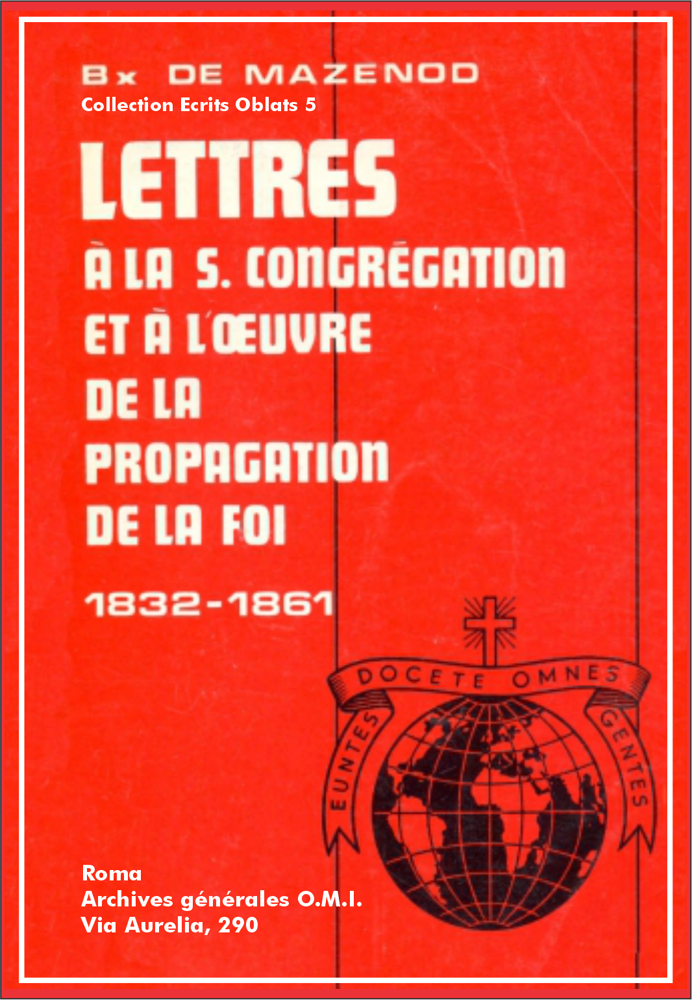

Éscrits Oblats: - 01 - 02 - 03 - 04 - 05 - 06 - 07 - 08 - 09 - 10 - 11 - 12 - 13 - 14 - 15 - 16 - 17 - 18 - 19 - 20 - 21 - 22

Vol.: V - Let. à la Congr. de la Foi 1832-1861
Démarches entreprises auprès du Gouvernement pour envoyer des Oblats en Algérie. Les prêtres partis depuis 1830 sont peu nombreux et mal préparés. Le père de Mazenod offre de nouveau les services de ses missionnaires qui seront toujours reconnaissants du rôle qu'a joué le card. Pedicini dans l'approbation des Règles de la Congrégation.
Marseille, le 10 avril 1832.
Éminentissime,
Depuis qu'Alger fut conquis par les armes du bon roi Charles X [2], je me suis mis à l'œuvre afin de procurer aux catholiques de la colonie les secours de notre religion. Nourrissant en outre dans mon cœur l'espérance de voir un jour beaucoup d'infidèles ouvrir les yeux à la lumière de la foi, j'écrivis à l'Évêque de Marseille, mon oncle [3], et le priai d'écrire au Premier Ministre d'alors [4] et au cardinal Grand-Aumônier [5] en vue d'obtenir aide et protection dans ce but. Ce projet plut beaucoup et on me répondit qu'on pourvoirait au plus tôt à ce point très important en donnant à notre Congrégation les secours et la protection qu'elle demandait. Entre temps je m'apprêtais à écrire au Souverain Pontife, notre protecteur toujours magnanime et cher [6], quand tout à coup s'abattit sur nous la malheureuse révolution [7]. Nous attendîmes alors pour voir ce qui arriverait, si la France maintiendrait ou non sa conquête.
Les nouvelles qui nous parvinrent plus tard nous révélèrent l'insuffisance, pour le nombre de catholiques qui accouraient en ces régions, des secours que pouvaient leur donner quelques prêtres, peu habitués au ministère sacré. C'est alors que se réveilla dans mon cœur le désir d'y pourvoir en offrant de nouveau l'aide de notre Congrégation, non plus cette fois au Gouvernement qui n'a plus le même zèle pour la foi, mais à Rome qui, par droit et par amour, a toujours ;i:la sollicitude omnium ecclesiarum;-i: [8]. J'écrivis à l'Éminentissime de Rohan, mon ami [9], pour qu'il en parle à Votre Éminence. Entre temps, la Propagande envoya deux prêtres dans ces régions. J'espère qu'ils feront quelque chose, mais je ne suis pas sûr qu'ils suffiront à tant de travail, d'autant plus qu'un des deux me paraît faible de santé et que tous deux me semblent fort jeunes [10].
Quoiqu'il en soit, si Votre Éminence veut donner plus d'ampleur à cette mission, je lui offre de nouveau notre très petite Congrégation, sortie en quelque sorte, pourrais-je dire, de vos mains. En effet, si vous vous en souvenez, vous en avez été le ponent très bienveillant quand sa Sainteté le Pape Léon XII voulut l'approuver, comme en fait Elle l'approuva sous forme spécifique [11]. Ma reconnaissance et celle de la Congrégation vit encore dans nos coeurs. Je dirai même que c'est un devoir de la maintenir toujours parmi nous, même après ma mort; c'est pourquoi les paroles qui suivent sont imprimées dans l'avant-propos de nos Règles, ad perpetuam rei memoriam, et je me fais un plaisir de les transcrire ici:
"Le très éminent et pieux cardinal Pedicini, qui accepta la charge de ponent de notre cause, se démontra infatigable tout au long des travaux concernant l'examen très attentif, et fort honorable pour nous, de nos Constitutions." [12]
Le porteur de cette lettre, supérieur du grand séminaire de Marseille et l'un des premiers membres de la Congrégation [13], vous donnera tous les détails nécessaires dans le cas où Votre Éminence voudrait confier la mission d'Alger aux Oblats de l'Immaculée Conception.
De Votre Éminence, le très humble et très obligé serviteur,
Mazenod, sup. gén. O.M.I., vie. gén. de Marseille.
Vol.: V - Let. à la Congr. de la Foi 1832-1861
Les prêtres isolés qui sont allés en Algérie y ont fait peu de bien. Pour travailler avec plus d'unité et de bon exemple il faudrait y envoyer des religieux comme les Oblats de Marie Immaculée. Le supérieur devrait être évêque. Qualités du p. Joseph Guibert. Nom des Oblats qui pourraient l'accompagner.
Rome, le 14 septembre 1833.
Pour entrer dans les vues de Mgr le Secrétaire de la Propagande, je consignerai dans cet écrit les idées que Votre Excellence semble avoir agréées dans la conversation que nous avons eue au sujet de la mission d'Algérie.
Comme l'expérience l'a déjà démontré, les prêtres, que j'appellerai libres, qui se sont présentés jusqu'à maintenant, n'ont fait que peu de bien ou pas du tout. Les uns n'ont pas réussi par défaut de zèle et de pureté d'intention, les autres par manque de force et de coopération. Je ne parle pas des prêtres indignes, trop vicieux pour être bénis de Dieu et qui sont la ruine de l'Église partout où ils passent.
"Appelé à donner mon sentiment, en mon âme et conscience, je dois dire que je suis intimement convaincu que le concert le plus unanime dans les moyens qu'on doit employer étant indispensable-ment nécessaire et les ouvriers que l'on doit choisir devant être remplis de l'esprit de Dieu, on ne pourrait rien faire de mieux que de charger de cette mission la Congrégation des Missionnaires de l'Immaculée Conception qui, ayant la plupart de ses établissements dans les diocèses méridionaux et principalement" à Marseille, est à même de pouvoir [15] "fournir des sujets avec plus de facilité et moins de dépenses. La discipline régulière étant, grâce à Dieu, en vigueur dans cette Congrégation fondée par le Pape Léon XII, le Saint-Père serait assuré de la vertu exemplaire des sujets qui seraient choisis pour cette mission. Ils vivent en communauté sous la dépendance d'un supérieur auquel ils sont accoutumés d'obéir.
Je suis entièrement du sentiment [de Mgr] le Secrétaire. Ce supérieur devrait être honoré du caractère épiscopal. Le choix en est donc très important. C'est pour ce motif que je lui propose un des sujets les plus distingués que je connaisse" [16] en France, tant par ses vertus que par ses talents et son savoir-faire remarquable qui lui gagne les cœurs et lui soumet les esprits. Il s'appelle Joseph Guibert et il est actuellement supérieur de la maison des missionnaires susdits, située au célèbre sanctuaire de Notre-Dame du Laus dans le Dauphiné où passent cinquante mille pèlerins chaque année.
Si jamais Sa Sainteté s'arrêtait à ces vues, l’Évêque d'Icosie, etc. donnerait les plus amples informations qui pourraient être nécessaires, mais ce qu'il peut affirmer dès maintenant c'est que l'abbé Guibert est un très bon sujet, parmi les meilleurs, et qu'il a toutes les qualités requises soit pour être un excellent évêque, soit pour mener à bien cette entreprise si importante pour la propagation de notre sainte religion en Afrique.
[P.S.] Je retrouve la copie de la note que j'ai envoyée à Mgr Mai au sujet de la mission d'Algérie et je vous l'envoie en ajoutant les noms des missionnaires qui pourraient être choisis dans le cas où les Lazaristes reconnaîtraient qu'ils ne peuvent suffire aux besoins des missions du Levant qui leur sont confiées et qu'il n'est donc pas prudent d'assumer la responsabilité d'une nouvelle mission aussi importante que celle d'Algérie, au risque de mal assurer le service.
Je ne me souviens pas des noms de baptême des sujets, mais il me sera facile de me les procurer quand je rentrerai en France. Joseph Guibert, recteur de Notre-Dame du Laus, diocèse de Gap. Il est le premier et très digne sujet que j'ai déjà mentionné. Telmon, né à Barcelonnette, diocèse de Digne, actuellement à Notre-Dame du Laus. Ricard, né à Allauch, diocèse de Marseille. Bernard du diocèse d'Aix. Eymar [17] du diocèse de Gap. Gignoux du diocèse de Gap.
Dans le cas où Mgr Mai prendrait le parti de choisir quelques-uns de ces sujets pour la mission d'Alger, ce que je désire ad maiorem Dei gloriam, il suffirait qu'il en avertisse Mgr l’Évêque de Marseille, comme pour recommander ces missionnaires à sa charité, sans mentionner mon nom. Je comprendrais la chose et je ferais répondre par les missionnaires, sans y paraître moi-même.
Plût à Dieu que cette très sainte affaire eût pris cette bonne direction dès le début, ces bons prêtres seraient déjà à l'œuvre!
Vol.: V - Let. à la Congr. de la Foi 1832-1861
Décès de Mgr Rosati. Dans la Notice statistique des missions catholiques dans le monde, on a oublié le nom de la Congrégation des Oblats. Détails sur l'approbation de l'Institut par Léon XII et sur l'état des maisons et du personnel.
Marseille, le 6 novembre 1843.
Eminentissime,
Quand l'excellent Mgr Rosati [19], récemment décédé, passa par Marseille, j'ai eu le bonheur de lui donner l'hospitalité chez moi. Pendant le peu de jours qu'il demeura auprès de moi, nous nous sommes liés d'une étroite amitié, ce qui me fait éprouver plus vivement la perte que l’Église vient de faire avec la mort d'un évêque d'un tel mérite.
Avant de partir, ce très digne ami me fit cadeau d'un petit livre intitulé: Notice statistique des Missions catholiques dans le monde [20]. Je l'ai lu avec ce plaisir que doit éprouver un Évêque à la vue de la propagation prodigieuse de la foi. Mais tandis que je remerciais Dieu du nombre de Serviteurs que le Père de famille avait envoyés dans sa moisson, et que je me consolais en admirant le zèle de tant de bons prêtres et religieux dispersés de par le monde pour prêcher la Vérité évangélique et faire connaître Dieu et son fils Jésus-Christ notre Seigneur, j'ai ressenti une peine sensible, je vous le confesse, en m'apercevant que dans cette nomenclature glorieuse, l'auteur avait oublié de faire mention de la Congrégation à laquelle j'appartiens. Celle-ci a été approuvée, sous forme spécifique [21], par le Souverain Pontife Léon XII, l'an trois de son pontificat, le 21 mars 1826, par les Lettres Apostoliques Si tempus unquam plane fuit, marquées au seing du pêcheur, avec le nom de Congrégation des Oblats de la Très Sainte Vierge Marie Immaculée. Voici les termes mêmes du Saint Père:
"Nous constituons cette même famille et nous voulons la désigner par le nom de Congrégation des Oblats de la Très Sainte Vierge Marie conçue sans péché." [22]
Il est bien connu que depuis leur fondation les ouvriers de cette Congrégation s'adonnent aux missions, dans un labeur incessant, en France, en Corse et depuis quelque temps en Suisse. Mais ils se sont établis en outre au Canada, depuis deux ans, et peu après en Angleterre où ils ont œuvré d'une façon remarquable pour la gloire de Dieu et la conversion des âmes, spécialement des hérétiques et des infidèles.
Appelés au Canada par Mgr Bourget, évêque de Montréal, ils prêchent des missions dans tout son immense diocèse, non seulement aux catholiques mais aussi dans les townships, villages mixtes dépourvus des secours de la religion, où abondent les hérétiques et les apostats. Les uns et les autres sont rappelés à la foi par le ministère des missionnaires qui travaillent également au milieu des Sauvages dont plusieurs Pères ont déjà appris la langue.
En Angleterre, Mgr Baines, vicaire apostolique, récemment décédé, a confié à la Congrégation des Oblats de la Vierge Marie Immaculée la mission de Penzance, dans le comté de Cornwall. Ils y ont construit une très belle église, fréquentée par les hérétiques de toutes les sectes dont, chaque jour, quelques-uns se convertissent à la Vérité.
Un autre Vicaire Apostolique d'Angleterre demande aussi le secours de leur saint ministère, de même que d'autres évêques du Canada.
Mgr Rosati fut fort étonné en apprenant ces faits et me promit de réparer un oubli involontaire qu'il comprit devoir être pénible à moi-même et à la Congrégation. Mais voici que la mort nous enlève ce saint Évêque, et ses bonnes intentions demeureraient sans effet s'il ne me restait pas la ressource de recourir à votre Éminence pour rétablir la justice, d'autant plus que la Congrégation oubliée précède par ancienneté plusieurs autres familles religieuses mentionnées dans la Notice statistique, tels les Oblats du Pinerol, les Maristes, etc., qui doivent à la même faveur toute particulière, que m'accorda le Pape Léon XII de regrettée mémoire, d'avoir été approuvées par la suite.
Il serait trop long de vous raconter, Éminence, comment le Seigneur a mu visiblement l'esprit et le cœur du Souverain Pontife pour qu'il m'accordât ce qu'il avait refusé à d'autres jusqu'alors. Qu'il vous suffise de savoir que le Saint-Père ne se contenta pas d'exprimer sa volonté à l'archiprêtre Adinolfi, qui remplaçait alors le Secrétaire de la Sacrée Congrégation des Évêques et Réguliers, en lui disant:
"Je veux l'approuver", mais il daigna choisir lui-même les éminentissimes Cardinaux qui devaient examiner les Constitutions. À l'unanimité ceux-ci portèrent un jugement favorable, le 15 février 1826, et ils demandèrent au Saint-Père d'approuver ces Constitutions par Lettres Apostoliques. Dès le 17 février le Pape approuva l'Institut de même que les Constitutions et Règles, et il ordonna d'expédier les Lettres Apostoliques sous forme de bref. Comme je l'ai dit plus haut, ces Lettres furent envoyées le 21 mars 1826.
Bien que j'aie fait à Votre Éminence un récit très précis des événements, je me fais un devoir, pour plus de régularité, de vous présenter: 1 - une copie imprimée des Lettres Apostoliques d'approbation de la Congrégation, 2 - une copie des lettres de divers Souverains Pontifes à ce sujet, 3 - une copie de l'ordonnance de Mgr l'Évêque de Montréal, au Canada, qui établit la Congrégation dans son diocèse.
Quant au nombre de missions, je vous dirai d'abord, pour mémoire et bien que je comprenne que cela n'est pas matière de la Notice statistique, que la Congrégation de la Très Sainte Marie Immaculée, outre les établissements d'Amérique et d'Angleterre, a actuellement une maison de missionnaires dans l'archidiocèse d'Aix, une maison de missionnaires à Marseille où nous avons également la direction du grand séminaire diocésain, une maison de missionnaires et un noviciat préparatoire au sanctuaire de N.-D. de Lumières dans l'archidiocèse d'Avignon, une maison de missionnaires et un noviciat au sanctuaire de N.-D. de l'Osier au diocèse de Grenoble. En Corse, nous avons une maison de missionnaires à Vico et, de plus, la direction du grand séminaire d'Ajaccio où les Pères enseignent, comme au séminaire de Marseille, la théologie dogmatique et morale, le droit canonique, l'Écriture Sainte, la philosophie, etc.
Les missions que j'appellerai étrangères se trouvent: 1 - dans le diocèse de Montréal, au Canada, où les missionnaires vont évangéliser les hérétiques dans les townships et les Sauvages. Cette mission compte huit prêtres, deux diacres qui sont peut-être déjà prêtres, six étudiants novices, deux profès et cinq frères coadjuteurs. 2 - À Penzance, en Angleterre, dans le district occidental de Cornwall, nous avons trois missionnaires prêtres, trois étudiants, un frère coadjuteur et une très belle église. Toute cette population est à convertir, car il n'y a encore que quelques catholiques.
Je finis cette très longue lettre, Eminence, en vous baisant les mains.
Votre très humble et très fidèle serviteur,
+ C. J. Eugène, évêque de Marseille.
Vol.: V - Let. à la Congr. de la Foi 1832-1861
Succès de l'apostolat des Oblats au Canada. Désir d'obtenir une bénédiction du Saint-Père.
Marseille, le 23 décembre 1846.
Éminentissime,
...Vous avez sans doute déjà vu, à cette heure, le saint Évêque de Montréal au Canada. Vous aurez appris de lui les bénédictions que le Seigneur accorde au ministère de nos Oblats de Marie Immaculée qui non seulement donnent des missions dans les diocèses de Montréal, Kingston et Québec, mais qui évangélisent également les Sauvages des rivières Ottawa, St-Maurice et Saguenay et viennent même de s'aventurer jusqu'à Saint-Boniface sur la Rivière-Rouge et dans toutes ces vastes forêts remplies de tribus sauvages.
Oh! comme je désirerais que le Saint-Père en fut informé afin que jaillisse de son cœur paternel une de ces larges bénédictions qui font fructifier au centuple la semence divine dans le champ du Père de famille.
Vous savez, Eminence, que le défunt pontife Grégoire XVI, peu avant sa mort, confirma les Constitutions et la Congrégation par Lettres Apostoliques du 20 mars 1846. Celle-ci avait été approuvée, sous forme spécifique, par le pape Léon XII, de sainte mémoire, par les Lettres Apostoliques du 21 mars 1826. Je vous rappelle ces détails, Éminence, afin que comme préfet de la S. Congrégation de la Propagande vous connaissiez la qualité des ouvriers qui travaillent sous votre protection dans la vigne du Seigneur.
Acceptez, Éminence, l'expression habituelle des sentiments les plus vifs de respect et d'affection de votre très humble et très fidèle serviteur,
+ C. J. Eugène, évêque de Marseille.
Vol.: V - Let. à la Congr. de la Foi 1832-1861
Les Oblats envoient trois missionnaires à Ceylan. Motifs et conditions de cette décision. Apostolat de la Congrégation dans divers pays. Départ de Mgr Bettachini. Le diocèse de Bytown a-t-il été érigé?
Marseille, le 11 août 1847.
Éminentissime,
...Je ne puis m'empêcher de vous entretenir encore une fois de la malheureuse mission de Ceylan. Nous en avons parlé beaucoup avec l'excellent Mgr Bettachini. Je reste persuadé qu'il est nécessaire d'envoyer du secours à ces peuples disposés à recevoir la lumière de la vérité mais, hélas, négligés par ces Goanais, vrais bourreaux des âmes. Il est d'autant plus important de présenter là des prêtres comme il faut, véritables hommes de Dieu, que indépendamment du schisme qu'on peut mépriser, l'hérésie veut en faire un centre de l'erreur et y a déjà établi un évêque anglican. Vous savez, Éminence, comment je me sens un cœur catholique. C'est ce sentiment qui m'inspira de fonder cette Congrégation des Oblats de Marie Immaculée à laquelle le Pape Léon XII donna la vie canonique d'une façon que j'appellerais presque miraculeuse. Répandue non seulement en France et en Angleterre, où elle fait tant de bien, elle s'est étendue en Amérique, de l'Atlantique au Pacifique, où elle évangélise les Sauvages qui viennent sur les rives du Saint-Laurent, du Saint-Maurice, du Saguenay et de l'Ottawa. Ses missionnaires se sont établis à Saint-Boniface sur la Rivière-Rouge et en Orégon, et maintenant ils s'avancent par la [rivière] Moose vers la Baie d'Hudson. Eh bien! Nous voici prêts à accepter les missions de l'île de Ceylan, sous la juridiction du saint Évêque de Torona à qui je viens de promettre trois excellents sujets, dont l'un est supérieur des missions de la Corse où il opère de vrais prodiges de conversion. La seule condition que je mets à ce don est que ces très dignes missionnaires ne dépendent pas du caprice des Goanais mais travaillent sous la direction du coadjuteur, Mgr Bettachini, qui m'a beaucoup plu pendant les deux jours qu'il a passé avec moi à Marseille. Ce bon prélat part aujourd'hui par le vapeur; mais comme il se sent assez fatigué du voyage, il s'arrêtera pendant quelques jours à Città di Castello, sa patrie. Il espère arriver à Rome vers le 25 de ce mois. Ce repos sera [trop] court, à mon avis, parce qu'il a vraiment besoin de se rétablir.
Je vous prierais maintenant, Éminence, de me faire savoir quelque chose sur la décision prise au sujet du diocèse de Bytown au Canada. Mgr l'Évêque de Montréal m'avait dit que la Sacrée Congrégation devait m'adresser les Bulles de l'Évêque si le Saint-Père érigeait ce diocèse. J'avais hâte de savoir si sa Sainteté a choisi le sujet présenté par les Évêques de la province de Québec, puisqu'il appartient à la Congrégation des Oblats de Marie Immaculée. Vraisemblablement les Bulles auront été envoyées par une autre voie. J'aimerais cependant être informé du fait. Veuillez excuser l'importunité de ma demande et acceptez le respect avec lequel je suis, Éminence, votre très humble serviteur,
+ C. J. Eugène, évêque de Marseille.
Vol.: V - Let. à la Congr. de la Foi 1832-1861
Joie de savoir que le Cardinal agrée l'envoi de missionnaires Oblats à Ceylan. Noms et qualités des trois Pères qui forment la première colonie. Prière de leur accorder le titre de missionnaires apostoliques. Espoir de les envoyer gratuitement jusqu'à Alexandrie.
Marseille, le 25 septembre 1847.
Éminentissime,
J'ai appris avec le plus grand plaisir, par votre précieuse lettre du 7 de ce mois, que vous agréez l'offre que je vous faisais de trois de nos missionnaires Oblats de la Très Sainte Marie Immaculée. D'après ce que j'ai compris, au cours de mes conversations avec Mgr Bettachini sur cette mission, il s'agit-là d'une grâce de la divine Providence en faveur de ces peuples de Ceylan qui ont tant besoin de secours.
Mon souci, pour correspondre aux vues de la Sacrée Congrégation, a été de choisir de très bons sujets. Cela ne m'a pas été difficile puisque nos Oblats de la Très Sainte Marie Immaculée sont, par la grâce de Dieu, tous bons, tous prêts à sacrifier leur vie pour glorifier Dieu et travailler à la conversion et à la sanctification des âmes; tel est précisément le but de leur vocation. Parmi ces bons sujets j'ai vraiment choisi le meilleur, le p. Étienne Semeria. Il n'est pas très avancé en âge, n'ayant que 34 ans, mais il possède la maturité en ce qui concerne les vertus et toutes les qualités religieuses. Depuis plusieurs années il remplissait les fonctions de supérieur des missions de Corse. C'est incroyable avec quel succès, avec quelles bénédictions de Dieu même les bandits venaient se jeter à ses pieds, et prodigieuses sont les réconciliations que son zèle et sa bonté obtenaient dans ce pays que chacun connaît. Lorsque l'Évêque apprendra le vol que je suis en train de lui faire, je ne sais pas s'il me le pardonnera. Mais la Congrégation prête ses sujets, elle ne les donne pas. Il est très important de mettre à la tête de cette première petite communauté un religieux tel que le p. Semeria. J'ai choisi un autre italien, également très bon religieux, comme premier compagnon du p. Semeria. Le troisième est lui aussi un ange par les traits de la figure et par les mœurs; celui-là je l'ai choisi parmi nos Oblats irlandais à cause de la langue anglaise si nécessaire dans ces pays; il servira d'interprète et de maître à ses compagnons. Le p. Ciamin, le second que j'ai mentionné, commence déjà à parler cette langue.
Je voudrais maintenant vous supplier, Éminence, d'accorder une faveur à ces trois missionnaires. C'est de leur donner le titre et les pouvoirs de missionnaires apostoliques. Comme ils vivront dans l'obéissance à Mgr Bettachini pour qui j'ai conçu une réelle estime, j'ai à cœur que nos Pères Oblats ne soient pas moins favorisés que tels autres qui se trouvent déjà dans l'île. Vous pouvez être assuré qu'ils n'abuseront pas de cette faveur et qu'ils feront honneur au titre et aux fonctions qui leur seront donnés.
J'attends la réponse du Gouvernement à qui j'ai écrit pour obtenir le passage gratuit jusqu'à Alexandrie. Si je ne l'obtiens pas, j'aurai besoin d'être aidé par la S. Congrégation qui emploiera mieux son argent en le donnant à cette fin plutôt que de le perdre, en un certain sens, en nourrissant ce paresseux de Macario qui ne sait pas faire autre chose que de manger et d'aller se promener. Il dit toujours qu'il veut s'en aller. L'autre jour, il m'a fait signer une pétition et écrire afin d'obtenir le passage pour Constantinople. Qu'il parte donc, puisqu'il s'est rendu insupportable à tous.
Acceptez l'hommage affectueux avec lequel je suis, Éminence, votre très humble et très dévoué serviteur.
+ C. J. Eugène, évêque de Marseille.
Voici les noms des trois Pères Oblats de la Très Sainte Marie Immaculée qui doivent partir pour l'île de Ceylan:
1 - Le p. Étienne Semeria de la Colla, diocèse de Vintimille.
2 - Le p. Joseph Ciamin de Nice.
3 - Le p. Louis Keating de Mountmellick, diocèse de Carlow en Irlande.
4 - Un frère convers [26].
Vol.: V - Let. à la Congr. de la Foi 1832-1861
Ordination de religieux italiens à Marseille. Plaintes contre les frères Blanchet en Orégon. Il conviendrait de nommer le p. Pascal Ricard, o.m.i., évêque de Nesqually, et un Jésuite, vicaire apostolique des Montagnes Rocheuses. Communiquer confidentiellement ces projets à Mgr Barnabò.
Marseille, le 26 octobre 1848.
Mon cher Chanoine,J'ai été bien contrarié de ne pouvoir vous entretenir quelques instants lors de votre dernier passage à Marseille. J'allais ordonner prêtre un de ces pauvres Jésuites que l'on voudrait, dans les Etats du Roi de Sardaigne, faire aller aux armées, tout religieux qu'ils sont, quand ils ne sont pas dans les Ordres sacrés, et l'intolérance est poussée au point de menacer des plus mauvais traitements les Évêques qui s'aviseraient d'ordonner les Religieux. C'est ce qui les amène tous auprès de moi qui ne me laisse pas intimider. J'ai fait une douzaine d'ordinations extra tempora pour sauver ces bons religieux de la persécution, et je ne m'en plains pas quelque fatigant que ce puisse être.
Nous avons dit un mot d'une affaire importante pour le service de l'Église et le salut des âmes, dans le court moment que nous nous sommes vus. Je vais vous en parler plus au long, laissant à votre discrétion d'en faire part à Mgr Barnabô, mais à lui seul, si vous le jugez convenable. Vous comprendrez combien il importe qu'étant bien informé, il ne laisse jamais soupçonner qu'il a appris par moi ce qui se passe en Orégon. Les Évêques de ce pays-là qui s'entendent entre eux ne le pardonneraient pas à nos bons Pères Oblats de Marie qui souffrent déjà assez. D'abord je ne sais pas si Mgr Barnabò connaît le caractère des deux frères Mess[eigneu]rs Blanchet, l'un archevêque d'Orégon-city, l'autre évêque de Walla Walla. Ce sont deux hommes entiers devant qui tout doit plier; ils ont adopté un système, dans lequel ils ont entraîné Mgr Demers, évêque de Vancouver [28], qui consiste à se considérer non seulement comme les pasteurs mais comme les maîtres, les propriétaires de tout établissement religieux qui se forme sur le sol de leur juridiction.
Ne reconnaissant aucun privilège des Congrégations ou Ordres religieux, ils voudraient s'emparer de tout ce qu'ils possèdent, du moins de ce qui leur vient de la Propagation de la foi, et les Religieux n'ont que cela. C'est d'après ce système que les Jésuites ont été singulièrement vexés, au point de compromettre leur mission. Maintenant c'est le tour des Oblats de Marie. Ces bons Prélats qui visent actuellement au repos ne voient pas qu'en voulant assimiler les Congrégations et Ordres religieux aux prêtres libres qu'ils ont avec eux, ils détruisent le nerf de la discipline régulière et nuisent au développement des ressources de leur zèle pour la propagation de l'Évangile. Je ne suis pas le confident des griefs des Jésuites, je sais seulement qu'ils ont beaucoup à se plaindre des procédés des Évêques, mais je vois avec une grande peine que ces Prélats donnent aussi aux Oblats de Marie des sujets de mécontentement et d'inquiétude. Ceux-ci sont pourtant des hommes bien dévoués qui ont tout abandonné, parents et patrie, pour se consacrer à la conversion des infidèles. Il me semble que des Évêques, qui certainement ne peuvent pas tout faire par eux-mêmes, devraient s'estimer heureux d'avoir de tels coopérateurs et les ménager davantage.
J'apprends que Mgr Demers, évêque de l'île Vancouver, vient en Europe. Il se rendra sans doute à Rome pour faire adopter à la S. Congrégation plusieurs projets. Entre autres, pour maintenir cette espèce de monopole que les Évêques ont établi en Orégon, il proposera un prêtre canadien (ils sont tous Canadiens) pour le siège de Nesqually [29]. Ce serait le comble du malheur. Alors, et les Jésuites qui ont déjà tant fait de bien et les Oblats de Marie Immaculée pourraient se retirer; car les prétentions de ces Évêques sont intolérables.
Quel remède y aurait-il donc à ce désordre? Que l'on se persuade bien qu'il n'y en a pas d'autre que de nommer à ce siège de Nesqually un membre d'une des Congrégations religieuses qui évangélisent ces contrées. Les Jésuites disent que leur Institut ne leur permet pas d'accepter un siège épiscopal, alors il conviendrait de choisir ce sujet parmi les Oblats de Marie, et le choix devrait tout naturellement tomber sur le supérieur actuel qui est un homme très pieux, plein de bon sens et tout dévoué au service de l'Église, c'est le père Pascal Ricard, né à Allauch, diocèse de Marseille, le 16 mai 1805, ordonné prêtre en 1831, supérieur provincial de la Congrégation des Oblats de Marie Immaculée dans l'Orégon. Par cette sage mesure les Réguliers auraient un protecteur et tant les Jésuites que les Oblats pourraient en toute liberté exercer leur zèle sans être exposés à toutes les entraves qu'ils rencontrent dans les singulières prétentions des Évêques canadiens qui se sont emparés de tout ce vaste pays. Si j'osais encore donner mon avis sur ce qu'il conviendrait de faire par rapport aux Jésuites, ce serait de nommer un des leurs Vicaire Apostolique aux Montagnes Rocheuses. Ce sera le seul moyen de les délivrer des entraves qu'ils rencontrent dans l'exercice de leur saint ministère.
Vous comprenez, mon cher Chanoine, que plus je vous parle à cœur ouvert et dans la seule vue du bien, plus vous devez prendre de précautions pour qu'au grand jamais les Évêques de l'Orégon puissent savoir la démarche que je fais par votre intermédiaire auprès de Mgr Barnabò. Rappelez-vous qu'il n'en faut parler qu'à lui seul dont la discrétion m'inspire toute confiance. Je sais par expérience qu'on ne garde pas le secret dans les bureaux et les secrétariats, et vous sentez que tout serait perdu si la S. Congrégation, n'adoptant pas le projet que je propose, les Évêques en avaient vent. Je m'en rapporte entièrement à votre sagesse.
Que de choses n'aurais-je pas à dire sur d'autres missions encore, mais je m'en tiens là. Je croirai avoir fait beaucoup pour la gloire de Dieu et le salut des pauvres Sauvages si j'obtiens la mesure dont je viens de vous entretenir. S'il m'est permis quelque jour d'aller à Rome, comme je le désire depuis longtemps, j'entretiendrai Mgr Barnabò, avec lequel j'ai tant d'envie de faire connaissance, de bien des choses intéressantes à ce sujet.
Adieu, mon cher Chanoine, agréez la nouvelle assurance de mon affectueux attachement et de ma tendre amitié.
+ C. J. Eugène, évêque de Marseille.
Vol.: V - Let. à la Congr. de la Foi 1832-1861
Désir d'aller à Rome. Message confié au chanoine Lowenbruck. Il conviendrait de nommer un religieux au nouveau siège de Nesqually: le p. Pascal Ricard. Prière de ne pas communiquer ces réflexions aux Eve que s d'Orégon.
Marseille, le 23 novembre 1848.
Très révéré Monseigneur,
J'avais toujours espéré pouvoir me rendre à Rome pour présenter mes hommages à notre saint Pontife vers lequel me portent tous les sentiments de mon cœur, mais les circonstances toujours plus défavorables m'ont retenu de force dans mon diocèse [31]. J'en ressens d'autant plus de peine que je nourrissais également un grand désir de faire connaissance avec vous, très révéré Monseigneur, dont je connais non seulement le nom, pour l'avoir lu dans les papiers de la Propagande, mais surtout les mérites sur le dire de personnes que je connais et qui ont eu l'avantage d'avoir affaire à vous. Viendront peut-être des jours paisibles qui me permettront d'entreprendre ce voyage. En attendant, je profite de l'occasion que j'ai d'écrire à son éminence le cardinal Préfet pour insérer dans le pli cette petite lettre à votre adresse pour vous faire une confidence. Je ne me sentais pas capable de vous en parler directement. C'est pourquoi j'avais écrit au missionnaire apostolique Löwenbruck, chanoine honoraire de ma cathédrale, afin qu'il s'abouche avec vous et vous communique ce que je lui disais à propos de la mission de l'Orégon. Entretemps j'ai reçu une lettre de ce Löwenbruck, écrite le jour de son départ de Rome. Ayant compris que la mienne ne lui était pas encore parvenue, j'ai donc cru opportun de charger M. Ferrucci [32] de retirer ma lettre de la poste pour vous la remettre afin que vous la lisiez. Je regrette de devoir agir avec ce sans-gêne mais, dans les affaires qui intéressent la gloire de Dieu et le salut des âmes, il n'y a pas de mal à se confier avec simplicité et à parler à cœur ouvert. Vous examinerez et pèserez devant Dieu; ce que vous déciderez ensuite sera bien fait.
II me semble que le système suivi par les Évêques de l'Orégon n'est pas bon. J'estime que si les autres évêques qui seront nommés sont choisis au Canada, parmi les amis des évêques actuels, le monopole s'établira tel qu'on ne puisse plus y remédier. La pensée de donner un protecteur aux Réguliers, de même qu'aux Congrégations religieuses, en nommant à un des sièges un religieux d'une de ces Congrégations est certes une très bonne chose pour maintenir un juste équilibre et produire un plus grand bien. Si le système actuel des Évêques continue et se consolide avec un nouveau renfort, je vois le jour où les Jésuites et les religieux des autres Congrégations seront obligés de se retirer et alors les missions confiées à des prêtres séculiers, plus ou moins édifiants, iront très mal. Considérez ensuite qu'un évêque pris dans une Congrégation religieuse, habitué à la vie commune et régulière, ne cherchera pas ses aises et ses commodités mais continuera à être missionnaire et marchera à la tête des siens à la recherche des brebis perdues.
Si jamais ces réflexions font quelque impression sur vous et que vous jugiez plus opportun de nommer, par exemple au diocèse de Nesqually, un missionnaire des Oblats de Marie Immaculée, le supérieur provincial, homme d'âge mûr, de grande piété, de doctrine suffisante, de beaucoup de bon sens et d'un zèle à toute épreuve, serait le religieux que j'oserais proposer à la S. Congrégation. Les Pères Jésuites de S.-François-Xavier, si je ne me trompe, de Vancouver pourraient vous donner les témoignages les plus favorables au sujet que je propose, mais il faut attendre trop longtemps pour obtenir des nouvelles de ce lointain pays. J'en suis cependant sûr parce que j'ai lu une lettre de ces Pères, écrite dans ce sens. Le nom de ce Provincial est Pascal Ricard, né à Allauch au diocèse de Marseille, baptisé le 16 mai 1805 et ordonné prêtre en 1831.
Vous devez comprendre, Monseigneur, à quel point il importe que les Évêques de l'Orégon ne sachent jamais que j'ai parlé aussi franchement avec vous, en toute confiance et selon ma conscience, pour le bien de cette importante mission; mais les Évêques prendraient mal la chose et malheur aux pauvres missionnaires!
Veuillez agréer les sentiments d'estime et de vénération avec lesquels je suis, très révéré Monseigneur, votre humble et dévoué serviteur,
+ C. J. Eugène, évêque de Marseille.
Vol.: V - Let. à la Congr. de la Foi 1832-1861
Joie d'avoir reçu une réponse à la lettre du 23 novembre et de savoir que Mgr Barnabò partage ses vues sur l'opportunité de nommer un religieux à Nesqually. Qualités et vertus du p. Semeria qu'un Jésuite anglais voulait supplanter auprès de Mgr Bettachini. Les Jésuites s'établiront à Ceylan. Il conviendrait de ne pas les fixer à Jaffna: Nouvelles du Pape qui a écrit personnellement et pourrait venir à Marseille.
Marseille, le 30 décembre 1848.
Très vénéré Monseigneur,
J'ai éprouvé une grande consolation en recevant votre aimable réponse. A cause des circonstances présentes, je craignais que vous ayez été obligé de céder à la tempête; en ce cas, quel malheur pour les pauvres missions qui ont tellement besoin de votre sage direction.
Je vois avec plaisir que vous ne refusez pas la solution qui me paraît la meilleure pour maintenir la paix et procurer le bien des missions lointaines. Autrement, ces "bienheureux" évêques en seraient réduits pour leur malheur et plus encore pour celui des âmes à demeurer seuls avec quelques prêtres séculiers, arrivés là Dieu sait comment, les Congrégations religieuses ne pouvant pas supporter longtemps un tel despotisme et des prétentions si peu conformes au droit canonique.
En choisissant un évêque parmi les religieux d'un Ordre ou d'une Congrégation, on maintiendra l'équilibre et on obtiendra pour les Congrégations cette juste liberté, toujours conforme aux saints canons et nécessaire pour maintenir la dépendance envers les supérieurs, la fidélité aux Règles et la ferveur indispensable au bien des âmes. Cela suffit pour l'Orégon.
Mais puisque vous m'encouragez à vous dire toujours sincèrement ce que je pense des missions, je ne répugnerai pas à vous faire une autre confidence, cette fois sûr les missions de l'île de Ceylan.
Vous savez que Mgr Bettachini a emmené quelques missionnaires de la Congrégation des Oblats de Marie Immaculée dont le p. Étienne Semeria, un sujet vraiment accompli que je vous recommande d'une façon spéciale si vous deviez choisir un jour un vicaire apostolique parmi les missionnaires.
Mgr Bettachini l'estime tellement qu'il en a fait, pourrait-on dire, son secrétaire parce qu'il est bon théologien, qu'il écrit bien et qu'il est homme de grande piété et d'excellent caractère. Mais que voulez-vous que je vous dise? Un certain Jésuite anglais, trop zélé pour son Ordre, de concert avec deux missionnaires espagnols ou italiens, s'est employé à éloigner de l'évêque pour s'en rendre maître le bon p. Semeria. Heureusement leur conjuration a échoué car Monseigneur s'est refusé à prendre une mesure aussi contraire à sa délicatesse qu'à ses propres intérêts. Cependant les Jésuites s'introduiront vraisemblablement dans l'île comme ils le désirent depuis longtemps. Puissent-ils tous être prophètes! Mais je croirais très important répartir les missions de manière à éviter des dissensions. Dans ce cas je vous prierais de confier Jaffna et ses environs à la Congrégation des Oblats de Marie Immaculée et de déterminer une autre mission aux pères Jésuites arrivés après.
Cette division serait d'autant plus opportune que si dans la suite Mgr Bettachini venait à succéder au Vicaire Apostolique de Colombo, la S. Congrégation pourrait nommer le supérieur des Oblats de Marie Immaculée vicaire apostolique de Jaffna qui serait déjà la mission confiée à cette Congrégation. Je ne sais si j'abuse de la liberté que vous m'avez donnée de vous communiquer mes idées, avec franchise et simplicité, pour le plus grand bien des missions. Excusez-moi si j'ai outrepassé les limites, bien que j'aurais beaucoup d'autres choses à vous dire de vive voix.
Il vous sera certainement agréable d'apprendre quelques nouvelles du Saint-Père. Non content de m'avoir donné une preuve de sa bonté, en me faisant écrire pas son éminence le cardinal Antonelli, il a mis le comble à sa trop grande bienveillance en m'écrivant lui-même une lettre des plus paternelles qui m'a ému jusqu'aux larmes. Sa santé était bonne. Qui sait si je n'aurai pas la chance de me prosterner à ses pieds et de me serrer contre sa poitrine où bat un si bon cœur. Expliquez cette phrase de sa précieuse lettre: " ...mais j'espère avoir l'occasion de pouvoir vous manifester d'une manière plus consolante, à vous-même et à votre peuple, les sentiments de notre cœur, tout comme maintenant nous vous accordons, avec beaucoup d'affection, la bénédiction apostolique".
Je l'aurais vénéré bien plus volontiers à Rome, mais si les dispositions de la divine Providence le conduisent en France, quelle ne sera pas ma joie de le recevoir dans ma propre maison! Ah! que ne ferons-nous pas pour adoucir les peines d'un tel Pontife et d'un père si aimé!
Acceptez, très vénéré Monseigneur, l'hommage des sentiments d'estime et de véritable affection avec lesquels je suis votre très humble serviteur,
+ C. J. Eugène, évêque de Marseille.
Vol.: V - Let. à la Congr. de la Foi 1832-1861
Libération de Rome. Les Jésuites, comme les Oblats, proposent le p. Ricard comme futur évêque de Nesqually. Pauvreté et fatigue de Mgr Demers et des frères Blanchet. À Ceylan, M. Reinaud espère devenir évêque. Il convient plutôt de nommer le p. Semeria. Un missionnaire de Ceylan loue les Oblats et désire qu'ils s'établissent dans le vicariat de Colombo.
Marseille, le 30 juillet 1849.
J'attendais avec une véritable impatience, l'heureux moment de la libération de notre chère Rome, opprimée par cette bande de scélérats qui ont laissé tant de ruines [35]. J'ai souvent demandé, par ces temps de calamité, si on avait entendu dire qu'il fût arrivé quelque chose de désagréable à votre très digne personne. On me répondit que vous viviez caché à Rome et, certes, je n'ai jamais été tenté de rappeler votre nom à l'attention de ces coquins. Pendant ce temps, j'ai toujours correspondu avec Gaète. Je ne saurais trop louer la bonté du Saint-Père et la complaisance des Ministres qui m'ont transmis rapidement les ordres ou les faveurs que j'ai demandées à sa Sainteté. Hier encore, j'ai reçu une lettre très aimable de son éminence le cardinal pro-secrétaire d’État et une dispense envoyée par l'inquisiteur. Mais certaines questions doivent être traitées directement avec vous. Monseigneur, en particulier celles qui concernent les missions. J'ai donc attendu que Rome fût débarrassée de toute la canaille qui l'épouvantait pour reprendre avec vous la correspondance commencée à ce sujet.
Je parlerai d'abord de l'Orégon et je vous rappellerai ce que vous a écrit le Père Général des Jésuites. Il vous a communiqué les nouvelles reçues de ses sujets qui lui dévoilèrent l'état misérable des missionnaires, vraiment soumis aux vexations de ces "saints" évêques. Les lettres que j'ai reçues moi-même de mes Oblats confirment pleinement les récits des Pères Jésuites. Les prétentions de l'Archevêque et celles de son frère, évêque de Walla Walla, sont vraiment incroyables. L'Archevêque s'est endetté pour des centaines de mille francs et voudrait maintenant tirer du sang de la betterave [36].
Ces Prélats voudraient que tout leur appartînt et enlèvent les forces et le courage à ceux qui se sentent disposés à faire du bien aux âmes qu'ils sont allés chercher à cette extrémité de la terre. Le seul remède à tant d'ennuis et à des procédés écœurants serait de créer un vicaire apostolique pris parmi les Oblats de Marie Immaculée. Tel est précisément le sentiment exprimé par les Jésuites qui résident sur place. Ils ajoutent même que le sujet qui devrait être proposé à la S. Congrégation est justement celui dont je vous ai déjà parlé dans mes autres lettres, c'est-à-dire le supérieur, p. Ricard. Il vous appartiendra, très vénéré Monseigneur, de décider s'il convient de le nommer vicaire apostolique ou évêque titulaire de Nesqually. Ce dernier titre, le faisant co-provincial de la province ecclésiastique de l'Orégon, serait un contrepoids au système adopté par ces trois Évêques, venus tous les trois du Canada et qui voudraient vraisemblablement s'associer à un autre canadien pour opprimer davantage ceux qui ne pensent pas comme eux.
Vous comprenez. Excellence, à quel point ce discours est délicat; je vous prie donc instamment de ne pas en souffler mot à Mgr Deluquet qui, selon ce qu'on me dit ici, ferait tout savoir aux Prélats, ses correspondants. Mgr Demers ne tardera pas à venir en Europe pour faire approuver les plans convenus sur l'Orégon. Bien qu'il soit, me dit-on, le plus modéré des trois Évêques, il faut cependant se méfier de ses préoccupations, dans les rapports dont il est porteur. Il peut se faire que Mgr Blanchet, peu satisfait de son diocèse de Walla Walla, demande à être transféré à Nesqually, que Mgr Demers veuille être coadjuteur de l'Archevêque et qu'ils présentent quelqu'un de leur goût comme successeur de Mgr Blanchet à Walla Walla. D'après le sentiment des missionnaires ce serait un mal irrémédiable que d'entrer dans les vues des trois Prélats et de perdre l'occasion de donner un protecteur aux missionnaires ainsi qu'un champ à leur zèle, en réservant Nesqually pour un évêque missionnaire.
Il me reste à ajouter une réflexion qu'il me répugne de confier au papier et que je préférerais vous communiquer verbalement, mais que je vous dis sous le secret, c'est que les Évêques actuels sont fatigués et ils cherchent un peu de repos plutôt que les fatigues des missions. Je vous en prie. Monseigneur, ne me trahissez pas et que personne ne soit jamais mis au courant de la confidence que ma conscience m'inspire de faire à vous seul. Il n'en sera pas ainsi du p. Ricard. Son élection ne changera rien à ses habitudes de zèle et de sacrifice. Il sera toujours un humble religieux, occupé principalement de son ministère apostolique. Les missionnaires, tant Jésuites qu'Oblats de Marie Immaculée, reprendront courage et il en résultera un grand bien pour la propagation de la religion dans ces pays abandonnés. Je dois vous dire que les Missionnaires Oblats ont déjà commencé à s'établir à Nesqually où ils se sont approchés des Sauvages qui commencent à s'instruire à leur voix. Pesez toutes ces choses. Excellence, et décidez.
Après l'Orégon je tiens à vous parler de Ceylan. Il existe dans cette île des jalousies et des prétentions que vous aurez déjà su discerner. Entre autres, j'ai toujours pensé qu'un certain Reinaud, qui doit retourner à Rome avant de se rendre à Ceylan, brûle d'envie de devenir évêque. Je pense au contraire que dans cette mission il conviendrait de donner une position je ne dirai pas indépendante mais plus libre à la Congrégation des Oblats de Marie Immaculée, en réservant à leur zèle une portion de l'île sous un Vicaire Apostolique choisi dans leurs rangs.
Je crois que tel est la pensée de Mgr Bettachini et de ceux qui veulent le bien de l'île. En ce cas ce serait le très bon p. Semeria qui pourrait vous être présenté et à la Sacrée Congrégation. Je réponds de son mérite sous tous les rapports, science, bonté, zèle, capacité et vertu solide. Mgr Bettachini vous en aura certainement fait l'éloge. Je reçois une lettre inattendue d'un très digne missionnaire, appelé Dominique Priori, qui s'exprime en ces termes: " Je parle de ces chers Pères que vous avez envoyés dans le Vicariat du Nord de cette île.
J'en suis persuadé, les Oblats de Marie Immaculée donnent de grandes espérances pour que la situation des chrétiens de ces régions s'améliore prochainement. Je veux dire que les Indigènes sont comme les Cretois: de mauvaises bêtes, paresseux et menteurs; mais, édifiés par la conduite de leurs Pères, guidés par leurs instructions, freinés par leur sévérité tempérée de prudence et d'amour, comme le Seigneur nous le commande, ils perdront ou du moins modifieront, à l'avantage de leurs âmes, cette nature qui chez eux n'est pas seulement corrompue comme dans le commun des mortels, mais elle est aussi affectée de leurs nombreux préjugés enracinés dans leur orgueil. J'ai la joie, cher Monseigneur, de vous annoncer que cette grande œuvre d'amélioration de l'île est déjà commencée avec un succès non négligeable à Jaffna où est le très digne p. Semeria et à Manar où se trouve le bon p. Ciamin. L'application constante des pères Mouchel, Leydier et Lebescou à l'étude de la langue tamoul, leur persévérance dans l'étude de la morale et du dogme comme dans les exercices religieux ne me laissent aucun doute que les chrétientés vers lesquelles ils seront envoyés jouiront des mêmes avantages. Il ne faut pas s'étonner si ces Religieux opèrent un tel bien car tous ont devant les yeux, etc (ici se trouvent certains compliments à mon sujet, que je ne dois pas répéter) et je me suis souvent plu d'observer en silence le cher p. Semeria qui recommandait par son exemple cette imitation à ses confrères. Si je pouvais écrire davantage, comme je le ferais volontiers! Mais je suis encore malade... J'ajoute donc simplement que je suis décidé à mener à bonne fin l'œuvre que j'ai commencée et qui est de faire en sorte qu'une maison oblate soit établie dans notre vicariat du Sud." [37]
Voilà ce que j'ai voulu vous relater. Excellence, pour vous prouver en quelle estime sont tenus le p. Semeria et ses compagnons dans l'esprit des bons prêtres comme aussi de l'Évêque qui ont surtout en vue Dieu et le bien des âmes.
Acceptez, très vénéré Monseigneur, l'hommage de mes sentiments de respects et d'affection avec lesquels je suis votre véritable serviteur,
+ C. J. Eugène, év. de Marseille.
Vol.: V - Let. à la Congr. de la Foi 1832-1861
Épidémie -de choléra à Marseille. Création d'équipes de secours. Départ du curé grec de Marseille et de Macario Spiro. Rappel des avantages qu'il y aurait à nommer le p. Semeria coadjuteur de Mgr Bettachini à Jaffna et le p. Ricard évêque de Nesqually. Pureté d'intention de ces propositions. Envoi d'un rapport sur les missions de l'Orégon.
Marseille, le 8 octobre 1849.
Très vénéré Monseigneur,
Votre dernière et très charmante lettre est arrivée à Marseille alors que je me trouvais hors du diocèse. Etant rentré en hâte à cause de l'épidémie de choléra, j'ai été tellement occupé que c'est à peine si j'ai le temps de respirer. Le fléau pèse toujours sur ma pauvre Marseille et bien que plus de 80 000 âmes aient quitté la ville, nous comptons encore chaque jour de 30 à 40 victimes de cette horrible maladie. Comme les bureaux d'assistance, composés uniquement d'hommes, qui aident au soin des malades par zèle ou pour d'autres motifs, étaient trop souvent pour moi un sujet d'inquiétude, quand ils étaient appelés auprès des personnes du sexe, j'ai formé moi-même divers bureaux uniquement composés de femmes, seules chargées désormais des soins charitables aux cholériques de leur sexe. Oh! comme je suis content d'avoir pris cette mesure. Seule la charité meut ces belles âmes, inspirées par la religion et envoyées par leur Pasteur, alors que, avant cela, la philanthropie organisée par le laïcisme ne savait pas réprimer le vice le plus effronté qui se cachait sous son manteau.
J'avais d'autres choses à vous dire, mais sans que je m'en aperçoive mon cœur s'est un peu soulagé de ce dont il est rempli. Je voulais vous entretenir d'abord de notre curé melchite qui est retourné, moribond, dans sa patrie. Vous savez. Excellence, que j'ai ici à Marseille une église grecque de rite melchite. Jusqu'à présent le curé a toujours été choisi parmi les moines du Mont Liban. Comme le titulaire est parti, je dois en nommer un autre pour éviter de voir supprimer ce titre reconnu par le Gouvernement. Mais il est beaucoup plus important pour moi de ne pas admettre dans mon diocèse un ecclésiastique, un curé peu édifiant, un homme comme il y en a tant en Orient. Je vous prierais donc de m'indiquer quelque bon prêtre de ce rite, connu et approuvé par la Propagande.
Je ne sais pas si je vous ai dit que Macario Spiro s'en est allé. Il ne pouvait plus tenir à Marseille. Je vous assure, en toute sincérité, que même si j'ai dû débourser une somme assez importante pour lui payer le voyage et lui fournir beaucoup de choses dont il avait besoin, je me sens débarrassé et soulagé de ne plus l'avoir sur le dos. Je lui ai donné des lettres de recommandations pour l'Archevêque de Smyrne et pour Mgr Hillereau afin qu'il ait un point d'appui une fois retourné dans ces pays. Il m'a fait remercier d'Athènes où il s'est arrêté avant d'arriver à Constantinople.
A l'heure qu'il est vous aurez déjà vu l'abbé Reinaud. J'ai reçu de nouvelles lettres de Ceylan, de Mgr Bettachini et du p. Semeria. Aucun n'approuve les projets de cet abbé. Au reste, le Saint-Père a tranché la question.
Vous vous rappelez. Excellence, la prière que je vous ai faite en faveur du p. Etienne Semeria, pour le cas où il faudrait donner un coadjuteur à Mgr Bettachini comme on en a déjà accordé un à Mgr Gaetano. Ce sera le moyen le plus efficace pour mieux assurer le bien futur et même présent de cette importante mission. .
Permettez que je vous rappelle également l'Orégon. Les larmes me sont venues aux yeux en lisant les dernières lettres reçues de ces missions. Soyez bien persuadé que les Jésuites d'un côté et nos Oblats de l'autre font tout. Mais quelle vie de privations et de mortification héroïque, que de fatigues et de dangers! et puis aucune consolation de la part des Évêques, je dirais plutôt uniquement des procédés écœurants et des contrariétés. Je considère donc comme très important que le p. Pascal Ricard, supérieur provincial des Missionnaires Oblats de Marie Immaculée, soit nommé évêque de Nesqually où il réside déjà, prêt avec les siens à servir les Sauvages de cette région ainsi que les Européens et les Américains qui y ont différents postes. L'indépendance qu'il acquerra favorisera la prospérité de ces missions qui ont besoin de poste fixe pour ne pas perdre courage.
Croyez-moi, cher Monseigneur, je suis évêque et je crois comprendre les grands devoirs de mon caractère sacré; je donnerais mille fois ma vie pour procurer la gloire de Dieu et le salut des âmes et je voudrais que ma main se desséchât plutôt que d'écrire une seule syllabe qui ne tendît à cette fin, unique objet de toutes mes pensées.
Je ne réussis pas à m'expliquer, cher Monseigneur, la facilité avec laquelle je vous ouvre mon cœur, si ce n'est à cause de la profonde estime et de l'intimité confiante que je nourris pour votre digne personne. Ce sentiment que j'avoue sera l'excuse de ce que j'aurai dit de trop si jamais vous jugez que j'ai commis quelque excès! Acceptez néanmoins le respect affectueux avec lequel je suis. Excellence, votre humble et dévoué serviteur,
+ C. J. Eugène, évêque de Marseille.
P. S. Pour vous donner une idée des missions des Oblats de Marie en Orégon, je joins à cette lettre un rapport envoyé par un des missionnaires à son supérieur, le p. Ricard. Je crois qu'il vous fera plaisir.
Je n'ai pas vu la Sœur du Bon Pasteur dont vous me parlez dans votre lettre, ni le prêtre qui devait l'accompagner. S'ils s'étaient présentés à moi, je les aurais reçus avec les égards que j'aurai toujours pour toute personne que vous me recommanderez.
Vol.: V - Let. à la Congr. de la Foi 1832-1861
Mgr Demers va à Rome. Il demandera le transfert de Mgr Magloire Blanchet au siège de Nesqually où le p. Ricard devrait plutôt être nommé. Mémorial de Mgr Luquet.
Marseille, le 29 décembre 1849.
Mgr Demers va à Rome pour demander le transfert de l'Évêque de Walla Walla à Nesqually. S'il réussit à faire valoir cette prétention de Mgr Blanchet je n'augure rien de bon pour les missions dans cette région. Vous vous rappelez ce que je vous ai écrit à ce sujet. Les Oblats de Marie sont déjà établis à Nesqually, ils ont fait des dépenses et se sont surmenés pour se mettre à l'abri des intempéries et des autres dangers, ils se trouvent au milieu des Sauvages qu'ils doivent catéchiser, ils sont en mesure de faire beaucoup de bien, à condition de ne pas être gênés comme le furent les Jésuites et comme ils l'ont été eux-mêmes.
Il ne sera jamais possible d'adopter les principes du fameux mémorial fait par Mgr Luquet [40], proclamé par ces Évêques comme par Mgr Pompalier [41]. Je répète donc qu'il serait nécessaire d'apporter un contrepoids à ces doctrines anticanoniques et injustes, contraires à l'équité et au bon ordre, en nommant un Évêque qui appartînt à une des Congrégations qui évangélisent l'Orégon. Le p. Ricard serait celui qui conviendrait, et Nesqually, où les Oblats sont établis, lui serait plus opportunément attribué, selon moi, qu'à Mgr l'Évêque de Walla Walla.
Je sais que Mgr Demers fera valoir un autre argument parce qu'il a pour mission d'obtenir ce transfert.
Que de choses j'aurais à vous dire de vive voix et qu'il m'est impossible d'écrire. Je m'abstiens donc jusqu'au jour où j'aurai le bonheur de vous voir à Rome quand le Saint-Père y sera de retour, mais il serait trop tard si la S. Congrégation acceptait tout de suite les propositions des Évêques de l'Orégon.
Ayez pitié de moi, j'écris en hâte dans l'espoir d'envoyer ma lettre à bord avant le départ du navire. L'Évêque est déjà embarqué.
Acceptez, très vénéré Monseigneur, les sentiments affectueux avec lesquels je suis votre très humble et très dévoué serviteur,
+ C. J. Eugène, évêque de Marseille.
Vol.: V - Let. à la Congr. de la Foi 1832-1861
Le p. Lespron est parti pour Rome. Motifs qui ont hâté ce départ. Rapports plutôt tendus entre Mgr Bettachini et Mgr Bravi qui enlève au pauvre vicariat de Jaffna la riche mission de Ste-Anne. Avantages qu'il y aurait à confier le vicariat de Jaffna aux Oblats. Bref du Saint-Père qui se trouve encore à Gaète. Désir d'aller à Rome.
: Marseille, le 27 février 1850.
Très vénéré Monseigneur,
Je n'ai pas attendu votre dernière lettre pour me débarrasser du pauvre père Lespron [43]. Je me suis entendu avec un navire sur lequel je l'ai embarqué au plus tôt. Il était impossible de laisser cette pauvre tête plus longtemps à Marseille. Tous le connaissaient parce qu'il répétait à tout venant: Ego sum episcopus; et puis ce pauvre episcopus se laissait étourdir par un simple verre de vin. On l'a vu ivre plus d'une fois. Une fois il n'est pas rentré dans le couvent où je l'avais placé parce qu'il avait rencontré un de ces "honnêtes" hommes qui l'avaient libéré à Rome. Ce coquin lui fit de belles façons, le conduisit je ne sais où, chez des gens de la même espèce qui lui firent boire un peu d'alcool, ce qui fut suffisant pour lui troubler l'esprit. Qu'arriva-t-il ensuite? Le lendemain matin, le pauvre Lespron se réveilla dans une étable au milieu des mulets et des chevaux. C'est ce qui me décida de le faire partir sur-le-champ. Il accepta ma semonce sans difficulté. À vrai dire, ce pauvre homme me fait pitié, tellement il manque de jugement.
Je vous ai donné ces détails. Excellence, afin que vous preniez les mesures que vous jugerez opportunes, pour l'honneur de la religion. Je crois qu'il ne faut jamais lui permettre de sortir seul de la maison. Il est tellement faible de caractère que le premier malandrin qu'il rencontrerait pourrait lui faire faire des sottises.
Pour ce qui est des dépenses du voyage, j'ai réussi, grâce à mes relations, à les réduire un peu. Je ne tiens pas compte des secours en argent que je lui ai donnés au départ comme je faisais pendant son séjour dans mon diocèse; tout cela reste à mes frais. La traversée en bateau de Marseille à Civitavecchia coûte 65 francs. Le Consul pontifical paiera cette somme, s'il reçoit de l'argent du Saint-Père, sinon il n'y a rien qui presse.
Puisque j'ai l'occasion de vous écrire, je ne puis m'empêcher de vous dire un mot de Ceylan. J'ai des raisons pour penser qu'il existe un grand froid entre Mgr Bettachini et le nouvel évêque, Mgr Bravi [44], d'autant plus que ce dernier semble vouloir tout prendre et réduire l'autre à la misère dans le partage des deux Vicariats. Je n'en dis pas davantage. La Sacrée Congrégation doit être suffisamment informée et savoir que si le vicariat de Jaffna perd la province du Nord-Ouest où se trouve l'église Saint-Anne, il n'aura plus les moyens de pourvoir aux besoins de ses missionnaires. Alors que les chrétiens du vicariat de Colombo sont beaucoup plus nombreux, beaucoup plus riches et plus généreux et que le Gouvernement donne 100 L. Sterling par année pour les écoles de ce Vicariat, il ne donne rien du tout pour les écoles du vicariat de Jaffna.
Le projet que je voudrais vous soumettre serait d'obtenir de la S. Congrégation que le vicariat de Jaffna fût entièrement desservi par les Missionnaires Oblats de Marie Immaculée et qu'un Oblat, par exemple le p. Semeria, dont je vous ai fait si souvent l'éloge, fût choisi comme coadjuteur du Vicaire Apostolique actuel, avec future succession. Il me semble que cette mesure assurerait le bien de ce Vicariat qui pourrait prospérer, grâce à l'unité de la discipline et à la conformité des projets. On pourrait alors donner plus d'importance à la propagation de la foi, établir une maison d'éducation et, le cas échéant, un séminaire. Tout cela est possible par une Congrégation religieuse, mais très difficile pour des prêtres isolés et sans liens entre eux. Plusieurs Missionnaires Oblats de Marie Immaculée travaillent déjà dans le Vicariat, deux autres sont sur le point de partir, d'autres suivraient. Il y aurait ainsi une amélioration notable sans le moindre bouleversement. Je confie ces pensées à votre cœur, vous en ferez ce que Dieu vous inspirera.
J'ai reçu, ces jours-ci, un très aimable Bref du Saint-Père. Quand donc pourrai-je le remercier de vive voix pour tant de bonté! Mais je comprends que ce n'est pas encore le cas d'aller s'exposer à l'inconstance d'un peuple égaré. J'irai m'agenouiller à ses pieds seulement lorsque je le saurai de retour à Rome sur son trône indépendant et souverain.
J'aurai alors l'avantage de faire votre connaissance, Excellence, et de vous dire de vive voix les sentiments de haute estime que pour le moment je dois me contenter de vous exprimer par écrit.
Votre très humble et très dévoué serviteur,
+ C. J. Eugène, évêque de Marseille.
Vol.: V - Let. à la Congr. de la Foi 1832-1861
La Congrégation accepte d'envoyer des missionnaires au Natal, sous la direction d'un Vicaire Apostolique oblat. Les Pères travailleraient mieux à Ceylan et en Orégon si un territoire leur était entièrement confié. Le p. Charles Bellon est le sujet le mieux qualifié pour devenir Vicaire Apostolique.
Marseille, le 30 mars 1850.
Très vénéré Monseigneur,
La Sacrée Congrégation trouvera les Missionnaires Oblats de Marie Immaculée toujours prêts, au moindre signe. Ils obéiront toujours avec joie s'ils peuvent exécuter la tâche qu'on leur propose.
Vous savez déjà avec quel zèle ces fils de Marie travaillent à la conversion des infidèles et des hérétiques en Angleterre, à Ceylan, dans le Bas et le Haut-Canada, dans le Vicariat de Mgr l'Évêque de Juliopolis à la Rivière-Rouge, enfin même à la Baie d'Hudson, au milieu de tribus qui n'avaient jamais entendu parler de Dieu, et en Orégon dans les États-Unis. J'ai donc des motifs d'espérer que, avec la grâce de Jésus-Christ, ils feront autant de bien dans la nouvelle mission que vous me proposez. Je vois également, avec un très grand plaisir, que vous vous proposez de former un Vicariat Apostolique particulier qui serait confié à la Congrégation des Oblats de Marie Immaculée. Vous savez ce que je pense à ce sujet. On ne pourra jamais comparer le bien que peut faire une Congrégation qui travaille sous la direction d'un Vicaire Apostolique choisi dans son sein et celui qu'il lui est permis de faire, avec difficulté, dans les missions où trop souvent se rencontrent des Évêques qui ne savent pas éviter certaines préventions et certains préjugés, fort nuisibles au bien des âmes, à la paix et à la tranquillité que devraient pouvoir goûter des religieux fervents qui abandonnent leur famille, leur patrie, toutes les aises de nos pays civilisés pour se sacrifier d'une façon que je dirais volontiers héroïque.
Tel est le motif de mon insistance auprès de vous afin que la Sacrée Congrégation confie la mission de Nesqually en Orégon aux Missionnaires Oblats de Marie et qu'elle choisisse un Vicaire Apostolique parmi ses membres. Vous vous rappelez que je vous avais également proposé pour cette charge le p. Pascal Ricard, supérieur de la mission. Je sais avec certitude que les Pères Jésuites avaient manifesté les mêmes sentiments à leur Père Général et s'accordaient sur le même principe et sur la même personne. Je pensais la même chose pour Ceylan. C'est pourquoi lorsque Mgr Bettachini m'écrivit pour me dire qu'il avait l'intention de demander le p. Étienne Semeria comme coadjuteur, j'approuvai totalement ce projet et je vous le recommandai. Je croyais qu'il serait très utile, lorsque la Sacrée Congrégation le trouverait opportun, que le vicariat de Jaffna fût entièrement confié à la Congrégation des Oblats de Marie.
II peut se faire que Mgr l'Évêque de Vancouver, excellent homme, sans doute, mais peu doué, comme vous vous en serez déjà rendu compte, sera venu à Rome avec un tout autre projet, élaboré de concert avec ses deux collègues de l'Orégon qui se sont démontrés si peu sages dans leur administration (c'est avec vous seul que je m'exprime avec tant de franchise). Il vous aura exposé des principes tout à fait différents. Il appartient à la Sacrée Congrégation de décider, dans sa sagesse, si les convenances particulières de ces Prélats, frères et amis, doivent être préférées au bien de cette mission.
De son côté l'abbé Reinaud aura parlé lui aussi à sa façon pour satisfaire ses intérêts particuliers dont vous n'avez pas tenu compte. Je vous dis la vérité, inspiré uniquement par la plus grande gloire de Dieu et par le bien des âmes qu'il faut convertir à la foi.
Pour en revenir au projet que vous m'avez exposé dans votre lettre du 18 mars, je vous réponds que s'il plaît à la Sacrée Congrégation de confier le nouveau vicariat du Natal à la Congrégation des Oblats de Marie Immaculée, je l'accepte dans l'espoir d'y faire le bien. Dans ce cas, je vous proposerais, comme vicaire apostolique, un religieux d'un grand mérite pour sa vertu et sa science. Apprendre les langues est pour lui un amusement. On l'appelle le petit Mezzofanti [46]. Il connaît l'hébreu et je ne sais quelle autre langue orientale, le latin évidemment, le français, le provençal, l'anglais, l'allemand, l'italien, l'espagnol, je crois même le portugais. Mais comme il est encore plus humble que savant, si la Sacrée Congrégation le choisit, il ne faudra pas moins qu'un ordre du Saint-Père pour l'amener à accepter de devenir évêque. Le sujet dont je vous parle s'appelle Charles Barthélémy Bellon, âgé de 36 ans, prêtre de mon diocèse, religieux depuis 15 ans dans la Congrégation des Oblats de Marie Immaculée, actuellement supérieur du noviciat de la Congrégation en Angleterre. Il est estimé comme il le mérite dans l'Institut et au dehors, mais, je le répète, pour devenir évêque, il ne faudra pas moins qu'un ordre du Pape et la certitude de rester fils de la Congrégation. J'oubliais de vous dire qu'il a été professeur de théologie aux séminaires d'Ajaccio et de Marseille.
Voilà ce que j'ai cru devoir répondre à votre lettre. Il me reste à vous présenter les sentiments d'affection et de respect, avec lesquels je suis, Excellence, votre très dévoué et très obéissant serviteur,
+ C. J. Eugène, évêque de Marseille.
Vol.: V - Let. à la Congr. de la Foi 1832-1861
Le p. Bellon, de santé trop délicate, ne peut pas être nommé Vicaire Apostolique du Natal. Présentation du p. François Allard, homme vertueux et instruit. Succès des missions en Angleterre, tant auprès des protestants que des catholiques.
Marseille, le 24 mai 1850.
Très vénéré Monseigneur,
Dans ma lettre du 30 mars, en réponse à la vôtre dans laquelle vous me proposiez le vicariat de la terre du Natal, j'acceptais votre projet dans l'espoir de procurer la gloire de Dieu et le bien des âmes, but principal de l'Institut des Oblats de Marie Immaculée, et j'avais l'honneur de vous présenter le sujet qui me semblait le plus capable d'être chargé de cette mission. Mais voilà qu'arrive auprès de moi le Visiteur des huit missions oblates d'Angleterre. Il m'annonce que la santé du p. Bellon, ce religieux que j'avais présenté à la Sacrée Congrégation, est tellement délicate qu'il lui serait impossible de résister à la moindre fatigue, au moindre voyage.
Je suis donc contraint de vous écrire de nouveau pour vous présenter un autre sujet également plein de mérites. Il s'appelle François Allard, prêtre profès âgé de 42 ans, dont dix en religion. Il a été professeur de théologie et est maintenant supérieur de la communauté des Oblats du diocèse et de la ville de Bytown dans le Haut-Canada et, en même temps, maître des novices de cette même province.
Le p. François Allard est un religieux instruit et de vertu éprouvée. Ses diverses activités au sein "de la Congrégation sont une preuve de son mérite. Je ne saurais comment faire suffisamment son éloge. Partout où il est passé on l'a considéré comme la Règle vivante de la perfection ecclésiastique et religieuse. J'estime qu'il est digne du caractère sacré qui marque un vicaire apostolique et qu'il s'acquittera parfaitement du ministère auquel le Saint-Siège l'appellera.
Les nouvelles que m'apporte le Visiteur de la province des Oblats de Marie d'Angleterre sont des plus consolantes. Ces missionnaires ont donné à Manchester et à Liverpool deux missions qui ont produit des fruits miraculeux. Le rapport du Visiteur à ce sujet est extrêmement intéressant. A Liverpool, outre le bien immense que ces missionnaires ont fait, comme à Manchester, à tous les catholiques qui ont tellement besoin de secours spirituels et qui occupaient tout leur temps, jour et nuit, ils ont obtenu 25 abjurations; d'ailleurs, partout où ils résident, ils font rentrer chaque jour quelques hérétiques dans le sein de l'Église. Je vous dis cela pour votre consolation, puisque vous êtes le père de toutes les missions.
Agréez, très vénéré Monseigneur, les sentiments d'affection et de respect avec lesquels je suis, votre très humble et très dévoué serviteur,
+ C. J. Eugène, évêque de Marseille.
Vol.: V - Let. à la Congr. de la Foi 1832-1861
État de la Congrégation des Oblats dans le monde. Regret du transfert de Mgr Magloire Blanchet au siège de Nesqually. Impossible d'accepter un champ de mission en Mélanésie. Faire savoir au plus tôt si le p. Allard est nommé Vicaire Apostolique du Natal. Ce serait un malheur pour les catholiques anglais si Mgr Wiseman, nommé cardinal, était appelé à Rome pour y demeurer.
Londres, le 25 juillet 1850.
Eminentissime,
Je réponds de Londres, et bien en retard, à votre précieuse lettre, après avoir fait un grand tour de toute l'Angleterre.
Comme toujours, je dois commencer par vous remercier de vos bienveillantes intentions envers cette très petite Congrégation des Oblats de Marie Immaculée. Je suis plus que jamais en mesure d'attester que la bénédiction apostolique, accordée par le Saint-Père Léon et par tous les Souverains Pontifes qui l'ont suivi, a porté des fruits de salut que nul n'aurait pu prévoir. Onze communautés en France pour le service des missions et des séminaires, six maisons en Angleterre assurant le service de douze missions, noviciat et maison d'étude dans les deux Royaumes. Au Canada, deux communautés dans le diocèse de Montréal pour les missions urbaines et rurales;
une communauté dans le Saguenay, diocèse de Québec, pour les missions auprès des colons et des Sauvages, le service entier, peut-on dire, du diocèse de Bytown où les Oblats de Marie Immaculée ont un noviciat, assurent la bonne marche du séminaire, vont en mission auprès des Sauvages de l'Abitibi et du Témiscamingue et évangélisent les chantiers, c'est-à-dire des groupes de centaines d'hommes qui vivent une grande partie de l'année dans les bois pour abattre des arbres; c'était jusqu'à présent plutôt des brutes que des chrétiens mais ils sont devenus tout autres depuis que les Pères Oblats les visitent au prix de beaucoup de misères et de fatigues. En outre, la Congrégation des Oblats assure presque entièrement le service du vicariat de Saint-Boniface sur la Rivière-Rouge et s'avance même jusqu'à l'île à la Crosse et vers la Baie d'Hudson. Aux États-Unis, Mgr l'Évêque de Buffalo les a établis dans son diocèse pour les missions et le séminaire. La Congrégation s'occupe aussi des missions sauvages de l'Orégon, à Walla Walla, Vancouver et Nesqually où les pauvres missionnaires ont construit de leurs mains une maison de bois passable et se sont fait un jardin, au prix d'un surmenage incroyable, pour se procurer des pommes de terre afin de ne pas mourir de faim. Plaise à Dieu que le transfert de l'Évêque de Walla Walla au nouveau siège de Nesqually ne vienne pas déranger les missionnaires dans leur misérable maison. Je savais que Mgr Blanchet, prélat sans doute très digne, était aussi un homme avec lequel il n'est pas facile de vivre en paix. J'avais fait parvenir mes réflexions à la Propagande à ce sujet. Je vois, par la mention que vous faites du transfert, que mes observations n'ont pas prévalu au Conseil de la Sacrée Congrégation [49].
Pour compléter ce tableau que j'ai voulu mettre sous vos yeux, Éminence, je rappellerai que dix missionnaires Oblats travaillent dans le vicariat de Jaffna, à Ceylan, et que d'autres suivront, lorsqu'il plaira au Saint-Siège de confier ce Vicariat à la Congrégation, non seulement pour faciliter les moyens d'étendre le champ de l'activité missionnaire à la conversion des idolâtres mais aussi à la fondation d'écoles et d'un séminaire.
Si j'ajoute à tous ces ministères le vicariat de la terre du Natal, que j'ai accepté, vous verrez bien, Éminence, que la plus petite et la dernière des Congrégations de l'Église de Dieu donne une preuve suffisante de sa bonne volonté. Faire autre chose ou davantage serait pour le moment au-dessus de ses forces. Je me vois donc contraint de refuser le vicariat de la Mélanésie que vous me proposez en Océanie [50]. Je n'ai pas assez de sujets, mais même si j'en avais je refuserais quand même, ne pouvant pas me flatter de réussir là où les Maristes ont fait échec, eux qui ne sont certes pas dépourvus de zèle ni de sujets puisqu'on me dit qu'ils veulent s'établir en Angleterre.
J'attends de nouveaux ordres de la Sacrée Congrégation pour le vicariat de la terre de Natal. Les sujets sont prêts. Si le Saint-Père juge bon de nommer Vicaire Apostolique le religieux que j'ai cru devoir lui présenter, il conviendrait qu'on m'avertisse au plus tôt, puisque je devrai le faire venir du Canada où il est professeur de théologie et maître des novices. Vous savez que même si le voyage est rapide, puisqu'il se fait désormais en bateau à vapeur, il faudra tout de même près de deux mois pour tout préparer.
Comme j'écris de Londres, je me ferais presque un scrupule de ne pas dire que s'il est vrai, comme on le répète ici, que Mgr Wiseman, créé cardinal, doit quitter Londres, tous les bons catholiques considèrent cette mesure comme un malheur irréparable pour la religion en Angleterre où Mgr Wiseman est apprécié plus que tout autre par les Protestants et par le Gouvernement. À mérite égal, tout autre Prélat pourrait faire aussi bien que lui à Rome, mais aucun ne réussira à le remplacer dans la position qu'il occupe en Angleterre. Je ne parle pas en mon nom personnel, je ne fais que répéter ce que j'entends dire par les catholiques qui sont nombreux et bons en Angleterre.
Je pars demain et je passerai une semaine à Paris pour les affaires de mon diocèse. J'espère arriver à Marseille pour la fête de l'Assomption. Vous pourrez donc y adresser vos lettres si vous avez des communications à me faire.
Je vous prie, Éminence, d'agréer le respect avec lequel je suis Votre très humble et très dévoué serviteur.
+ C. J. Eugène, évêque de Marseille.
Vol.: V - Let. à la Congr. de la Foi 1832-1861
Envoi d'un extrait de lettre du p. Semeria. Épidémie de choléra à Jaffna. Schisme des Connais. Invitation à confier aux Oblats un Vicariat à Ceylan; ils commenceraient alors l'évangélisation des infidèles.
Marseille, le 20 octobre 1850.
Très cher Monseigneur,
Peut-être qu'il ne vous déplaira pas d'avoir des nouvelles récentes de la mission de Ceylan. Je viens de recevoir une lettre du p. Semeria qui vous apprendra comment se sont comportés les nôtres et le Vicaire Apostolique à l'occasion du choléra qui sévit dans cette pauvre île... [52]
Je relève dans cette même lettre que les prêtres Goanais continuent leur indigne opposition. Un de nos Oblats fut envoyé à Mantotte pour résister au schisme et réussir, grâce à Dieu, à regagner une bonne partie de ceux qui étaient devenus la proie de l'ennemi et à maintenir les autres dans l'unité. Certains de ces prêtres font des efforts incroyables pour continuer leurs activités contre l'autorité du Vicaire Apostolique; d'autres, qui n'ont pas encore jeté le masque, sont soupçonnés de nourrir des pensées de schisme. Ce serait donc un grand bien si on trouvait un moyen de chasser cette race. Maintenant que les missionnaires européens sont en nombre suffisant pour remplacer ces flâneurs et que nous sommes en mesure d'en faire partir encore d'autres, en cas de besoin, mon souhait le plus vif serait d'en envoyer en assez grand nombre pour entreprendre la conversion des infidèles qui dépassent le million. Ceci bien entendu lorsque la S. Congrégation aura pris une décision au sujet de ma demande de confier un vicariat apostolique de l'île à la Congrégation des Oblats.
Selon moi l'œuvre entreprise demeurera imparfaite tant que le zèle des missionnaires ne pourra se lancer à la conquête d'un aussi grand nombre d'idolâtres. Je sais bien qu'on fait quelque chose dans les villages où il y a une chrétienté, mais je voudrais que les missionnaires fussent assez nombreux et assez libres pour pénétrer au milieu des populations entièrement païennes. Je sens d'ailleurs que l'entreprise ne serait pas tellement difficile, du moins elle ne serait pas au-dessus de la volonté et du courage de nos bons Oblats de Marie qui mettent toute leur confiance en Dieu et dans la protection de leur bonne Mère, Marie.
Acceptez, cher Monseigneur, l'hommage de mon dévouement et de mon amitié.
+ C. J. Eugène, évêque de Marseille.
Vol.: V - Let. à la Congr. de la Foi 1832-1861
Nombreuses occupations de l'Évêque de Marseille. Reconnaissance envers Mgr Musulce et Mgr Bravi qui désirent des Oblats à Colombo. Prochain voyage à Rome.
Marseille, le 18 décembre 1850.
Cher et très vénéré Monseigneur,
Je vous remercie mille fois de votre exactitude à répondre, malgré vos lourdes et nombreuses occupations, à mes lettres plutôt rares, quoique souvent nécessaires, précisément pour ne pas trop vous déranger. Je sais par expérience ce que sont les exigences de certaines charges. Ici, je n'ai pas un moment de libre. Avec les cérémonies religieuses, qui sont très nombreuses dans une grande ville pratiquante comme la mienne, et qui réclament la présence de l'Évêque pour satisfaire les fidèles; avec les visites fréquentes; avec les prélats étrangers qui vont et viennent et à qui je dois souvent donner l'hospitalité, au moins à un certain nombre, selon les convenances dues à des frères dans le catholicisme et dans l'épiscopat; avec la confirmation des moribonds, etc., je ne sais plus de quel côté tourner. Voilà la raison du retard de ma réponse à votre lettre du 15 novembre.
La proposition de Mgr l'Évêque d'Usula [54], vicaire apostolique de Colombo, inspirée sans doute par Mgr Bravi, suscite notre reconnaissance. La Congrégation des Oblats s'estimera certainement chanceuse d'être appelée à faire dans ce Vicariat le bien qu'elle accomplit dans celui de Jaffna. Par contre, je ne comprends pas bien par quel caprice Mgr Bravi exclut d'une manière peu courtoise les missionnaires français qui ne passent pourtant pas pour moins zélés que les autres. Ce bon Prélat ne se trouve pas d'accord en cela avec le sentiment du pape Grégoire XVI dont, par discrétion, je ne rappelle pas les paroles. Quoiqu'il en soit, je n'aurais pas trop peur de sa résolution et il ne me serait pas impossible de le satisfaire, malgré son attitude un peu singulière. Au reste, j'étais déjà informé de ce préjugé de Mgr Bravi et je n'en suis pas froissé.
J'aurais toutefois. Monseigneur, à vous faire personnellement d'autres réflexions qu'il serait peut-être mieux de renvoyer au voyage que je ferai assez prochainement à Rome. Je ne veux pas tarder davantage à me prosterner aux pieds du Saint-Père pour lui exprimer les sentiments de mon cœur et lui faire l'hommage de mon dévouement. Aucun évêque n'a été dans le cas de se flatter d'accueillir dans sa propre demeure ce Père aimé et persécuté. Cette joie m'a été refusée. Je veux cependant me dédommager en contemplant sa figure, en baisant sa main et en recevant de sa bouche les paroles de bénédictions que son cœur lui inspirera pour mon bien. J'espère partir vers la mi-janvier.
Acceptez, en attendant, les sentiments de la haute estime et de l'affection que j'aurai tant de plaisir de vous exprimer de vive voix et cœur à cœur, moi qui suis votre très dévoué et obéissant serviteur,
+ C. J. Eugène, évêque de Marseille.
Vol.: V - Let. à la Congr. de la Foi 1832-1861
Les missionnaires destinés au Vicariat de Colombo sont déjà partis. Lettre de Mgr Bettachini qui ne veut pas tout de suite un coadjuteur à Jaffna. Il importe que les Oblats travaillent à Ceylan avec la certitude d'y rester et d'évangéliser les infidèles.
Marseille, le 15 juin 1851.
Très cher Monseigneur,
...J'arrive toujours tard pour vous parler des missions [56]. J'aurais pourtant plusieurs choses à vous dire à ce propos. J'ai envoyé les quatre missionnaires que j'avais promis, tous parfaits religieux. Comment Mgr Bravi les recevra-t-il? Nous le saurons plus tard, mais quelques bouts de lettres n'annoncent rien de bon. Ce Prélat, peu sincère, se plaint de tout le monde et n'épargne même pas la S. Congrégation de la Propagande.
La réponse de Mgr Bettachini à la lettre que vous m'aviez conseillé de lui écrire m'a fort peu satisfait. Considérant toujours les choses uniquement de son point de vue, il persiste à dire que pour le moment il n'a pas besoin d'un coadjuteur. À la supposition que je faisais du cas toujours possible de sa mort, devinez la belle expression qu'il emploie: "à cela je réponds qu'à ma mort il y aura un niais de moins dans le monde, en outre la S. Congrégation connaît mon intention. " Il se plaint que je ne me fie pas à sa parole qui a toujours été de disposer les choses de façon que le Vicariat soit confié un jour aux Oblats, mais que pour le moment il ne voit pas la nécessité de se choisir un coadjuteur, qu'il me suffit de connaître ses intentions, etc.
À vrai dire, il ne me suffit pas de connaître son intention. Il y a désormais 13 missionnaires de notre Congrégation dans l'île. Je suis disposé à en envoyer d'autres pour perfectionner l'œuvre, mais, en vérité, je ne me sentirai pas tranquille tant que je ne verrai pas un Oblat de Marie prêt à prendre les rênes de la mission dès que le poste de vicaire apostolique sera vacant. A mon avis c'est une nécessité. Je pourrais apporter plusieurs raisons, entre autres, la confession (non sacramentelle) d'un jeune jésuite [57], de passage ici, qui se jeta à mes pieds pour demander pardon de s'être rendu coupable, avec deux autres missionnaires ceylanais, d'essayer de faire partir les Oblats de l'île. Il donna comme excuse sa jeunesse, son peu d'expérience, etc. La trame était donc vraie et un de ces missionnaires serait celui qui espère devenir vicaire apostolique. Vous comprenez très bien qu'il est impossible à une Congrégation, qui sacrifie ses sujets dans une mission, de leur demander de vivre, pour ainsi dire, comme des condamnés à mort.
Je prie donc instamment la S. Congrégation de comprendre cette position et, bon gré mal gré, de donner au vicaire apostolique de Jaffna un coadjuteur pris parmi les Oblats, non pas tant pour le besoin du Vicaire actuel mais pour l'honneur et la sécurité de la Congrégation des Oblats de Marie, certainement plus capable que des missionnaires choisis ça et là de propager magnifiquement la foi dans cette île.
Cher Monseigneur, la chose mérite que vous la preniez à cœur. Il faut trancher au plus tôt le nœud gordien, sinon les intrigues et les jalousies surgiront. Je préférerais retirer tous nos missionnaires plutôt que de les voir sous l'épée de Damoclès et toujours incertains de leur avenir.
Veuillez agréer, cher Monseigneur, mes saluts les plus amicaux et croyez-moi votre véritable serviteur et ami.
+ C. J. Eugène, évêque de Marseille,
Vol.: V - Let. à la Congr. de la Foi 1832-1861
Envoi de lettres et d'une Adresse du Conseil municipal de Marseille au Pape au sujet du pallium. Prochaine consécration de Mgr Allard qui partira bientôt pour l'Angleterre et l'Afrique. Mgr Norbert Blanchet empêche ses prêtres de se faire religieux. Intention de retirer les Oblats de l'Orégon.
[Marseille], en visite à S.-Joseph, [le] 8 juillet 1851.
Très cher Monseigneur,
Deux mots seulement pour profiter du départ de deux excellents prêtres de Grenoble. Je suis sûr que vous avez reçu un pli que j'avais confié au Consul pontifical. Dans ce pli, outre une lettre qui vous était destinée, j'avais inséré la lettre du Maire de Marseille et l'Adresse du Conseil municipal à Sa Sainteté. Comme le Maire m'avait chargé de transmettre au Pape sa lettre et l'adresse, j'ai cru de mon devoir d'y joindre un mot de ma part. Le tout vous était adressé.
Peu de jours après cet envoi, j'ai reçu une lettre du Pape, pleine de bonté à mon égard, et une autre pour le Chapitre de ma cathédrale.
Le Vicaire Apostolique de la terre du Natal [59] est arrivé du Canada. Je compte l'ordonner évêque dimanche. Avant son départ, je voudrais savoir si la Propagande n'a pas des instructions à lui donner. Il passera par l'Angleterre pour voir si le Gouvernement a quelque chose à lui dire. On m'a dit que le Gouverneur du Natal est un converti.
Les Évêques de l'Orégon sont toujours les mêmes. J'aurais trop de choses à vous dire si je devais vous raconter leurs prétentions exorbitantes. Figurez-vous que ce "saint" homme, pour ne pas dire ce " bonhomme " d'archevêque [60] a frappé de suspense a sacris un de nos religieux, profès depuis une ou deux années, s'il ne quitte pas sa communauté pour se rendre près de lui. Ce Père [61] réside dans le nouveau diocèse de Nesqually que la S. Congrégation s'est laissée persuader de confier à l'Évêque de Walla Walla. Si je m'arrête à certains propos de l'Évêque de Nesqually, tenus lors de sa visite faite à la communauté des Oblats établis dans ce diocèse avant son transfert, je vois la tempête qui se prépare et j'entends le tonnerre qui gronde. Il me paraît difficile de pouvoir vivre avec des Prélats de cette espèce.
Mais quel dommage pour cette pauvre mission si les Évêques sont réduits à ne compter que sur quelques prêtres séculiers, tous plus mécontents les uns que les autres.
Évidemment ces Évêques abusent des facultés qu'ils ont reçues de la Propagande pour vexer les Religieux. N'est-ce pas une énormité que de vouloir donner un effet rétroactif à la défense de se faire religieux quand une vocation suffisamment éprouvée et, peut-être, le besoin de se préserver des dangers pour l'âme, dans ces pays de grande liberté, ont décidé un prêtre de se mettre à l'abri.
Oh! que de choses j'aurais à vous dire. Mais il faudrait une conversation de plusieurs heures et non une simple lettre. De toute façon, si les évêques Blanchet continuent à persécuter les Oblats de cette manière, je ne puis abandonner mes fils à leur arrogance (je vous parle en confidence et sans ménagements); plutôt que de les voir contraints au désespoir, je les ferai descendre en Californie ou ailleurs, où ils pourront faire le bien, le cœur en paix.
Mille respects et affections.
+ C. J. Eugène, évêque de Marseille.
Vol.: V - Let. à la Congr. de la Foi 1832-1861
Nouvelles de Ceylan. Mgr Allen Collier de Port Louis invite les Oblats à s'établir aux Iles Seychelles. Demande d'une dispense d'âge pour l'ordination du p. de l'Hermite.
Marseille, le 6 août 1851.
Très cher Monseigneur,
Chaque fois que je vous écris je devrais toujours commencer par des remerciements pour votre amabilité et votre infatigable bienveillance malgré les ennuis que je ne cesse de vous donner. Mais à qui pourrais-je m'adresser sinon à l'ami que je serais prêt à aider à mon tour s'il m'était possible de venir à son secours de quelque façon.
Je ne dis plus rien de Ceylan. Les derniers mots de votre aimable lettre du 8 juillet m'apaisent entièrement. Je pense que l'on sait à la Propagande que Mgr Bettachini est parti pour passer quelques mois sur le continent. On disait à Ceylan qu'il avait l'intention de se rendre à Rome. Entre temps il a laissé d'amples facultés au p. Semeria, preuve de l'estime qu'il lui témoigne.
Mgr Bravi aura reçu à présent les quatre missionnaires Oblats de Marie que la S. Congrégation m'avait demandés. Ce sont d'excellents sujets, mais un seul est italien, si la Corse passe pour telle; cependant celui-ci et les autres valent beaucoup pour leurs vertus et leurs capacités.
J'ai reçu il y a quelques jours une lettre de Mgr Allen Collier, évêque de Port-Louis. Je vous en envoie une copie afin que vous puissiez me donner votre avis sur la proposition qui m'est faite. Je serais porté à dire oui si la S. Congrégation donne son approbation, étant donné que les îles Seychelles sont seulement à un peu plus de six ou sept cents lieues de Port Natal et qu'il suffirait pour le moment d'y envoyer deux missionnaires [63].
Selon la lettre de l'Évêque, ces îles, trop éloignées de Maurice pour être visitées par lui-même, pourraient être érigées en Vicariat Apostolique confié à la Congrégation.
Il me reste à vous demander un service. Je voudrais ordonner un diacre Oblat avec dispense de seize mois. Vous savez que les facultés particulières que le Saint-Père m'a accordées pour nos missionnaires ne dépassent pas une année et qu'elles supposent un cas pressant qui ne me donnerait pas le temps de recourir à Rome. Je vous prie donc d'obtenir cette dispense de seize ou dix sept mois, en faveur du diacre Marc Melchior Tristan de l'Hermite, Oblat de Marie Immaculée, dont j'ai besoin pour le service de l'Église dans les ministères confiés à la Congrégation.
Acceptez, cher Monseigneur, l'affection avec laquelle je suis votre serviteur et ami,
+ C. J. Eugène, évêque de Marseille.
Vol.: V - Let. à la Congr. de la Foi 1832-1861
Salutations. Passage à, Marseille de, Mgr Prince, coadjuteur de Mgr Bourget. Difficultés avec Mgr Blanchet en Orégon.
Marseille, le 2 décembre 1851.
Il ne m'est pas possible, très cher Monseigneur, de laisser partir le bon coadjuteur de Montréal, qui s'est arrêté quelques jours chez moi, sans lui confier deux lignes uniquement pour me rappeler à votre souvenir. J'écrirai plus tard à son éminence le card. Fransoni au sujet des affaires de l'Orégon qui vont très mal à cause de l'attitude inconsidérée, pour ne pas dire arrogante, de Mgr Blanchet. Aujourd'hui je veux seulement vous renouveler l'expression de mes sentiments les plus amicaux.
+ C. J. Eugène, évêque de Marseille.
Vol.: V - Let. à la Congr. de la Foi 1832-1861
Présentation de Mgr Taché qui part pour Rome. Sacrifices supportés par les missionnaires de la Baie d'Hudson. Envoi de deux missionnaires à Jaffna où le p. Semeria devrait être nommé coadjuteur. Un vice-supérieur sera nommé à Colombo. Mgr Allard est parti pour l'Afrique. Nouvelles limites de son Vicariat. Les Oblats de l'Orégon iront dans un autre champ de mission. Calme à Marseille.
Marseille, le 8 décembre 1851.
Très aimé Monseigneur,
Il ne me reste que quelques instants pour vous écrire deux lignes à l'occasion du départ de Mgr Taché, évêque d'Arath, coadjuteur de Mgr Provencher, que j'ai consacré il y a quinze jours. Je n'ai pas besoin de recommander à votre bonté ce très aimable Prélat. À mes yeux, lui et ses compagnons, les Oblats de Marie, sont de véritables héros de zèle et de toute sorte de sacrifices. La nature humaine n'est pas faite pour supporter les privations de leur épouvantable mission. Il ne faut pas moins qu'une grâce immense de la bonté divine pour les aider dans la vie misérable, je dirais même horrible, qu'ils doivent mener dans ces contrées glaciales de la Baie d'Hudson où il n'y a rien, pas même le pain dont les missionnaires, évêque compris, n'ont pas mangé une bouchée depuis plus de cinq ans. Je vous prierais de procurer à Mgr Taché l'occasion de se présenter aux pieds du Saint-Père. Après que le Prélat vous aura fait un compte rendu de sa mission, il pourra vous divertir un moment, en vous chantant quelques petites chansons sauvages et en récitant le Pater et l'Ave dans la langue des Montagnais et des Cris pour vous prouver que la prophétie du roi David " tous les peuples louez le Seigneur " se vérifie de nos jours.
Je ne désire rien de plus que de vous faire plaisir en tout. Je ferai donc mon possible pour envoyer à Mgr Bettachini les deux missionnaires qu'il demande, bien qu'il soit très difficile de trouver l'Anglais qu'il désire puisque j'en ai bien besoin en Angleterre où les missions croissent en importance et en nombre.
Il ne fallait pas moins que vos paroles rassurantes pour m'apaiser sur le sort de nos missions de Ceylan, mais il m'est impossible de comprendre les difficultés de Mgr Bettachini au sujet d'un coadjuteur, nomination à laquelle je tiens tellement pour la tranquillité de la Congrégation et la paix des missionnaires.
J'ai écrit à Mgr Bravi selon ses désirs. Je ne puis faire moins que de laisser le supériorat général de tous les Missionnaires Oblats de Marie de l'île au si méritant p. Semeria, mais je consens qu'il y ait un vice-supérieur dans le vicariat de Colombo qui, au moins apparemment, ne dépendra pas du supérieur résidant à Jaffna.
Mgr Allard était déjà parti quand est arrivée la lettre que vous lui envoyez. Je ne sais pas quand je la lui ferai parvenir. Ce sera aussitôt que possible mais il peut se faire que, d'ici là, il exerce sa juridiction, en vertu des premiers brefs, dans les pays portugais qui lui sont désormais enlevés.
Par la même occasion j'écris à son éminence le cardinal Préfet pour me plaindre amèrement de la conduite insupportable de Nosseigneurs Blanchet. Il n'est plus possible de tenir devant une telle arrogance. Après avoir vexé les Jésuites, maintenant et depuis les débuts, ils s'en prennent aux nôtres. En ce qui me concerne, je ne puis accepter une telle situation pour des hommes qui ont fait tant de sacrifices pour la gloire de Dieu, mais que je ne veux pas abandonner au caprice de Prélats qui abusent à ce point de leur pouvoir. Le plus simple est de les laisser maîtres absolus du terrain et d'aller ailleurs faire le bien qu'on ne peut obtenir sous leur juridiction vraiment tyrannique.
Il me semble que j'ai répondu à vos diverses demandes. Il ne me reste plus qu'à vous assurer à nouveau de ma sincère affection, de votre humble serviteur et ami,
+ C. J. Eugène, évêque de Marseille.
P.S. Tout est calme à Marseille, comme si rien ne s'était passé à Paris [66]. J'accomplis et j'ai accompli hier et aujourd'hui encore toutes mes fonctions les plus apparentes et publiques sans le moindre dérangement. Hier j'ai donné moi-même la très sainte communion à neuf cents hommes.
Vol.: V - Let. à la Congr. de la Foi 1832-1861
Plaintes contre Mgr Blanchet qui, se prévalant d'un privilège de la Propagande, défend aux prêtres séculiers de son diocèse de se faire religieux. Les prêtres européens qui suivent les Evoques en Amérique restent libres et leur engagement n'est pas comparable à celui des élèves de la Propagande.
Marseille, le 8 décembre 1851.
Monseigneur,
Lorsque j'appris à Rome que Votre Eminence avait accordé aux Évêques de l'Orégon l'énorme privilège de s'opposer, quand bon leur semblerait, à la vocation religieuse des prêtres qui se trouvaient dans leurs diocèses, je ne pus m'empêcher d'en témoigner ma peine à Mgr Barnabò et je lui annonçai que ces Prélats ne tarderaient pas d'abuser d'une pareille concession. Cela n'a pas manqué. Mgr Blanchet, donnant un effet rétroactif à ce rescrit, s'est servi sur le champ de cette arme puissante pour intimer à un prêtre qui avait déjà fait sa profession dans la Congrégation des Miss[ionnai]res Oblats de Marie de quitter sa communauté pour se rendre auprès de lui et cela sous peine de suspense [68]. Ce Père, pénétré des devoirs que lui imposaient ses vœux et son serment, ne dut pas obtempérer à l'exigence de ce Prélat qui aurait fait de lui un apostat. Alors Mgr Blanchet se retourna vers un autre prêtre qui avait déjà pris l'habit mais qui n'était encore que novice et il lui intima par la lettre que je transcris ici de sortir du noviciat pour se rendre au poste qu'il lui avait assigné. Cette lettre est adressée au supérieur. "J'ai l'honneur de vous prévenir qu'il a plu au S[ain]t-Siège de déclarer que les prêtres séculiers ne se feront point religieux sans la permission des Évêques de la Province "; et par une autre lettre au même supérieur: "Je vous annonce qu'il a plu au S[ain]t-Siège de régler pour l'Orégon qu'il n'y aura plus de noviciat ni d'entrée dans les Ordres réguliers pour les prêtres séculiers... En conséquence je vous préviens que M. Leclaire (le novice précité) [69] demeure attaché au diocèse et qu'il doit s'attendre à recevoir une destination ".
Le pauvre supérieur, foudroyé par cette sentence, a laissé sortir du noviciat le prêtre qui y était venu chercher un asile [70], et l'Archevêque l'ayant fait dépouiller du s[ain]t habit l'a placé sans aucun égard pour ses répugnances ni pour sa vocation. Le supérieur m'a fait part de ces faits si graves pour que j'avisasse. Moi, Monseigneur, je n'ai qu'un parti à prendre. C'est de demander justice à Votre Eminence. Les deux faits que je viens de dénoncer à Votre Eminence sont d'une telle énormité qu'il ne me reste qu'un parti à prendre qui est de retirer mes missionnaires de l'Orégon s'ils doivent y supporter de pareils procédés. Quelle confiance veut-on qu'une Congrégation religieuse puisse avoir envers des Évêques qui se conduisent de la sorte à leur égard? Mieux vaut se retirer pour aller faire le bien ailleurs sans tant d'obstacles. Il faut que ces Évêques aient bien peu d'estime des corps religieux et bien peu de reconnaissance du bien qu'ils font dans leurs missions pour venir ainsi les contrister à l'occasion de deux simples sujets qui, redoutant les dangers du ministère, veulent se fortifier dans la pratique des conseils évangéliques pour faire le bien avec plus de mérite et moins de dangers pour eux! Pourquoi seraient-ils de pire condition que les autres prêtres qui ont pu quitter l'Orégon pour retourner en Europe ou aller ailleurs? Est-ce que ces prêtres, en consentant de suivre les Évêques dans cette mission, ont entendu engager leur liberté et se mettre au service de ces Prélats comme des valets ou des mercenaires? Non jamais! Et la plupart [71] de ces prêtres ont bien prouvé qu'ils se croyaient libres puisqu'ils ont pris leur parti dès qu'ils ont reconnu avec quels Prélats ils avaient affaire. Et il ne sera pas loisible à ceux qui auront plus de zèle et plus de dévouement d'entrer dans une Congrégation religieuse dont les membres consacrent leur existence aux mêmes labeurs que les Évêques veulent leur imposer en les arrachant de la communauté qu'ils ont choisie par devoir de conscience pour faire mieux encore ce même travail et sans danger pour leur propre salut? C'est trop fort!
Et qu'on ne veuille pas assimiler la position de ces prêtres à celle des élèves de la Propagande! Ceux-ci ont été pris dans leurs pays étant ordinairement fort jeunes, sachant fort bien qu'on ne les choisissait que pour les former à devenir missionnaires dans leur patrie. On se charge des dépenses de leurs voyages, de leur éducation, de leur entretien pendant plusieurs années. Ils font le serment de remplir la mission à laquelle ils se sont engagés, etc. Rien de tout cela pour le prêtre qui part d'Europe pour suivre un Évêque en Amérique. Il ne s'engage à rien si ce n'est d'essayer si ce ministère lui conviendra. Quand il a reconnu qu'il ne fait pas pour lui, il se retire. Quel droit aurait l'Évêque de le retenir? Est-ce parce qu'il aura payé le voyage? Mais l'a-t-il payé de son argent? Tout le monde sait que les frais de ces voyages sont payés par la Propagation de la foi qui fournit cet argent sans prétendre imposer une condition de servilité que personne ne voudrait accepter du moins en France. Ainsi la prétention des Évêques à l'égard de ceux qui pour assurer leur salut, en travaillant à la conversion des peuples qui exposent par leurs mœurs à tant de dangers, sont entrés en religion est une injustice que nous ne pouvons subir. Je ne parle que de cela parce que c'est la seule chose qui me regarde. Pour le reste de ce qui se passe dans cette singulière province ecclésiastique, composée de huit évêchés [72] pour 1 500 catholiques répandus sur toute la surface de l'Orégon, ce n'est pas mon affaire.
Je suis avec; respect,, de Votre Éminence, le très humble et très obéissant serviteur.
+ C. J. Eugène, évêque de Marseille.
Vol.: V - Let. à la Congr. de la Foi 1832-1861
Supplique au Saint-Père: le f. Barthélémy, des Écoles Chrétiennes, désire entrer chez les Oblats. Mgr Taché est parti pour ses missions de la Rivière-Rouge avec 4 missionnaires; trois autres partiront pour Ceylan.
Marseille, le 8 février 1852.
Très cher Monseigneur,
Je viens vous prier de présenter au Saint-Père la supplique que je joins à cette lettre. Vous verrez que le frère Joseph Barthélémy demande de pouvoir passer de la Congrégation des Frères des Écoles Chrétiennes à celle des Oblats de Marie Immaculée; le ministère de celle-ci est plus conforme à sa vraie vocation qui le pousse à se consacrer au service des missions étrangères.
Je dois vous remercier de toutes vos gentillesses pour l'Évêque d'Arath. Il est parti vers sa très pénible mission. Quatre autres missionnaires Oblats l'accompagnent, mus par un zèle qui ne recule devant aucune privation. Trois autres partiront sous peu pour Jaffna. Mgr Bettachini ne doute de rien. Oubliant ses refus obstinés, alors qu'il devrait comprendre mon profond mécontentement, il va toujours de l'avant pour me demander de nouveaux sujets; et moi je suis assez bonhomme pour ne pas les lui refuser.
Je vous renouvelle, très cher Monseigneur, l'expression de mon affectueuse amitié.
+ C. J. Eugène, évêque de Marseille.
Vol.: V - Let. à la Congr. de la Foi 1832-1861
Demande d'informations sur l'abbé H.-J. Roth, professeur de langue à Marseille. Jalousie entre les deux Vicariats à Ceylan. Difficultés des Pères de Colombo avec Mgr Bravi. Mgr Bettachini remet toujours à plus tard la présentation du p. Semeria comme coadjuteur. La Propagande doit se prononcer sur la façon d'agir des Évêques d'Orégon qui empêchent les prêtres diocésains de se faire religieux.
Marseille, le 16 avril 1852.
Bien-aimé Monseigneur,
Je viens vous prier de me donner quelques renseignements au sujet d'un élève de la Propagande, nommé Hermann Joseph Roth, du diocèse de Trêves. Ce jeune prêtre n'a pas réussi à s'entendre avec l'Évêque d'Algérie [75] et, comme tant d'autres de toutes les nations de la terre [76], il est venu se réfugier à Marseille où il habite depuis plus d'un mois. Je l'ai vu hier pour la première fois à l'occasion du permis de séjour [77] qu'il est venu renouveler à la chancellerie. C'est ainsi que j'ai pu lui demander quelques explications qui ne m'ont pas entièrement satisfait. Comment se fait-il qu'un élève de la Propagande laisse la mission qui, je suppose, lui a été assignée en Algérie, pour venir s'établir à Marseille où nous ne savons quoi faire de lui? Comment se fait-il qu'un jeune prêtre doive se procurer ici sa subsistance en enseignant les langues? Il me semble que cela n'est pas le but de l'éducation donnée à grands frais à un élève de la Propagande. J'ai remarqué en plus que Roth est un beau jeune homme, assez recherché dans sa chevelure et dans son vêtement, bien qu'il porte la soutane prescrite dans le diocèse, la barbe taillée à l'orientale, les manières gracieuses, les paroles et tout le comportement séduisants. Que voulez-vous que je vous dise? j'ai peur que ce métier de maître de langues soit dangereux pour lui. Et puis je ne comprends pas comment un élève de la Propagande n'ait pas une autre mission que de consacrer les plus belles années de sa vie à une telle occupation.
Je ne m'étonne pas de la feuille très laconique signée par l'Évêque d'Algérie. Il dit simplement qu'il n'a pas connaissance que Roth ait encouru une censure. Il peut se faire que le Prélat, mécontent du départ du jeune prêtre, n'ait pas voulu lui donner une recommandation, mais l'ensemble des faits me préoccupe; c'est pourquoi je vous prie de me donner les informations nécessaires à ma conscience dans ce cas.
J'ai reçu des lettres de Ceylan. La jalousie subsiste plus que jamais entre les deux Vicariats. Mgr Bravi porte à l'excès les précautions qui lui sont dictées par ce qu'il appelle sa politique. Vous savez que je lui ait fait toutes les concessions possibles en permettant que les Oblats de Marie de son Vicariat n'apparaissent pas extérieurement dépendre du supérieur qui réside à Jaffna. Je ne voudrais pas qu'il pousse un peu trop loin dans son sens, parce que je veux effectivement que le p. Semeria soit réellement le supérieur de tous les Oblats de l'île. Je crois comprendre que le Prélat ne dévoile pas tous les motifs qui le poussent à exiger une séparation trop complète. Je me figure qu'il craint qu'on connaisse trop bien à Jaffna quelles sont les ressources des missions de Colombo; il ne veut donc pas fournir des armes contre ses prétentions d'extension du Vicariat. Ce qui me porte à donner cette explication est la décision, à mon avis fort injuste, de réduire les Missionnaires Oblats de son Vicariat aux aumônes des messes, quand ils en trouvent, et de les priver des droits d'étole dont jouissent tous les autres missionnaires. J'attends de plus amples informations; s'il ne change pas d'attitude je ferai mes réclamations d'abord au Prélat puis ensuite à la S. Congrégation.
Mgr Bettachini reste persuadé que Mgr Bravi est trop rusé et peut-être peu sincère. Quant à lui, il me paraît fondamentalement bon; il est offusqué toutefois de ce que je me suis plaint de son obstination et soutient que ses lettres grossières mais sincères sont préférables aux compliments de tel autre Prélat. Cependant, il ne change pas ses sentiments: grande estime pour le p. Semeria, désir constant de le présenter à la S. Congrégation, mais délai dans l'exécution de ce projet. Vous trouverez ci-joint une copie de l'avant-dernière lettre que je lui ai écrite.
Il me resterait à vous parler de l'Orégon, mais j'attends d'abord que la S. Congrégation et son vénérable Préfet donnent quelques satisfactions à mes réclamations au sujet des prétentions de ces drôles d'Évêques qui veulent s'opposer à la vocation des prêtres qu'ils ne pourraient pas empêcher de revenir en Europe s'il leur plaisait, mais qu'ils veulent empêcher d'entrer dans une Congrégation dont les membres travaillent dans leurs diocèses, de façon à ne pas mettre leur salut en danger. Je ne tiens pas du tout à cette mission dont l'acceptation me fut presque arrachée après divers refus.
Acceptez, bien-aimé Monseigneur, l'expression de ma très sincère amitié.
+ C. J. Eugène, évêque de Marseille.
Vol.: V - Let. à la Congr. de la Foi 1832-1861
Envoi d'une lettre de l'Évêque de Perth. Conversions opérées par les Oblats à Ceylan. Deux Pères partent pour le Vicariat de Jaffna; celui de Colombo aurait besoin de beaucoup plus de missionnaires, même si ceux-ci ont des difficultés avec les Goanais et les Évêques.
Marseille, le 1 mars 1853.
Éminentissime,
Je ne sais pour quel motif la lettre de l'Évêque de Perth m'a été adressée pour vous être remise. Elle se trouvait dans une enveloppe marquée d'un énorme sceau de cire d'Espagne qui a déchiré le papier collé au sceau de la première enveloppe à mon adresse. Je n'ai pas besoin de vous dire que le secret a été respecté, malgré cet accident. Moi seul ai touché cette lettre, et je me serais fait un scrupule d'en lire une seule ligne.
Peut-être serait-il à propos que je dise à Votre Éminence le bien que les Oblats de Marie font dans les missions de Ceylan. J'ai souvent reçu des nouvelles des plus consolantes. En fait, il semble que le Seigneur aide les missionnaires de façon toute spéciale. Je suis persuadé qu'ils ont une certaine participation au miracle de la Pentecôte; comment expliquer autrement qu'ils aient été capables, en si peu de temps, de savoir suffisamment ces langues difficiles pour instruire et confesser les indigènes de ce pays? Les derniers arrivés dans le vicariat de Colombo ont peut-être trop fait aux yeux des Goanais qui ne faisaient rien. De toute façon, un seul Père a converti à notre sainte foi cent onze protestants et un autre quatre-vingt-deux bouddhistes. J'aurais beaucoup à vous dire sur l'opposition qu'ils ont rencontrée de la part des Goanais qui montaient contre eux le vieil évêque G. Antonio [79]. On leur reprochait comme un crime de s'être trop occupés de la pauvre jeunesse abandonnée et d'avoir admis à la première communion un grand nombre de jeunes de douze, quinze, vingt ans et plus. Ce n'était pas la coutume des Goanais qui laissaient mourir les gens sans avoir fait la première communion. Nos missionnaires se sont persuadés que les jeunes étaient très capables d'instruction et qu'il importait de la leur donner à tout prix. À ce propos, ils m'ont raconté des faits capables de faire pleurer de dévotion et de tendresse. Je suis persuadé, Éminence, que ce n'est pas quatre Oblats qu'il faudrait dans le vicariat de Colombo, mais dix et plus encore si possible. Mais...
Mgr Bettachini m'en demande deux autres pour son vicariat de Jaffna; ils partiront tout de suite après Pâques. Un des missionnaires ceylanais est décédé très saintement, l'an dernier, victime de son zèle pour les malades du choléra. Avec l'arrivée des deux qui doivent partir, il y aura douze Oblats de Marie Immaculée dans le vicariat de Jaffna. Si on ajoute les quatre du vicariat de Colombo, on arrive au nombre de 16 des nôtres dans l'île; mais pensez-vous que les besoins sont moins grands à Colombo qu'à Jaffna!
Je ne doute pas que Mgr Bravi vous aura parlé favorablement des quatre Pères qui travaillent sous sa juridiction. Quant à moi je puis vous assurer que ce sont quatre anges. C'est pourquoi le Seigneur bénit à ce point leur ministère. Un d'eux a obtenu, par ses humbles prières, deux guérisons vraiment miraculeuses. Je crois que Mgr Bravi l'appelle son petit Xavier.
J'ai pensé que ces quelques détails feraient plaisir à Votre Éminence; j'écrirais un volume si je devais vous faire une narration des travaux de tous nos missionnaires dans les diverses parties du monde.
Acceptez, Éminence, les sentiments de respect et de vénération avec lesquels je suis votre très humble et dévoué serviteur.
+ C. J. Eugène, évêque de Marseille.
Vol.: V - Let. à la Congr. de la Foi 1832-1861
Les Oblats resteront en Orégon selon le désir de la Propagande, même si les Évêque s ne se comportent pas en père et si les missionnaires sont découragés. Avantages qu'il y a à confier les Vicariats aux Congrégations religieuses; le faire au plus tôt à Jaffna.
Marseille, le 8 avril 1853.
Éminentissime,
Le moindre de vos désirs sera toujours pour moi un ordre. Il est vrai cependant que l'étrange comportement des Évêques envers les missionnaires mettait presque ceux-ci dans l'impossibilité de faire le bien en Orégon. Au lieu d'être traités d'une façon paternelle et avec cette indispensable attention qui semblait être commandée par le sacrifice immense, consenti par eux pour consacrer leur vie à un ministère si désagréable à la nature, les missionnaires, qui avaient abandonné patrie, famille et amis, par obéissance et non par caprice ou par intérêt, étaient considérés comme des hommes suspects et je dirais même presque comme des ennemis.
Votre Éminence croit que les choses iront mieux dans l'avenir. Espérons-le. J'avais compris qu'il y avait peu à faire dans ces contrées et cela, encore, au détriment de mes pauvres fils! C'est pourquoi j'étais d'accord avec eux pour qu'ils aillent exercer leur zèle ailleurs. Tant de demandes nous arrivent! Mais la S. Congrégation demande qu'on y reste, alors on restera. J'écris dans ce sens au supérieur, fort découragé, mais prêt à continuer son sacrifice.
Tous ces désaccords n'existent pas là où une Congrégation est chargée d'un vicariat. Sans cela on ne peut compter sur la stabilité si nécessaire pour accomplir un bien qui exige du temps. Pour ce motif et pour d'autres de convenance, que Votre Éminence et le dicastère de la Propagande avaient compris lors de mon dernier séjour à Rome, je m'étais donné tant de peine pour obtenir que le p. Semeria, si méritant, fût élevé à la dignité épiscopale avec au moins le titre de coadjuteur du Vicaire Apostolique de Jaffna. Cela me paraissait indispensable pour raffermir le bien, le grand bien déjà fait et celui qu'on peut espérer dans l'avenir.
Cette décision, selon moi Missionnaires Oblats de Marie prendrait toujours plus à cœur tant à faire. Je ne voudrais pas de ce trop long retard apporté à blé, approuvé il y a trois ans, l'encontre du plus grand bien juste et très sage, tranquilliserait les et la Congrégation tout entière qui la prospérité de la mission où il y a , Dieu m'en garde, me montrer déçu la réalisation d'un projet si raisonna-mais je dois dire que ce retard va à qui pourrait être fait dans cette île.
Agréez le respect et l'affection avec lesquels je suis, Éminence, votre très humble et très dévoué serviteur,
+ C. J. Eugène, évêque de Marseille.
Vol.: V - Let. à la Congr. de la Foi 1832-1861
Les Oblats resteront en Orégon. Nommer le p. Semeria coadjuteur à Jaffna. Mgr Bravi se plaint du zèle trop entreprenant des jeunes Pères de son Vicariat.
Marseille, le 8 avril 1853.
Très cher Monseigneur et ami,
J'écris aujourd'hui à Son Éminence le cardinal Préfet en réponse à la lettre dans laquelle il me demandait de ne pas abandonner la mission de l'Orégon. J'obéis aux ordres de la S. Congrégation bien que persuadé qu'il y a peu de bien à faire dans ces contrées et avec ces "saints" Évêques! J'avais refusé cette mission à Mgr N. Blanchet, archevêque, mais elle me fut pour ainsi dire imposée de force au Canada, par son frère qui a convaincu les nôtres de ce pays. Je me suis toujours repenti d'avoir cédé trop facilement aux requêtes qui me furent faites alors, surtout quand je connus le caractère de l'Évêque de Walla Walla, en particulier, malheureusement devenu par la suite évêque de Nesqually où les nôtres s'étaient établis avant lui.
J'ai rappelé au Préfet le projet considéré comme favorable à la stabilité des Oblats dans l'île de Ceylan. J'envoie encore deux missionnaires dans le vicariat de Jaffna. Ils ne vont pas, eux, chercher fortune; ils partent par obéissance, sans autre motif que le zèle pour la gloire de Dieu et le salut des âmes. J'ai compris que dans le vicariat de Colombo certains autres missionnaires, qui vraisemblablement n'ont pas des motifs aussi purs que les religieux d'une Congrégation, causent des soucis à Mgr Bravi. Je le comprends par la peur que manifeste le Prélat de voir les nôtres se laisser persuader par ceux-là. Mgr Bravi n'aura jamais à craindre une semblable opposition des Oblats. Il fait semblant d'être très content d'eux, je pourrais soupçonner, pourtant, qu'il n'écrit peut-être pas dans ce sens. Il s'est plaint que deux des nôtres, un entre autres qu'il appelle le petit s. François Xavier, en font trop. Mais comment est-il possible de marcher sur les traces de ces prêtres goanais qui laissaient les âmes pourrir dans l'ignorance et dans les vices les plus affreux, en les disant incapables d'instruction, alors que les nôtres ont reconnu que, avec un peu de fatigue, ces pauvres chrétiens vraiment très abandonnés, étaient très capables de recevoir l'absolution et qu'ils avaient les dispositions nécessaires à la communion. Ils ont obtenu des jeunes des actes vraiment héroïques et ils sont persuadés que l'apostolat de la jeunesse est le seul moyen pour donner à cette chrétienté la vie qui lui manque à cause du système abominable suivi jusqu'à présent. D'où les colères! [82] D'ailleurs, j'ai recommandé aux nôtres de se conformer aux prescriptions de Mgr Bravi qui n'exigera pas, sans doute, comme l'Évêque noir [83] des choses contraires à ce que la conscience commande.
Je voudrais en dire davantage, mais le père Passionniste, porteur de ma lettre, vient la prendre et il part tout de suite.
Recevez, très cher Monseigneur et ami, l'expression de mes sentiments très affectionnés,
+ C. J. Eugène, évêque de Marseille.
Vol.: V - Let. à la Congr. de la Foi 1832-1861
Départ de deux missionnaires pour le vicariat de Jaffna. Seize Oblats à Ceylan. Plaintes du Vicaire Apostolique de Colombo contre les Oblats qui s'occupent beaucoup de la jeunesse. Départ de plusieurs missionnaires pour l'Afrique et le Canada. Succès de l'apostolat des Oblats partout.
Marseille, le 28 avril 1853.
Éminentissime,
C'est mon devoir de vous faire savoir que deux nouveaux missionnaires de la Congrégation des Oblats de Marie Immaculée sont partis pour l'île de Ceylan. Ils sont destinés au vicariat de Jaffna où, à leur arrivée, on comptera 12 Oblats. Avec les quatre qui travaillent dans le vicariat de Colombo, ils formeront un groupe de 16 missionnaires de la Congrégation.
Je pense qu'on reçoit à la S. Congrégation de la Propagande des comptes rendus du bien qui se fait dans les deux Vicariats. Les rapports qui m'arrivent me portent à bénir le Seigneur du fond de mon cœur. Le bon vicaire G. Antonio se plaint, il est vrai, de ce que selon lui les Oblats font trop, mais la vérité est que le zèle des missionnaires, qui ne s'épargnent pas, produit des fruits évidents de salut et que la méthode qu'ils ont adoptée de s'occuper beaucoup de la jeunesse, de bien l'instruire, de lui donner le goût des sacrements qu'elle ne recevait jamais, apportera un changement total dans cette chrétienté qui jusqu'à présent n'avait de chrétien que le nom. C'est pourquoi ses membres désobéissent si facilement, se révoltent et se laissent entraîner dans le schisme. Cependant, j'ai recommandé aux missionnaires d'agir avec prudence; à ceux de Colombo j'ai demandé de se conformer aux conseils de Mgr Bravi. Je pense qu'ils en tiennent compte, mais je n'arriverai jamais à les persuader que pour ne pas déplaire aux prêtres Goanais ils devraient laisser cette pauvre jeunesse croupir dans le vice et dans l'ignorance avec la conviction qu'elle ne peut être admise aux sacrements à quinze, vingt ou trente ans. Les missionnaires ont vu ce qu'ils peuvent obtenir, grâce au zèle infatigable qui les porte à se sacrifier afin d'instruire et d'animer ces pauvres gens. Ils m'ont rapporté des actes vraiment héroïques de cette jeunesse qui démontrent de quelle vertu elle est capable.
J'ai voulu, Eminence, vous donner ces quelques détails parce que je suppose que le bon vicaire apostolique, G. Antonio, plein de préjugés et mal conseillé, se sera plaint du zèle prétendument excessif de nos missionnaires. Ceux-ci, à vrai dire, ne pourront jamais se contenter d'une vie de brahme au milieu d'une chrétienté qui a un extrême besoin d'instruction et de bon exemple, en un mot, de vie spirituelle.
Quelques jours après le départ de ces deux missionnaires Oblats pour Ceylan, j'en ai envoyé trois autres au Natal et d'autres partiront dans trois jours pour le Canada. Quatre avaient été envoyés à la Rivière-Rouge, c'est-à-dire au diocèse de Saint-Boniface. C'est ainsi que notre petite famille procure la gloire de Dieu et le salut des âmes les plus abandonnées dans les pays lointains, tout en travaillant d'arrache-pied en France et en Angleterre dans le même but et avec le même succès, effet inconcevable de la bénédiction de Dieu.
Ces nouvelles, Eminence, seront agréables à votre piété, c'est pourquoi je me suis permis de vous les faire connaître.
Il me reste à vous présenter l'hommage de mes sentiments les plus affectueux et à me dire votre très humble et très dévoué serviteur,
+ C. J. Eugène, évêque de Marseille.
Vol.: V - Let. à la Congr. de la Foi 1832-1861
Envoi d'une lettre du p. Semeria. Désolation de Mgr Bettachini sur le triste état de son Vicariat. Il ne convient plus d'envoyer des Oblats à Ceylan si le p. Semeria n'est pas nommé coadjuteur.
Marseille, le 21 juillet 1853.
Éminentissime,
Je reçois une lettre de nos missionnaires du vicariat de Jaffna dans l'île de Ceylan; elle en contient une autre pour vous, écrite par le p. Semeria. Ce modeste et sage religieux me demande de décider si sa lettre doit vous être envoyée ou non. Il convient, me semble-t-il, que vous receviez des informations de tous côtés pour prendre une meilleure décision dans l'affaire importante dont il s'agit. Ce que je puis affirmer c'est que le p. Semeria est un homme sans préjugés, sage et juste, zélé pour la gloire de Dieu, l'honneur de l'Église et le salut des âmes, mais également humble et obéissant; Votre Eminence peut donc être sûre que les paroles de ce saint religieux sont certainement conformes à la vérité.
De son côté Mgr Bettachini m'écrit une lettre de désolation pour me mettre au courant de l'état désespéré dans lequel il voit son Vicariat. Il ne m'appartient pas de me mêler de ces difficultés. Je ferai observer cependant que si le vicariat de Jaffna est réduit à cet état de misère qui inquiète tellement Mgr Bettachini, il ne conviendra plus d'envoyer d'autres missionnaires dans son Vicariat. Si, de son côté, Mgr Bravi, qui a consenti avec difficulté à recevoir quatre Oblats de Marie dans son vicariat de Colombo, n'en veut pas d'autres et préfère appeler près de lui des Sylvestrins, alors il faudra renoncer à l'espoir qui m'avait été donné en Propagande de remplir peu à peu l'île de nos missionnaires pour monter à l'assaut des infidèles qu'on a laissé pourrir jusqu'à présent dans leurs erreurs. On peut être certain que mes missionnaires ne se plaindront jamais. Ils vont où l'obéissance les envoie. Ils n'ont pas à se mettre en peine si le champ d'apostolat rend beaucoup ou peu. Ils ne demandent pas autre chose pour eux que la nourriture et le vêtement [86], ce qu'ils trouvent partout. Ils me laissent décider de ce qui convient ou non, et vous savez, Éminence, ce que je pense au sujet de la situation morale des nôtres dans l'île de Ceylan.
Je vois, non sans peine, s'éloigner le moment où l'existence de la Congrégation des Oblats de Marie dans l'île devait être raffermie par 'la nomination du supérieur comme coadjuteur du Vicaire Apostolique [de Jaffna], avec future succession. La chose me paraissait tellement naturelle que je comprends avec peine comment cette mesure si sage ait été différée à cause de la futile difficulté avancée par Mgr Bettachini. Qu'il n'ait pas éprouvé un pressant besoin de voir à ses côtés quelqu'un d'égal à lui par le caractère sacré, bien que sûrement complaisant et obéissant, je le comprends; mais je comprends davantage encore que la Congrégation des Oblats, qui fournit généreusement tous les sujets demandés, désire être fixée d'une manière stable dans l'île fécondée par ses sueurs et je dirais volontiers par son sang. En effet l'un des siens s'est sacrifié et a perdu la vie au service des cholériques, et un autre va mourir victime de cet air malsain qu'on respire dans ces missions où il avait déjà fait tant de bien.
Je crains, Éminence, que cette répétition d'un même thème puisse vous fatiguer, mais vous saurez m'excuser en comprenant bien qu'il incombe au supérieur d'une Congrégation d'exposer franchement ses pensées au sujet de ce qui peut mieux assurer et affermir davantage le bien qu'elle a déjà fait et qu'elle fera encore avec la grâce de Dieu.
Agréez l'hommage de l'affection et du respect avec lesquels je suis, Éminence, votre très humble et très dévoué serviteur.
+ C. J. Eugène, évêque de Marseille.
Vol.: V - Let. à la Congr. de la Foi 1832-1861
Extrait d'une lettre du p. Semeria. Les missionnaires continuent de travailler auprès de la jeunesse même s'ils n'ont pas reçu le don de la rendre impeccable.
Marseille, le 30 août 1853.
Éminentissime,
Puisque la lettre que le p. Semeria m'avait demandé de vous faire parvenir, à mon gré, ne vous a pas déplu, je pense que vous aimerez connaître également quelque autre détail reçu de Jaffna au début du mois de juillet. Vous connaissez trop bien le français pour que je me donne inutilement la peine de traduire le paragraphe qu'il me paraît opportun de transcrire... [88]
Voilà ce que m'écrit le bon p. Semeria à ce sujet. Il me parle ensuite du bien que font partout nos missionnaires, même s'ils n'ont pas reçu de Dieu le don d'accorder l'impeccabilité à tous ceux dont ils obtiennent la conversion. Malheur à un de nos plus saints missionnaires de Colombo parce que une pauvre fille est retombée, hélas! dans le péché après avoir été admise à recevoir les sacrements. Certes une telle mésaventure ne serait pas arrivée aux prêtres Goanais qui avaient comme principe de n'admettre personne aux sacrements, d'où l'indifférence la plus désolante et l'ignorance crasse qui règne dans cette pauvre chrétienté!
Je sais qu'il faut y aller lentement et avec précaution, mais les missionnaires ne peuvent pas se résoudre à laisser arriver les fidèles à 30 ans sans avoir fait une seule communion! Ils sont persuadés qu'en travaillant avec zèle et persévérance ils obtiendront un changement notable des mœurs parmi les enfants négligés et les jeunes laissés à l'abandon. Ceux-ci seront instruits; ils ne l'ont jamais été! Avec le secours de la grâce de Dieu et des sacrements ils se corrigeront, s'adonneront à la pratique des vertus chrétiennes comme beaucoup l'ont déjà fait. Il est certain qu'ils ne deviendront pas impeccables, mais il ne faut pas pour cela s'arrêter de travailler auprès d'eux. Ce que je puis dire, en sachant le bien qui se fait, c'est que je souhaite à Mgr Bravi un grand nombre de missionnaires semblables à ceux que je lui ai donnés pour vous obéir.
Acceptez l'hommage du respect et de l'affection avec lesquels je suis, Éminence, votre très humble et très dévoué serviteur.
+ C. J. Eugène, évêque de Marseille.
Vol.: V - Let. à la Congr. de la Foi 1832-1861
Les Oblats du vicariat de Colombo ont refusé de signer une pétition demandant l'annexion de la mission de Sainte-Anne au vicariat de Colombo; motifs de ce refus.
Marseille, le 20 septembre 1853.
Éminentissime,
Il me semble qu'il est de mon devoir de vous mettre au courant des faits que j'apprends par les lettres de nos missionnaires de l'île de Ceylan. Une seule chose me préoccupe, c'est la crainte qu'on puisse croire, à la Propagande, que je veux intervenir dans les affaires qui relèvent de la seule compétence de Votre Éminence et de la Sacrée Congrégation. Je vous prie donc de bien vous persuader que je vous écris à ce sujet, poussé par le seul désir du bien de ces missions confiées en partie à la Congrégation des Oblats et par l'obligation que m'impose ma conscience de vous fournir toutes les données qui me parviennent afin que vous puissiez juger de la situation réelle des choses. Je vous dirai même que je me tais, par discrétion, sur certaines circonstances qu'il me répugne de vous communiquer autrement que de vive voix et de façon confidentielle.
Les Pères m'écrivent que Mgr Bravi, voulant absolument arriver à ses fins, a proposé aux missionnaires de son Vicariat de signer une pétition à la S. Congrégation, conforme à ses projets. Les Oblats ont refusé parce que leur conscience leur défendait d'affirmer des choses qu'ils savaient ne pas être conformes à la vérité, nuisibles au bien de la religion et même contraires à la justice. Un seul parmi eux, ignorant la véritable situation, a signé, mais mieux informé il s'est rétracté. Le Père dont la mission est limitrophe de Chilaw me dit qu'il est en mesure d'affirmer que ce serait un grand mal si on réunissait ce district au vicariat de Colombo. Il se sert des expressions les plus fortes pour me faire comprendre pourquoi il n'a pas voulu signer la circulaire de Mgr Bravi. Il dit qu'il veut sauver son âme et qu'il ne pouvait pas, en conscience, se rendre coupable de mensonge et d'injustice pour faire plaisir au Vicaire Apostolique. Tous reconnaissent que le vicariat de Colombo est riche, alors que celui de Jaffna est vraiment pauvre; lui enlever la mission Ste-Anne serait leur enlever le pain de la bouche; ils pensent même que cela favoriserait le schisme.
Nos pauvres Missionnaires Oblats de Marie comprennent bien que leur refus de se conformer à la volonté du Vicaire Apostolique attirera sur eux la disgrâce, mais ils n'ont pu vaincre leur répugnance à commettre ce qu'ils considéraient comme une mauvaise action. Il peut donc se faire que le Vicaire Apostolique se plaigne auprès de vous, mais je crois que vous rendrez justice à la délicatesse de conscience de ces missionnaires qui ne veulent à aucun prix compromettre leur conscience; en cela je ne puis les blâmer.
26 septembre.
Voici de nouvelles lettres qui m'arrivent de Ceylan. Je ne puis faire autrement que d'en envoyer un extrait à Votre Éminence. Il importe trop que vous soyez informé sur tout. Je ne juge pas, mais je suis surpris de ce que j'entends. Pauvre mission! Et pourtant, on pourrait y faire du bien; nos missionnaires le sentent, eux qui n'ont rien d'autre en vue que la gloire de Dieu et le salut des âmes, mais comment réussir avec la conduite adoptée dans le vicariat de Colombo? Les prêtres goanais semblent n'avoir ni foi ni mœurs. Il est inutile d'espérer les gagner. Ils détestent les Européens et veulent arriver à prendre possession de tout. Ils sont arrogants au point d'avoir obligé Mgr Bravi à cacher sa croix pectorale. Le pauvre Evêque ne s'en vante pas parce qu'il veut user à tout prix de diplomatie. Ce sont ses propres expressions dans les lettres qu'il m'a écrites, et cela sans doute en vue du bien, mais il se berce en vain d'illusions. Je suis sûr que les prêtres goanais se méfient de lui, convaincus qu'il n'est pas sincère; ils le méprisent ouvertement en se moquant de sa prétendue diplomatie qu'ils considèrent comme une tromperie.J'en ai peut-être trop dit, bien que ce ne soit pas tout, mais je me serais fait scrupule, en vous écrivant, de ne pas vous révéler au moins une partie de ce que je sais de source certaine. En outre, si vous voulez savoir, Éminence, quel est mon sentiment, je vous dirai que, selon les connaissances que j'ai des missions de Ceylan, il faudrait quatre autres Missionnaires Oblats dans le vicariat de Colombo, quelle que soit la répugnance du Vicaire Apostolique et peut-être aussi de son Coadjuteur à les demander à la S. Congrégation. En outre, sans égard pour ma position et sans souci des convenances, parce qu'il importe de dire la vérité quand on parle en présence de Dieu à celui qui le représente, je dois assurer que pour plusieurs motifs ce sont précisément les Missionnaires Oblats de Marie que les besoins du vicariat de Colombo exigent, de préférence à tous les autres. En parlant de cette façon, par devoir de conscience, je me jette dans un grand embarras, parce que si la S. Congrégation me demandait maintenant des sujets, je serais très embarrassé pour les fournir. Les Oblats ont été appelés cette année à diriger le grand séminaire de Valence et chargés en plus des missions de ce diocèse. Ils sont également sur le point de s'établir dans un autre grand diocèse de France pour assurer le service des missions et pour rendre vie à un sanctuaire de la Vierge autrefois célèbre et aujourd'hui abandonné [90]. Ils ont aussi pris possession du sanctuaire de Sion dans le diocèse de Nancy où ils ont combattu l'hérésie des frères Baillard, prêtres apostats qui soutenaient les erreurs de Vintras [91].
Il ne me reste plus de place que pour vous baiser les' mains, Émiïience, et me redire votre vrai serviteur,
+ C. J. Eugène, évêque de Marseille.
Vol.: V - Let. à la Congr. de la Foi 1832-1861
Décès de Mgr Provencher, évêque de Saint-Boniface. Position incertaine des Oblats de Colombo qui ont refusé de signer la pétition de Mgr Bravi. Les Évoques de l'Orégon n'ont plus que les Oblats comme collaborateurs. Le p. Semeria sera-t-il nommé coadjuteur de Jaffna?
Marseille, le 5 octobre 1853.
Confidentielle
Bien cher Monseigneur,
... [93] J'ai reçu des lettres de Mgr Taché, évêque d'Arath, coadjuteur de Saint-Boniface. Il m'annonce la mort de Mgr Provencher, évêque de S.-Boniface, et me prie de le faire savoir à la S. Congrégation.
J'ai écrit dernièrement au cardinal Préfet pour lui communiquer les nouvelles que j'avais reçues de Ceylan. Nos missionnaires du vicariat de Colombo, parmi lesquels se trouve celui que Mgr Bravi appelait son petit S. François Xavier, craignent d'être mal notés par les Évêques du Vicariat pour avoir refusé de signer la pétition qui, selon eux, demandait une chose injuste et affirmait, je crois, des faussetés. C'est pourquoi ils ne s'effrayent pas, mais ils comprennent que leur position est très délicate. J'aurais beaucoup de choses à vous dire. Il vaut mieux se taire.
Et la mission de l'Orégon. Vous savez, Excellence, que tous les prêtres séculiers sont partis ainsi que les religieuses. Si les nôtres avaient quitté eux aussi, les Évêques seraient restés seuls. Que Dieu vienne en aide à cette mission!
Au risque de paraître importun je voudrais, très cher Monseigneur, qu'on me dise confidentiellement si les promesses qui m'ont été faites plusieurs fois au sujet du si bon p. Semeria, promesses dont dépendent la permanence et l'extension de la Congrégation des Oblats de Marie Immaculée dans l'île, doivent rester lettre morte? Il est très important pour moi de savoir quelle peut être l'intention de la Sacrée Congrégation, parce que si les Sylvestrins doivent conserver la juridiction, comme on le dit là-bas, une autre Congrégation pourra difficilement y faire le bien. Il serait également inutile de multiplier les Oblats qui pourraient être renvoyés un jour ou, du moins, ne pourraient jamais réaliser leur rêve d'entreprendre la conversion des infidèles tellement nombreux dans l'île, plus d'un million. D'un autre côté, je saurais comment me comporter devant les demandes des Évêques de France qui insistent auprès de moi pour obtenir des Oblats soit pour leurs séminaires soit pour les missions et dans les séminaires. J'en ai pour preuve les lettres des Évêques qui en font l'éloge. Parlez-moi avec franchise, très cher Monseigneur, en deux courtes lignes confidentielles, écrites par vous en dehors de la diplomatie des dicastères. Continuez toujours à me vouloir du bien; je vous assure que vous avez peu d'amis qui vous estiment et vous aiment autant que moi.
+ C. J. Eugène, évêque de Marseille.
Vol.: V - Let. à la Congr. de la Foi 1832-1861
Mgr Bravi, qui manque de loyauté, fait appel aux Franciscains. Mgr Bettachini est à Rome.
Marseille, le 28 octobre 1853.
Bien-aimé Monseigneur,
II importe que vous sachiez tout. Un de nos missionnaires m'écrit: "Mgr Bravi après avoir demandé des Sylvestrins à Rome, n'ayant pu en obtenir, s'est adressé aux Franciscains et hier, par la malle, un missionnaire est arrivé de Chine pour Colombo afin de convenir avec Monseign[eu]r des conditions pour en appeler d'autres. Je ne sais s'il restera ou non, mais il n'est rien moins que de nos amis. Je le connais personnellement. Comme le R.P. Reinaud a demandé de quitter la mission, il est probable que celui-ci le remplacera à Kandy. Je suis encore à Galles mais Mgr Bravi ne m'y voit qu'avec peine, parce que par ce moyen l'existence de la Congrégation des Oblats devient trop publique. Comme il ne pourrait me changer actuellement sans s'exposer à voir de nouveau la chrétienté dans le trouble où je l'ai trouvée, il supporte patiemment en attendant des missionnaires. Je vous manifeste ces choses Monseigneur afin que vous puissiez agir avec plus de connaissance de cause. Mgr Bettachini pourra vous donner à ce sujet toutes les informations nécessaires, c'est Sa Grandeur qui a découvert le mystère, et me l'a manifesté afin que je vous en avertisse." [95]
J'entends dire que Mgr Bettachini est à Rome. Ce Prélat pourra donner des informations à la S. Congrégation sur tout ce qui se rapporte au bien de la mission de Ceylan.
Quant à moi, si je confronte les paroles et les actes de Mgr Bravi, je ne puis m'empêcher de reconnaître avec douleur qu'il mérite, hélas! la réputation dont il jouit parmi les insulaires et surtout parmi les Européens, d'être un homme déloyal, fourbe [96] à l'excès, selon le sens qu'on donne à ce mot dans notre langue; en conséquence la S. Congrégation ne saurait trop se méfier de ses assertions dans les litiges qu'il a suscités entre lui et le bon Mgr Bettachini, homme d'un tout autre caractère et envers qui, vous le savez, je n'ai aucune obligation puisqu'il s'est toujours opposé à ma très juste demande, approuvée par vous, en faveur de notre père Semeria et de la Congrégation qui faisait tant pour lui et pour le bien de l'île.
Acceptez, cher Monseigneur, l'expression de la sincère amitié que je nourris pour vous dans mon cœur,
+ C. J. Eugène, évêque de Marseille.
Vol.: V - Let. à la Congr. de la Foi 1832-1861
Détails sur M. Lempfrit, ex-Oblat, infidèle à sa vocation en Orégon.
Marseille, le 24 novembre 1853.
Éminentissime,
C'est, hélas! vrai que ce Lempfrit dont vous me parlez est un prêtre indigne. Il me semble cependant que l'Archevêque d'Oregon City, en vous communiquant cette triste nouvelle, aurait dû préciser que ce malheureux prêtre n'appartenait plus à la Congrégation des Oblats depuis assez longtemps. J'ajoute que ce sujet n'est pas élève de la Congrégation qui se repent déjà assez de l'avoir reçu à un âge déjà avancé, 44 ans je crois, en se fiant aux années passées dans l'Ordre des Chartreux où Lempfrit avait occupé, selon ses dires, des postes importants comme celui de maître des novices, etc. Poussé par une grande ferveur pour la conversion des infidèles, il demanda et obtint du Saint-Siège de sortir de l'Ordre des Chartreux pour entrer dans une autre famille religieuse vouée à ce sacré ministère. Il hésita entre les Dominicains et les Oblats. Il donna malheureusement la préférence à ces derniers. Il fut accueilli avec plaisir, je l'avoue franchement, parce qu'on considérait comme un don du ciel ce religieux, Chartreux depuis plus de dix ans, qui avait obtenu de Rome la permission de suivre les impulsions de son zèle. Au surplus, c'était un homme déjà âgé, de bonnes manières, plein de talents naturels. Il possédait douze ou quinze métiers et assez de connaissances médicales. On aurait cru faire tort à un tel religieux qui, comme je l'ai dit, avait été maître des novices dans son Ordre, en le traitant comme un élève ordinaire. Son désir de voler à la conversion des infidèles était si ardent qu'il obtint d'abréger son noviciat oblat de six mois. Il partit pour l'Orégon, considérée comme la mission la plus dure. Il fit merveille au début, aidé par ses connaissances en médecine et par ses talents dans divers métiers, mais il ne tarda pas à se soustraire à l'obéissance du supérieur de la mission qui cessa dès lors d'être responsable des actions d'un pareil sujet. Nous, ici, mis au courant des faits, nous l'avons chassé de la Congrégation à laquelle il n'appartient donc plus.
Je vous le répète, pour l'honneur de la Congrégation, Lempfrit n'est pas un élève des Oblats. Cet indigne sujet n'est resté que six mois au noviciat. Nous avons été trompés par les antécédents de ce religieux, récemment sorti de la Chartreuse, muni des permissions requises et de fausses attestations. C'est cependant avec une grande douleur que j'ai entendu parler des excès de ce misérable qui trompera sans doute d'autres personnes en Californie, tellement ses belles paroles et ses manières sont séduisantes. Il n'est plus jeune; étant né en 1803, il est dans la cinquantaine.
Une précision. Il vint avec un frère coadjuteur [98], chartreux comme lui. Ce frère est un petit saint qui fait beaucoup de bien dans la mission de Ceylan. C'est ainsi que Dieu joint la consolation à la douleur pour aider à la supporter.
Agréez le respect avec lequel je suis, Éminence, votre très humble serviteur,
+ C. J. Eugène, évêque de Marseille.
Vol.: V - Let. à la Congr. de la Foi 1832-1861
Envoi d'extraits de lettres des Oblats du vicariat de Colombo. Ennuis causés par les Goanais. Les Pères ont dû comparaître devant le tribunal du Vicariat. Mgr Bravi cherche des missionnaires autres que les Oblats qui pourraient pourtant redonner la vie à ces chrétientés et pénétrer chez les infidèles.
Marseille, le 18 décembre 1853.
Éminentissime,
Mgr Bettachini vous aura déjà mis au courant, à cette heure, de toutes les affaires de Ceylan ainsi que des troubles que les Goanais, et peut-être même un peu la prétendue diplomatie de Mgr Bravi, ont causé dans les deux Vicariats Apostoliques. Cependant, et malgré tout ce que j'ai été en mesure de vous communiquer, je ne puis omettre de vous envoyer un extrait des dernières lettres écrites par nos missionnaires qui exercent le saint ministère dans le vicariat de Colombo.
J'ai prévu, dès les débuts, qu'ils seraient le point de mire de la jalousie des Goanais et peu protégés par Mgr Bravi, bien que ce Prélat m'eût assuré qu'il serait un père pour eux, autant que je peux l'être moi-même. Le fait est que Mgr Bravi, après mille difficultés pour empêcher la venue des Oblats dans le vicariat de Colombo, ne fit presque rien pour les protéger contre les exigences plus que ridicules du vieux Vicaire inspiré par ses Goanais, hommes sans principes théologiques et pour la plupart débauchés et scandaleux.
Il ne faut pas s'étonner si des hommes de cette espèce voient d'un mauvais œil nos missionnaires qui n'ont rien d'autre en vue que la gloire de Dieu et le salut de ces âmes qu'ils sont allés chercher si loin, et au prix de tant de sacrifices, pour obéir à leur vocation. Que les Goanais s'offensent, on le comprend; mais que les Évêques, l'un ouvertement, comme G. Antonio, l'autre tacitement, en arrivent à cette extrémité de faire comparaître ces bons et zélés missionnaires devant un tribunal (si je ne retenais mon indignation je dirais devant le tribunal de Caïfe), pour condamner publiquement leur conduite pourtant conforme en tout aux principes de la saine théologie, leur faire des reproches et des menaces, c'en est trop! et je manquerais à mon devoir si je ne me plaignais pas à vous, Éminence.
Les lettres de nos missionnaires disent que l'Évêque de Colombo et son Coadjuteur font tout pour les décourager, que toujours, mais surtout depuis leur refus de signer l'écrit peu véridique destiné à être envoyé à Rome, ils ont été harcelés de mille manières, avec l'intention manifeste de lasser leur patience. Sans doute, Monseigneur espère-t-il amener plus facilement à ses idées des missionnaires isolés et sans discipline régulière. Et pourtant, nos missionnaires font un bien immense et vont de l'avant sans se plaindre; c'est à peine s'ils se permettent de me faire connaître leur situation pour chercher un peu de réconfort auprès de moi. Ils font totalement abstraction des ennuis qu'on leur cause, et cherchent uniquement à obtenir le salut des âmes par l'assiduité de leur ministère. Leur seul désir est de voir augmenter le nombre des missionnaires, persuadés pourtant, je dois le dire, que les Oblats font plus et mieux que les autres.
Mgr Bravi ne s'arrête pas à cette évidence. Plutôt que d'accroître le nombre des Oblats, il appellerait je ne sais qui! C'est ainsi qu'il a fait venir un Capucin à qui il a donné la meilleure mission de son Vicariat alors qu'il a choisi les pires pour les Oblats. Je ne comprends pas cette manière d'agir; elle me paraît si étrange que j'hésiterais à le croire si je ne connaissais ses manières avec le bon Mgr Bettachini qui n'a pas pu le supporter plus longtemps et est venu à Rome afin d'obtenir justice.
Plût au ciel qu'il y eût dix Missionnaires Oblats de Marie au lieu de quatre dans le vicariat de Colombo, on verrait sans tarder cette pauvre chrétienté moribonde reprendre vie et, ce que je prends tellement à cœur, les missionnaires pénétreraient parmi les infidèles qui ne résisteraient pas à l'exemple de leur vie régulière et aux efforts de leur zèle! Un Père m'écrivait qu'il avait eu en peu de temps la consolation d'en convertir 47, un autre qu'il avait reçu l'abjuration d'une centaine de protestants. Je n'en dis pas plus. Mgr Bettachini, désormais à Rome, et le missionnaire Cassinelli pourront répondre à toutes vos demandes.
Agréez le respect avec lequel je suis, Éminence, votre très humble serviteur,
+ C. J. Eugène, évêque de Marseille.
Vol.: V - Let. à la Congr. de la Foi 1832-1861
Sur les ordres du Préfet de la Propagande deux Pères partiront au plus tôt pour Jaffna. Succès de l'apostolat des Oblats à Ceylan.
Marseille, le 4 mai 1854.
Éminentissime,
Pour me conformer aux ordres de Votre Éminence j'ai pris les mesures pour que deux missionnaires se rendent au plus tôt dans le vicariat de Jaffna, à Ceylan. Ils partiront vraisemblablement avant que Mgr Bettachini se soit décidé à m'écrire, mais il me suffit d'avoir reçu un ordre de vous. Je paierai le voyage avec la part d'allocation de la Propagation que j'ai en ma possession.
J'ai reçu dernièrement un rapport sur le grand bien que nos missionnaires de Ceylan ont fait l'an dernier et jusqu'à présent. Il y a de quoi remercier le Seigneur. Figurez-vous que dans les missions où sévissait l'atroce choléra, tous les schismatiques, l'un après l'autre, ont voulu mourir dans le sein de la véritable Église et ont reçu les sacrements de nos missionnaires. Je ne puis vous dire combien je suis content de la régularité et de la ferveur de ces bons Pères. Ils vivent vraiment comme des anges et le Seigneur les récompense en bénissant leur ministère au-delà de toute mesure. Ceux de Colombo ne se fatiguent pas des difficultés qu'ils rencontrent et vont de l'avant avec l'aide de Dieu.
Agréez les sentiments de respect avec lesquels je suis, Éminence, votre très humble et très dévoué serviteur,
+ C. J. Eugène, évêque de Marseille.
Vol.: V - Let. à la Congr. de la Foi 1832-1861
La Congrégation des Oblals ne peut pas accepter pour le moment de nouveaux champs de missions. Récents départs de plusieurs Pères pour le Canada, l'Angleterre, le Natal et Ceylan. Frais des voyages pour Ceylan. L'Œuvre de la Propagation de la foi ne devrait-elle pas fournir les ornements liturgiques, les vases sacrés, etc., aux missionnaires?
Marseille, le 8 juin 1854.
Éminentissime,
Je réponds avec un peu de retard à votre très précieuse lettre du 16 mai à cause de la visite pastorale que je faisais lorsqu'elle est arrivée à Marseille.
Très reconnaissant de la pensée que vous avez de recourir à la petite Congrégation des Oblats de Marie Immaculée quand il s'agit de propager notre sainte foi dans les pays infidèles, je voudrais être en mesure de répondre à votre désir [102]; mais il est impossible pour le moment d'ajouter quoi que ce soit aux nombreux services dont la Congrégation s'acquitte déjà avec tout le zèle possible. Il est très important de fournir partout les renforts nécessaires pour satisfaire à tous les besoins. C'est ce que j'ai toujours essayé de faire. Dernièrement encore j'ai envoyé trois missionnaires à Saint-Boniface et au Canada. Un peu avant, j'avais fait partir deux missionnaires et un frère coadjuteur pour la terre de Natal. Quatre sont partis pour les missions d'Angleterre et deux sont prêts pour se diriger vers l'Orégon bien que Mgr Blanchet, évêque de Nesqually, se soit permis de répandre à travers le Canada, sa patrie, un écrit insultant pour les Missionnaires Oblats de son diocèse. Cette semaine encore, deux excellents sujets, prêtres de la Congrégation, se sont mis en route pour Ceylan. J'ai dû me contenter d'en envoyer seulement deux parce que Mgr Bettachini n'en demandait pas davantage. Il recommandait même de ne pas dépasser la somme de 3 000 francs pour leur voyage. Recommandation impossible à respecter. Le simple passage de Suez à Galles coûtera 3 000 francs, même si un des deux Pères a dû se faire passer pour le serviteur de l'autre afin de diminuer de moitié la dépense. Les Anglais ont le monopole de la mer Rouge. Ils font payer 80 livres st. en première et 40 en seconde classe qu'ils ne concèdent qu'aux serviteurs des passagers de première. Sans cela les missionnaires auraient pris volontiers la deuxième classe. Et puis, pendant le reste du voyage de Marseille à Alexandrie, d'Alexandrie au Caire, de Galles à Jaffna, comment pourront-ils se procurer leur nourriture, s'ils n'ont pas d'argent?
À ce sujet je voudrais que vous décidiez, Éminence, s'il ne serait pas plus juste que l'on prenne sur les allocations faites par la Propagation de la foi au Vicaire Apostolique de Jaffna l'argent nécessaire aux ornements liturgiques, aux vases sacrés, etc, que chaque missionnaire doit emporter avec lui. Jusqu'à présent la Congrégation en a pourvu à grand-peine les Oblats qui partent, mais c'est un poids insupportable et injuste. Les missionnaires qui partent de Rome ne reçoivent-ils pas ces ornements de la Propagande? Pourquoi imposer cette dépense à la Congrégation qui fait déjà suffisamment en donnant ses sujets?
Agréez le respect avec lequel je suis, Éminence, votre très humble et très obéissant serviteur,
+ C. J. Eugène, évêque de Marseille.
Vol.: V - Let. à la Congr. de la Foi 1832-1861
Bénédictions de Dieu sur les missions des Oblats à Ceylan, en particulier à Colombo.
Marseille, le 18 octobre 1854.
Éminentissime,
... [104] Les nouvelles qui me viennent de nos Missionnaires Oblats de Marie Immaculée de Ceylan sont toujours plus consolantes et édifiantes. Ceux du vicariat de Colombo entre autres font un bien immense quoique peut-être peu apprécié par ceux qui n'ont pas le goût de les imiter. Les grâces de Dieu qui accompagnent leur pénible ministère sont à mon avis vraiment prodigieuses; je les comparerais volontiers à l'assistance palpable de l'Esprit-Saint au début de l'Église. Il serait trop long de vous en faire un rapport précis. Je crois cependant que vous lirez avec plaisir un extrait de la dernière lettre écrite à son père par le père Pulicani. Il est vrai que nos missionnaires sont des anges de vertus, spécialement celui que je viens de nommer; tous, même Mgr Bravi, l'appellent le saint. C'est pourquoi ce serait un véritable malheur de détourner ces bons ouvriers de ces missions dans lesquelles ils font tant de bien et qui, soit dit en toute discrétion, allaient fort mal avant qu'elles leur fussent confiées.
Agréez, Éminence, l'affectueux respect avec lequel je suis votre très dévoué serviteur,
+ C. J. Eugène, évêque de Marseille.
Vol.: V - Let. à la Congr. de la Foi 1832-1861
Surabondance de travail de Mgr de Mazenod à son retour de Rome. Envoi d'une lettre du p. Semeria. Rigueur du climat dans le diocèse de Saint-Boniface. Reconnaissance envers le Saint-Père.
Marseille, le 26 janvier 1855.
Bien-aimé Monseigneur,
Depuis mon retour à Marseille je puis dire que je n'ai pas eu un moment de repos. Mes chers diocésains me font payer les arrérages des services dont ils ont été privés pendant mon séjour à Rome. Je ne m'en plains pas. Depuis longtemps déjà j'ai gravé dans ma mémoire ces paroles de saint Paul: Nos autem servos vestros per Jesum [106]. Hier encore l'Archevêque de Paris [107] passa par Marseille, vint à l'Évêché, célébra la messe dans ma chapelle, prit le petit déjeuner et s'en alla sans que j'aie pu le voir parce que j'étais allé administré la confirmation à la Maison des jeunes détenus où j'ai donné la communion à 300 de ces jeunes gens que la religion instruit et transforme.
J'ai reçu des nouvelles de Ceylan. Mgr Bettachini est enfin arrivé. Les nôtres font des prodiges de charité dans les épidémies qui règnent dans ce pays. Le bon, l'excellent p. Semeria m'a envoyé son rapport avec sa simplicité habituelle. J'ai pensé qu'il plairait à vous-même, à l'éminentissime cardinal Préfet et à Mgr Buratti, de savoir comment les choses se passent; vous seriez édifiés, comme je l'ai été moi-même, du zèle et du dévouement de nos bons Oblats de Marie. Je vous envoie une copie de la lettre du p. Semeria, en vous demandant de m'excuser pour la tache d'encre que je n'ai pas réussi à effacer.
Les nouvelles de nos autres missions sont consolantes à cause du bien qui se fait, mais Dieu sait ce qu'elles coûtent à la nature. Les lettres de Mgr Taché, évêque de St-Boniface, effraient quand on considère ce que les missionnaires ont à endurer à cause de ces glaces et de ce froid de 40 degrés sous zéro. Ils ne s'en plaignent pas, mais moi je le devine et je l'admire.
Dans votre prochaine audience je vous prie d'exprimer de nouveau au Saint-Père mes sentiments de gratitude et d'amour. Je le répète ici chaque jour, mais je ne voudrais pas me lasser de le faire entendre au Pape lui-même, parce que ces sentiments ne sont pas de circonstance mais permanents dans mon cœur comme aussi mon affectueuse amitié pour vous dont je suis et serai toujours le serviteur et l'ami le plus dévoué.
+ C. J. Eugène, évêque de Marseille.
Vol.: V - Let. à la Congr. de la Foi 1832-1861
Le diocèse de Vancouver a besoin de missionnaires: difficilement les quelques Pères de l'Orégon pourront y aller. Lettre de la Propagande à Mgr Allard qui a commencé l'évangélisation des Cafres.
Marseille, le 12 mars 1855.
Éminentissime,
J'ai reçu récemment votre lettre du 6 février; je n'aurais pas tardé à vous répondre mais des imprévus m'en ont empêché jusqu'à présent. Certes rien ne me fait plus plaisir que de répondre aux désirs de la S. Congrégation de la Propagande, surtout lorsqu'il s'agit de faire connaître partout l'Évangile.
Je n'ignorais pas ce que vous me dites du diocèse de Vancouver, dans la province de l'Orégon, en particulier du nombre insuffisant de missionnaires pour évangéliser plusieurs tribus qui, d'autre part, semblent bien disposées. Plus d'une fois nos missionnaires et l'Évêque de Vancouver lui-même m'avaient parlé de cette misérable situation. Afin de répondre aux besoins de la province de l'Orégon, j'ai envoyé récemment deux ouvriers pour aider leurs confrères qui travaillent déjà dans cette partie du champ du Père. Cependant comme la moisson y est tellement abondante je crains que leur nombre ne reste encore inférieur aux besoins et qu'aucun d'eux ne puisse passer dans le diocèse de Vancouver. Aussi je n'oserais pas laisser à Mgr Demers quelque espoir de secours de notre part.
Quant à la dispense accordée à Mgr François Allard, vicaire apostolique de la terre du Natal, en Afrique, j'aurai soin de la faire parvenir sans délai au digne Prélat. Il y a quelques jours, j'ai reçu une lettre de lui dans laquelle il me décrit longuement la situation de ces missions et m'apprend que les nôtres ont déjà entrepris la conversion des Cafres à l'Évangile. Connaissant bien votre zèle pour l'expansion de la foi je recommande à vos prières cette œuvre très difficile.
Je prie Dieu qu'il vous garde longtemps au service de son Église. Votre très humble et très dévoué frère et serviteur.
+ C. J. Eugène, évêque de Marseille.
Vol.: V - Let. à la Congr. de la Foi 1832-1861
Mgr de Mazenod regrette de ne pas avoir profité davantage de son séjour à Rome. Les Évoques de l'Orégon se vantent d'avoir obtenu du Pape gain de cause contre les Oblats au sujet des propriétés de la Congrégation. L'Évêque de Nesqually demande de changer le supérieur des Oblats. Se méfier davantage en Propagande des frères Blanchet. Les Oblats resteront difficilement en. Orégon.
Marseille, le 29 mars 1855.
Bien-aimé Monseigneur,
Étant à Rome, dernièrement, je compatissais beaucoup au travail incessant que vous donnaient ces nombreux Évêques qui venaient chez vous traiter des affaires de leurs missions. Que de fois il m'est arrivé de me priver de la consolation d'aller vous trouver à la Propagande par crainte de vous déranger. Je m'en repens maintenant, mais trop tard, hélas! En effet, j'avais moi aussi des affaires importantes à traiter et pourquoi, par trop de discrétion, les ai-je remises à plus tard? Il me fallait pourtant savoir ce que les Évêques d'Orégon avaient fait comprendre et peut-être obtenu par leurs intrigues, bien qu'ils dussent être assez connus à Rome pour que leurs propos fissent ou dussent faire quelque impression! Et comme leurs plaintes injustes ne concernaient pas seulement les Jésuites, mais peut-être plus encore les Oblats de Marie, il convenait que je fusse en mesure de répondre à leurs accusations et de faire valoir mes raisons. Vous savez. Excellence, que depuis longtemps je veux abandonner cette mission à cause du caractère détestable des deux prélats Blanchet, surtout de l'Évêque de Nesqually. Personne n'a jamais pu vivre. avec lui. Seuls les nôtres restent dans cette mission parce que la S. Congrégation me l'a demandé. Mais je comprends qu'il ne sera plus possible de continuer maintenant que cet Évêque se vante d'avoir écrasé sous ses pieds les pauvres missionnaires qu'il veut traiter comme des esclaves.
Par hasard il m'est tombé entre les mains un passage d'une lettre écrite par un des évêques Blanchet. Je vous le transcris avec exactitude: " Les Évêques ont gagné. Tout s'est évanoui comme de la fumée. Facta evanescere est-il dit à moi; facta excludi (je ne comprends pas ce que signifie ce facta excludi) est-il dit à l'Évêque de Nesqually avec la lettre du T. S. Père. Le St-Siège a réglé les prétentions des pères Oblats. Ils n'ont que la vie et la résidence. Le reste est pour les missions. Rien comme citoyens" [110].
Je ne puis me persuader que toutes ces belles choses aient été décidées sans qu'on ne m'ait pas même interrogé, pas même entendu; et je serais resté deux longs mois à Rome sans que personne ne m'en dise quelque chose! Les conséquences de ces prétentions exorbitantes sont trop graves pour croire qu'ils disent la vérité. En outre, Mgr l'Évêque de Nesqually m'a écrit une lettre impertinente à laquelle je devrai répondre avec modération, certes, mais comme il convient à un évêque de mon âge et de mon caractère.
Je ne sais pas ce que les Évêques Blanchet ont obtenu du Saint-Père, mais il est certain que si leurs prétentions ont été approuvées cela provient d'un faux exposé. Plutôt que d'être livrés sous la tyrannie de ces Prélats ou réduits à l'état misérable qu'on veut imposer à ces ouvriers infatigables et qui ont déjà tellement souffert dans cette mission, je suis certain que les missionnaires me demanderont de retourner en Europe ou de sortir de la Congrégation. Je comprends très bien le dégoût que provoque en eux l'indigne comportement de cet Évêque de Nesqually et je le ressens moi-même comme une injustice, une ingratitude insupportable.
Cet Évêque se plaint du peu de respect des Oblats, comme son frère se plaignait du p. Accolti. A qui la faute? Ils sont bien excusables ces hommes que vous maltraitez vous-mêmes, que vous méprisez et que vous voulez déposséder, s'ils dépassent dans leur défense un tant soit peu les bornes d'une stricte convenance. Quoiqu'il en soit, les choses ne peuvent plus continuer ainsi. L'Évêque, fort des prétendues décisions de Rome, invective et sévit. Il ne veut plus comme supérieur des Oblats celui à qui j'ai confié cette charge, il ne veut plus traiter avec cet autre Oblat que j'avais nommé vice-supérieur. Pour ma part, j'estime ce supérieur à qui j'avais imposé le sacrifice de se charger de cette mission qui lui a coûté tellement de misères depuis les débuts et dont il a tellement souffert jusqu'à en perdre la santé; je ne veux pas le changer, d'autant moins que je ne trouverais personne qui accepterait de le remplacer pour devoir traiter avec un Évêque comme Mgr Blanchet.
Il peut se faire que le p. Ricard, supérieur, n'ait pas les bonnes manières que Mgr Blanchet exige et qu'il a fait souvent en sorte de ne pas obtenir, mais ce Père est un très bon prêtre, le premier des nôtres entré en Orégon il y a dix ans; avec beaucoup de peines il a tout créé de rien, peut-on dire, et il jouit encore de la confiance et de l'estime de tous les missionnaires. S'il part tous partiront, et Mgr Blanchet restera avec sa responsabilité devant Dieu et devant les hommes.
Je ne veux pas commencer à répondre à cet extrait de lettre que j'ai copié plus haut. J'aurais peut-être trop à dire. Ce "rien comme citoyens", par exemple, me fait supposer quelque manigance de ces évêques qui ont la manie de s'enrichir au dépens des autres. "Rien comme citoyens"! Et de quel droit? Les Oblats ne sont pas des moines, ni des Réguliers proprement dits; ils sont, si Nosseigneurs les Évêques ne le savent pas, selon l'expression même de la Règle: Sacerdotes saeculares coadunati sicut fratres habitantes in unum. C'est pourquoi la Règle, approuvée par l’Église ajoute: Quisque nostrum bonorum suorum jus retinebit. De his igitur disponere valet per testamentum, etc.
D'où il ressort que les Oblats possèdent légitimement et que personne n'a le droit de les dépouiller de leurs biens, qui sont vraiment leur propriété, dont ils ne renoncent qu'à l'usufruit en faveur de la Congrégation. Ceci dit, le jour où l'Oblat se retire de la Congrégation, il en part avec ses biens de "citoyen" ou d'autres. Ceci ne peut être mis en doute que dans l'imbroglio de ces Évêques qui n'ayant pas de quoi s'occuper dans leurs diocèses déserts se démènent pour créer des embarras dont j'ai peur que Rome ne se soit pas assez défiée, bien qu'elle ait eu des motifs plus que suffisants pour ne pas prêter l'oreille à des hommes qui l'avaient grossièrement trompée quand ils voulaient se faire nommer évêques en famille et faire ériger une province ecclésiastique de huit diocèses là où un Vicaire Apostolique suffisait pour tout l'Orégon.
Je me fâcherais presque en parlant de ces despotes; il vaut mieux que je finisse, d'autant plus que je n'ai plus de papier et qu'il me reste à peine assez de place pour vous renouveler mes hommages et l'expression de ma sincère et tendre amitié. Votre très humble serviteur et ami,
+ C. J. Eugène, évêque de Marseille.
Vol.: V - Let. à la Congr. de la Foi 1832-1861
Calomnies de Mgr Bravi contre les Oblats. Enquête du p. Semeria. Voyage en Europe du p. Mola. Défauts de Mgr Bettachini; il refuse toujours l'aide d'un coadjuteur.
Marseille, le 12 juillet 1855.
Monseigneur et très cher ami,
Si on pouvait se rendre à Rome en 24 heures de chemin de fer comme on peut aller de Marseille à Paris en 18 heures, je n'hésiterais certainement pas à faire le voyage pour m'entretenir avec vous des affaires de Ceylan.
Il est difficile de traiter certaines affaires par écrit, surtout lorsqu'il faut se plaindre de personnes dignes d'égards et qui méritent respect et considération. On craint toujours de dépasser les justes limites. Pourtant, il est quelquefois nécessaire d'expliquer des choses désagréables et souvent peu honorables. Alors que faire?
Je manquerais à mon devoir si je ne vous mettais pas au courant de l'opposition obstinée et injuste de Mgr Bravi à nos missionnaires à qui il ne pardonne pas d'être entrés malgré lui dans le vicariat de Colombo. Après de tels ennuis procurés aux nôtres, voilà qu'il prête également l'oreille à toutes sortes de calomnies débitées par des individus jaloux du bien fait par les Oblats et que d'autres n'avaient pu ni voulu faire. Le p. Semeria m'écrit huit pages pour démontrer la fausseté des faits que Mgr Bravi aurait dû lui exposer avant de les débiter sans vérification. Avec toute la sagesse qui le distingue, le p. Semeria a pris toutes les mesures possibles pour connaître la vérité; il est demeuré convaincu de la parfaite innocence des inculpés. Figurez-vous qu'il s'agissait, entre autres choses, de l'accusation portée contre un missionnaire de s'être enivré avec une certaine boisson alcoolisée du pays. Qu'est-ce que le p. Semeria a constaté au cours de l'enquête faite à ce sujet? Que le pauvre missionnaire, après avoir voyagé toute la journée sans manger et être arrivé épuisé et à demi mort, consentit à boire un petit verre de cette boisson à laquelle il n'était pas habitué et qu'il fut atteint de vomissements. Voilà la prétendue ivresse.
Mais ce bon missionnaire s'était cru obligé en conscience de faire connaître au coadjuteur certaines actions immorales d'un Sylvestrin. Inde irae! [112] Et puis la lettre reçue de la Propagande au sujet de la censure portée contre les Oblats qui feraient faire la communion pueris et puellis [113] a indisposé encore davantage Mgr Bravi qui voudrait éviter le reproche en le rejetant sur l'Évêque goanais. Ce qui est pire encore c'est que pour s'excuser et se faire valoir à Rome, avec cette ruse dont il se vante, cet Évêque endoctrine un individu mécontent et qui retourne en Italie, afin de parler en sa faveur. Il l'a déjà fait d'autres fois. J'ai des motifs pour croire qu'un certain p. Mola a reçu, cette fois, cette commission du Prélat. C'est ici qu'il faudrait une conversation et non les caractères froids d'une lettre. Ce p. Mola a été pendant plusieurs années traité avec toute sorte de bonnes manières, soit par le p. Semeria soit par les autres Oblats. Il en fut si édifié et reconnaissant qu'il avait éprouvé le désir de s'agréger à la Congrégation [114]. Il blâmait alors la politique de Mgr Bravi, etc. Certains déboires avec Mgr Bettachini ont porté le p. Mola à rentrer en Europe. Mais voilà que Mgr Bravi a eu le talent d'insinuer ses préventions dans l'esprit du missionnaire qui s'était arrêté à Colombo. Oubliant toute l'édification qu'il avait reçue au cours de son séjour chez les Oblats, voilà que le p. Mola écrit à un de ses compagnons, un très digne missionnaire fort ami des Oblats qu'il estime on ne peut plus, pour le détourner de la pensée qu'il avait d'entrer dans la Congrégation. Un comportement si déloyal a obligé le p. Semeria à écrire au p. Mola une lettre pleine de charité mais dans laquelle il lui fait les reproches qu'il mérite et le punit en quelque sorte en lui rappelant les lettres qu'il lui avait écrites, lettres pleines d'estime pour la Congrégation et pour les Missionnaires Oblats.
Je vous écris cela pour que vous soyez sur vos gardes dans le cas où le p. Mola s'engagerait à faire la commission de Mgr Bravi. Figurez-vous que l'injustice est allée jusqu'au point de vouloir faire croire que nos missionnaires de Colombo ne savent même pas dire la messe. Qu'on sache qu'en France on n'ordonne pas un prêtre s'il n'a pas étudié la théologie dogmatique et morale, au moins pendant trois ans, et passé divers examens sur les matières enseignées. Il est vrai que nos Pères ne savent pas dire la messe en un quart d'heure; s'ils lui consacrent vingt-cinq ou trente minutes ce n'est pas par hésitation mais pour accomplir cette grande action avec le respect; et le calme convenables.
J'aurais trop de choses à vous dire encore. Cela suffit pour le moment. Et Mgr Bettachini, insolemment appelé mauvais garnement par un certain missionnaire, est en vérité un enfant qui manque de jugement pratique et de beaucoup d'autres qualités. Heureux est-il, lui, d'avoir un collaborateur comme le p. Semeria. Mais quelle patience héroïque doit avoir ce bon Père, véritable saint! Il paraît incroyable que ce bon Mgr Bettachini, oubliant tout ce qu'il m'avait écrit à ce sujet et sans doute aussi ce qu'il avait pu dire à la Propagande, ait eu le courage d'affirmer que ce n'était pas lui qui ne voulait pas un coadjuteur mais bien la Sacrée Congrégation qui lui avait même défendu de venir en France pour éviter une entrevue avec moi, dans la certitude que je ne manquerais pas d'insister pour qu'il demandât le coadjuteur que la S. Congrégation ne voulait pas accorder. Mais quelle espèce d'hommes a-t-on là!
Vous le savez. Excellence, ce Prélat qui disait n'avoir pas d'argent pour faire appel à un ou deux missionnaires en plus, en a eu assez pour amener avec lui deux maîtres de musique. Ce qui m'étonne, c'est que ces professeurs ont voulu abandonner Mgr Bettachini dès leur arrivée à Colombo pour s'en aller avec Mgr Bravi; ne sachant à qui s'en prendre, le Vicaire Apostolique de Jaffna accusa un des nôtres de leur avoir donné ce conseil! La chose est absolument fausse. Je vous raconte toutes ces misères pour vous faire mieux comprendre combien il est important de raffermir le gouvernement de cette île par une décision prompte et efficace.
Il ne faut pas moins que le devoir imposé par ma charge pour m'encourager à vous ennuyer par une si longue lettre.
Pour finir, recevez l'hommage de la tendre affection avec laquelle je suis. Excellence, votre très humble serviteur et ami,
+ C. J. Eugène, évêque de Marseille.
Vol.: V - Let. à la Congr. de la Foi 1832-1861
La Congrégation des Oblats ne peut pas envoyer des missionnaires à Vancouver. Besoins des autres missions oblates. Conversion de Connais schismatiques à la mission de Mantotte.
Marseille, le 2 août 1855.
Bien-aimé Monseigneur,
Alors que j'attendais de vous-même ou de Son Éminence le cardinal Préfet une réponse fort désirée au sujet de la mission de Ceylan, réponse que pour de bons motifs je me flattais devoir être favorable, je reçois votre pli du 23 juillet dernier dans lequel vous me demandez de nouveaux missionnaires pour Vancouver. Je voudrais pouvoir correspondre à l'immense charité de la S. Congrégation, mais la petite famille des Oblats de Marie Immaculée n'est pas assez nombreuse pour satisfaire à tant de besoins. Il m'est absolument impossible de fournir des missionnaires à Vancouver. Il faut que Mgr l'Évêque le sache pour tenter sa chance ailleurs. Cela suffit; on fait déjà trop pour l'Orégon. Le vicariat du Natal demande de l'aide, maintenant qu'on s'établit chez les Cafres. L'Évêque de Saint-Boniface ne se contente pas de ceux qu'on envoie de temps en temps. Ceylan voudrait qu'on remplace au moins ceux que le Seigneur a appelés à lui [116], même si Mgr Bettachini s'obstine à ne rien vouloir débourser pour leur voyage alors qu'il emploie l'argent de la Propagation de la foi pour acheter des chandeliers et je ne sais quoi d'autre. Nos séminaires et nos établissements de France et d'Angleterre ne me laissent pas en paix dans l'espoir d'obtenir des sujets. Ad impossibile nemo tenetur [117]. Je n'ai pas d'autre réponse à donner à Mgr l'Évêque de Vancouver.
Après avoir encore pleuré un de nos missionnaires, décédé au service des cholériques, j'ai reçu des nouvelles très consolantes de Ceylan. Le p. Semeria me transmet une lettre du p. Vivier, missionnaire Oblat, dans laquelle il raconte comment, avec la grâce de Dieu, il a obtenu dans la mission de Mantotte, centre du schisme, la conversion d'au moins 100 familles schismatiques de la caste des "Cadeier" [118], et il nourrit l'espoir de faire bientôt rentrer dans le bersail de la sainte Église tous les membres de cette nombreuse caste.
Telles sont les réponses que nos bons, nos très bons missionnaires, apportent aux calomnies et à la jalousie de certains qui font peut-être arriver jusqu'à Rome leur venin caché sous l'apparence dû miel.
Veuillez agréer les sentiments avec lesquels je suis, Excellence, votre véritable serviteur,
+ C. J. Eugène, évêque de Marseille.
Vol.: V - Let. à la Congr. de la Foi 1832-1861
Mise en garde contre Mgr Bravi en visite à Rome. Extraits de lettres de Ceylan sur ses mauvaises dispositions envers les Oblats. Mgr Bettachini est au repos. Le p. Semeria, chargé du Vicariat, devrait être nommé coadjuteur.
Marseille, le 2 août 1855.
Confidentiel.
Bien-aimé Monseigneur,
À la lettre officielle je veux joindre celle-ci, confidentielle. Voilà Mgr Bravi à Rome. Que peut-on attendre de ce Prélat rusé et si peu notre ami, tout au contraire... Sa conduite à l'égard de nos missionnaires vous est connue. On dirait que malgré les beaux compliments qu'il me fit au début, il n'a jamais pardonné ni oublié que les Oblats de Marie lui furent imposés, et toute sa peur a toujours été d'en voir arriver d'autres qui lui feraient perdre l'espoir d'appeler encore n'importe qui, pourvu que ce ne soit pas des Oblats. Dieu sait quel embarras il créera en Propagande pour arriver à ses fins! Je sais que vous saurez distinguer le vrai. Mais le bon cardinal Préfet écoutera ses commérages sans se mettre en garde contre ses fourberies. Toutes les tromperies mises en jeu par cet homme sont incroyables. On en écrirait un volume. Un de nos missionnaires de Colombo écrivait ceci au p. Semeria: "...Dernièrement, étant allé à Colombo pour voir le vieil Évêque malade, Mgr Bravi m'embrassa fortement en me disant:
p. Lallemant soyons toujours bons amis! Monseigneur, lui répondis-je, je ne vois aucune raison pour devenir ennemis. Mgr Bravi me dit ensuite qu'un de ses amis intimes lui avait écrit que des missionnaires allaient partir de Rome pour le vicariat de Colombo. Après avoir dit cela Monseigneur se leva, me frappa sur l'épaule en disant: p. Lallemant, j'ai enfin gagné! "
Un autre missionnaire de Colombo, le p. Duffo, écrivait également que Mgr Bravi, comptant toujours sur l'envoi d'autres missionnaires, avait dit dès l'arrivée des Oblats à Colombo: "ils seront les premiers et les derniers, même s'il me fallait aller chercher des missionnaires au fond de la Chine! "
Après ces confidences, l'excellent p. Semeria me disait: "Voilà Monseigneur où nous en sommes. Avec tout cela peut-on être surpris que nos pauvres Pères soient plus ou moins tracassés et brûlent du désir de voir leur position améliorée. S'ils se plaignent quelquefois de la manière avec laquelle ils sont traités, malgré le leurre de certaines démonstrations extérieures d'amitié, je ne puis pas toujours dans mon cœur les condamner entièrement, quoique je ne cesse de les exhorter à la patience, à la prudence, et que je les anime à se confier toujours dans le Seigneur qui, je l'espère, ne tardera pas de venir puissamment à notre secours. "
C'est bien là le bon caractère du cher p. Semeria. Si ce Père était à Rome pour répondre à Mgr Bravi et informer la S. Congrégation sur la vérité des faits et sur les vrais besoins de l'île, je serais tranquille. Mais quand je sens le rusé Bravi seul sur place, avec l'autorité que lui confère son caractère épiscopal et avec la détermination de réussir à tout prix, je ne puis pas ne pas m'inquiéter, au sens français et italien du terme [120].
Pendant ce temps nos pauvres missionnaires n'en peuvent plus, tellement ils sont surchargés de travail. Je ne sais pas comment le bon p. Semeria tient le coup. Figurez-vous que Mgr Bettachini ne s'est pas montré à Jaffna depuis son retour de Rome. Il est tombé malade, et, pour guérir, il est allé dans les montagnes de Kandy. Qui porte la responsabilité du Vicariat pendant ce temps? le pauvre et humble p. Semeria. C'est la justice que je demande et non une grâce. Si à la Propagande tous comprenaient la situation comme vous, je ne vivrais pas tellement dans cette anxiété qui me tourmente l'esprit et le cœur. De grâce, donnez un dernier coup pour mettre fin à cette affaire.
J'ai voulu vous faire cette communication confidentielle dans une lettre particulière; nous évitons ainsi toute indiscrétion!
Il ne me reste plus qu'à m'excuser auprès de vous de l'ennui de mes propos, mais vous comprenez que pour le plus grand bien il importe que vous sachiez tout.
Veuillez agréer. Excellence, la nouvelle expression de mes sentiments très affectueux,
+ C. J. Eugène, évêque de Marseille.
Vol.: V - Let. à la Congr. de la Foi 1832-1861
Demande d'une dispense de 15 mois pour l'ordination de J.-J. Mauran. On retarde éternellement à Rome la décision au sujet de la situation des Oblats à Ceylan. Mgr Bettachini veut désormais les reléguer au fond du Vicariat. Tentation d'abandonner Ceylan devant le peu de reconnaissance et même l'opposition des Évoques.
Marseille, le 15 novembre 1855.
Très cher Monseigneur,
Je vous prie d'obtenir du Saint-Père une dispense de 15 mois pour que le diacre Jacques-Joseph Mauran, religieux Missionnaire Oblat de la Très Sainte Marie Immaculée, puisse être ordonné prêtre à l'ordination de décembre. Le besoin de la Congrégation requiert cette dispense. Les facultés accordées à l'Évêque de Marseille ne dépassent pas les 12 mois, je dois recourir à votre bonté pour obtenir ce qui me manque.
Je ne vous parlerais plus de l'affaire de Ceylan, après tant de promesses depuis quatre ans, si je ne me rendais pas compte que la situation se dégrade à cause de la lenteur vraiment éternelle à exécuter une décision juste et raisonnable.
Mis au courant sans doute des bonnes dispositions de la S. Congrégation en faveur du p. Semeria et peut-être sous l'instigation d'un certain Garcia, missionnaire espagnol, voilà maintenant que le bon Mgr Bettachini se laisse aller à un sentiment de jalousie. Il éloigne de lui le p. Semeria auquel il avait demandé jusqu'à présent des services de toute sorte et il lui fait la proposition ridicule de reléguer les Oblats au fond du Vicariat, en se réservant avec deux ou trois autres missionnaires la mission de Chilaw et la meilleure partie du Vicariat. Il propose en outre de prendre pour lui et ses trois ou quatre autres missionnaires indépendants la moitié de l'allocation de la Propagation de la foi et de laisser seulement l'autre moitié aux Oblats, au moins deux fois plus nombreux et chargés des missions les plus pauvres, les plus distantes les unes des autres, les plus coûteuses en raison des voyages longs, pénibles et chers. Le p. Semeria n'a pas voulu consentir à une telle proposition sans d'abord me consulter. Pour ma part, il me paraît étrange, au point où en sont les choses, que Mgr Bettachini fasse les parts comme bon lui semble, alors que la S. Congrégation est justement en train de réorganiser les missions de l'île.
Si j'ajoute à ces ennuis l'inimitié de Mgr Bravi, sa ruse pour arriver à ses fins, son influence sur le cardinal préfet et sur d'autres qu'il saura convaincre par ses belles paroles, sans que la partie adverse puisse lui répondre, je me sens presque accablé et il me vient à l'esprit de céder la place à ces Messieurs qui apprécient tellement peu les grands services et les sacrifices des Oblats dont trois ont déjà perdu la vie par le martyre de la charité, tandis qu'eux, plus avisés et plus prudents, se sont maintenus en bonne santé. De retour en Europe nos missionnaires ne resteraient pas inactifs; je ne puis suffire aux demandes des Évêques de France qui voudraient les avoir dans leurs diocèses où on rencontre tant d'infidèles déjà baptisés mais qu'il faut convertir. . .
Ayez pitié. Excellence, de ma douleur vraiment insupportable et ne cessez pas de me croire, de tout cœur, votre très dévoué serviteur et ami,
+ C. J. Eugène, évêque de Marseille.
Vol.: V - Let. à la Congr. de la Foi 1832-1861
Remerciement pour l'envoi du rescrit demandé et pour l'annonce d'une décision imminente au sujet de Ceylan. Confiance dans l'amitié de Mgr Barnabò et espoir qu'il sera nommé cardinal.
Marseille, le 13 décembre 1855.
Bien-aimé Monseigneur,
Mille millions de mercis pour le rescrit obtenu du Saint-Père et pour la bonne nouvelle que vous me donnez de la décision prochaine au sujet de la grande affaire de Ceylan.
Si j'avais été plus jeune et sans un diocèse qui ne me laisse pas un jour de repos, je serais allé à Rome pour opposer mes réponses à toutes les assertions qui, je me le figure, ont été mises en avant par celui qui sait malmener quelquefois la vérité. Je me suis confié dans la bonté de Dieu et dans votre bienveillance perspicace; je vous ai toujours considéré comme un ami aussi sincère que juste. J'attends donc en paix le résultat tant désiré pour le bien d'une mission qui me coûte trop pour ne pas l'aimer.
Savez-vous quelle était ma peur quand je voyais les choses traîner en longueur? que mon ami Barnabò devienne cardinal avant de les terminer. À chaque consistoire il me semble impossible que tant de services rendus à l'Église tardent toujours à être récompensés.
Daignez agréer, mon très cher ami, les sentiments inlassables de ma plus tendre affection et croyez-moi votre très dévoué serviteur et ami,
+ C. J. Eugène, évêque de Marseille.
Vol.: V - Let. à la Congr. de la Foi 1832-1861
Accueil fait à l'Évêque de Nesqually à son passage à Marseille. Mgr Blanchet est apparu tout autre que ne le démontraient ses lettres.
[Marseille, le] 18 décembre 1855.
... [124] Vous rirez peut-être. Excellence, en apprenant que Mgr Blanchet a reçu l'hospitalité dans ma propre maison. Bien plus, je vous assure que je l'ai traité comme la charité me l'inspirait, en frère; je l'ai promené dans mon carrosse et j'ai essayé d'être aimable le plus possible, comme si rien n'était intervenu entre nous. En vérité, et pour être juste, je dois vous dire que j'ai été content de lui. Il m'a parlé avec beaucoup de réserve des affaires et des contestations survenues entre lui-même et les missionnaires.
... Bien que j'aie compris que l'extrait de lettre dont je vous ai parlé dans ma dernière lettre venait de lui ou de son frère, je me suis abstenu de lui en faire des reproches, me contentant de combattre l'application des principes. En somme, Mgr Blanchet est apparu tout autre que ne le démontraient ses lettres. Il est certain que si nous voulons travailler pour la gloire de Dieu, il faut que chacun y mette du sien et qu'on puisse dire: les Évêques sont des pères pour les missionnaires et non leurs ennemis. Il me semble que l'Évêque de Nesqually l'a compris.
Voilà ce que j'ai voulu vous dire, très cher Monseigneur, pour vous faire savoir que si dans la défense des missionnaires j'ai quelquefois invectivé contre des prétentions que j'estimais injustes, la charité règne cependant dans mon cœur; j'en ai donné la preuve ces jours-ci.
Daignez agréer...
+ C. J. Eugène, évêque de Marseille.
Vol.: V - Let. à la Congr. de la Foi 1832-1861
Remerciements pour les renseignements donnés au sujet de l'abbé Serra et pour l'annonce d'une décision imminente en faveur des Oblats du vicariat de Jaffna.
Marseille, le 25 janvier 1856.
Eminentissime,
Je vous remercie de l'avis que vous me donnez sur le compte de l'abbé Serra. L'Évêque d'Éraclée [126] a été mal informé en croyant que ce prêtre est au service de mon diocèse comme curé. Je suis, hélas! bien placé pour ne pas avoir une grande confiance en tous ces vagabonds qui passent par Marseille. Tout au plus, lorsque leurs papiers sont en ordre, je leur permets de dire la messe, d'abord pour quelques jours et ensuite pour quelques mois. Il ne passe jamais deux mois sans que j'aie à chasser quelqu'un. Il y a de quoi en mourir! Je trouve dans mes registres que deux Serra sont passés par ici, tous les deux m'ont donné des motifs plus que suffisants pour les prier de passer outre, je dirais presque d'aller se faire pendre ailleurs, mais aucun d'eux n'est l'ex-Jésuite Serra dont vous me parlez. Je tiendrai compte toutefois de ses mérites si jamais il venait comme tant d'autres chercher fortune à Marseille.
Je vous remercie également, Eminence, de la bonne nouvelle au sujet de la prochaine décision concernant nos missions de Ceylan, je dis bien de Ceylan bien que vous ne parliez que de Jaffna. Je serais peu content que nos missionnaires fussent relégués dans le vicariat de Jaffna, si pénible et si difficile à évangéliser, au point de ne plus espérer être appelés à Colombo où je me suis toujours flatté, appuyé sur les encouragements de la Propagande, de voir les Oblats de Marie Immaculée envoyés à la conquête des infidèles.
De toute façon j'attends avec respect la décision suprême et je me redis, Éminence, avec des sentiments d'affection et de vénération, votre très humble et dévoué serviteur,
+ C. J. Eugène, évêque de Marseille.
Vol.: V - Let. à la Congr. de la Foi 1832-1861
Reproches à Mgr Barnabò qui n'écrit plus. Le Préfet avait annoncé en janvier une décision imminente sur Ceylan, mais aucune nouvelle directe est venue de Rome depuis ce temps. Copie du discours prononcé par l'Évêque de Marseille lors du passage du cardinal Légat. Félicitations pour l'élévation de Mgr Barnabò au cardinalat; espoir qu'il devienne préfet de la Sacrée Congrégation.
Marseille, le 7 juin 1856.
Monseigneur et cher ami,
J'ai hâte de vous gronder avant que la dignité qui va vous être conférée n'impose silence à mon grand courroux. Se peut-il faire que vous m'ayez oublié comme vous l'avez fait. Moi qui vous ai tous les jours présent à ma pensée, qui chaque jour prie pour vous en vous plaçant au nombre de mes plus chers amis, vous me négligez au point de me laisser des mois et des mois sans me donner signe de vie, sans me faire écrire le moindre petit mot sur des intérêts que vous savez bien me tenir extrêmement au cœur.
Après une attente de plusieurs années, je reçois enfin une lettre du cardinal Préfet de la Propagande, contresignée Barnabò, par laquelle on m'annonce la prompte ou pour mieux dire la prochaine définition des graves intérêts de la mission de Ceylan en ces termes:
"Par la même occasion, je vous préviens que, lors de la prochaine audience du Saint-Père, on fera à Sa Sainteté un rapport sur l'état de la mission de Jaffna et sur les dispositions qui ont été envisagées. Je me réserve de vous en faire connaître le résultat par la suite et je vous recommande, en attendant, de garder pour vous ce que je vous annonce..." [128]
La date de cette lettre est du 12 janvier. Nous voici arrivés au mois de juin, c'est-à-dire six mois après cet avertissement, sans qu'il ait plus été question de rien. Cependant il paraît qu'on n'a pas été si discret envers tout le monde puisqu'on sait à Ceylan et surtout à Colombo ce qui a été décidé.
J'avoue que j'ai été surpris de n'en avoir pas été informé au moins en même temps. Ne trouvez-vous pas qu'on fait un peu trop abstraction de ma qualité dans toute cette affaire. Il m'eût pourtant été extrêmement agréable de savoir si la S[acrée] Congrégation s'était décidée à donner la coadjutorerie de Jaffna ou celle de Colombo au p. Semeria, supposé que Mgr Bravi ne dut pas retourner dans l'île. Dans ce cas je vous aurais prié de m'adresser à Marseille les Bulles ou Lettres Apostoliques de son institution, parce que ce Père étant dans le cas de se rendre ici pour le Chapitre Général de la Congrégation, nous nous serions trouvés trois Évêques appartenant à la Congrégation des Oblats de Marie pour le sacrer, ce qui eût été pour nous tous un grand sujet de consolation.
J'ai eu le bonheur de recevoir chez moi S. E. le cardinal Légat [129] et les trois Prélats de sa suite. Ils sont arrivés très à propos avant un terrible coup de vent qui les eût bien fatigués en mer. On leur a rendu ici tous les honneurs convenables. J'ai pensé qu'il était à propos de lui adresser un petit discours à la porte de l'église pour manifester nos sentiments envers le Chef de l'Église à l'occasion de la mission de son représentant. Je vous envoie une copie de cette courte allocution pour que vous ayez la bonté de la présenter au Saint-Père qui sera peut-être bien aise d'y jeter un coup d'œil. Toujours est-il que dans ma pensée j'ai voulu, en présence de toutes les autorités et au milieu de mon peuple, rendre un hommage public de mes sentiments envers le St-Siège et le Souverain Pontife, afin de diriger toujours tous les cœurs vers le centre commun de notre foi et de nos affections.
Permettez-moi avant de finir ma lettre de vous faire agréer mes compliments pour la dignité à laquelle vous allez incessamment être élevé. Je m'en réjouis parce que c'est la juste récompense de tant de travaux que vous avez faits pour l'Église, mais ma joie serait tempérée par une secrète douleur si vous deviez renoncer à la haute direction de la Propagande. J'espère encore que le Saint-Père, qui connaît plus que personne les services que nul mieux que vous ne saurait rendre dans cette partie si importante du régime de l’Église, de secrétaire que vous êtes très méritant de la Congrégation, vous en fera le Préfet. Alors tout ira au gré de mes désirs. J'en forme le vœu bien sincère, et vous l'exprime avec mon abandon accoutumé à votre égard, comme une nouvelle preuve de mon respect et de mon amitié la plus affectueuse.
+ C. J. Eugène, évêque de Marseille.
Vol.: V - Let. à la Congr. de la Foi 1832-1861
Félicitations pour son élévation au cardinalat. Instance pour que le p. Semeria soit sacré à Marseille à l'occasion du Chapitre des Oblats. Mgr de Mazenod a été nommé sénateur mais l'Empereur aurait plutôt voulu le présenter pour le cardinalat.
[Paris], le 30 juin 1856.
Eminentissime,
Je reçois avec beaucoup de retard votre très précieuse lettre du 14 juin à Paris où je suis retenu pour les affaires du Sénat. C'est là le motif du délai de ma réponse. J'avais en plus à vous offrir mes compliments les plus sincères et les plus amicaux pour la haute dignité qui vous a été conférée par le Saint-Père. J'aime à croire que je pourrai bientôt me réjouir en apprenant que vous êtes nommé Préfet de la S. Congrégation dont vous avez toujours été la cheville ouvrière. Nos relations continueront donc comme avant et c'est ce que j'appelais de tous mes vœux.
Je viens tout de suite vous prier de m'accorder les prémices de vos faveurs en me permettant d'imposer les mains à mon cher fils en Jésus-Christ le saint, j'ose presque l'appeler ainsi, le saint père Semeria. Je le rencontrerai à Marseille où en conformité avec les Règles de l'Institut il a dû se rendre pour assister au Chapitre Général de la Congrégation des Oblats.
J'apprends, par cette même lettre du 14 juin, que les Brefs pontificaux ont été envoyés à Ceylan. Mais le sujet ne s'y trouvera plus et moi, son vieux père, ainsi que deux autres évêques également fils de la dite Congrégation, nous serons réunis pour le Chapitre à Marseille. Éminence, vous qui me voulez du bien, vous comprendrez que ce serait pour moi une consolation indicible de consacrer ce cher p. Semeria que j'ai accepté enfant dans la Congrégation, que j'ai éduqué et orienté vers les missions où, grâce à Dieu, il a si bien réussi. Le Saint-Père qui a si bon cœur comprendra le sentiment qui m'anime et qui me donne confiance d'obtenir la grâce que je sollicite avec le secours de la médiation du card. Préfet, celui-là même qui était mon ami lorsqu'il était secrétaire.
A cette première demande, j'en ajoute une seconde qui serait de m'envoyer le plus vite possible à Marseille cette autorisation que j'attends de votre bonté. Le Chapitre se tiendra dans la première quinzaine d'août; pour peu que vous ayez l'obligeance de vous hâter, cette autorisation pourrait arriver pendant le Chapitre. Si elle tardait un peu, j'aurai encore avec moi les deux Évêques, dont l'un se rendra à Rome après la cérémonie.
Que de choses j'aurais à vous dire si je pouvais m'entretenir avec vous de vive voix. J'ai été nommé sénateur sans m'y attendre; le jour précédent je n'en savais rien. Je n'ai même pas été reçu par l'Empereur avant ou après ma nomination. J'ai dû le remercier par lettre au moment de son départ pour les bains. Puis, ce qui m'a fait plaisir c'est qu'on m'a assuré que l'Empereur, au courant de mes relations amicales avec Rome, a voulu me présenter pour le cardinalat et qu'à défaut il m'a fait sénateur. Je vous dis cela, à vous seul, de façon tout à fait confidentielle. Je suis certes reconnaissant de cette dernière faveur, mais je le suis plus de la première intention en raison du motif qui l'inspirait.
Veuillez agréer toujours davantage l'expression de mon inlassable et affectueuse amitié et croyez moi de tout cœur, Éminence, etc.
+ C. J. Eugène, évêque de Marseille.
Vol.: V - Let. à la Congr. de la Foi 1832-1861
Instance pour obtenir du Saint-Père la faculté de consacrer le p. Semeria à Marseille.
Marseille, le 21 juillet 1856.
Éminentissime, mais toujours cher et très cher ami,
De retour à Marseille je trouve avec un plaisir indicible le bon p. Semeria venu, comme je vous l'ai dit dans ma dernière lettre de Paris, pour assister au Chapitre général de la Congrégation des Oblats de la très sainte Marie Immaculée. Si s. François-Xavier m'était apparu je n'aurais pas éprouvé plus de tendresse ni une plus vive émotion. Retrouver, après dix ans, un fils ordonné prêtre par moi et qui s'est acquis tant de mérites dans la difficile mission où il a donné tant de preuves de ses capacités et de ses vertus, le retrouver simple, humble, toujours prêt à n'importe quel sacrifice, je vous le dis, en vérité, j'en ai été ému jusqu'aux larmes.
Maintenant je viens vous suppléer à nouveau de me procurer la plus grande consolation que je puisse éprouver; ce sera une délicatesse dont je ne saurais vous être trop reconnaissant. Il s'agit d'obtenir du Saint-Père, dont le cœur est si tendre et qui comprendra très bien le sentiment qui m'anime, d'obtenir dis-je l'autorisation de consacrer moi-même, assisté de deux autres évêques de la Congrégation des Oblats qui se trouvent maintenant près de moi pour le Chapitre, ce très bon frère Étienne Semeria.
En m'accordant cette faveur le Saint-Père procurera une très grande joie à moi-même et à tous ces bons missionnaires venus de partout, pleins de mérites en raison de leurs si pénibles missions. Grâce à votre protection charitable et amicale auprès du Saint-Père, je me flatte de ne pas me voir refuser cette grâce que je demande avec tant d'instances.
J'ajouterai qu'il sera utile et important que le p. Semeria retourne dans sa mission déjà consacré évêque. Depuis quelque temps la santé de Mgr Bettachini est devenue fort délicate; plusieurs fois et encore dernièrement il a eu des maladies graves qui ont mis sa vie en danger. L'ancien Vicaire Apostolique de Colombo n'a peut-être plus assez de lucidité pour oser un acte aussi sérieux qu'une consécration épiscopale. Il pourrait se faire qu'à son retour à Ceylan il devînt difficile et même impossible pour l'élu de se faire consacrer. Que votre Éminence fasse valoir tous ces graves motifs pour obtenir du Saint-Père la faveur demandée.
Je pense aussi qu'il vous sera agréable que le nouvel Évêque se rende à Rome pour y recevoir vos directives et vous donner en même temps, de vive voix, des renseignements détaillés sur la mission entière de l'île. En donnant à ma lettre une réponse que j'espère favorable, vous pourrez me dire votre avis sur le voyage dont je vous ai parlé.
Veuillez agréer l'expression la plus sincère de mon respect et dé la tendre affection avec laquelle je suis, Éminence, votre très humble et très dévoué serviteur et ami,
+ C. J. Eugène, évêque de Marseille.
Vol.: V - Let. à la Congr. de la Foi 1832-1861
Remerciements pour avoir obtenu la faveur de sacrer le p. Semeria à Marseille. Qualités et vertus du nouvel évêque. Missionnaires du vicariat de Colombo. Espoir que les Oblats évangéliseront un jour toute l'île de Ceylan.
Marseille, le 30 août 1856.
Éminentissime, cher Seigneur et ami,
J'ai hâte de vous dire combien je suis reconnaissant pour la faveur que vous m'avez obtenue de consacrer ce petit saint, notre p. Semeria, aujourd'hui évêque d'Olympia. Cela a été une consolation indicible pour moi et un grand motif d'édification pour tous les assistants. On ne peut voir plus de modestie et d'humilité jointes à plus de vertus. Vous le verrez et vous vous entretiendrez avec lui. Sa figure n'est pas belle mais on aperçoit dans son regard cette douceur et cette innocence qui laissent transparaître sa belle âme. Il est instruit et a un rare bon sens qu'il a prouvé dans les difficultés survenues à Ceylan à cause des prétentions de ce Mgr Bravi. Celui-ci a dû en faire des siennes pendant son long séjour qui continue encore à Rome!
Je vous dirai avec simplicité que j'aurais été heureux de savoir quelque chose des résolutions prises par la S. Congrégation au sujet de ces différends qui touchent ma Congrégation. Qu'en sera-t-il de Colombo? Mgr Bravi aura-t-il eu raison en se battant les flancs pour chercher le moyen d'empêcher que de nouveaux Missionnaires Oblats de Marie Immaculée soient envoyés dans le vicariat de Colombo, alors qu'il serait surtout désirable que les Oblats pénètrent peu à peu dans ce Vicariat beaucoup plus important que celui de Jaffna et que l'on prenne les mesures voulues pour que, à un moment donné, toute l'île fût évangélisée par la même Congrégation; cela conduirait non seulement au service des chrétiens mais aussi à la conversion des nombreux infidèles qui remplissent ce pays [133].
Je ne dis rien de plus dans l'ignorance où je suis des décisions de la S. Congrégation. Mgr Semeria, véridique et sans préjugés, vous donnera tous les renseignements nécessaires sur l'état et les besoins de la mission de toute l'île qu'il connaît bien.
Je vous prie d'agréer, avec votre bonté habituelle à mon égard, les sentiments d'amour inlassable et de respect avec lequel je suis, Eminence, votre humble et très affectionné serviteur et ami,
+ C. J. Eugène, évêque de Marseille.
Vol.: V - Let. à la Congr. de la Foi 1832-1861
Remerciements pour l'envoi d'une dispense. Le p. Ricard, supérieur des Oblats de l'Orégon, est revenu en Europe. Abandon de quelques missions en Orégon à cause de la guerre.
[Marseille, le] 18 juin 1857.
Éminentissime et cher ami,
Je ne veux pas entreprendre mon grand voyage en Angleterre, en Irlande et en Ecosse sans vous remercier de votre gentillesse en m'envoyant à temps la dispense que j'avais sollicitée de votre bonté. Ce sera une grande consolation pour moi et pour le diacre que je dois ordonner, ce dont je vous suis très reconnaissant...
Le p. Ricard, ce supérieur qui ne s'entendait guère avec Mgr Blanchet, évêque de Nesqually, est revenu de sa mission de l'Orégon. Sa santé ne pouvait plus supporter le climat. Le rapport qu'il m'a présenté du bien qu'y font les Oblats m'a fort consolé. Ils ont dû abandonner la mission des Cayouses et celle des Yakimas à cause de la guerre des Américains contre les Sauvages, mais les missionnaires se sont repliés dans leur maison près d'Olympia dans la Baie de Puget d'où ils ont visité avec beaucoup de profit pour la foi les Sauvages de cette contrée, mais le pays est peu tranquille de la part des Américains,
Recevez, Eminence, les sentiments inlassables...
+ C. J. Eugène, évêque de Marseille.
Vol.: V - Let. à la Congr. de la Foi 1832-1861
Voyage en Angleterre, Ecosse et Irlande. Impressions. Bon accueil des protestants et enthousiasme des catholiques. Les Oblats font du bon travail partout. Paroisse et école à Liverpool. Bénédiction de la nouvelle église de Leeds en présence de Wiseman et de Manning. Établissements de Galashiels en Ecosse et de Dublin. Il faudrait nommer cardinal un évêque Irlandais.
Marseille, le 1er octobre 1857.
Éminentissime,
De retour de mon voyage en Angleterre, en Ecosse et en Irlande, je me fais un plaisir de vous rendre compte de l'impression que j'ai ressentie et de la situation dans laquelle j'ai trouvé les missions de nos Oblats de la très sainte Marie Immaculée.
Chose surprenante! Je puis dire que mon voyage dans ce pays hérétique a été un triomphe continuel. Je ne crois pas avoir rencontré un seul visage hostile ni vu une seule grimace parmi les hérétiques;
puis parmi les catholiques c'était l'expression la plus vive du respect que rien ne pouvait contenir, à tel point qu'à Liverpool et à Leeds comme à Dublin les cris de joie et les vivats enthousiastes se faisaient entendre dans la langue de la région, dès que j'apparaissais. Je ne parle pas des compliments publics dans les meetings, toujours à l'honneur de notre sainte religion catholique, sans égards pour les hérétiques qui se laissaient aller, j'oserais dire, à faire chorus avec les catholiques. Vraiment, c'est une chose remarquable que tant de liberté n'excite pas la moindre représaille et ne produise aucun mauvais effet. Au contraire, beaucoup d'hétérodoxes et aussi beaucoup de ministres remplissent nos églises, écoutent les instructions de nos prêtres et assistent avec révérence à nos exercices religieux et à nos cérémonies.
Passant de ces considérations générales à la situation de la Congrégation des Missionnaires Oblats de la très sainte Marie Immaculée dans les trois règnes britanniques, je vous dirai avec une très grande consolation que j'ai reconnu, et tous m'ont assuré, que les Oblats font un bien immense. La province d'Angleterre qui comprend aussi l'Ecosse et l'Irlande se compose pour le moment de cinq maisons, dont un noviciat. À Liverpool les Oblats desservent non seulement une paroisse nombreuse qui leur est confiée, mais ils ont aussi construit une école qui a sauvé de la séduction des centaines d'enfants catholiques qui fréquentaient les écoles protestantes avec grand dommage pour leur foi.
À Leeds où je fus invité à bénir une belle église nouvelle construite par eux, les Oblats ont en très peu de temps fait rentrer dans le sein de l'Église catholique plus de 400 protestants devenus à présent de fervents catholiques. Oui, à l'occasion de l'ouverture de ce nouveau temple catholique, confié aux Oblats, avec les alentours qui forment une paroisse, le cardinal Wiseman vint prêcher le matin à la messe pontificale que je célébrais et le très bon docteur Manning prêcha le soir. De même d'autres ministres convertis, enseignant la vérité là où ils avaient auparavant enseigné l'erreur, prêchèrent tous les jours de l'octave avec beaucoup d'édification.
Je ne sais pas si les journaux romains ont rendu compte de toutes ces cérémonies qu'on peut dire vraiment magnifiques. En voyant ces arcs de triomphe, ces drapeaux, cet immense peuple en liesse et en fête, les protestants eux-mêmes mêlés aux catholiques pour honorer ce jour pendant lequel ils ne voulurent pas travailler, qui aurait jamais pu s'imaginer être dans un pays habité par 200 000 protestants, surtout quand j'apparus et que des milliers de voix crièrent en anglais: vivat! vivat! En Ecosse les Oblats se sont établis à Galashiels, village situé près des terres des héritiers de Walter Scott, devenus catholiques. La belle église qu'on achève de construire, aux frais de cette famille, pour que les Oblats puissent assurer le service divin d'une façon convenable, prouve la générosité de leur foi et donnera une supériorité matérielle qui profitera à l'exercice de la religion catholique dans un pays où je ne sais s'il y avait des catholiques avant l'arrivée des Oblats.
En Irlande enfin, je ne saurais vous dire ce que je dois le plus louer. Avant de s'établir à Dublin les Oblats avaient prêché une mission dans l'église des Carmes [136]. Le bien opéré fut tellement prodigieux que ces bons religieux, et surtout un de leurs évêques, ancien vicaire apostolique à Madras, firent mille instances afin que les Oblats s'établissent à Dublin. L'Archevêque s'en montra non seulement satisfait mais il voulut les établir tout de suite dans un faubourg de la ville qui avait un grand besoin de secours spirituels. Les nôtres y ont déjà fait un si grand bien que le Prélat veut y créer une paroisse qu'il leur confiera. Le peuple, transporté de joie, s'est mis tout de suite au travail et les ouvriers construisirent en une semaine une belle église en bois, capable de contenir plus de 1,200 personnes. Je l'ai vue de mes yeux, j'y ai célébré la messe et donné la communion à plus de mille personnes préparées par les missionnaires.
Dublin est une ville vraiment remarquable, non seulement par le nombre de ses habitants et par leur foi, mais aussi par les très nombreux établissements religieux qui l'enrichissent. L'Irlande mériterait vraiment quelque faveur particulière du Saint-Siège. Si j'étais parmi les conseillers du Saint-Père, je proposerais de traiter ce pays au moins à l'égal de l'Angleterre et je conseillerais au Pape de choisir l'un des Prélats irlandais pour le nommer cardinal. À mérite égal, la position de l'Archevêque de Dublin au milieu d'une ville très peuplée, la principale de l'île, devrait, semble-t-il, lui donner la préférence. Je vois d'ici que je vous fais rire, mais le proverbe ne dit-il pas, quand quelqu'un a raison: vous avez fait un pape! Eh bien!, dans mes rêves, je fais un cardinal.
Veuillez excuser mon badinage, Éminence, et agréez le respect affectueux avec lequel je suis votre très dévoué serviteur et ami,
+ C. J. Eugène, évêque de Marseille.
Vol.: V - Let. à la Congr. de la Foi 1832-1861
Plusieurs Oblats de Jaffna sont malades: climat insalubre du Vicariat. Quelques Pères ne pourraient-ils pas travailler dans le vicariat de Colombo pour recouvrer la santé et se préparer peu à peu à prendre en charge ces missions. Les Sylvestrins sont trop peu nombreux.
Marseille, le 21 octobre 1857.
Éminentissime,
Vous savez avec quelle confiance j'ai l'habitude de vous parler en toute occasion. Vous me permettrez donc de vous ouvrir mon cœur en cette circonstance. Les dernières lettres que j'ai reçues de Jaffna me convainquirent que ce Vicariat est en grande partie très insalubre. Les missionnaires, atteints presque tous de la fièvre, devraient pouvoir changer d'air de temps en temps, selon les besoins de leur santé. Cette nécessité m'a fait désirer plusieurs fois, depuis qu'on m'en a donné l'espérance à la Propagande, que nos missionnaires fussent employés encore dans le vicariat de Colombo, région saine et mille fois préférable au misérable vicariat de Jaffna. Mgr Bravi m'avait donné l'espoir de voir un jour la réalisation de mes rêves. Il promit à Mgr Semeria que, s'il ne pouvait assurer le service du Vicariat avec les Sylvestrins, il n'appellerait à son secours nul autre que les Oblats. La réalisation de cette promesse aurait assuré la prospérité de cette mission, surtout si on en revenait à un seul Vicariat Apostolique dans toute l'île à la mort ou au départ de Mgr Bravi. Mais hélas! il semble impossible de se fier aux paroles de ce "béni" Mgr Bravi. À défaut de Sylvestrins, trop peu nombreux, et peut-être volontairement, pour les besoins du vicariat de Colombo, Mgr Bravi ne se met nullement en peine d'appeler les Oblats, ce qui faciliterait beaucoup le service en raison de leur relation avec les missions de Jaffna. Bien plus, j'entends dire qu'il cherche à attirer des missionnaires d'Australie dans son vicariat de Colombo. On dirait que ce Prélat, malgré ses belles paroles, éprouve une répugnance invincible pour les Oblats. Je ne puis m'en expliquer la raison, puisqu'il ne peut ignorer avec quel zèle et combien de sacrifices ils desservent leurs misérables missions et quelles sont les bénédictions que Dieu répand sur leur ministère.
Je dis que cette disposition de Mgr Bravi est un mal et que la S. Congrégation devrait y remédier de quelque façon. Ne pourrait-on pas arranger les choses de façon que les pauvres Oblats qui auront souffert pendant plusieurs années dans le misérable vicariat de Jaffna puissent trouver dans les missions plus faciles, moins fatigantes et plus saines de Colombo une occasion de se refaire un peu afin de pouvoir travailler de nouveau avec plus de force et de vigueur! Je me souviens que Mgr Buratti m'a dit plusieurs fois: ne doutez pas qu'un jour toute l'île de Ceylan sera desservie par les Oblats. Pourquoi ne disposerait-on pas dès maintenant les choses de façon à arriver plus tard à ce terme qui serait vraiment le plus raisonnable. Que Mgr Bravi vienne se reposer à Rome. Que peut-il faire en mission avec son obésité excessive? Que Mgr Semeria soit transféré à Colombo. Les choses s'arrangeront d'elles-mêmes peu à peu, sans efforts, sans troubles, petit à petit, suaviter! J'ai entendu dire par un missionnaire italien revenu de Ceylan qu'il est reconnu que la division de l'île en deux vicariats n'a pas été opportune et qu'il vaudrait mieux revenir à la situation antérieure. Selon ce missionnaire, qui a vécu plusieurs années à Ceylan et qui a vu de près comment chacun travaille, il serait bien préférable que la Congrégation des Oblats fût appelée à procurer le bien, grâce à un ministère uniforme pour toute l'île. Je serais du même avis, c'est pourquoi je vous en parle avec simplicité...
Vol.: V - Let. à la Congr. de la Foi 1832-1861
Prénoms du p. Grondin, désigné comme coadjuteur de Saint-Boniface. Prière d'envoyer au plus tôt cette nomination qui prendra du temps a parvenir à la Rivière-Rouge.
Marseille, le 16 novembre 1857.
Éminentissime,
J'ai reçu la réponse au sujet des prénoms du p. Grandin, élu par le Saint-Père coadjuteur de Saint-Boniface. Oui, il s'appelle Vital, puis Justin et non pas Julien. Ainsi donc, il s'appelle: Vital Justin Grandin. Je vous prie d'ajouter: de la Congrégation des Missionnaires Oblats de la très sainte Marie Immaculée, comme il est dit dans les Lettres Apostoliques de Léon XII qui ont approuvé l'Institut et dans les autres écrits de Grégoire XVI et de Pie IX pour le confirmer: eamque nomine Congregationis Oblatorum Sanctissimae Virginis sine labe concepta volumus insignitam. Dès que vous m'aurez transmis les Lettres de nomination du nouveau Prélat je me mettrai en devoir de les envoyer dans ce beau pays où le courrier n'arrive que deux fois par année, vrai pays des ours blancs, à 45 degrés sous zéro au cours de l'hiver qui dure au moins neuf mois.
Je vous écris pour d'autres affaires sur une autre feuille. Agréez, etc.
Vol.: V - Let. à la Congr. de la Foi 1832-1861
Envoyer au plus tôt la nomination de Mgr Grandin. Fête à Marseille pour inaugurer le monument à l'Immaculée Conception.
Marseille, le 9 décembre 1857.
Éminentissime,
Un Missionnaire Oblat de Marie Immaculée, anglais, part pour Rome; je profite de l'occasion de son voyage pour vous prier de ne pas retarder, si c'est possible, d'envoyer à Marseille la nomination du coadjuteur de Saint-Boniface. Vous savez, Éminence, que les lettres ne peuvent arriver que deux fois par an seulement au fond de cet immense diocèse, à l'île à la Crosse où se trouve l'élu. Il faut se presser si on veut profiter du courrier de cette saison, autrement il n'y a plus d'autre moyen avant l'été.
Oh! quelle belle fête nous avons eue hier pour la bénédiction de la statue monumentale que nous avons érigée sur une colonne en marbre de Carrare. Il est impossible à une langue humaine d'exprimer l'enthousiasme religieux d'une population entière de trois cent mille âmes participant à cette grande fête, à ce triomphe de Marie. Quelle messe a été la mienne à l'autel placé au pied du monument. Quand j'ai élevé la très sainte hostie, adorée en silence par une telle foule, je ne pouvais plus me décider à la déposer sur l'autel; il en a été de même pour le calice. J'étais envahi par la pensée de la gloire que recevait le divin Rédempteur de tous ces cœurs qui l'adoraient et le remerciaient. C'est quelque chose qu'on ne peut exprimer; il n'y a pas de ville semblable à la nôtre.
Le p. Lynch veut partir; je m'arrête d'écrire, mais j'en ai plein le cœur.
Veuillez agréer le respect et l'affection avec lesquels je suis, très chère Éminence, votre très humble et très dévoué serviteur et ami.
+ C. J. Eugène, évêque de Marseille.
Vol.: V - Let. à la Congr. de la Foi 1832-1861
La supérieure des Sœurs de Saint Joseph de l'Apparition part pour Rome. Envoyer sans tarder les lettres de nomination de Mgr Grondin. Souhaits de bonne année.
Marseille, le 20 décembre 1857.
Eminentissime,
Ayant entendu dire que vous désiriez que la supérieure des Sœurs de Saint-Joseph de l'Apparition se rende à Rome, je me suis fait un devoir de la pousser à faire ce voyage un peu coûteux pour les pauvres finances de cette petite famille. J'espère que vous serez content de cette Sœur et des renseignements que vous recevrez d'elle.
Je ne sais si le Missionnaire Oblat anglais à qui je donnai une lettre pour Votre Éminence vous l'aura remise. Je vous répète donc qu'il importe de m'envoyer le rescrit de la nomination du coadjuteur de St-Boniface afin de profiter de l'unique courrier d'hiver qui peut arriver à l'île à la Crosse où se trouve le futur Prélat. Si on manque cette occasion il faudra attendre le courrier d'été puisque, comme je vous l'ai dit, deux courriers par an seulement arrivent dans ces contrées fort lointaines qui ne peuvent même pas entrer en contact avec Saint-Boniface pendant l'interminable hiver. On peut cependant correspondre une fois par mois entre l'Europe et Saint-Boniface.
Je ne termine pas cette lettre sans vous offrir mes souhaits de saintes fêtes et de très heureuse année.
Agréez de nouveau, Éminence, les sentiments de respect et d'inlassable amitié de votre très humble et très dévoué serviteur et ami.
+ C. J. Eugène, évêque de Marseille.
P.S. J'ai pensé qu'il serait agréable au Saint-Père de connaître l'admirable fête que nous avons célébrée à Marseille en l'honneur de l'Immaculée. Je lui en ai fait une brève relation. Je vous prie de ne pas oublier mes réflexions et mes recommandations au sujet de Ceylan. Selon moi on pourrait tout arranger en nommant Mgr Semeria coadjuteur de Colombo.
Vol.: V - Let. à la Congr. de la Foi 1832-1861
Rapport du Visiteur de l'Orégon. Les missions des Yakimas et des Cayouses, ruinées par la guerre, ne peuvent être reprises. Les missionnaires pourraient aller à Vancouver ou former un nouveau vicariat en Nouvelle Calédonie. Maladie de Mgr Blanchet. Baptêmes et mariages de l'année 1857. Dispense d'âge pour l'ordination d'un diacre.
Marseille, le 28 avril 1858.
Eminentissime,
Avant de répondre à votre lettre du 2 décembre 1857, je voulais attendre le rapport que devait me transmettre le Visiteur envoyé en Orégon [142] afin de connaître à fond la situation de cette mission. Ce rapport m'est arrivé il y a quelques jours. Je voulais savoir l'étendue des désordres entraînés par une guerre fatale entre Blancs et Sauvages, et s'il y avait quelque espérance de pouvoir reprendre les missions des Yakimas et des Cayouses, ruinées par ces pillards possédés du démon. Ce projet s'est avéré impossible. Dans ce cas les missionnaires, qui avaient formé ces missions maintenant détruites, devenaient disponibles et j'aurais pu les diriger vers Vancouver. Cependant le Visiteur me suggère, comme un moyen nécessaire pour aboutir à quelque résultat, de demander à la S. Congrégation de former dans la Nouvelle Calédonie [143] un vicariat apostolique tout entier confié à la Congrégation des Oblats de Marie Immaculée. Dans cette immense étendue de pays on rencontre de nombreuses tribus sauvages dont les Oblats connaissent déjà la langue. Ce Vicariat s'étendrait du 49e degré de latitude jusqu'aux possessions russes [144] qui se trouvent à cette extrémité de l'Amérique. Selon le Visiteur, l'avantage le plus important de cette nouvelle organisation serait de mettre fin aux ennuis incessants dont les Évêques de l'Orégon accablent les missionnaires qui risquent de perdre courage et vocation. J'entends dire en outre que Mgr Demers, qui n'a pu jusqu'à présent grouper autour de lui des prêtres pour l'aider, descendrait volontiers à Nesqually si Mgr Blanchet, qu'on dit très malade, venait à mourir. En attendant, le rapport que je reçois des Oblats indique pour l'année dernière le total de 625 baptêmes d'adultes et 200 baptêmes d'enfants, le total des mariages à 234, et plus de 30 baptêmes pour le mois de janvier de cette année seulement.
Il me reste maintenant à vous prier, Éminence, d'accorder la dispense d'âge de 18 mois pour ordonner prêtre le diacre Jean Gallo, Oblat profès de la Congrégation des Missionnaires Oblats de Marie Immaculée. Il est né à San Remo, au diocèse de Ventimiglia, le 17 décembre 1835. J'ai un très grand besoin de son ministère pour assurer les secours spirituels aux vingt-cinq mille Génois que j'ai dans ma ville, sans compter les Napolitains et les Piémontais dont je ne saurais dire le nombre. Quant à notre diacre, pour qui je demande la dispense, je puis assurer qu'il est un ange de piété, il a du talent et a fini le cours régulier de la théologie dogmatique et morale.
Agréez les sentiments de respect et d'affection avec lesquels je suis, Éminence, votre très humble et très dévoué serviteur,
+ C. J. Eugène, évêque de Marseille.
Vol.: V - Let. à la Congr. de la Foi 1832-1861
Mgr de Mazenod laissait ses fils dans l'insalubre vicariat de Jaffna dans l'espoir de les envoyer un jour évangéliser toute l'île. Ils travaillent avec succès mais plusieurs sont malades. Copie d'une lettre où apparaît l'opposition de Mgr Bravi aux Oblats et la volonté d'organiser le vicariat de Colombo sans leur participation. Scandale que provoquera dans l'île la vue de deux vicariats trop divers, l'un riche et l'autre très pauvre. Des religieux qui vont en mission par vocation valent plus que des prêtres isolés, attirés souvent par des motifs peu apostoliques.
Marseille, le 3 décembre 1858.
Confidentiel.
Éminentissime,
Je vous ai écrit par le même courrier pour les affaires des Sœurs de Saint-Joseph de l'Apparition. Cette autre lettre me concerne. Je vous ai toujours considéré comme un ami qui sait correspondre à la très grande affection que j'ai pour lui; ma confiance cordiale envers Vous est trop grande pour ne pas vous parler, comme on dit en France, à cœur ouvert.
Je m'étais toujours flatté, en m'appuyant sur des paroles bien précises que je pourrais vous rappeler, qu'un jour viendrait où toute l'île de Ceylan serait confiée au zèle de la Congrégation des Missionnaires Oblats de Marie Immaculée. J'avais besoin de nourrir en moi cette espérance pour supporter avec résignation les incommodités et les pénibles difficultés du malheureux vicariat de Jaffna. Déjà trois des nôtres sont morts à la tâche, et j'en vois encore d'autres épuisés de fatigue à cause de la dispersion des missions et des fièvres de ce climat insalubre. Il est vrai que leur ministère n'est pas comme celui de tant d'autres qui savent n'en faire que très peu et se reposer, ils accomplissent un travail vraiment apostolique. Si les rapports qu'ils m'envoient, et qui me font pleurer de tendresse et d'admiration, étaient moins longs je vous les enverrais pour votre édification et votre joie de cardinal Préfet de la Propagande. Ces missionnaires, on peut le dire, tâchent de propager la foi. Ils dépensent leur santé et leur vie pour gagner les âmes au Christ; grâce à Dieu ils réussissent à faire des prodiges de conversion non seulement parmi les catholiques, qui ont oublié leurs devoirs depuis tant d'années, mais aussi parmi les hérétiques et les païens. Ainsi dans la mission de Baticaloa, dans celle de Trincomali et ailleurs. Si j'étais moins vieux j'aurais envie d'aller à Rome uniquement pour m'entretenir avec vous, qui représentez dans toutes ces contrées le Chef de l’Église, des grands intérêts de la religion dans les pays soumis à votre juridiction. Il ne me serait pas difficile de vous persuader, car je crois que vous l'êtes déjà, de la différence qui existe entre les missionnaires qui vont en mission pour se faire une situation ou pour gagner un peu d'argent et se reposer ensuite tranquillement, sans travailler beaucoup, pour ne pas dire pas du tout, et d'autres missionnaires, mus par le seul zèle du salut des âmes, envoyés par obéissance et qui travaillent pour la gloire de Dieu, sans aucun profit personnel: Ex fructibus eorum cognoscetis eos [146]. Je vous redis que je m'étais flatté, non sans raison, de voir un jour la Congrégation exercer son zèle dans les deux Vicariats que j'aurais volontiers réduits en un seul, pour le plus grand bien des âmes et pour celui des missionnaires. En effet, ceux qui sont fatigués ou malades pourraient ainsi passer, selon les besoins de leur santé, de l'insalubre vicariat de Jaffna à celui de Colombo.
Mais quoi! D'après ce que j'entends dire la diplomatie, dont se vantait tant Mgr Bravi, a triomphé. Dieu sait si c'est pour le plus grand bien des âmes! Un missionnaire d'expérience, qui m'écrit d'Alexandrie, ne le pense pas et moi non plus. Voici un passage de sa lettre: "À Alexandrie, au couvent de Terre Sainte, j'ai appris que le Prélat, que Mgr Bravi avait fait venir de Rome pour en faire son coadjuteur et son successeur, est l'abbé Sillani de S. Stefano del Cacco. Le bon moine qui parlait de lui était persuadé qu'il était déjà consacré. Ceci me prouve que Mgr Bravi ne fait pas mystère de ses intentions et que l'abbé Sillani n'en parle peut-être pas d'une façon moins explicite. Un certain p. Cingolani, qui retournera à Ceylan après une année et demi d'absence, est passé par Alexandrie; il a pour mission de trouver des missionnaires de toute nation et de toute couleur pour le vicariat de Colombo, trop misérablement dépourvu d'ouvriers évangéliques. Tout ceci me conduit à une série de réflexions qui ne sont pas des plus encourageantes ni des plus agréables. Si le vicariat du Sud se consolide et s'affermit dans l'état où il est actuellement, je crains que cette chère île de Ceylan ne présente à l'Église le spectacle de deux chrétientés diamétralement opposées dans l'esprit qui les anime et dans les principes qui les régissent. Je connais la mentalité du Sud. Ce contraste entre les deux Vicariats, je suis sans illusion à ce sujet, ne pourra en aucune façon procurer quelque gloire à Dieu, sinon la gloire qu'il sait tirer de la misère même et de la perversité des hommes. Où, par exemple, ces Indiens pauvres et grossiers pourront-ils donner de la tête quand ils verront devant eux deux Vicariats Apostoliques, l'un riche de toutes les ressources humaines, étincelant, qu'on me pardonne le mot, de gloire extérieure, fier de son savoir-faire et de ses avantages, avec aux lèvres un sourire je dirais presque de pitié insultante pour l'autre vicariat du Nord qui s'étend le long du littoral et sur de larges espaces déserts et arides, pauvre de toute ressource humaine et qui renonce par principe à tous les avantages que pourrait lui procurer une attitude moins timorée, beau dans sa pauvreté et sa simplicité, mais d'une beauté cachée qui plaît certes aux anges mais qui ne se révèle pas à ces Indiens grossiers. En tout cela il y a certainement quelque chose de très consolant pour nous, mais je ne puis m'empêcher de penser que pour longtemps et pour un temps indéterminé la lutte de l'esprit du Christ contre celui qui n'est pas du Christ tiendra les âmes en suspens. Pour longtemps les vainqueurs auront les apparences des vaincus et avant que la victoire n'arrive il y aura beaucoup à souffrir. Patience, mais il y aura aussi beaucoup d'offenses contre le Seigneur et cela est insupportable."
Que puis-je vous dire de plus? Ma conviction est inébranlable. Je le dis devant Dieu en toute simplicité. Quand il s'agit du bien à faire pour la conversion des âmes, il ne peut y avoir de comparaison entre une Congrégation établie dans ce but au sein de l'Église, pour répondre à des besoins précis, et ces vocations improvisées d'hommes qui n'y avaient jamais pensé avant qu'on leur fasse considérer les avantages temporels qu'ils pouvaient en tirer, tels l'indépendance, le profit, les honneurs, etc. En fait, quand un Sylvestrin s'est-il jamais fait Sylvestrin pour aller en mission au milieu des infidèles? Si je ne me trompe les Sylvestrins sont une toute petite branche de Religieux qui, m'a-t-on dit à Rome, ont très peu à faire et font en réalité très peu. Arrivés en mission, d'après ce que j'ai entendu, ils ne vivent plus en religieux et font comme les autres qui sont des prêtres séculiers très peu fervents.
Je ne perds pas de vue que je parle comme Évêque, en toute confiance, à un cardinal Préfet, et à personne d'autre. Je me figure qu'on verra bientôt Mgr Bravi retourner à Rome pour se reposer sur ses lauriers. Qu'on lui demande combien de conversions il a faites! N'importe! Il a réussi à mettre en œuvre sa prétendue politique! Reste à savoir si dans son Vicariat le royaume de Jésus-Christ a progressé beaucoup.
Entretemps, à cause de l'obstination de Mgr Bravi à ne pas vouloir appeler d'autres Oblats, en plus des quatre que la Propagande l'obligea d'accepter, j'ai dû en rappeler un, excellent sujet quand je l'y envoyai mais incapable de résister à l'isolement. Je me suis abstenu de le remplacer, n'ayant pas eu de demande en ce sens de la part du Vicaire à qui il n'importe vraisemblablement pas de procurer aux missionnaires les moyens de se maintenir fervents, puisqu'il prive les miens du secours d'un compagnon très utile à ses voisins.
Je me trompe peut-être, je souhaite même m'être trompé, mais je me suis permis de vous parler comme je le sens, en toute confiance et simplicité. Ce sera à vous d'en juger et, au besoin, d'apporter les remèdes nécessaires.
Impossible d'être court quand on a tant à dire. Cependant je vous demande pardon de la longueur de cette lettre.
En me pardonnant vous me donnerez une preuve de plus de votre bonté envers votre vieil et très affectionné serviteur et ami,
+ C. J. Eugène, évêque de Marseille.
Vol.: V - Let. à la Congr. de la Foi 1832-1861
Participation aux douleurs du Saint-Père à cause des événements d'Italie. Les Pères de Ceylan sont fatigués. Le vicariat de Colombo est trop favorisé par quelques employés du dicastère de la Propagande. Rapport du Visiteur de l'Orégon. Il faudrait pénétrer dans la Nouvelle Calédonie avant les Protestants.
[Marseille, le 12 juillet 1859].
Éminentissime,
J'aurais dû vous écrire depuis plusieurs semaines au sujet des affaires de nos missions, mais en vérité le courage me manquait pour écrire à Rome autre chose que des gémissements et des douleurs [148]. Vous pouvez vous figurer en quelle angoisse je me trouvais en sachant le Saint-Père, le Saint-Siège, vous-même en particulier et tant d'autres à Rome plongés dans le deuil et en proie aux graves inquiétudes causées par les circonstances. Je ne savais faire autre chose que de prier et faire prier. Cependant je dois vous dire que, contrairement au sentiment de certains, j'avais confiance dans les promesses de l'Empereur, unique ancre de salut que Dieu laissait à mon espérance dans la nuit de l'infernale malice qui entourait de toute part le pays et les personnes si chères à mon cœur. La dernière encyclique du Saint-Père met le comble à ma douleur. Je me suis fait tout de suite un devoir d'entrer dans les vues du Souverain Pontife en prescrivant des prières spéciales pour lui, et pour consoler autant que possible le cœur d'un si bon père je lui écrivis en réponse une lettre filiale en lui exprimant mes sentiments. Ce n'est pas en vain que le Saint-Père se repose sur l'Épiscopat et cherche des consolations auprès de lui. Nous vivons tous de sa vie et quand la tête souffre tout le corps s'en ressent et pâtit.
Cher Éminentissime, répétez tout cela de ma part au Saint-Père afin d'alléger un peu le poids de son cœur.
Passant à autre chose je vous dirai que de mon côté j'éprouve aussi un réel dégoût de ce que j'entends au sujet de notre mission de Ceylan. Je voudrais que l'on eût un peu plus d'égard pour le saint évêque Semeria et ses missionnaires qui font tant de bien dans leur misérable Vicariat. Pourquoi toujours les fatiguer par de nouvelles amertumes? Je ne m'explique pas cette prédilection du dicastère de la Propagande pour le vicariat de Colombo déjà trop favorisé par rapport au pauvre vicariat de Jaffna. Les missionnaires ne se plaignent pas du travail excessif occasionné par la distance de leurs missions et par la pauvreté des lieux, mais ils s'affligent plutôt en voyant que naissent toujours de nouvelles prétentions de Colombo et que tout tourne toujours à leur désavantage. Il me semble qu'il suffisait de l'adresse de Mgr Bravi qui sait tirer parti de toutes les occasions et persuader qu'il a toujours raison. Mais non, il fallait encore que le p. Cingolani vînt à Rome comme l'avocat infatigable et trop écouté par certains membres du dicastère (permettez-moi de le dire) favorables au Vicaire et au vicariat de Colombo, et toujours opposés au vicariat de Jaffna!
Je ne saurais vous dire à quel point la dernière prétention de prendre possession de Kurunegala a dégoûté nos missionnaires. Si les choses continuent ainsi, je prévois que, au lieu de voir un jour toute l'île évangélisée par la Congrégation des Oblats de Marie, ceux-ci devront se retirer pour laisser le champ aux favoris de ceux sur qui vous devez compter à cause des occupations excessives de votre suprême charge.
J'ai dû trop m'allonger sur la mission de Ceylan. Je vous parlerai une autre fois de celle de Vancouver pour laquelle je me suis conformé à votre désir.
Je devrai vous faire connaître le rapport du Visiteur que j'avais envoyé sur place. Il s'agit, si c'est possible, de pénétrer en Nouvelle Calédonie [149] avant que les ministres protestants aient pris possession des lieux. Mgr Demers a plus qu'il peut en faire à Vancouver. Il serait opportun, semble-t-il, de soustraire à sa juridiction la Nouvelle Calédonie où il ne peut envoyer personne, car il n'a qu'un seul prêtre avec lui, afin de former un vicariat apostolique desservi par les Oblats. Je vous dis cela en passant, car j'ai hâte de terminer cette lettre déjà trop longue dans laquelle je vous parle avec franchise et en toute confiance selon mon habitude.
Agréez les sentiments de respect et de constante affection avec lesquels je suis, Éminence. votre très humble et très dévoué serviteur et ami,
+ C. J. Eugène, évêque de Marseille.
P.S. Je vous envoie une copie de la lettre écrite par un de nos missionnaires à qui j'avais demandé des éclaircissements. Il sera important que vous la lisiez.
Vol.: V - Let. à la Congr. de la Foi 1832-1861
Impossibilité d'envoyer des missionnaires à Mgr N. Blanchet, archevêque d'Oregon-City. Les Oblats de Nesqually sont presque tous passés au service de Mgr Demers à Vancouver. Il faudra bientôt créer un vicariat plus au nord.
Paris, le 16 mars 1860.
Eminentissime,
Par cette seconde lettre je réponds à la vôtre du 7 mars dans laquelle vous m'invitiez à envoyer quelques Missionnaires Oblats à l'Archevêque d'Oregon-City pour l'aider dans le service de son diocèse. Vous savez Éminence quels "bénis" Messieurs sont ces prélats Blanchet! Il n'est pas facile de s'accorder avec eux. Ce n'est certes pas par manque de vertus mais, d'après ce que j'entends dire, ils ont un caractère un peu difficile à supporter. Je le sais au moins par expérience en ce qui concerne l'un des deux, évêque de Nesqually, mais on me dit que ni l'un ni l'autre ne peuvent garder près d'eux un seul prêtre ni même les religieuses. Cette considération suffirait à me dissuader d'envoyer à cette sorte de martyre quelques-uns des nôtres, si j'en avais de disponibles; le fait est que je ne puis suffire aux besoins de nos missions qui, grâce au zèle des missionnaires, ne cessent de progresser. L'Évêque de Satala, coadjuteur de S.-Boniface, m'en enlève six pour sa mission, horrible à la nature, avec 49 degrés de froid et où on souffre de tout, même de la faim. Eh bien! il y a dans cette mission 30 Oblats dont 22 prêtres, tous contents de leur sort par une grâce spéciale du Seigneur qui paie leur sacrifice par de grandes consolations spirituelles.
Je ne pourrais donc pas pour le moment procurer le moindre secours à Mgr l'Archevêque d'Oregon-City. Il y a plus. En raison des difficultés incessantes avec Mgr l'Évêque de Nesqually, il ne reste plus qu'une mission desservie par les Oblats dans ce diocèse ingrat. Pour obéir à votre désir, à la suite de la demande que vous avait faite Mgr l'Évêque de Vancouver, je dirigeai vers lui une partie des missionnaires qui se trouvaient à Nesqually et j'en envoyai d'autres d'ici afin d'aider Mgr Demers qui n'avait plus, je crois, qu'un seul prêtre comme compagnon et pour évangéliser les Sauvages de ces contrées.
L'expérience de nos missionnaires fit naître un projet que je devais soumettre à votre jugement. Je ne puis me risquer à vous expliquer leurs pensées puisque, ici à Paris, je n'ai pas les écrits que je devrais consulter pour vous en parler convenablement. Il s'agissait de former un vicariat apostolique dans les parties les plus éloignées de ces possessions anglaises. Il s'étendrait jusqu'aux Montagnes Rocheuses et serait donc limitrophe de l'immense diocèse de S.-Boniface, évangélisé entièrement par nos Oblats. Mais je ne puis m'expliquer suffisamment puisque je n'ai pas les documents que j'aurais besoin de consulter. Je sais seulement que cette création m'est présentée comme très importante pour la propagation de la foi dans ces régions où les protestants ne tarderont pas à porter leurs pas si ce n'est déjà fait.
Agréez le respect avec lequel je suis, Éminence, votre très humble et très dévoué serviteur,
+ C. J. Eugène, évêque de Marseille.
Vol.: V - Let. à la Congr. de la Foi 1832-1861
Les Oblats travaillent dans les colonies anglaises au nord de Vancouver. Meilleures dispositions de Mgr Magloire Blanchet. Situation des Oblats à Jaffna. Que le cardinal Barnabb soit à Rome le protecteur de Mgr Semeria et de ses missionnaires. Regret de ne pas avoir été appelé à Rome.
Marseille, le 15 avril 1860.
... [152] Quelles belles nouvelles je reçois de Vancouver! Les Oblats de Marie ont pénétré en Colombie pour devancer les ministres protestants. En Orégon, l'Évêque de Nesqually est devenu plus humain;
il a proposé aux Oblats quelque chose d'acceptable. La difficulté pour moi est de pourvoir à tant de besoins. Il y a un grand bien à faire dans les possessions anglaises; les Sauvages appellent à grands cris les missionnaires.
Mais en Asie notre pauvre mission de Jaffna poursuit toujours ou, pour mieux dire, subit les poursuites [153] de ce "béni" Mgr Bravi toujours trop puissant à la S. Congrégation à Rome. Je ne veux pas parler de Votre Éminence, mais d'autres qui écoutent trop l'envoyé de Bravi, grand ami de certains. Je recours à vous, au contraire, pour que vous protégiez d'une façon spéciale le Vicaire Apostolique et ses missionnaires de Jaffna qui ont beaucoup plus de mérites que d'autres devant Dieu et devant l’Église à cause de leur façon d'agir à l'avantage des âmes et des incommodités auxquelles ils sont exposés et qui détériorent grandement leur santé. La preuve en est que trois ou quatre sont déjà morts à la peine et qu'un autre est moribond [154], s'il n'est pas décédé depuis la dernière lettre que j'ai reçue. Je parie qu'il n'est pas mort un seul missionnaire de Colombo. Ceci donne à réfléchir. Ma conscience me fait un devoir de vous communiquer ces pensées. Je répète qu'il y a quelque chose à faire pour parvenir à un plus grand bien dans l'île de Ceylan.
Si mon cardinalat n'était pas resté en suspens [155] et que j'eusse été appelé à Rome, j'aurais peut-être proposé de laisser le champ libre à Mgr Bravi et aux siens s'il n'y a pas d'espoir de lui succéder et de faire un seul vicariat pour toute l'île, dirigé avec le même esprit et le même zèle.
Agréez, très cher Éminence, les sentiments de respect et d'affection de votre très humble, très dévoué et véritable serviteur.
+ C. J. Eugène, évêque de Marseille.
Vol.: V - Let. à la Congr. de la Foi 1832-1861
Envoi d'une lettre de Mgr Allard. L'évangélisation des Cafres s'annonce difficile. Consolantes nouvelles de toutes les autres missions.
Marseille, le 14 mai 1860.
Éminentissime,
J'ai interrompu pour une journée ma visite pastorale pour profiter du voyage de Mgr l'Évêque d'Arras [157] qui part pour Rome.
J'inclus dans ce pli une lettre du Vicaire Apostolique du Natal [158] pour le défunt Préfet de la S. Congrégation [159]. Il ignore encore sa mort et l'élection de Votre Éminence.
Les missionnaires rencontrent une très grande difficulté à obtenir la conversion de ces Cafres. Ces infidèles s'appuient sur la décision de l'Évêque et des Ministres protestants qui ont jugé qu'il n'était pas nécessaire de contraindre les Cafres à ne conserver qu'une seule épouse, puisque les patriarches vivaient avec plusieurs.
Mais s'il est encore difficile de faire le bien dans cette mission, dans toutes les autres le bien qui se fait est immense. Si je n'étais pas en pleine visite pastorale je vous en donnerais quelques détails qui apporteraient une grande consolation à votre cœur. Si les tristes circonstances dans lesquelles nous nous trouvons n'avaient pas empêché le voyage que je devais faire à Rome, j'aurais parlé avec vous de tous ces intérêts de toutes les missions des Oblats de Marie Immaculée. Je me réserve de vous écrire à ce sujet un peu plus tard... [160]
Vol.: V - Let. à la Congr. de la Foi 1832-1861
Envoi de la lettre de Mgr Allard, oubliée dans le précédent pli. Ne prendre aucune décision sur Ceylan avant de recevoir le rapport du Visiteur.
Marseille, le 19 mai 1860.
Éminentissime,
Je m'aperçois que dans la hâte d'envoyer à temps ma dernière lettre à l'Évêque d'Arras, je n'ai pas joint à mon pli celle du Vicaire Apostolique du Natal dont je faisais mention. Je viens aujourd'hui réparer cette erreur mais je n'aborde pas le sujet des missions. Je supplie seulement Votre Éminence de ne rien décider au sujet des litiges entre les deux vicariats apostoliques de Ceylan avant d'avoir reçu le rapport de l'Évêque Visiteur [162]. J'ai des motifs de croire que l'avocat [163] de Mgr Bravi à Rome fait pression dans le sens contraire, fort de l'appui de certains membres de votre dicastère; mais c'est précisément ce motif qui me pousse à vous demander de ne pas prendre de décision avant d'avoir reçu les informations. J'aurais beaucoup à dire, le temps me manque. Je dois reprendre mes visites pastorales que je fais sans fatigue comme si j'avais quarante ans, et j'en ai 78.
Je suis avec respect et affection, Éminence, votre très humble serviteur.
+ C. J. Eugène, évêque de Marseille.
P.S. N'oubliez pas les Ordinands.
Vol.: V - Let. à la Congr. de la Foi 1832-1861
Un secrétaire de la S. Congrégation a fait connaître à Mgr Bravi le contenu des lettres de Mgr de Mazenod au cardinal Barnabò. Défauts de Mgr Bravi et opposition croissante aux Oblats.
Marseille, le 4 juillet 1860.
Très confidentielle
Monseigneur,
Permettez-moi d'écrire à Votre Eminence en ma langue maternelle. Il me semble que je serai plus maître de mon expression dans les plaintes graves que j'ai à vous porter sur le compte de Mgr Bravi et de ses adhérents dans votre dicastère.
Je savais à n'en pouvoir douter qu'il se trouvait dans ce dicastère quelque homme dévoué aux intérêts ou plutôt aux prétentions de Mgr Bravi, mais je n'aurais jamais voulu croire que ce dévouement, déjà peu équitable, fût poussé jusqu'à la trahison. Eh bien. Monseigneur, c'est cette trahison formelle que je viens dénoncer à Votre Eminence. J'ai la certitude qu'un secrétaire employé dans votre dicastère a donné connaissance à Mgr Bravi de ma correspondance avec Votre Eminence, du jugement que je portais de ce Prélat, des projets que j'avais communiqués à Votre Eminence, et entre autres de l'opinion qu'en toute confiance j'émettais [165] en vous écrivant d'en venir à confier les deux vicariats au zèle et au dévouement des Missionnaires Oblats de Marie Immaculée.
Le fougueux Mgr Bravi s'est permis, dans sa colère et même de sang froid, les propos les plus inconvenants sur mon compte et sur celui du vraiment saint et pas assez apprécié Mgr Semeria, et il a juré que cela n'arriverait jamais. Il ne s'est pas contenté de se refuser obstinément et sans aucune raison apparente à ce que j'envoyasse dans son Vicariat un quatrième Missionnaire Oblat que je jugeais nécessaire au bien de la discipline régulière, mais au moment même qu'il me répondait que son Vicariat n'avait pas besoin de ce secours, il tâchait de se procurer partout des missionnaires, dont certains n'avaient pas donné des preuves d'un grand zèle pour le salut des âmes. Faut-il vous le dire, Monseigneur, on fait très peu pour le salut des âmes dans ce vicariat de Colombo. Les prêtres qui en font le service portent improprement le nom de missionnaires. Ce sont des hommes qui occupent des places, à leurs yeux, de repos, qui suivent une routine insuffisante pour opérer la conversion des infidèles ou des hérétiques et qui se gênent assez peu pour laisser croupir dans leur ignorance et tout ce qui s'en suit les malheureux chrétiens qui par le fait ne le sont que de nom. Qu'on rapproche de cette inaction tout ce que le zèle inspire à ces véritables missionnaires du pauvre vicariat de Jaffna. Si on vous envoyait la relation des prodiges qui s'opèrent par leur ministère vous vous persuaderiez de plus en plus que les intérêts de la gloire de Dieu et du salut des âmes seraient évidemment que ces hommes vraiment apostoliques, qui ne recherchent pas "quae sua sunt" fussent chargés d'évangéliser toute l'île. Je ne cesserai de le dire parce que j'ai la conviction d'être dans le vrai. Que m'importerait d'insister sur ce point? Est-ce que la Congrégation des Oblats n'a pas ailleurs des champs assez vastes pour accomplir les desseins qu'a eu[s] l'Église en la fondant? La France, l'Angleterre, l'Irlande, l'Ecosse, le Haut et le Bas-Canada, les États-Unis, le Mexique, l'Orégon et plus avant aujourd'hui, le pays des Cafres, enfin l'immense Nord-Ouest de l'Amérique sont arrosés de leur sueur et l'on peut dire de leur sang puisque plusieurs ont sacrifié leurs vies et sont morts épuisés par le travail excessif comme quatre des leurs sont morts à Ceylan dans l'exercice le plus actif de leur ministère.
N'est-ce pas une chose odieuse que de voir l'antipathie que leur a vouée dans cette île ce Prélat injuste et inconsidéré, vous le dirai-je Monseigneur, jaloux et de mauvaise foi, qui suit obstinément un plan préconçu et auquel il tient par amour-propre et dont il ne se départira jamais, se vantant d'être appuyé et approuvé par la Sacrée Congrégation où, par ses amis, il a su se ménager des protecteurs qui ne se doutent sans doute pas d'être les complices d'une très mauvaise passion qui neutralise le bien sur un point important du globe. Croiriez-vous que cet imprudent Evêque, qui n'a que trop souvent la démangeaison [166] de parler, a eu la témérité d'affirmer "que les anciennes relations d'amitié et de confiance qui avaient existé entre Votre Eminence et moi avaient actuellement cessé d'exister!" Que penser après cela d'un Prélat si inconsidéré, pour ne pas dire si méchant, s'il a inventé une si indigne supposition? Ou bien faut-il croire que ses amis de Rome, pour l'encourager dans la voie détestable qu'il suit, lui auront inspiré cette odieuse invention?
Pour mieux préciser ma consciencieuse inculpation, je vais citer à Votre Eminence les faits qui sont parvenus à ma connaissance par une autre voie que celle des Oblats.
Un jour, à table, le père Cingolani (ce même Père qui a tant fait à Rome pendant deux ans pour Mgr Bravi, dans la pensée peut-être d'en devenir le coadjuteur), le père Cingolani dit que "Mgr Bravi dans sa tournée avait ou devait baptiser cinq ou six familles bouddhistes, et il ajouta qu'annuellement le chiffre des baptêmes d'adultes dans le vicariat de Colombo s'élevait à 5, 6 ou 700. Que cependant l’Évêque de Marseille ne cesse de réclamer à Rome le vicariat de Colombo en représentant les Bénédictins comme incapables d'administrer cette mission". Le p. Cingolani ajouta "qu'il tenait cela d'un des secrétaires de la Propagande qui le lui avait dit à Rome"!
Cela est vrai; je l'ai dit et je l'ai écrit à Votre Eminence. Mais que penser de ce secrétaire qui s'est avisé de faire une pareille confidence au p. Cingolani? Pour répondre à l'assertion de ce Père sur ces beaux succès dans le vicariat de Colombo, j'ajouterai ce que porte la lettre qui m'en a donné connaissance. "Nous restâmes muets à cette sortie, dont l'inconvenance était manifeste, d'autant plus que les baptêmes d'adultes dont se vantait le p. Cingolani, étaient [167] le fruit des travaux des Oblats qui exercent le ministère dans le vicariat de Colombo". N'importe, Mgr Bravi leur en sait si peu de gré, que, parlant un jour à un missionnaire non Oblat, lui assura que jamais il ne céderait aux Oblats son Vicariat et que dans le cas où il ne pourrait pas trouver dans sa Congrégation les sujets nécessaires, il y appellerait les Jésuites ou tout autre Ordre.
Voilà, Monseigneur, mes griefs que je dépose en toute confiance dans le sein de Votre Eminence. C'est tout ce que je dois faire. Si les circonstances n'eussent pas suspendu l'effet du bon vouloir du Saint-Père à mon égard, j'aurais eu l'occasion en me rendant à Rome de plaider de vive voix la cause des vrais intérêts de la religion à Ceylan, mais Votre Eminence en sait assez pour ne pas se laisser surprendre par les allégations plus que hasardées [168] d'un Prélat qui croit, dans ce qu'il appelle [169] avec complaisance sa politique, tous les moyens bons pour arriver à ses fins.
Je viens de relire ma lettre. Elle est sévère, mais je ne rétracte rien de ce que j'ai avancé. J'ai dû parler avec franchise et sans détour en m'adressant à Votre Eminence à qui rien ne doit être caché de ce qui intéresse les missions dont Elle est le grand modérateur, le vrai chef et le père.
Veuillez agréer le profond respect et la tendre affection avec lesquels je suis, de Votre Eminence, le très dévoué serviteur et ami.
+ C. J. Eugène, évêque de Marseille.
P.S. Je transmets à Votre Eminence un exemplaire de la Circulaire que j'ai cru devoir publier en faveur de l'emprunt du Pape. Je profite de toutes les occasions pour amener mes diocésains à l'amour qu'ils doivent au Saint-Père et à l'intérêt qu'ils sont tenus de prendre à tout ce qui le regarde.
Vol.: V - Let. à la Congr. de la Foi 1832-1861
Un cinquième Oblat est gravement malade à Jaffna et tous les missionnaires souffrent de fièvres. Il est urgent de leur confier quelques missions dans le vicariat de Colombo. Imposer cette obligation à Mgr Bravi ou le rappeler à Rome. Trois Pères partent pour Ceylan.
Marseille, le 20 juillet 1860.
Confidentielle
Monseigneur,
Permettez-moi de revenir sur la question que j'ai traitée dans ma dernière lettre confidentielle que j'ai adressée à Votre Eminence. Il s'agit, au dire des médecins, d'une question de vie ou de mort pour nos Oblats qui font le service du vicariat de Jaffna. Nous en avons déjà perdu quatre, en voici un autre qui est condamné [171] et sans le moindre espoir de guérison. Tous les autres, sans en excepter le Vicaire Apostolique, sont plus ou moins malades et presque tous atteints successivement de fièvres intermittentes [172] qui régnent dans les pays malsains qu'ils évangélisent. Le seul remède indiqué pour parer aux inconvénients graves de cet état de choses, serait le changement d'air et le séjour temporaire dans un meilleur climat. Il n'y aurait rien de plus facile pour obtenir cet heureux et si désirable résultat. Ce serait d'avoir quelques missions dans le vicariat de Colombo où règne partout une excellente température. Mais il ne faut pas se dissimuler que tant que Mgr Bravi gouvernera despotiquement ce Vicariat jamais, tous les missionnaires de Jaffna dussent-ils mourir, il ne consentira de lui-même à confier quelques-unes de ses missions à des Oblats. C'est un ennemi acharné que ces saints missionnaires ont en lui. Bien loin d'en appeler jamais aucun, il fait jouer tous les ressorts de ce qu'il appelle sa politique, et que je dis moi son intrigue, pour que même dans l'avenir les Oblats soient écartés du vicariat de Colombo. Et Dieu sait si ce Vicariat aurait besoin d'hommes de zèle et de dévouement Comme sont nos missionnaires.
Cependant l'état de choses que je fais connaître à Votre Éminence est trop grave, il peut amener des conséquences tellement désastreuses pour que je n'aie pas recours à son autorité pour y remédier.
Il faudrait sans doute que les deux Vicariats fussent confiés aux Oblats qui feraient passer leurs missionnaires d'un Vicariat à l'autre selon le besoin. Pour cela il n'y aurait qu'à rappeler en Italie Mgr Bravi qui ne reste à Ceylan que par pique, car il ne peut pas se dissimuler que sa santé est gravement compromise et que, indépendamment de son mal, il doit craindre que son énorme obésité ne lui joue quelque mauvais tour.
A défaut de cette mesure radicale qui produirait un bien immense pour les âmes si mal soignées dans le vicariat de Colombo, je demande à Votre Eminence qu'Elle ordonne à Mgr Bravi de donner encore au moins deux missions de son Vicariat aux Oblats pour que le supérieur des Oblats puisse y envoyer ceux de ses sujets qui ont le besoin le plus pressant de changer d'air et d'habiter un pays sain. Soyez assuré que les âmes auront tout à gagner, car les Missionnaires Oblats ne sont pas des hommes à ne pas travailler. Mais, je le répète, il faut que Votre Eminence use d'autorité pour vaincre l'entêtement et le mauvais vouloir de Mgr Bravi qu'il convient de faire céder au besoin extrême des infatigables ouvriers du vicariat de Jaffna. Dans quelques jours je vais leur envoyer le secours de trois nouveaux missionnaires [173]. Mais le cœur me saigne quand il faut dire à des sujets excellents qu'on pourrait utiliser très avantageusement ailleurs:
"Allez dans un pays qui vous dévorera en très peu de temps ".
Tout mon espoir est en Vous, Monseigneur, mais soyez sur vos gardes contre les finesses, le furberie [174] de Mgr Bravi et de ses adhérents que j'ai appris à connaître.
Quand je pense que dans un de mes voyages à Rome Mgr Buratti me disait: "Non dubiti, tutta l'isola sarà per gli Oblati" [175] et que je voyais Votre Eminence pencher vers ce sentiment, et que je vois aujourd'hui toutes les manigances mises en jeu pour ménager sourdement des entraves qu'on espère devenir insurmontables, je m'indigne moins pour le mal que cela fera aux Oblats que pour le bien qui ne se fera pas. Mes rapports nécessaires avec cette mission m'ont prouvé à n'en pouvoir douter que les missionnaires de Colombo ne valent pas l'ombre de ceux de Jaffna pour le zèle du salut des âmes et le dévouement à tout genre de bien dans un désintéressement personnel héroïque. J'ajoute que ce qui s'est fait de mieux dans le vicariat de Colombo est dû aux trois Oblats qui y furent fixés par l'autorité de la S. Congrégation de Propaganda. Je mettrais ma main au feu que le Prélat Visiteur [176] que vous avez chargé d'inspecter les missions de l'île de Ceylan ne me démentirait pas. Tout mon désir est qu'il se rende à Rome pour vous confier personnellement tout ce qu'il a pu voir de ses propres yeux et qu'il pourrait peut-être hésiter à mettre par écrit.
J'insiste peut-être trop. C'est que je ne puis m'empêcher d'éprouver une grande sollicitude pour une mission desservie par un si grand nombre de mes Oblats à la santé desquels je dois veiller comme à leur sanctification ainsi qu'au grand bien qu'ils peuvent faire.
Veuillez agréer, Monseigneur, l'hommage accoutumé de tous mes sentiments les plus affectueux et du respect avec lequel je suis, de Votre Eminence, le très dévoué serviteur et ami.
+ C. J. Eugène, évêque de Marseille.
Vol.: V - Let. à la Congr. de la Foi 1832-1861
Sens à donner à ses lettres confidentielles. Les missions du vicariat de Colombo qu'on confierait aux Oblats, pour leur permettre de changer d'air, resteraient sous la juridiction de Colombo.
Marseille, le 12 août 1860.
Monseigneur,
Quand je prends la liberté d'écrire confidentiellement à Votre Éminence c'est pour lui ouvrir mon cœur dans l'abandon de la plus entière confiance. Je laisse de côté toutes les précautions accoutumées du langage pour dire franchement et sans aucun ménagement tout ce que je pense et sur les personnes et sur les choses. Dans cette disposition de mon âme qui se met, sans crainte et en toute simplicité, à découvert devant vous, vous ne devez vous formaliser d'aucune de mes pensées, d'aucun de mes jugements. Je puis me tromper, sans doute, mais je ne saurais être blâmé puisque plus j'aurai été sévère dans mes appréciations plus je vous aurai montré d'affectueuse confiance et d'amical abandon.
Intimement convaincu de n'avoir dit que la vérité dans les communications que j'ai faites à Votre Éminence, je ne serais pas revenu sur ce sujet si je ne m'étais pas aperçu que vous n'aviez pas saisi ma pensée dans la proposition que j'avais cru devoir vous faire d'appeler d'autorité deux Oblats encore dans deux missions du vicariat de Colombo. J'ai été trop estomaqué de voir par deux fois Mgr Bravi élever la prétention de s'approprier deux districts du vicariat de Jaffna pour tomber moi-même dans la même inconvenance. Non, je n'ai point demandé de soustraire deux missions de la juridiction de Mgr le Vicaire de Colombo. Ce que j'ai cru exprimer c'était seulement que Votre Éminence insinuât ou prescrivît qu'il fût réservé deux missions quelles qu'elles fussent dans le vicariat de Colombo pour être desservies, bien entendu sous la juridiction du Vicaire Apostolique de Colombo, par deux Missionnaires Oblats. Le motif je l'avais exposé à Votre Éminence, je ne le répète pas. Mais j'insiste pour affirmer que la plupart des missions du vicariat de Jaffna sont malsaines et excessivement fatigantes, que nos Pères, sans en excepter le Vicaire Apostolique, y ont tous pris les fièvres, ce qui mine leur tempérament et finit par les tuer. Il n'est pas dit que Mgr Bettachini n'en ait été la victime comme ceux de nos Pères qui sont morts et celui qui est sur le point de mourir.
Il est donc bien naturel que moi, père de la famille qui m'est confiée, veillant sur leur existence, je m'alarme de les voir décimés par le mauvais air et par l'excès de leur travail. Je demande qu'on assigne quelques missions dans le salubre vicariat de Colombo pour qu'il soit loisible au supérieur des Oblats d'y faire passer pour un temps ceux des siens qui ont besoin de changer d'air. Tout autre évêque que Mgr Bravi aurait trouvé cette mesure toute simple et se serait félicité, tout en procurant charitablement un soulagement à des hommes dévoués qui se sacrifient par obéissance au service de ces pauvres Indiens, d'employer de bons ouvriers à la sanctification des âmes qui lui sont confiées.
J'en ai assez dit pour expliquer ma pensée... [178]
Vol.: V - Let. à la Congr. de la Foi 1832-1861
Décès de Mgr Bravi. Avantages qu'il y aurait à confier aux Oblats les missions de Ceylan. Les enfants catholiques du vicariat de Colombo fréquentent les écoles protestantes. Mgr Semeria devrait être nommé Vicaire Apostolique à Colombo avec un pro-vicaire à Jaffna.
Marseille, le 13 septembre 1860.
Monseigneur,
C'est en descendant de l'autel où je viens d'offrir le saint sacrifice pour l'âme du défunt Mgr Bravi [180] que je prends la plume pour entretenir Votre Éminence des grands intérêts de l'importante mission de Ceylan. Votre Éminence ne peut pas trouver mauvais que je m'occupe du bien d'une mission desservie en partie par les Pères de la Congrégation dont je suis le supérieur et le père.
Eh bien! Monseigneur, en parlant à Votre Éminence devant Dieu et avec la connaissance approfondie que j'ai des besoins de la mission de Ceylan, la main sur la conscience, je vous répète qu'il convient essentiellement de profiter de la circonstance de la mort de Mgr Bravi pour confier la direction de la mission entière de l'île aux Missionnaires Oblats de Marie, soit que vous conserviez les deux Vicariats, soit ce qui serait peut-être mieux que vous rétablissiez l'ancien état de choses en plaçant toute l'île sous la juridiction d'un seul Vicaire Apostolique.
Votre Éminence doit être trop bien informée de l'état de ces missions pour n'avoir pas reconnu que le funeste système suivi par Mgr Bravi a fait un mal affreux dans le Vicariat qui lui était confié. Je ne le savais que trop, mais le Mémoire dont j'envoie copie à Votre Éminence le prouve mieux encore par les détails dans lesquels on y entre. Je vous prie de prendre connaissance de ce Mémoire ainsi que de la lettre dont je vous envoie aussi copie. La question est trop importante dans le moment pour ne pas s'entourer de toutes les connaissances qui aideront à porter un jugement décisif.
Que Dieu fasse miséricorde au pauvre Mgr Bravi, mais il est certain que ce qu'il appelait sa politique a porté un préjudice énorme au bien de son Vicariat. Il ne faut pas être surpris qu'on n'ait jamais voulu l'adopter dans le vicariat de Jaffna où le Vicaire et les missionnaires, vrais hommes de Dieu, ne voulaient agir que dans des vues surnaturelles. Aussi quelle différence dans les résultats obtenus.
Or tout le monde doit convenir qu'il est déplorable que dans une même île, sous le même gouvernement, au lieu de l'unité d'action et la conformité de principes, il y règne une si grande divergence d'opinions et de conduite. C'est que Mgr Semeria n'a jamais pu en conscience adopter les principes soutenus par Mgr Bravi et suivis dans son Vicariat. Comment consentir à cette tolérance coupable qui le rendait si agréable aux protestants dans les écoles desquels il consentait que les enfants catholiques allassent au grand détriment de leur foi au lieu de se donner le souci de former des écoles catholiques comme a su le faire le Vicaire [Apostolique] de Jaffna avec infiniment moins de ressources qu'on aurait pu s'en procurer à Colombo. C'est que Mgr Bravi tenait aux éloges que lui donnait la presse protestante qu'il subventionnait pour n'en pas être attaqué et qui à ce prix faisait son éloge, l'appelait: le populaire docteur Bravi, l'aimable Evêque des catholiques de Ceylan et le louait de ses vues libérales et éclairées en matière d'éducation à la suite des paroles, incroyables dans la bouche d'un Evêque, prononcées dans le Comité d'éducation.
Votre Éminence verra, dans les notes [181] que je me fais un devoir de lui envoyer, le peu de zèle que Mgr Bravi avait mis pour pourvoir aux besoins spirituels de son Vicariat par le petit nombre et la qualité des missionnaires dont il se contentait. Je crois l'avoir dit à Votre Éminence, tandis qu'il répondait à l'offre que je lui faisais de lui envoyer quelques Oblats pour aider leurs confrères, qu'il n'avait pas besoin de missionnaires, il arrêtait au passage des hommes inconnus qui avaient quitté l'Australie en désaccord et peut-être renvoyés par leurs Évêques.
Et puis quelle faiblesse pour ménager ceux qu'il parvenait à faire rester à force de caresses! Il les laissait ne rien faire et ne se mettait pas même en peine d'exiger qu'ils apprissent les langues du pays; ils sont d'ailleurs en trop petit nombre et plusieurs sont incapables. Voilà ce qui explique pourquoi on fait si peu pour l'instruction et l'édification des âmes et par conséquent pour le progrès de la mission dans ce Vicariat. Rapprochez cela du zèle et du dévouement de tous les Oblats ainsi que du mérite transcendant de plusieurs d'entre eux et des vertus vraiment apostoliques de Mgr Semeria dont personne n'est à même comme moi de connaître la sainteté. Ah! Monseigneur, je n'hésite pas à dire à Votre Éminence pour l'acquit de ma conscience que c'est lui que vous devriez nommer Vicaire Apostolique de Colombo si vous voulez voir prospérer cette mission. Vous nommerez un pro-vicaire si bon vous semble à Jaffna, mais vous confierez les deux Vicariats à la seule Congrégation des Oblats. Mgr Semeria est la douceur même, vous n'avez pas à craindre qu'il fasse la moindre mauvaise manière aux missionnaires qu'il trouvera à Colombo. Quelques-uns en ont assez du triste métier qu'ils font, les autres tâcheront d'imiter le zèle des Oblats ou ils se retireront paisiblement. Voilà la cause que j'aurais été plaider auprès de vous, à Rome même, si ma position délicate me le permettait, car ce n'est pas mon grand âge qui me détournerait de faire un voyage qui me ferait espérer un résultat si avantageux à la gloire de Dieu et au salut des âmes.
J'envoie en ce moment même trois missionnaires et un catéchiste à Ceylan; ils y portent le même dévouement que leurs devanciers et j'ai la confiance que le Seigneur bénira leurs travaux.
Puisse-je les faire suivre bientôt de la bonne nouvelle que j'attends de la décision de la Sacrée Congrégation.
Veuillez agréer... etc.
+ C. J. Eugène, évêque de Marseille.
Vol.: V - Let. à la Congr. de la Foi 1832-1861
Envoi du rapport du Visiteur de l'Orégon: projet de former un vicariat en Colombie Britannique. Les Évêques du Canada proposent un Oblat comme successeur de Mgr Demers à Vancouver. Il est temps de prendre une décision au sujet de Ceylan: nommer Mgr Semeria à Colombo et revenir à un seul vicariat.
Marseille, le 6 octobre 1860.
Monseigneur,
... [183] Maintenant vous parlerai-je de ce que je devais vous communiquer? Le temps me manque pour discuter l'affaire très importante que j'avais à traiter; je prie Votre Éminence de prendre connaissance du Mémoire ou rapport qui me portait à vous écrire. Je l'avais annoncé à Votre Éminence dans plusieurs de mes lettres. Il s'agissait de former un vicariat apostolique dans la Colombie Britannique et de réduire le diocèse de Vancouver à l'île même. Le rapport explique la chose aussi bien que je pourrais le faire. Je dois ajouter que je relève de la correspondance des missionnaires, qui sont encore sur les lieux, qu'ils sont tous parfaitement du sentiment exprimé par le Visiteur dont j'envoie le rapport à Votre Éminence. On m'écrit du Canada que sur la demande faite par Vous à l’Évêque de Montréal de désigner celui qu'il jugerait propre à succéder à Mgr Demers qui veut se retirer, les Évêques du Canada vous avaient présenté un Oblat. Supposé que Votre Éminence s'arrête à cette pensée qui me semble en effet la plus convenable, cela n'empêcherait pas que vous ne formassiez le Vicariat Apostolique proposé par nos Pères Oblats. Ce serait une mission permanente accordée aux Oblats avec tous les avantages qui résultent indubitablement d'une pareille mesure. Le diocèse de Vancouver réduit aux proportions suffisantes pour un Évêque qui serait obligé de se procurer des prêtres, ce qui n'est pas facile dans ces contrées, ce diocèse dis-je pourrait déjà être servi par les Oblats transitoirement pendant l'épiscopat du Prélat choisi dans leur Congrégation et après même si cela convenait au successeur qui viendrait après lui.
Vraiment je ne sais pas comment j'ai le courage de parler affaire dans les circonstances douloureuses où nous nous trouvons, mon cœur est navré. Il faut tout le besoin qu'il y a de pourvoir aux nécessités des missions pour se décider à entamer ces sortes de questions. Je demanderai pourtant à Votre Éminence de me répondre quelque chose à ce sujet pour ma gouverne vis-à-vis de nos missionnaires qui sont tentés de m'accuser de négligence tant ils attachent de prix à la décision de cette affaire qu'ils regardent comme capitale pour le succès de leur Œuvre. Ils me pressent tellement dans leur correspondance qu'on dirait que la décision dépend de moi.
Je ne finirai pas cette lettre sans insister encore auprès de Votre Éminence sur la très importante affaire de la mission de Ceylan. Le moment est venu d'établir dans cette île l'unité de principes, de doctrine et de discipline; il est inutile de se faire illusion, l'expérience est faite. Je parle en évêque et non en supérieur prévenu, les Oblats de Marie ont mérité la confiance et la préférence qu'ils attendent de la justice de la Sacrée Congrégation et de son Éminent Préfet. Vous assurerez un bien immense dans l'île en la confiant toute entière à son zèle éprouvé. L'amélioration si désirable dans le vicariat de Colombo s'opérera sans secousse avec sagesse et grande prudence en nommant, comme je l'ai proposé à Votre Éminence, Mgr Semeria vicaire apostolique de ce vicariat, sauf à ne nommer qu'un pro-vicaire à Jaffna si vous voulez conserver ce vicariat séparé de Colombo, ce qui ne sera pas nécessaire si vous chargiez la Congrégation des Oblats du service de toute l'île, chose que je regarde comme décisive pour la conservation de la foi parmi les chrétiens et la conversion des infidèles. Vous m'excuserez. Monseigneur, de vous parler avec tant de franchise et de simplicité. C'est que je parle devant Dieu et par devoir de conscience, connaissant l'état des choses comme je les connais. Si mon cardinalat n'était pas resté au croc et qu'honoré de cette dignité j'eusse fait partie de la Congrég[atio]n de Prop[agan]da Fide, j'aurais parlé en ce sens avec plus d'autorité, mais pas avec plus de raison que je ne le fais étant ce que je suis et sachant ce que je sais.
Je prie Votre Éminence de bien vouloir agréer l'hommage du respect et des sentiments affectueux avec lesquels je suis, de Votre Éminence, le très dévoué serviteur et ami.
+ C. J. Eugène, évêque de Marseille.
Vol.: V - Let. à la Congr. de la Foi 1832-1861
Envoi d'une lettre d'un missionnaire de Ceylan: état de la santé de Mgr Semeria qui devrait être nommé Vicaire apostolique de Colombo. Nouvelle circulaire de l'Eve que de Marseille sur les États Pontificaux.
Marseille, le 18 octobre 1860.
Monseigneur,
Depuis que j'ai écrit à Votre Éminence par l'occasion du passage à Marseille de Mgr l'Évêque de La Rochelle [185], j'ai reçu de nouvelles informations de Ceylan. Entre autres [186] c'est une lettre d'un de nos missionnaires, prêtre très distingué, d'une éminente vertu et d'une grande capacité [187]. Il m'a semblé qu'il était convenable que j'envoyasse copie de sa lettre à Votre Éminence. Les appréciations d'un homme de son expérience méritent d'être pesées. La première page est consacrée à me faire connaître l'état de santé de Mgr Semeria. Vous y verrez l'estime que l'on fait de ce saint Prélat. Dans la suite de la lettre il expose les raisons qui viennent à l'appui de ce que je demande à Votre Éminence, c'est-à-dire de transférer à Colombo le Vicaire Apostolique actuel de Jaffna. C'est une préférence que les qualités personnelles de Mgr Semeria, les services assidus de la Congrég[atio]n des Oblats depuis tant d'années, la perte qu'ils ont faite de quatre de leurs missionnaires qui ont succombé au travail et à l'intempérie du climat, méritent [188] à tous égards. Quelle que soit la décision de la Sacr[ée] Congrégation de Propaganda par rapport aux vicariats apostoliques de l'île de Ceylan, qu'elle conserve les deux vicariats ou qu'elle les rétablisse en un seul, toujours j'insiste pour la translation de Mgr Semeria à Colombo. Je le demande comme une faveur, je dirai même comme un acte de justice dont les âmes retireront le plus grand avantage. Ce point est incontestable. Il faudrait vouloir s'aveugler pour ne pas le reconnaître. Je ne pense pas qu'il soit possible de comparer le mérite et la valeur de Mgr Semeria avec le mérite et la valeur de quelques missionnaires que ce soit, actuellement dans le vicariat de Colombo. Vous n'en enverrez pas un de Rome ayant sur les lieux un Vicaire Apostolique tout fait dont les services méritent d'être récompensés et la santé ménagée.
J'ai la conscience de ne demander qu'une chose juste et infiniment avantageuse au bien de la religion en insistant comme je le fais pour la translation de Mgr Semeria à Colombo. Me refuser cette faveur serait plus que de m'attrister, j'en éprouverais une profonde douleur, un découragement qu'il me serait impossible de surmonter. Je compte sur votre esprit de justice, sur la connaissance que vous avez de l'état et des besoins de la mission de Ceylan, permettez-moi d'ajouter sur votre amitié pour moi pour faire valoir auprès de ceux qui doivent donner leur avis, la convenance, les avantages et la justice de la mesure que je sollicite en ma double qualité d'Évêque et de Supérieur Général de la Congrégation des Oblats de Marie Immaculée.
Je viens de faire une nouvelle circulaire à l'occasion de la dernière allocution du Saint-Père [189]. Je crois être entré dans les vues de Sa Sainteté. Vous savez par la dernière lettre que j'ai eu l'honneur de vous écrire que je ne me contente pas de prêcher sur les toits la vérité, mais que je la fais parvenir sans crainte jusqu'aux oreilles de ceux qui ne sont pas accoutumés de l'entendre annoncer. Dieu veuille ouvrir leurs cœurs et déterminer leur volonté.
Daignez, Monseigneur, agréer l'hommage du profond respect et des sentiments affectueux avec lesquels je suis, de Votre Éminence, le très dévoué serviteur.
+ C. J. Eugène, évêque de Marseille.
Vol.: V - Let. à la Congr. de la Foi 1832-1861
Projet de former un vicariat apostolique en Colombie Britannique. Le p. Sillani, sylvestrin de Colombo, ne parle pas anglais.
Marseille, le 29 novembre 1860.
J'ai écrit longuement au cardinal Barnabò en réponse à sa lettre du... par laquelle il me demandait, d'après le sentiment que lui avaient manifesté les Évêques du Canada, d'associer à l'évêque Trudeau, désigné pour le diocèse de Vancouver, nos Oblats de Marie.
Je lui expose le sentiment du père Visiteur des missions de Vancouver qui est de former un vicariat apostolique des deux diocèses de Coleville et de la Reine Charlotte et îles adjacentes. J'ajoute qu'alors que le p. Visiteur émit cet avis le diocèse de Vancouver n'était pas vacant, mais qu'aujourd'hui il opinerait à ce que le diocèse même de Vancouver fut annexé au vicariat apostolique. Il conviendrait de donner à ce vicariat tout ce qui part du 49e degré de latitude jusqu'aux possessions russes, et prenant en longitude toutes les îles et le continent jusqu'aux Montagnes Rocheuses.
J'entretiens encore un peu le Cardinal sur l'état du vicariat de Colombo où le p. Sillani, seul prêtre pour desservir l'église fréquentée par les soldats irlandais et toutes les personnes qui parlent anglais, ne sait pas un mot de cette langue, ce que les journaux même protestants remarquent.
Vol.: V - Let. à la Congr. de la Foi 1832-1861
Envoi d'un croquis de la Colombie Britannique.
Marseille, le 10 décembre 1860.
Éminentissime et cher ami,
... [192] Je pense qu'il pourrait être agréable à Votre Éminence d'avoir un petit croquis de la Colombie Britannique. C'est un ouvrage bien imparfait, mais il donne une idée de cette contrée éloignée. Au besoin nous pourrions demander quelque chose de plus achevé à ce même missionnaire qui m'a envoyé cette pièce. Il a pour son compte baptisé 600 enfants sauvages et il a la plus grande confiance de pouvoir opérer un grand bien parmi toutes ces tribus surtout si vous érigez le vicariat apostolique dont le projet a été soumis à Votre Éminence.
Veuillez agréer. Monseigneur, le profond respect avec lequel je suis, de Votre Éminence, le très dévoué serviteur.
+ C. J. Eugène, évêque de Marseille.
Vol.: V - Let. à la Congr. de la Foi 1832-1861
Lettre pastorale de Mgr Semeria. Brochure du p. Bonjean sur l'éducation. Ce Père ferait beaucoup de bien à Colombo si Mgr Semeria y était nommé Vicaire Apostolique. Succès des missions populaires à Jaffna. Envoi à Ceylan de quatre missionnaires dont deux parlent anglais.
Marseille, le 15 décembre 1860.
Je viens de recevoir une lettre pastorale de Mgr Semeria en tamoul et en anglais. C'est une pièce curieuse que je suppose que le Prélat aura fait parvenir à Votre Éminence. Elle y verra la preuve du zèle éclairé de ce précieux Évêque qui a failli être enlevé à l'amour et à l'admiration de tous ceux qui le connaissent par une maladie très dangereuse prise dans ses courses apostoliques dans des pays horriblement malsains de son vicariat de Jaffna. Pour l'amour de Dieu, tirez-le de là. Il finira par succomber et il ne serait pas facile de trouver un homme de sa valeur.
Je dois dire pourtant que nous avons dans cette mission des missionnaires de premier ordre, entre autres le p. Bonjean qui était le premier sujet en capacité et en vertu du diocèse de Clermont. Il vient de publier une brochure en anglais, une des six ou sept langues qu'il sait parfaitement. On a dû en envoyer un exemplaire à Votre Éminence. Cette brochure a été jugée nécessaire pour remédier à l'incurie de Mgr Bravi au sujet de l'éducation catholique. Elle a fait la plus heureuse impression et amènera, on l'espère, de très heureux résultats. Si Votre Éminence se décide, comme je ne cesserai de l'en conjurer, de transférer Mgr Semeria à Colombo, le p. Bonjean serait appelé à faire un bien infini dans ce Vicariat véritablement mort.
Quand on donnera dans le vicariat de Colombo les soins que l'on donne dans celui de Jaffna, on pourra compter sur un renouvellement de foi dans cette partie importante de l'île où elle s'éteint visiblement par l'incurie et le mauvais système qu'on y a suivi jusqu'à présent et qui sera continué si la S[acrée] Congrég[atio]n ne prend pas le parti qu'en mon âme et conscience je ne cesse de solliciter et qui certainement lui sera suggéré par le prélat Visiteur Apostolique [194] qui a vu les choses de près et sans prévention.
Votre Éminence serait étonnée et en bénirait certainement le Seigneur si je pouvais lui faire passer les relations que je reçois des missions que donnent à Ceylan nos Oblats de Marie. Les fruits en sont vraiment prodigieux. Je n'ai jamais rien vu de semblable dans le vicariat de Colombo où l'on suit un système de quiétude qui laisse croupir chacun dans son ignorance et toutes ses misères. Dans les missions des Oblats Dieu y opère des conversions éclatantes [195]. Non seulement les chrétiens y sont renouvelés [196], mais bon nombre de Bouddhistes [197] entrent dans le sein de l'Église et, chose étonnante, des Musulmans même ont ouvert les yeux à la lumière.
Je viens de renforcer cette mission de quatre bons ouvriers évangéliques dont un Anglais et un autre que j'avais fait passer plusieurs années dans les missions d'Angleterre et qui en parle la langue comme un Anglais. [198] Et c'est ce qui manque au vicariat de Colombo et dont on se plaint hautement. Je serais en mesure d'en fournir sans délai à la grande satisfaction des principaux habitants de la capitale de ce Vicariat.
J'ai cru. Monseigneur, qu'il était de mon devoir d'ajouter ces renseignements à ceux que j'avais précédemment donnés à Votre Éminence. Il me semble que je ne saurais trop insiter pour préparer les voies à un résultat désiré et regardé comme décisif pour le progrès du bien dans l'île de Ceylan par toutes les personnes qui sont à même de juger des vrais intérêts de la religion dans ce pays.
Permettez que je vous renouvelle l'assurance du respectueux attachement avec lequel je suis, de Votre Éminence, toujours le plus dévoué de ses serviteurs.
+ C. J. Eugène, évêque de Marseille.
Vol.: V - Let. à la Congr. de la Foi 1832-1861
Envoi d'une carte géographique de la Colombie Britannique où il faudrait former un Vicariat Apostolique confie' aux Oblats. Envoi d'extraits de lettres de Ceylan. Rapport de Mgr Bonnand. Vœux de bonne année.
Marseille, le 28 décembre 1860.
Monseigneur,
J'ai retrouvé la carte dont j'avais parlé à Votre Éminence dans ma dernière lettre. C'est un de nos missionnaires Oblats de Marie Immaculée qui me l'a envoyée. Elle représente assez bien le pays qui devrait être compris dans le Vicariat Apostolique que semblent réclamer les besoins du grand nombre des peuplades de ces contrées.
À l'exception d'un prêtre, ou au plus deux, qui ne sont là qu'en passant et en attendant d'avoir fait leur petit pécule, cet immense pays n'est évangélisé que par les Oblats. Votre Éminence a compris combien il importerait qu'ils exerçassent leur ministère sous la dépendance d'un Vicaire Apostolique choisi par le Saint-Siège parmi eux. Ce Vicariat étant confié à la Congrégation des Oblats, on couperait court par là à toutes les misères qui se rencontrent dans les rapports avec les Évêques de ce pays quand on travaille dans leurs diocèses. Les choses en viennent au point qu'il faudrait absolument se retirer et les laisser seuls se démener comme ils le pourraient tant ils sont vexants et insupportables. Je parle surtout de Mess.grs Blanchet. Mgr de Nesqually a pu peut-être se plaindre de son côté; mais si Votre Éminence avait sous les yeux ma correspondance, elle le jugerait certainement aussi sévèrement que moi. Aussi personne ne peut rester auprès de lui, si ce n'est son Grand-Vicaire qui attend peut-être la coadjutorerie; je n'en sais rien, mais je le dis avec simplicité à Votre Éminence à qui je ne cache aucune de mes pensées.
J'ai pensé qu'il vous serait agréable d'avoir quelques détails sur quelques travaux des Oblats à Ceylan. J'ai fait copier l'extrait d'une ou deux lettres que je viens de recevoir.
Je ne puis m'expliquer comment la relation de Mgr l'Évêque Visiteur ne vous est pas encore parvenue. Il serait si important que Votre Éminence fût informée par cette voie de l'état des choses dans l'île.
On pourra garder à Rome dans les archives de la S. C[ongrégation] la carte de la Colombie Britannique que j'inclus dans mon pli. J'en ai une copie par devers moi.
Il ne me reste qu'à souhaiter un reste de saintes fêtes à Votre Éminence, car dans la douleur qui nous oppresse on n'ose pas se hasarder à souhaiter une bonne année. Cependant je ne puis arracher de mon cœur l'espérance d'un meilleur avenir. Si vous saviez combien nous prions! J'ose vous dire que nos églises pour les quarante heures ne désemplissent pas de jour ni de nuit.
Agréez...
+ C. J. Eugène, évêque de Marseille.
Vol.: V - Let. à la Congr. de la Foi 1832-1861
Remerciements pour l'intérêt manifesté par le Cardinal et par le Saint-Père pendant la maladie de Mgr de Mazenod. Le p. Truc/eau, malgré beaucoup de qualités, n'est pas l'homme qu'il faut comme évêque de Vancouver. Pour un des futurs évêchés de la Colombie Britannique, la Congrégation des Oblats peut proposer plusieurs noms. Espoir d'une solution prochaine, favorable aux Oblats, des problèmes de l’Église de Ceylan.
Marseille, le 29 mars 1861.
Monseigneur,
Je viens de recevoir votre lettre du vingt-et-un courant; avant de répondre aux graves questions qu'elle contient, je sens tout d'abord le besoin de vous remercier de tout ce que Votre Éminence a bien voulu me faire dire de bon et d'affectueux par Mgr Jeancard, mon auxiliaire, comme de ce qu'elle a ajouté de sa main dans la dernière lettre. Dans cette circonstance comme toujours vous m'avez prouvé combien était sincère et profond l'attachement que vous me portiez. Je vous prie de croire que de mon côté les sentiments d'affectueuse estime que Votre Éminence m'a toujours inspirés sont et demeureront inaltérables. Mes forces reviennent bien lentement, mais j'espère que peu à peu. Dieu aidant, je pourrai en reprendre assez.
J'ai été aussi profondément touché de ce que le Saint-Père vous a chargé de me dire et de la bénédiction apostolique qu'il a eu la bonté de m'accorder. Hélas! il est sur le calvaire ce père bien-aimé; si l'expression filiale de la part que je prends à ses tribulations peut adoucir l'amertume de sa douleur, je vous serais très reconnaissant d'assurer Sa Sainteté que mon cœur de fils partage toutes ses peines et que je prie le Seigneur d'abréger les jours des tribulations et de faire triompher enfin la justice et la vérité dans la personne de leur plus auguste représentant.
Venant à la question pour laquelle je vous écris, je vous demande la permission de vous écrire avec toute la franchise que vous me connaissez et qui bien des fois ne vous a pas déplu. Je n'ai jamais eu en vue que le plus grand bien dans toutes les communications que j'ai eu l'honneur d'avoir avec Votre Éminence. Et dans cette affaire comme dans toutes les autres je ne suis inspiré que par le même motif.
Et d'abord je ne puis qu'être plein de reconnaissance pour les Évêques du Canada qui ont choisi et pour Votre Éminence qui a agréé pour le siège de Vancouver ce prêtre de la Congrégation des Oblats de Marie dont je suis le fondateur et le père. Cette marque d'estime ne pouvait me trouver indifférent. Si donc j'ai prié Votre Éminence de vouloir bien ne pas nommer à ce siège le p. Trudeau qui avait été désigné, [201] j'ai dû remplir un devoir de conscience qui m'était imposé par les communications confidentielles et tout à fait intimes que ce Père a cru devoir me faire comme à son supérieur; aux yeux de Votre Éminence mes observations doivent avoir nécessairement le caractère particulier que doit leur donner la connaissance approfondie que j'ai du sujet. Je ne suis nullement étonné que Mgr l'Évêque de Montréal ne jugeant que sur les qualités extérieures soit d'un avis contraire et insiste pour faire adopter ce choix. Mais mon avis ne saurait être mis en comparaison avec celui de ce digne Prélat;
nous partons d'un principe différent et tandis que l'un ne parle que de l'extérieur l'autre parle des dispositions intérieures. Et ces dispositions m'obligent à insister de nouveau pour que le p. Trudeau, en qui je me plais à reconnaître d'excellentes qualités, ne soit pas élevé à l'épiscopat. En insistant ainsi auprès de Votre Éminence je ne fais que me rendre au désir qu'il m'a fait exprimer par son confesseur dans une lettre postérieure à celle que j'avais chargé le R. P. Tempier de vous écrire pour cela. Je dis tout ceci à Votre Éminence pour justifier mes instances, mais je prends la liberté de lui faire observer que c'est à Elle seule que je confie tout cela. Je ne pourrai, sans trahir la confiance qu'a mise en moi ce religieux, consentir à ce que les membres de la Sacrée Congrégation connaissent tout ce que j'ai eu l'honneur de vous dire sur ce point. J'ose donc espérer que prenant en considération sérieuse mes nouvelles instances. Votre Éminence ne donnera pas suite à la nomination du p. Trudeau au siège de Vancouver.
Je ne dois pas non plus dissimuler à Votre Éminence combien ma peine serait grande si on nommait à ce siège un prêtre Irlandais. [202] Mgr l'Évêque de Montréal n'en voit point dans tout le Canada qui puisse être proposé. Mais il y en a un à Vancouver et c'est le seul prêtre séculier que Mgr Demers ait dans son diocèse. Ce prêtre-là s'est déjà fait connaître et son élévation à l'épiscopat rendrait impossible le ministère de nos missionnaires Oblats dans ce diocèse. Mgr l'Évêque de Vancouver les y a appelés, la Sacrée Congrégation de la Propagande m'a ordonné de les y envoyer. Je l'ai fait avec empressement comme je le ferai toujours. Leur ministère y a éprouvé bien des lenteurs, des difficultés, des contrariétés, certainement il y en avait d'inhérentes à la position elle-même, au genre de ministère, mais il y en avait bien d'autres qui étaient suscitées, elles ont été vaincues en partie mais ce n'est qu'à la longue qu'on a pu triompher et encore d'une manière incomplète de tous les embarras qui étaient soulevés par ce prêtre qui exerce une très grande et bien malheureuse influence sur le caractère de Mgr Demers naturellement irrésolu. Ce prêtre Irlandais comme bien d'autres prêtres de son pays est allé dans cette mission pour faire le bien sans doute mais aussi et peut-être surtout pour se faire une position. Je ne puis attribuer qu'à cette préoccupation d'avancer la proposition que Mgr Demers fait à Votre Éminence; elle lui a été suggérée par ce prêtre qui veut devenir évêque afin sans doute de pouvoir faire sur une plus large échelle ce qu'il ne peut faire aujourd'hui que d'une manière plus modeste et insuffisante pour ses désirs. Les vues de cette espèce, je le sais, Votre Éminence les flétrit et je suis convaincu que vous les faire connaître c'est les arrêter. Avec des pensées semblables d'argent et d'ambition non seulement le bien on ne le fait pas, mais on empêche de le faire. Et c'est ce qui est arrivé en partie et ce qui serait arrivé complètement sans la persévérance d'une part et sans certains sentiments de respect pour l'opinion publique de l'autre.
Je n'aurais certainement aucune difficulté à faire à la nomination à ce siège d'un prêtre canadien vraiment digne de l'épiscopat et surtout d'une charge semblable. Mais je ne puis m'empêcher de trouver singulièrement affaiblies par l'expérience les raisons qu'en donne le digne Évêque de Montréal. Mgr Demers est canadien; il n'est pas le seul évêque canadien dans la province de l'Orégon. Or, depuis vingt ans que cette province est occupée par des évêques canadiens, l'empressement des prêtres du Canada pour aller se ranger autour d'eux m'a paru bien petit. Pour le diocèse de Vancouver surtout il n'y en a point et s'il y en a eu ils ont été peu nombreux et n'y sont pas restés longtemps. Les Pères de la Congrégation des Oblats forment à peu près tout le clergé de ce bien grand mais bien malheureux diocèse. C'était un des principaux motifs qui faisaient choisir le p. Trudeau pour ce siège. Ne semblerait-il pas à Votre Eminence qu'il n'y aurait qu'à changer de personne et à choisir un autre prêtre Oblat pour occuper ce siège qui n'est guère à envier d'ailleurs.
J'ignorais la demande qu'avait adressée à Votre Eminence Mgr Demers lorsque de mon côté je demandais l'érection en vicariat apostolique de la Colombie Britannique composée de deux titres épiscopaux qui ont été réunis à celui de Vancouver. Je faisais cette demande pour donner enfin à nos missions un peu de stabilité, pour préserver nos missionnaires de bien des ennuis qui les fatiguent et les découragent, pour réunir dans la même main tous les pouvoirs afin d'imprimer à toutes les œuvres plus d'ensemble, plus d'unité et plus d'activité et pour pouvoir travailler avec plus d'ardeur à la conversion d'un grand nombre de tribus sauvages qui jusqu'à présent ont été à peu près délaissées. J'ai dit à Votre Eminence et je dois lui dire encore que les tracasseries et les embarras finissent par lasser le zèle le plus fort et que nos missionnaires qui ne demandent pas mieux que de se livrer avec générosité et abnégation à ces travaux ont besoin d'avoir devant eux une perspective autre que celle qu'ils ont eue jusqu'ici. J'ose espérer qu'en prenant le moyen que j'indique. Votre Eminence pourrait assurer ce qui a déjà été fait et préparer ce qui reste à faire pour le bien. Or ce qui reste à faire est bien plus considérable que ce qui a déjà été fait.
Ce que je prends la liberté de proposer à Votre Eminence a déjà été réalisé j'ose dire avec succès pour la mission de la Rivière-Rouge; cette mission si ingrate et si difficile prospère aujourd'hui. Pourquoi ne pourrait-il pas en être ainsi de cet immense diocèse de Vancouver composé de trois diocèses [203] et où les populations sauvages surtout abondent et attendent la bonne nouvelle. Le diocèse de Saint-Boniface, pour être confié aux Oblats, est loin d'être délaissé par les évêques, les prêtres et les populations du Canada. J'ose me flatter qu'il pourrait en être ainsi à Vancouver et je ne crois pas être téméraire dans ma confiance.
Si Votre Eminence daigne prendre en considération ce que je viens d'avoir l'honneur de lui exposer et qu'elle m'en fasse la demande, je pourrai lui désigner un ou plusieurs sujets qui pourraient être présentés pour occuper ce siège.
Je ne saurais terminer cette bien longue lettre que je regrette de ne pouvoir écrire toute de ma main, comme j'ai eu le bonheur de le faire tant de fois, sans dire à Votre Eminence combien j'ai été consolé au milieu de mes souffrances par les dispositions si bienveillantes que vous avez bien voulu me faire connaître pour notre mission de Ceylan. [204] J'attends avec une impatience toute paternelle cette solution que vous me faites espérer devoir être conforme à mes désirs. Votre Eminence aura ajouté un titre de plus à tous ceux qu'Elle a déjà à la respectueuse reconnaissance de tous mes chers Oblats et surtout de nos missionnaires de Ceylan et de leur digne Vicaire Apostolique. Quant à moi, vous aurez satisfait à un des vœux les plus chers de mon cœur et si mon affection et mon estime pour vous pouvaient augmenter, ce nouveau témoignage de votre bienveillant intérêt les ferait singulièrement grandir. Agréez...
+ Charles Joseph Eugène, évêque de Marseille.
Vol.: V - Let. à la Congr. de la Foi 1832-1861
Apostolat des Oblats au Canada. Demande de secours pour y envoyer deux missionnaires.
Marseille, le 31 juillet 1842.
Monsieur,
Le Conseil de la Propagation de la foi a dû apprendre avec intérêt le bien qu'a déjà opéré en Canada la présence des missionnaires de la Congrégation des Oblats de Marie Immaculée qui y ont été appelés [207] par Mgr l'Évêque de Montréal. Mis au travail dès l'instant de leur arrivée, ils n'ont pas cessé d'exercer leur saint ministère, et les papiers publics nous ont fait connaître les bénédictions que le Seigneur a répandues sur leurs travaux apostoliques. Aux innombrables conversions des pécheurs ils ont eu la consolation de voir s'y joindre de nombreuses abjurations et le retour de plusieurs apostats. Les Sauvages voudraient aussi profiter du dévouement de ces hommes infatigables, mais comment suffire à ce qui est au-dessus des forces humaines? C'est pour venir à leur secours autant que pour leur procurer le moyen d'étendre plus encore le royaume de Jésus-Christ, que je me suis décidé à effectuer un peu plus tôt [208] que je ne l'aurais cru la promesse que j'avais faite à Mgr l'Évêque de Montréal d'adjoindre deux missionnaires aux quatre que je lui avais précédemment cédés [209]. Il serait pressant qu'ils se missent en route. Mais pour entreprendre ce voyage, nous avons besoin des secours de la Propagation de la foi. La demande que devait vous en faire M. l'Évêque de Montréal retarderait trop leur départ qui ne pourrait peut-être s'effectuer que l'année prochaine au grand détriment du bien des âmes. Je crois donc devoir vous adresser moi-même cette demande, s'agissant de missionnaires appartenant à une Congrégation dont je suis le supérieur. J'espère que le Conseil, sur la proposition que je vous prie de lui faire, voudra bien accorder à nos deux mission[nai]res la somme nécessaire pour leur voyage de Marseille à Montréal en Canada d'où Mgr Bourget les acheminera où besoin sera. J'estime qu'il leur faudra 1,200 francs par tête. Soyez assez bon pour me faire savoir la décision du Conseil dès qu'il l'aura prononcée, afin que j'achemine tout de suite nos deux missionnaires vers Le Havre où ils devront s'embarquer.
Je suis heureux de me rappeler à votre souvenir à l'occasion d'un objet si digne de votre piété. J'en profite pour me recommander à vos prières en vous assurant des sentiments avec lesquels j'ai l'honneur d'être, votre très humble et très obéissant serviteur,
+ C. J. Eugène, évêque de Marseille.
Vol.: V - Let. à la Congr. de la Foi 1832-1861
Observations relatives au refus probable d'accorder une allocation pour le voyage de deux missionnaires. L'Évêque de Marseille est Supérieur Général d'une Congrégation canoniquement approuvée, distincte des Oblats de Marie dits de Pignerol. Les Oblats de Marie Immaculée envoyés au Canada sont de véritables missionnaires et la Congrégation n'a jamais reçu d'allocation.
Marseille, le 20 août 1842.
Monsieur,
La réponse que vous m'avez fait l'honneur de m'adresser à la suite de la demande que j'avais faite pour que l'Œuvre de la Propagation de la foi fournît aux frais de voyage de deux missionnaires envoyés au Canada exige de ma part quelques observations.
Les motifs d'après lesquels vous pensez qu'aucune allocation ne sera accordée à ces deux missionnaires ne leur sont point, selon moi, vraiment applicables.
1° Ce ne sont point des missionnaires isolés, ils vont rejoindre plusieurs de leurs confrères partis l'année dernière pour le Canada; ils appartiennent à une Congrégation canoniquement approuvée par l'Église et ils sont envoyés par le Supérieur Général de cette Congrégation en même temps qu'ils sont appelés par Mgr l'Évêque de Montréal.
2° Ce ne serait pas à un Évêque de France agissant en cette qualité que l'Œuvre de la Propagation de la foi accorderait l'allocation dont il s'agit, mais bien à un Évêque chef des missions. C'est comme Supérieur Général de la Congrégation des Missionnaires Oblats de Marie Immaculée que je vous ai fait ma demande et puisque un certain nombre de nos messieurs sont employés dans les missions étrangères, je pense que vous ne trouverez pas que je doive être de pire condition que le supérieur de la maison des Missions Etrangères de Paris ou que le père provincial des Jésuites. Ce ne peut être là l'esprit pas plus que ce n'est la lettre des règles dont vous me parlez et dont vous ne m'avez fait l'application dans le sens de votre réponse que parce que vous n'avez pas connu ma vraie position à l'égard des missionnaires sur lesquels j'appelle la bienveillance du Conseil de l'Œuvre.
3° Je comprends que les diocèses de Québec et de Montréal ne reçoivent aucun secours de la Propagation de la foi pour ceux de leurs prêtres qui exercent dans ces pays le ministère ordinaire des paroisses envers la population catholique et civilisée qui y habite, mais il me semble qu'on ne peut vouloir assimiler à ceux-ci des missionnaires européens dont l'établissement formé sur un point éloigné et au voisinage des habitants sauvages a pour objet la conversion ou la direction spirituelle de ces pauvres indigènes plutôt que des colons. Le ministère de ces missionnaires rentre tout à fait dans la catégorie de celui qui est soutenu par les ressources de la Propagation de la foi, et c'est précisément ce ministère-là que je vous ai recommandé en ne demandant au reste qu'un secours assez modique, puisqu'il ne s'agit que de payer les frais de voyage de deux prêtres qui vont se dévouer à ce pénible apostolat.
4° Vous me dites que la Congrégation des Oblats a reçu cette année pour la première fois 32,000 f. et tout récemment encore 10,000 f. Permettez-moi de vous dire qu'il y a ici erreur de votre part. Il est possible ou pour mieux dire il est certain que les deux sommes dont vous parlez ont été reçues par les Oblats de Marie dits de Pignerol, mais les Missionnaires Oblats de Marie Immaculée pour lesquels je Vous ai écrit forment une Congrégation tout à fait distincte de celle de Pignerol; elle a été établie antérieurement et ses établissements de missions étrangères ne sont que dans le Canada; elle n'a point reçu l'argent dont vous énoncez le montant dans votre lettre et par conséquent on n'a pas à craindre d'être trop généreux à son égard.
Je me flatte que le Conseil central de Paris auquel je vous prie de vouloir soumettre la présente lettre avec la première que j'ai eu l'honneur de vous adresser prendra en considération les observations que je vous fais [211] en réponse à vos objections et fera droit à ma demande. Je vous remercie, au surplus, d'avoir bien voulu avant tout[e] décision du Conseil me faire connaître les motifs qui vous paraissaient s'opposer à l'allocation que je réclamais. Vous m'avez mis par là à même d'établir des faits ignorés et de prévenir des erreurs à peu près inévitables.
J'ai cru que l'objet de ma première lettre ne regardait que le Conseil central de Paris appelé seul à décider la question dont je vous entretenais, mais voilà que vous me parlez de deux Conseils [212]; comme je n'ai écrit qu'à vous, Monsieur, je vous prierais de vouloir bien communiquer mes deux lettres à chacun de ces deux Conseils qui auraient à s'occuper de ce dont il s'agit.
En comptant sur votre zèle obligeant j'ai l'honneur d'être avec une considération distinguée, Monsieur, votre très humble et très obéissant serviteur,
+ C. J. Eugène, évêque de Marseille.
Vol.: V - Let. à la Congr. de la Foi 1832-1861
Remerciement pour l'allocation demandée. Succès de l'apostolat des Oblats au Canada. Le p. Casimir Aubert passera à Paris; il demandera des secours pour les missions du comté de Cornouailles et de la principauté de Galles.
Marseille, lé 3 juin 1843.
Monsieur,
La bonne Providence me met à même de reconnaître le bienfait que la Propagation de la foi a accordé à nos missionnaires. Je suis dans le cas de vous faire passer trois mille et quelques cents francs. Veuillez bien me dire si je dois les envoyer à Paris ou à Lyon, ou bien s'il suffit que je remette cette somme à notre trésorier à Marseille [214].
Je présume que vous verrez sous peu un de nos missionnaires du Canada [215]. Il vous racontera toutes les merveilles qui ont été opérées par leur ministère. Ils ont déjà ramené [216] un grand nombre d'hérétiques et celui qui, je pense, doit venir en Europe pour quelques mois seulement a confondu cinq ou six ministres dans une dispute publique qu'ils eurent la témérité de provoquer.
Il est un autre missionnaire de la même Congrégation des Oblats de l'Immaculée Conception qui se présentera chez vous. Celui-ci encore aura des merveilles à vous raconter de sa mission en Irlande et en Angleterre dans le comté de Cornouailles. Je n'ai pas été à temps de lui envoyer une lettre de recommandation pour vous, mais il se recommande assez par lui-même. C'est un sujet des plus distingués qui s'est déjà attiré l'estime et la confiance de tous les Évêques d'Irlande et d'Angleterre avec lesquels [217] il a été en rapport. Ces Évêques fondent sur lui et sur ses compagnons les plus grandes espérances pour la conversion des hérétiques du comté de Cornouailles et de la principauté de Galles. Il s'appelle le p. Aubert. Déjà il a ouvert une église à Penzance, où depuis 300 ans on n'avait pas vu un seul rite extérieur de notre s[ain]te religion. Dix abjurations ont été le prélude de ce que la grâce opérera dans ces contrées. Mais il aura besoin du secours de votre Conseil. J'espère que vous serez assez bon pour faire valoir la cause de ces pauvres hérétiques qui n'attendent que le moment de la grâce pour rentrer dans le bercail. La communauté du p. Aubert se compose jusqu'à présent de trois prêtres et de quatre novices; il vient en France pour me demander d'autres sujets en plus grand nombre qui lui sont nécessaires pour embrasser les provinces prêtes à le recevoir et répondre ainsi aux pressantes instances des Évêques qui ont mis leur espérance en lui. Le p. Aubert vous expliquera mieux sa position et l'état des choses. Je pense que vous jugerez qu'il est tout à fait dans le cas de profiter des secours de la grande Œuvre.
Agréez" Monsieur, l'assurance des sentiments affectueux avec lesquels j'ai l'honneur d'être, votre très humble et très obéissant serviteur,
+ C. J. Eugène, évêque de Marseille.
P.S. Permettez-moi d'insérer dans votre lettre un petit mot pour le p. Aubert. J'oubliais de vous dire que les deux miss[ionnai]res qui devaient partir p[ou]r le Canada ont été retenus au moment de s'embarquer pour cause de maladie. Ils se rendront à leur destination avec celui que j'attend[s] et qui doit retourner au mois d'août [218]. Si le p. Aubert était déjà passé, je vous prierais alors de brûler mon petit billet.
Vol.: V - Let. à la Congr. de la Foi 1832-1861
Développement de la Congrégation des Oblats au Canada. Projets de fondation en Angleterre. Les secours de l'Œuvre de la Propagation de la foi sont indispensables.
Marseille, le 15 juin 1843.
Messieurs,
La Congrégation des Missionnaires Oblats de Marie Immaculée dont je suis le Supérieur Général, après avoir évangélisé pendant bien des années depuis son approbation par le St-Siège un grand nombre de diocèses du midi de la France, a entrepris de former des établissements outre-mer. Il y a deux ans environ que plusieurs d'entre eux [220] sont partis pour le Canada; ils s'y trouvent au nombre de sept prêtres et de six frères servants [221]; ils y ont reçu au noviciat de jeunes ecclésiastiques qui veulent s'associer à leur ministère. Le bien qu'ils ont fait dans le diocèse de Montréal et dans les diocèses environnants a fait une grande sensation dans ces contrées. Si Mgr l'Évêque de Montréal encourage leurs efforts en faveur de ses ouailles au milieu desquelles ils sont établis, les autres Évêques leur demandent à leur tour de venir former des établissements chez eux. Ils sont surtout sollicités à cet effet pat" les Prélats du Haut-Canada. Mais leur accroissement dans ces pays dépend beaucoup des ressources qui seront mises à leur disposition.
La même Congrégation a formé encore un établissement en Angleterre dans le comté de Cornouailles. Cet établissement commence avec l'espoir fondé d'être un puissant moyen pour la conversion de la population protestante du comté. Déjà tout s'annonce de la manière la plus heureuse et plusieurs conversions ont en quelque sorte inauguré une Œuvre qui dans le pays a obtenu en naissant une sympathie presque générale. L'église des missionnaires bâtie à Penzance est spacieuse, mais elle n'est pas encore entièrement payée; on ne peut rien demander à cet effet aux protestants qui cependant se plaisent à venir y assister aux offices de l’Église catholique et à y entendre les instructions de nos messieurs. (Il faut de plus construire la maison d'habitation et cesser d'être locataire) [222]. Ce premier succès a donné lieu à la réalisation prochaine d'un nouvel établissement dans le pays de Galles, d'après le vœu du Vicaire Apostolique de ce district [223]. Il est permis d'espérer d'heureux fruits de salut en Angleterre.
Cependant j'ai cru devoir consentir encore à la formation d'un autre établissement à Cork en Irlande [224]. Outre que nos missionnaires qui déjà se sont essayés dans ce pays-là y seront des auxiliaires utiles au clergé indigène et que l'esprit qui leur est propre les rend particulièrement aptes à un ministère qui ajoute à l'action du clergé Irlandais, il est nécessaire aux nôtres de recruter dans ce clergé des ouvriers pour le Haut-Canada où l'on parle anglais et pour les missions de l'Angleterre. Les sujets ne manqueront pas pour cela et ils rempliront parfaitement leur vocation, si on les reçoit encore assez jeunes pour les bien former dans l'éducation religieuse d'un bon noviciat.
Toutefois les entreprises d'outre-mer sont trop vastes pour que notre Congrégation puisse y suffire avec ses seules ressources. Il lui faut le secours de l'Œuvre de la Propagation de [la] foi, et je viens réclamer ce secours avec d'autant plus de confiance que ce que nous avons fait a acquis aujourd'hui assez d'importance et d'étendue pour qu'on ne nous néglige pas dans la répartition des fonds destinés aux missions étrangères. J'espère que vous voudrez bien dès cette année nous attribuer un secours qui nous permette de mener à bien ce que le Seigneur nous a accordé de commencer avec l'effet visible de sa bénédiction.
Veuillez agréer l'assurance de la haute considération avec laquelle j'ai l'honneur d'être, Messieurs, votre très humble et très obéissant serviteur,
+ C. J. Eugène, évêque de Marseille, S. G.
Vol.: V - Let. à la Congr. de la Foi 1832-1861
État de la mission de Penzance et de ses besoins. Projets et espérances. Fondation prochaine dans la principauté de Galles.
[Marseille, le 26 juillet 1843.]
" ...La Congrégation des Oblats vient d'ouvrir une mission très importante dans le duché de Cornouailles à Penzance, une des villes les plus considérables du pays et qui est comme le centre de tout l'arrondissement ouest de ce duché. La mission occupe une rayon très étendu vers le nord-est dans un pays très peuplé où se rencontrent cinq ou six villes et un grand nombre de villages. La population totale de Cornouailles est de plus de 400,000 habitants appartenant aux différentes sectes du protestantisme qui se partagent l'Angleterre. Il y a fort peu de catholiques dans toute l'étendue de la mission et ils y sont généralement pauvres. À Penzance leur nombre ne s'élève pas même à cent; ils sont en bien moindre proportion dans les autres localités. Les ressources de la mission sont bien petites ou pour mieux dire elles sont nulles, puisque les quelques catholiques qu'on y rencontre, loin d'être en état de la soutenir par leurs contributions, auraient besoin qu'on les assistât eux-mêmes. Dans un pareil état de choses, force a été de constituer cet établissement avec un personnel très restreint. Mais comme la règle veut que les missionnaires soient au moins deux ensemble, nous en avons placé, en attendant, ce nombre à Penzance avec un Frère lai pour servir les Pères et avoir soin des choses de l'église, etc. Les dépenses annuelles consistent dans la nourriture, l'entretien et le logement de cette petite communauté, ce qui peut s'élever à une centaine de livres sterling (2900 fr.), sans y comprendre les frais d'entretien de l'église, vêtements sacrés, etc. Les dépenses extraordinaires viennent des dettes contractées pour bâtir l'église qui n'est pas encore entièrement achevée. Ces dettes, y compris les dépenses encore à faire, peuvent s'élever à la somme de mille livres sterling (25,000 fr.) dont au moins 10,000 fr. devraient être payés dans le courant de l'année.
Les espérances que donne cette mission sont très consolantes. Les populations paraissent être disposées de la manière la plus heureuse en faveur du catholicisme et comme ces peuples ne sont dans l'erreur que par ignorance ou par le préjugé de la naissance, il y a lieu de croire qu'ils se rendront à la vérité dès qu'ils l'auront connue. Le grand nombre de sectes qui se partagent le pays et une certaine liberté de conscience qui en résulte faciliteront beaucoup les progrès du catholicisme. Depuis le peu de temps que la mission de Penzance est ouverte, une quinzaine de conversions ont eu lieu. 300 protestants environ suivent régulièrement les exercices qui se font dans la chapelle catholique et font espérer une moisson abondante. Mais comme les catholiques de cette mission sont pauvres et que la religion ne peut y paraître dans la splendeur qui lui convient ce sera là un obstacle pour en arrêter un grand nombre. On ferait certainement un plus grand bien si l'on avait des ressources pour relever la splendeur du culte, fonder dans le pays une école catholique, y établir une bibliothèque publique pour la lecture et une sorte de librairie fourni[e] d'ouvrages que l'on distribuerait gratuitement pour éclairer les protestants et faire tomber leurs préjugés religieux.
L'autre mission pour laquelle la Congrégation des Oblats de Marie Immaculée demanderait des secours à l'association pour la Propagation de la foi est celle qui lui est offerte dans la principauté de Galles. Là encore c'est un pays presque entièrement abandonné où l'on n'a pu fonder que peu de missions à cause du manque absolu de ressources. Cet établissement devrait être tout à la fois une maison centrale de missions pour ce vaste district qui a une circonférence de plus de cent lieues, et deviendrait aussi avec le temps une sorte de petit et de grand séminaire pour donner l'éducation aux jeunes gens de cette contrée abandonnée, et pour y former des prêtres dignes de leur vocation. Mais il suffirait que l'allocation qu'on demande à la Propagation de la foi pour cet objet fût comprise dans l'exercice 1844, puisque l'établissement ne pourra point être commencé cette année-ci. Au début, les dépenses ordinaires seraient les mêmes que celles de la mission de Penzance, c.à.d. cent livres sterling pour deux missionnaires et un frère lai. Quant aux dépenses extraordinaires elles seraient plus fortes puisque la maison qu'il faudra bâtir pour remplir le double objet énoncé ci-dessus, quelque [226] modestes proportions que l'on adopte, coûtera au moins deux mille livres sterling, dont un quart devrait être payé chaque année..."
Vol.: V - Let. à la Congr. de la Foi 1832-1861
Le Fondateur remercie le Conseil pour une somme allouée en faveur de la mission de Penzance.
LETTRE OMISE.
Vol.: V - Let. à la Congr. de la Foi 1832-1861
Le p. Casimir Aubert passera à Paris et prendra la somme allouée pour Penzance. Le Conseil de Lyon refuse de payer le voyage des missionnaires destinés au diocèse de Montréal.
Marseille, le 26 septembre 1843.
Monsieur,
Quoique dans le fort de notre retraite ecclésiastique, je prends un moment pour écrire deux lignes par le départ de notre excellent père Aubert qui se rend à sa mission de Penzance en Cornouailles. C'est moins pour l'accréditer auprès de vous pour l'autoriser à toucher la somme qui a été accordée à sa mission par le Conseil que pour vous remercier de vos bons offices dans cette occasion.
Les Messieurs de Lyon m'ont écrit qu'ils ne pouvaient pas se charger de payer le voyage des missionnaires que j'ai envoyés en Canada pour évangéliser les Sauvages. Cette décision laisse à ma charge l'énorme somme de cinq mille francs que j'ai dû débourser pour ne pas laisser tomber cette mission si intéressante. J'ai compris les raisons qui ont déterminé ce refus [229]. Cependant, comme il n'est pas dit que nos missionnaires ne dépassent pas le diocèse de Montréal dans leurs excursions apostoliques, il me semble qu'on aurait pu étendre un peu la courroie sans blesser la justice. Qu'en pensez-vous? Si Mgr l'Évêque de Montréal ne vient pas à notre secours nous serons victimes du petit différend [230] qui existe entre lui et le Conseil de la P[ro]pag[a]tion de la foi. J'espère que le bon Dieu pour qui nous travaillons tous donnera une solution à cette difficulté.
Agréez, Monsieur, l'assurance des sentiments affectueux avec lesquels j'ai l'honneur d'être, votre très humble et très obéissant serviteur,
+ C. J. Eugène, évêque de Marseille.
Vol.: V - Let. à la Congr. de la Foi 1832-1861
Envoi d'une lettre du p. Aubert sur les besoins de Penzance. Excuses pour la somme très élevée demandée par le supérieur de Penzance, mais il importe de terminer l'église au plus tôt.
LETTRE OMISE.
Vol.: V - Let. à la Congr. de la Foi 1832-1861
Établissement des Oblats à Bytown dans le diocèse de Kingston. Demande de secours pour le voyage de deux missionnaires.
Marseille, le 5 mai 1844,
Monsieur,
Les succès extraordinaire qu'ont obtenu[s], avec la grâce de Dieu, les Missionnaires Oblats de Marie Immaculée dans le diocèse de Montréal ont porté Mgr l'Évêque de Kingston [233] de les appeler [234] dans son diocèse pour leur confier la mission des Sauvages. Il leur destine la résidence de Bytown sur les bords de l'Ottawa [235]. C'est de là qu'ils se rendront parmi ces pauvres Idolâtres pour les amener à la connaissance du vrai Dieu et de son fils notre Seigneur Jésus-Christ.
Les sujets que j'ai précédemment envoyés en Canada sont tous employés dans le vaste diocèse de Montréal. Je suis donc obligé, pour répondre à l'invitation de Mgr l'Évêque de Kingston, de faire partir d'ici au moins deux bons missionnaires de la susdite Congrégation des Oblats de Marie Immaculée qui se rendront directement à Bytown où un de leurs confrères a déjà pris possession de l'importante mission qui leur est confiée [236].
J'ai recours à vous. Messieurs, pour que vous vouliez bien adjuger la somme nécessaire pour subvenir aux frais de ce long voyage. Je calcule qu'il ne faudra pas moins de 1200 fr. par tête. Il m'en a coûté à peu près cela pour ceux que j'envoyais l'an passé à Montréal, et Bytown est à près de cent lieues plus avant dans les terres. Je me propose de faire partir nos deux missionnaires vers la fin de ce mois. Je vous serai[s] donc infiniment obligé si vous aviez la bonté de faire droit à ma demande le plus tôt [237] possible.
Agréez, Messieurs, l'assurance de la considération très distinguée, etc.
+ C. J. Eugène, évêque de Marseille.
P.S. Je me permets de vous rappeler encore les besoins de la mission de Penzance dans le Cornwall [238]. Je m'en rapporte à la note que je vous avais [239] envoyée.
Vol.: V - Let. à la Congr. de la Foi 1832-1861
Insistance du Fondateur pour obtenir tout de suite l'allocation allouée à la maison de Penzance. Extraits d'une lettre du p. Daly sur son apostolat auprès des protestants.
[Marseille, le 21 juillet 1844].
Messieurs,
"...Je profiterai de cette occasion pour vous rappeler les besoins pressants et très pressants de la mission de Penzance en Cornouailles.
Le p. Daly qui dirige cette mission avec un succès toujours croissant se trouve dans le plus grand embarras. Non seulement il manque de moyens de subsistance pour lui et ses deux compagnons, mais il est obsédé par les ouvriers qui ont travaillé à la construction de l'église et qui ne veulent plus attendre pour le payement des acomptes [241] qu'on leur avait promis pour une époque qui est déjà passée. Je vous conjure donc, Messieurs, de vouloir bien activer le payement de l'allocation que le Conseil avait accordé[e] à la mission de Penzance. J'avais chargé le p. Aubert de vous écrire à ce sujet. L'eût-il fait, je ne suis pas fâché de vous exposer moi-même le besoin de cette mission pour laquelle je vous demanderai même quelque chose de plus que l'an passé, soit pour liquider plus tôt [242] la dette bien lourde contractée pour la construction de l'église, soit pour donner aux missionnaires les moyens d'étendre leur mission au-delà de la ville de leur résidence comme ils ont commencé de le faire au grand avantage des âmes.
Voici ce que m'écrit le p. Daly dans son style un peu anglais. "Je suis bien aise de vous donner des nouvelles de notre mission qui, grâce à Dieu, ne peut pas être plus consolante. Nous avons ouvert deux nouvelles missions, une au village qui s'appelle St-Just, et l'autre dans un village où demeure une de nos familles converties; on l'appelle Goldsithney [243]. J'ai ouvert la mission de St-Just le 9 de ce mois. J'y suis allé à pied avec le f. Dowling [244] et un de nos pauvres' catholiques. Nous avons été bien reçus par les braves gens de St-Just qui tous travaillent dans les mines. Ce sont des gens simples mais leurs esprits sont empoisonnés par les mauvaises doctrines de leurs sectes et par conséquent ils ont beaucoup de préjugés contre notre ste religion. À peine suis-je entré dans une maison que j'ai été entouré de femmes et d'enfants. J'étais pour eux un vrai spectacle car ils n'avaient jamais vu [de] prêtre catholique. La maîtresse de la maison est la sœur d'une de nos converties, elle m'a bien reçu et se prépare elle-même pour le baptême. J'ai passé la journée très agréablement, je suis allé de maison en maison visitant les habitants du village. En général j'ai été bien reçu. Il a été convenu que le sermon aurait lieu à 6 heures du soir, et je suis retourné à la maison où je devais prêcher. À cinq heures les femmes ont commencé à préparer la maison. De tous [245] côtés on apportait des chaises et des bancs, bientôt elle a été remplie des personnes les plus respectables du village, et comme la maison ne pouvait pas contenir tout le monde, il a fallu enlever les fenêtres, et j'ai prêché à près de mille personnes qui toutes ont été fort contentes. Depuis, plusieurs sont venus me dire qu'ils étaient catholiques de cœur. Dimanche prochain je baptiserai dix personnes, deux familles entières... J'ai baptisé une vieille femme de 90 ans... depuis ma dernière lettre j'ai reçu cinq autres personnes... Dimanche passé deux ont fait leur première communion: une fille de 18 ans et un jeune homme de 21 ans. La fille deviendra une sainte... Il [y] a beaucoup d'autres choses très intéressantes par rapport à la mission, mais le temps me manque, je vous en parlerai dans ma première lettre.
... Il y a quelques jours que j'ai reçu une lettre du Rd Dr Wise-man qui nous prie de prendre une mission dans son district. J'ai répondu à Mgr combien je serai heureux, etc. "
Vous voyez, Messieurs, combien il est important de soutenir de si heureux commencement^]. La moisson sera très abondante dans tout ce pays abandonné jusqu'à ce jour; mais tout serait perdu si le missionnaire ne faisait pas honneur aux obligations contractées. Prenez donc, je vous en prie, la chose à cœur. Je me repose sur votre zèle. Agréez-en d'avance mes remerciements ainsi que tous les sentiments avec lesquels [246] j'ai l'honneur d'être, votre très humble et très obéissant serviteur,
+ C. J. Eugène, évêque de Marseille.
Dans une précédente lettre le p. Daly me disait: "Les choses vont à merveille [à Penzance]. Il est vraiment consolant de voir notre belle église tous les dimanches remplie de monde; presque jamais moins de trois ou quatre cents protestants de différentes sectes viennent nous entendre prêcher les vérités de notre ste religion. Les temples protestants sont presque abandonnés [247], et notre église est toujours pleine lors même qu'il fait mauvais temps. Quelques-uns viennent par curiosité, mais ils sortent toujours édifiés et contents, et ils reviennent. Il [248] y a dans ce moment-ci une tendance extraordinaire vers notre ste religion. Les esprits sont tous en mouvement et cherchent la vérité avec une avidité inexprimable... Le st jour de Pâques a été vraiment un beau jour pour nous. (Après m'avoir donné les détails de cette fête il ajoute): Les protestants étaient enchantés de tout [249] ce qu'ils ont vu et entendu, mais le soir dès 2 heures l'église s'est remplie des personnes les plus recommandables [250]; il y avait au moins 500 personnes dans les bancs et 250 obligées de rester debout; au milieu de cette foule, presque toute protestante, le silence le plus profond a toujours régné, il n'y a pas eu le moindre désordre. Après le sermon et la bénédiction j'ai baptisé une famille tout [251] entière composée de six personnes. Je ne puis vous peindre, etc. "
En relisant la lettre du p. Daly, je vois qu'il me parle de l'école qu'ils ont commencé à bâtir. Ils avaient déjà 30 enfants à cette époque et ils comptaient en recevoir un très grand nombre même protestants. Nouveau motif [252] pour déterminer le Conseil à accorder à cette précieuse mission une somme plus forte que celle alloué[e] l'année dernière.
Vol.: V - Let. à la Congr. de la Foi 1832-1861
Rappel des besoins de Penzance où un troisième missionnaire sera bientôt envoyé.
LETTRE OMISE.
Vol.: V - Let. à la Congr. de la Foi 1832-1861
Besoins de l'établissement de Bytown et de la mission de la Baie d'Hudson qu'on acceptera bientôt. Apostolat des Pères dans les chantiers et auprès des Indiens.
[Marseille, le] 23 décembre 1844.
Messieurs,
...Je profiterai de cette occasion pour vous dire quelque chose de l'importance et des besoins de l'établissement que notre Congrégation vient de former à Bytown, dans le diocèse de Kingston, ainsi que de celui qui doit avoir lieu le printemps prochain dans le district de la Baie d'Hudson. Outre le service qu'ils rendent aux catholiques de la ville dont le soin leur est confié, et à ceux des autres paroisses du diocèse où ils vont donner des missions, les Pères de la communauté de Bytown sont encore chargés de porter les secours spirituels aux hommes qui travaillent aux chantiers. Ces ouvriers des chantiers, au nombre de plusieurs mille, sont disséminés par bandes dans les forêts où ils passent toute la belle saison occupés à l'exploitation des bois. Jusqu'ici privés des secours de la religion, ils s'abandonnaient à des excès de plus d'un genre et devenaient les fléaux des paroisses où ils rentraient après leurs travaux. Pour obvier à un si grand mal, l'Évêque du diocèse a voulu que les missionnaires de Bytown fussent chargés de visiter ces divers chantiers, pour fournir les secours de leur ministère à ceux qui s'y trouvent réunis.
L'établissement que les Oblats de Marie possèdent dans cette partie du Haut-Canada, serait donc de la plus grande importance, quand même il [255] n'embrasserait que les différents ministères dont je viens de parler. Mais les Pères de la maison de Bytown s'occupent encore de travaux qui ne sont pas moins intéressants en eux-mêmes ni moins utiles à la religion. Ils seront désormais chargés d'une manière spéciale des missions des Sauvages de tout le nord-ouest du Canada. Il est par conséquent d'une extrême importance que cet établissement soit encouragé et placé sur une base solide. Il compte déjà quatre missionnaires; deux autres leur seront bientôt adjoints, et dès que les circonstances le permettront, le personnel en sera encore augmenté. Et l'église paroissiale de Bytown, qui leur est confiée, est inachevée et obérée de dettes. Les Pères n'ont point de maison à eux, et le revenu qui leur est assigné suffirait à peine à l'entretien de trois prêtres nécessaires pour la paroisse. Dans cet état de choses, nos Pères d'Amérique m'ont écrit à plusieurs reprises, pour que je fasse connaître leurs besoins à la Propagation de la foi, dont les aumônes généreuses peuvent seules les mettre en état de réaliser une partie du bien qui se présente à faire. Une somme au moins de quarante mille francs leur serait nécessaire, dont trente mille pour acquérir le terrain et élever au plus tôt [256] la maison où devra habiter la communauté; les autres dix mille francs seraient pour l'entretien des Pères spécialement chargés des chantiers et des missions des Sauvages, ainsi que pour la construction de chapelles destinées à recevoir les néophytes, et attirer plus aisément les infidèles.
Je pense, Messieurs, qu'il m'aura suffi de vous exposer les besoins de l'établissement de Bytown et son importance à raison [257] des divers ministères qu'embrassent les missionnaires qui le composent, importance qui s'accroît tous les jours, vu la situation de cette ville au centre des communications entre le Haut et le Bas-Canada, les États-Unis et le nord de cette partie de l'Amérique. Le zèle bien connu qui vous anime et vous associe à toute entreprise ayant pour objet la propagation de la foi et le bien et la religion, la générosité avec laquelle vous avez accordé d'abondantes aumônes à divers établissements formés dans les États-Unis et ailleurs par d'autres Sociétés de Missionnaires, la bonté enfin avec laquelle [258] vous avez accueilli nos demandes en faveur de la mission de Cornouailles dont les Oblats de Marie Immaculée sont chargés en Angleterre, tout me fait espérer et m'assure que vous voudrez bien prendre sous votre protection nos nouveaux établissements d'Amérique et les ranger parmi les missions soutenues par l'Œuvre admirable dont vous gérez l'administration avec tant de sagesse et de dévouement.
Avant de terminer, je dois vous dire, Messieurs, que comptant d'avance sur votre bonne volonté de venir à notre secours, j'ai accepté la proposition de Mgr Provencher [259], évêque de Juliopolis, qui nous appelle dans son vicariat apostolique de la Baie d'Hudson. Ainsi, la Congrégation des Oblats de Marie Immaculée voit s'ouvrir un nouveau champ à son zèle et embrassera désormais toutes les missions des vastes possessions de la Grande Bretagne dans l'Amérique septentrionale. Le nouvel établissement réclame aussi les aumônes de l'association pour la Propagation de la foi et ne peut guère être commencé sans l'allocation d'une dizaine [260] de mille francs.
Si de plus grands détails et de plus amples informations étaient nécessaires, veuillez bien. Messieurs, me le faire connaître; mais je désire avoir au plus tôt [261] une réponse sur les dispositions du Conseil de l'Œuvre au sujet de nos demandes en faveur de Bytown et de la Baie d'Hudson, afin de pouvoir en écrire à nos missionnaires d'Amérique qui ont besoin de savoir à quoi s'en tenir par rapport à cette affaire importante.
Agréez, Messieurs, l'assurance réitérée de mon dévouement et de ma parfaite considération, etc.
+ C. J. Eugène, évêque de Marseille.
Vol.: V - Let. à la Congr. de la Foi 1832-1861
Fondation d'une mission au Saguenay, dans le diocèse de Québec. Succès de la mission de Penzance qui s'étend aux villages voisins. Il faudrait plus de sujets pour répondre à toutes les demandes.
Marseille, le 6 févr[ier] 1845.
Messieurs,
Mgr de Québec [263] m'a écrit le 27 octobre passé: ..."Je vous prie d'agréer les sentiments de ma plus vive reconnaissance pour le bienfait que vous avez accordé à mon diocèse en lui cédant q[ue]lques membres de votre excellente Congrég[atio]n des Oblats de Marie. Le p. Honorât est parti avec trois de ses confrères, il y a trois semaines, pour aller fonder une maison de son Institut à la Grande Baie sur la rivière Saguenay. Ce poste est à peu près vers le centre des établissements qui se forment sur les bords de cette grande rivière et à la portée des différents postes fréquentés par les Sauvages. Il résultera un grand avantage pour la religion de l'établissement de cette maison, surtout si les membres peuvent en être augmentés à mesure que les besoins s'augmenteront, etc."
Le Père qui fait les fonctions de Provincial [264] m'écrivait de son côté que Mgr de Québec se chargeait des frais du premier établissement, qu'il fournirait pour cela 250 louis, ce qui ne sera peut-être pas suffisant, et qu'il donnerait 200 louis annuellement pour l'entretien des miss[ionnai]res et de la maison. Cela vous explique comment Mgr de Québec a mentionné dans la lettre qu'il vous a écrite les frais d'établissement des Oblats de Marie Immaculée dans son diocèse.
Sur cet article je crains bien que dans un pays où tout est si cher, les sommes susdites ne soient pas suffisantes et que les missionnaires ne soient obligés d'y ajouter quelque chose.
Quant au voyage des mission[nai]res, je cherche à me l'expliquer, et voici comment. Pour satisfaire aux demandes de M. l'Archevêque de Québec je fus obligé de joindre un miss[ionnai]re aux deux que j'envoyais pour aider à la fondation de la maison de Bytown dans le diocèse de Kingston. Mais comme il fallait quatre miss[ionnai]res pour le diocèse de Québec et que le Provincial a dû les choisir parmi ceux qui avaient fait le voyage d'Amérique aux frais de la Congrég[atio]n, je suppose (c'est une supposition, car on ne m'a rien écrit au sujet) que le Provincial se sera fait rembourser par l'Archevêque le prix des voyages des miss[ionnai]res qu'il lui cédait.
Voilà, Messieurs, toutes les explications qu'il est en mon pouvoir de vous donner pour le moment, en réponse à la lettre que vous m'avez fait l'honneur de m'écrire le 25 janvier.
J'ai reçu des nouvelles des plus satisfaisantes de la mission de Penzance en Angleterre. Cette mission s'étend à tous les pays circonvoisins qui accueillent le miss[ionnai]re avec une sorte d'empressement; les conversions se multiplient, m'écrit le p. Daly, ajoutant que s'il pouvait bâtir des chapelles, il ferait déserter les temples comme à Penzance. Dans cette dernière ville l'école se peuple, les protestants ne redoutent pas d'y envoyer leurs enfants que l'on dispose ainsi à devenir catholiques. Je suis obligé d'envoyer dès le printemps prochain un nouveau miss[ionnai]re au secours de ceux qui s'épuisent par l'excès du travail. Je ne tarderai pas de vous envoyer le budget de cette intéressante mission en vous rappelant les besoins pressants de Bytown, diocèse de Kingston, dont je vous ai déjà parlé. Bien loin de craindre de vous importuner, je voudrais avoir assez de sujets disponibles pour vous faire de nouvelles demandes, car je sais le prix que vous attachez à la propagation du royaume de Jésus-Christ.
Agréez, Messieurs, la nouvelle assurance des sentiments avec lesquels j'ai l'honneur d'être, votre très humble et très obéissant serviteur,
+ C. J. Eugène, évêque de Marseille.
Vol.: V - Let. à la Congr. de la Foi 1832-1861
Envoi de deux notes, préparées par le p. Casimir Aubert, sur les missions d'Angleterre et du Canada. C'est uniquement à l'Œuvre de la Propagation de la foi que les missions " de Cornouailles doivent leur existence et dont celles d'Amérique attendent leur développement et leur prospérité". Importance des futures missions de la Baie d'Hudson et de la Rivière-Rouge. Prochain départ de quatre missionnaires. Prière de publier dans les Annales les relations envoyées sur les missions auprès des Indiens d'Amérique. Reconnaissance pour les bienfaits de l'Œuvre.
Marseille, le 18 mars 1845.
Messieurs,
J'ai l'honneur de vous transmettre ci-incluses deux notes relatives l'une aux missions des Oblats de Marie Immaculée dans le comté de Cornouailles (Angleterre) et l'autre à leurs missions de l'Amérique septentrionale. Ces deux pièces, rédigées par le R.P. Aubert, fondateur de notre premier établissement en Angleterre et procureur de nos missions du Canada, rempliront, je l'espère, vos vues et vos désirs pour les renseignements et les détails qui doivent être mis sous vos yeux, toutes les fois qu'une allocation est demandée à l'Œuvre dont l'administration supérieure vous est confiée. La connaissance personnelle que ce Père a de nos missions de Cornouailles, les relations spéciales qu'il entretient [266] avec celles que nous avons fondées dans l'Amérique du Nord garantissent, de la manière la plus satisfaisante, l'exactitude de son exposé.
Vous pourrez facilement comprendre, Messieurs, par le contenu de ces notes, toute l'importance des diverses missions que la Congrégation des Oblats de Marie Immaculée possède dans les pays étrangers, et combien elles méritent tout l'intérêt de l'Œuvre de la Propagation de la foi, à qui celles de Cornouailles doivent leur existence et dont celles d'Amérique attendent leur développement et leur prospérité. Je pense qu'il serait superflu d'ajouter moi-même de nouvelles considérations à ce que prouvent si clairement les pièces que je vous envoie. Je me contenterai de vous faire observer que sans les secours généreux que vous accorderez à ces diverses missions, tout le bien déjà opéré et le bien, plus grand encore, qu'on peut s'en promettre, serait complètement détruit. Ce qui est rigoureusement vrai pour les missions de notre Congrégation dans le comté de Cornouailles, puisqu'elles n'ont d'autres ressources, même pour la subsistance des missionnaires, que les aumônes de la Propagation de la foi. Quant à celles de nos missions d'Amérique qui réclament l'assistance de cette Œuvre si utile à la religion, leur existence serait gravement compromise si les secours demandés ne pouvaient être accordés. L'établissement de Bytown, au diocèse de Kingston dans le Haut-Canada, serait dès lors entièrement à la charge de l’Évêque et se verrait constamment réduit à deux ou trois missionnaires, absorbés par les soins à donner à la paroisse de la ville qui leur est confiée et aux catholiques de l'arrondissement. Il faudrait, par conséquent, renoncer au ministère des chantiers et aux missions des Sauvages de tout le nord-ouest du Canada, œuvres pourtant si intéressantes et qui ne sauraient être abandonnées qu'au grand détriment de la religion dans ces contrées où, d'ailleurs, il y a tant de besoins sous ce rapport.
L'établissement que notre Congrégation a accepté dans le district de Monseigneur de Juliopolis [267], et qui doit avoir lieu dès le commencement de l'été, serait dans des conditions plus fâcheuses encore, sans l'allocation que nous demandons en sa faveur. Dès lors, les missions projetées chez les Sauvages de la Baie d'Hudson, de la Rivière-Rouge et chez d'autres tribus inconnu[e]s qui habitent l'intérieur des terres, seraient encore abandonnées ou ajournées à un temps indéfini. J'insiste d'autant plus sur la nécessité de favoriser cet établissement, que j'ai reçu moi-même à ce sujet les instances les plus vives, non seulement de la part de Monseigneur de Juliopolis, mais encore de l'Archevêque de Québec et de l’Évêque de Montréal, qui me l'ont tous représenté comme une œuvre de la plus grande importance.
C'est donc. Messieurs, avec une pleine et entière confiance que la Congrégation des Oblats de Marie Immaculée s'adresse à vous et vous présente ses demandes de secours en faveur de ses missions dans les pays étrangers. La générosité avec laquelle vous avez traité notre mission de Cornouailles m'assure que vous voudrez bien lui continuer le même intérêt, à présent surtout que ses besoins s'accroissent avec son importance. Le bienveillant accueil que vous avez fait à ma lettre du commencement de cette année au sujet de nos établissements de Bytown et de la Baie d'Hudson me persuade également que je ne me flatte pas trop en comptant sur l'allocation que je vous ai demandée pour ces missions.
Dans les deux notes que vous trouverez ci-incluses, le R.P. Aubert n'a point fait mention des frais de voyage pour deux prêtres et un frère que je me propose d'envoyer, dans quelques mois, au Canada, et pour un autre de nos Pères qui partira bientôt de Marseille pour les missions de Cornouailles. Nous avons pensé qu'il serait mieux de ne faire cette demande qu'à l'époque du départ de ces divers missionnaires, ainsi que cela s'est pratiqué les années précédentes.
Je me permettrai, Messieurs, de vous rappeler ici la promesse que vous m'avez faite de publier, dans le numéro des Annales du mois de mai prochain, les relations de nos Pères sur leurs missions aux Sauvages de l'Amérique septentrionale, avec la notice qui doit servir d'introduction à ces lettres. J'ai des raisons pour désirer que cette publication ne soit pas renvoyée à une autre époque.
Je ne veux point terminer ma lettre sans vous offrir l'expression d'une reconnaissance vivement sentie pour la faveur avec laquelle vous avez accueilli les demandes de secours qui vous ont déjà été adressées plusieurs fois par la Congrégation des Oblats de Marie Immaculée. Je dois vous dire aussi combien j'ai été satisfait de notre correspondance, pour tout ce qui me concerne personnellement dans vos lettres.
Agréez, Messieurs, la nouvelle assurance des sentiments distingués avec lesquels j'ai l'honneur d'être, votre très humble et très obéissant serviteur,
+ C. J. Eugène, évêque de Marseille.
Vol.: V - Let. à la Congr. de la Foi 1832-1861
Rappel des besoins des missions oblates d'Angleterre et du Canada. L'abbé Muller se plaint qu'on ne/ait pas un bon usage des deniers de la Propagation de la foi aux États-Unis.
Marseille, le 13 mai 1845:
Monsieur,
Je vous adresse le p. Perron qui va rejoindre ses confrères à Penzance. Les besoins de cette mission ont exigé ce renfort. Le p. Perron se chargera de vos commissions pour l'Angleterre. Je profite de cette occasion pour vous recommander cette mission de Penzance qui tend à s'étendre à tout le district et qui est en voie de progrès, grâces à Dieu. Je vous prierai aussi de ne pas oublier celle de Bytown dans le diocèse de Kingston en Canada et celle de la Rivière-Rouge confiées l'une et l'autre à nos Oblats de Marie Immaculée. Les deux Conseils ont sous les yeux toutes les notes concernant ces missions;
j'espère qu'elles fixeront l'attention de ces Messieurs. Comme je n'ai pas l'honneur de les connaître personnellement, je m'adresse directement à vous pour que vous preniez en main cette cause et obteniez toute l'allocation demandée parce qu'elle est réellement nécessaire dans la position où se trouvent nos missionnaires. Ils sont arrivés à propos pour les missions des Sauvages qui étaient en grande souffrance. L'établissement de Bytown est de la plus grande importance, et les propositions faites pour les divers postes contribueront à relever le moral de ces peuplades qui en ont besoin.
Je viens de voir l'abbé Muller, missionnaire aux États-Unis. Je ne sais trop ce qu'il a voulu me dire, mais j'ai recueilli de sa propre bouche qu'il avait dit au Pape qu'on ne faisait pas un trop bon usage des deniers de la Propagation de la foi dans les États-Unis. Je veux croire que ce prêtre s'exagère le mal, mais j'ai vu un très grand inconvénient qu'il ait pour ainsi dire dénoncé au Pape les Évêques de ce pays. Cela tend à inspirer à Rome des soupçons, des inquiétudes qui pourraient être défavorables à la Propagation de la foi française. J'ai cru devoir vous en prévenir pour qu'on puisse découvrir si quelque mécontentement de ce prêtre ne le rendrait pas injuste. Je voulais qu'il me précisât quelques faits, mais en restant dans le vague il s'est contenté de me dire qu'on laissait les missionnaires manquer de tout. Ce Muller est du diocèse de Nancy. Ne me nommez pas si vous avez quelques informations à prendre, mais surtout parez le coup du côté de Rome.
Agréez, Monsieur, l'assurance des sentiments affectueux avec lesquels j'ai l'honneur d'être, votre très humble et très obéissant serviteur,
+ C. J. Eugène, évêque de Marseille.
Vol.: V - Let. à la Congr. de la Foi 1832-1861
Recommandation de Mgr J. Hiliani. Rappel des besoins des missions oblates. Trop fréquents voyages de Mgr Trioche.
Marseille, le 26 juin 1845.
Monsieur,
Mgr J. Hiliani, archevêque catholique de Damas du rite syriaque, m'avait demandé de l'autoriser à faire une quête à Marseille pour son diocèse. J'ai dû lui répondre que je m'étais fait une loi de ne permettre aucune de ces quêtes pour ne pas détourner la charité des fidèles du grand Œuvre de la Propagation de la foi. En dédommagement de mon refus, j'ai promis au prélat de vous écrire pour le recommander au zèle du Conseil. Je l'ai seulement prévenu que vous seriez bien aise qu'il vous fût recommandé aussi par la Propagande de Rome. Ce n'est pas que j'aie le moindre doute sur l'identité de sa personne. Il m'a été présenté par des négociants de sa nation qui me sont parfaitement connus, mais j'ai pensé qu'il lui convenait d'avoir une pièce authentique qu'il pût montrer pour se faire reconnaître. Cette pièce il ne tardera pas de la recevoir, ayant écrit à Rome pour la demander à son passage par Civita Vecchia quand de Constantinople il se rendait à Marseille.
Puisque j'ai l'occasion de vous écrire, je vous prierai de ne pas oublier les besoins de nos missions du Canada et d'Angleterre; j'attends de votre charité que vous les placiez en première ligne.
Les dernières lettres que j'ai reçues de Penzance sont des plus consolantes, les conversions se multiplient par dizaines, dernièrement encore un prédicant méthodiste est rentré dans le sein de l’Église. Aussi les Protestants commencent-ils à s'étonner, et dans q[ue]lques familles on essayerait de détourner par les menaces et les mauvais traitements ceux qui reviennent à la vraie foi. Une demoiselle harcelée par sa mère lui dit avec force qu'on pouvait la tuer, mais jamais la détourner du bon sentier qu'elle voulait suivre, que son bonheur serait de mourir pour la foi.
Quant aux missions du Haut-Canada elles sont d'une telle importance que je ne pense pas qu'on puisse vouloir leur assimiler celles des États-Unis, et pourtant quels secours n'a pas fourni la p[ro]p[a]g[a]tion de la foi à celles-ci? Je n'ai point d'avocats à Lyon ni à Paris pour faire valoir les intérêts des missions de nos Oblats de Marie Immaculée, je m'en rapporte entièrement à l'esprit de justice et à la bienveillance des deux Conseils.
Voici encore Mgr Trioche [270]; si ses voyages sont aux frais de la Propagation, il serait permis de les trouver un peu trop fréquents.
Agréez, Monsieur, la considération très distinguée avec laquelle j'ai l'honneur d'être, votre très humble et très obéissant serviteur,
+ C. J. Eugène, évêque de Marseille.
Vol.: V - Let. à la Congr. de la Foi 1832-1861
Les pères Molloy, Bermond et Chevalier partent pour le Canada; il faudrait 4000 francs pour leur voyage et 300 pour celui du p. Perron en Angleterre. Rappel des besoins des missions oblates.
Marseille, le 26 juin 1845.
Messieurs,
Trois "sujets de notre Congrégation de Marie Immaculée vont bientôt partir pour les missions du Canada; ce sont le R.P. Molloy, [272] Irlandais d'origine, pour celle de Bytown dans le diocèse de Kingston, et les RR.PP. Bermond et Chevalier [273] du diocèse de Gap, pour notre établissement de Longueuil près Montréal. L'Œuvre de la Propagation de la foi ayant bien voulu se charger des frais de voyage de nos missionnaires qui sont envoyés en pays étranger, je viens aujourd'hui réclamer auprès du Conseil qui forme son administration supérieure, la même faveur que celle qui nous a été accordée les années précédentes. Le départ de la nouvelle colonie aura lieu, au plus tard, vers le milieu de juillet; il serait donc à désirer que la somme allouée pour leur voyage pût être comptée à cette époque. Je vous prierais. Messieurs, de me faire savoir au plus tôt quel mode vous aurez choisi pour le payement, à savoir si les missionnaires devront toucher cette allocation à Paris des mains de Mr le trésorier de l'Œuvre, ou bien ce qui serait peut-être mieux à notre convenance, si vous nous en ferez parvenir le montant par un effet négociable sur la place de Marseille. Je me permettrai de vous [faire] observer que la somme de douze cent francs allouée jusqu'ici pour chaque missionnaire ne suffit point pour couvrir toutes les dépenses occasionnées par leur voyage sur terre et leur traversée sur l'océan, et que la Congrégation a toujours été obligée d'y ajouter pour chacun d'entre eux, de 100 à 150 ff. Vous jugerez, dans votre sage impartialité, s'il ne conviendrait point que l'allocation accordée par l'Œuvre de la Propagation de la foi fût augmentée de ce chiffre, afin de pouvoir suffire à toute la dépense. La somme demandée pour les trois missionnaires, qui vont bientôt se rendre dans les missions du Canada, serait alors de quatre mille francs.
Dans une de mes lettres, je vous avais parlé d'un de nos Pères que je devais envoyer en Angleterre pour augmenter le personnel de la mission de Cornouailles. Ce missionnaire est parti dans le courant du mois passé. La caisse de notre Congrégation a fait les avances des frais de voyage. Je pense que votre Conseil ne se refusera pas à prendre sur les fonds de l'Œuvre une petite aumône pour cette dépense qui ne s'élève qu'à la somme modique de 300 ff.
Vous m'obligeriez. Messieurs, si dans votre réponse vous pouviez me dire quelque chose au sujet des demandes de secours que vous a adressées la Congrégation de Marie I. pour ses missions étrangères, à quelle époque le trésorier de l'Œuvre serait à même de compter, en tout ou en partie, les allocations réclamées. Les besoins urgents de notre établissement de Bytown dans le Haut-Canada, et la position assez gênée où se trouvent nos missionnaires de Cornouailles, me forcent à vous renouveler [274] aujourd'hui ces instances.
Agréez, Messieurs, l'assurance de ma reconnaissance et de ma considération distinguée,
+ C. J. Eugène, évêque de Marseille, S.G. des Obl. de M.I.
Vol.: V - Let. à la Congr. de la Foi 1832-1861
Remerciements pour les subsides généreux accordés à la mission de Cornouailles et pour l'acompte déjà versé. Pourquoi a-t-on tellement réduit l'allocation demandée en faveur de Bytown? Doit-on permettre l'Œuvre de la Sainte-Enfance à Marseille?
Marseille, le 27 octobre 1845.
Messieurs,
J'ai reçu ces jours derniers la lettre datée du 20 de ce mois, dans laquelle vous me faites connaître la décision de votre Conseil, au sujet de l'allocation demandée, sur l'exercice de 1845, en faveur des missions des Oblats de la très Sainte et Immaculée Vierge Marie, tant en Angleterre qu'en Amérique. Je dois également vous accuser réception de la note jointe par Mr le trésorier de l'Œuvre qui met à notre disposition un acompte [276] de seize mille francs sur les sommes accordées à ces diverses missions.
Je ne doutais point. Messieurs, de l'intérêt que vous prendriez encore, cette année, à notre établissement de Cornouailles. Le bien toujours plus grand qu'il continue d'opérer, l'importance qu'il a déjà acquise et l'extension qu'il est destiné à recevoir m'étaient un sûr garant que vous lui feriez, dans la répartition de vos fonds, une part proportionnée à ses besoins. Mais pourtant, je ne me sens pas moins obligé de vous témoigner ma vive reconnaissance pour la généreuse charité avec laquelle vous avez répondu à nos demandes à ce sujet, en accordant à cette mission, y compris le supplément éventuel, une somme plus forte que je ne l'aurais espéré, après la réduction générale qui doit affecter les allocations votées en faveur des missions étrangères.
Je vous remercie encore. Messieurs, du bienveillant accueil que vous avez fait à nos demandes de secours pour nos missions d'Amérique, et de ce que vous voulez bien les comprendre aussi dans la répartition annuelle des aumônes de l'Œuvre dont la haute administration vous est confiée. C'est à mes yeux une nouvelle preuve de l'intérêt que vous portez aux missions de notre Congrégation dans les pays étrangers, et de votre désir sincère d'assurer leur existence et de contribuer à leur développement.
Vous me permettrez, néanmoins, de vous faire une observation, au sujet de l'allocation accordée par votre Conseil à notre établissement de Bytown dans le Haut-Canada. La réduction que vous avez opérée sur la somme demandée pour cette mission est si considérable, puisque de 40.000 ff. nous descendons à 15.000, qu'il m'eût été difficile de ne pas en être étonné. Je vous avoue même, que j'ai été jusqu'à soupçonner qu'il n'y eût dans cette mesure des raisons particulières que vous n'auriez pas jugé à propos de me communiquer. Serait-ce que l'Évêque du diocèse aurait réclamé auprès de l'Œuvre de la Propagation de la foi une allocation pour le même objet? Je ne puis le croire, parce que ce Prélat, qui s'est engagé à fournir un revenu, provenant de la cure de Bytown, pour l'entretien des missionnaires destinés à cette ville et aux paroisses catholiques, a décliné toute autre responsabilité sous le rapport des intérêts matériels de cet établissement, et en a laissé la charge à notre Congrégation. Auriez-vous pensé que cette mission se trouvant établie dans un pays éminemment religieux, ses besoins ne devaient pas être si grands, et que dès lors la somme demandée s'élevait à un chiffre trop considérable? Cette observation qui peut être juste s'il s'agit d'établissements dans le Bas-Canada, est tout à fait contraire à la vérité pour ce qui regarde nos missions du Haut-Canada. Ces dernières doivent être mises dans la même catégorie que la plupart des missions des États-Unis confiées à des Congrégations religieuses. Or vous savez, Messieurs, avec quelle générosité la Propagation de la foi a contribué, les années précédentes, à l'établissement des Rédemptoristes à Baltimore, des Pères de la Miséricorde à New York et à d'autres qui certainement n'avaient ni de plus grands besoins, ni plus d'importance que celui que nous venons de former à Bytown dans le diocèse de Kingston. Ce n'est donc pas sans quelque fondement qu'il m'est survenu dans l'esprit le doute que je viens de vous soumettre. Vous me feriez plaisir, Messieurs, de vouloir bien me donner quelques éclaircissements sur un doute de cette nature, que je tiens d'autant plus à résoudre qu'il touche à une question assez délicate.
J'ai reçu dernièrement des nouvelles de nos missions d'Amérique. Les Pères choisis pour la Rivière-Rouge et la Baie d'Hudson, ont quitté Montréal au commencement de juillet, ils devaient rester quarante-cinq jours en route; ils seront donc arrivés à leur destination vers le milieu du mois d'août. Mais on n'a point encore de nouvelles positives à ce sujet, vu la rareté des communications entre ces contrées sauvages et le reste de l'Amérique septentrionale. Quant aux missionnaires qui ont évangélisé, cet été, les peuplades qu'on trouve sur les confins du Canada, ils sont de retour de leurs courses apostoliques et préparent la relation de leurs travaux, qu'ils doivent bientôt nous envoyer. Je me ferai un plaisir de vous en communiquer les extraits les plus intéressants, afin que vous puissiez les publier dans les Annales, et que vos lecteurs, tout en y trouvant un sujet d'édification, y voient aussi tout le bien auquel peuvent contribuer les associés de l'Œuvre de la Propagation de la foi.
Agréez, Messieurs, la nouvelle assurance des sentiments de gratitude et de parfaite considération avec lesquels j'ai l'honneur d'être, votre très humble serviteur,
+ C. J. Eugène, évêque de Marseille, S. G.
P.S. [277] On me harcèle pour que j'autorise dans mon diocèse l'Œuvre de la Ste-Enfance, il n'y a pas jusqu'à M. l'Archevêq[ue] de Chalcédoine [278] qui m'ait écrit pour cela, et M. le Marq[ui]s de Janson revient sans cesse à la charge; je m'y suis constamment refusé dans la crainte que cette Œuvre ne nuise à la P[ro]p[a]g[a]tion de la foi. Mr. de Janson prétend que le Conseil de Paris est loin de le penser. Veuillez bien me dire ce qu'il en est. Je ne suis pas disposé à me rendre.
Vol.: V - Let. à la Congr. de la Foi 1832-1861
Envoi d'une lettre du p. Laverlochère et d'une autre du p. Pierre Aubert pour les Annales de la Propagation de la foi. Prière d'adresser à Marseille l'allocation de la mission de la Baie d'Hudson. Les secours accordés à Bytown ne suffisent pas.
Marseille, le 12 décembre 1845.
Messieurs,
J'ai l'honneur de vous transmettre, ci-incluses, deux lettres écrites par des Pères de notre Congrégation des Oblats de Marie Immaculée qui travaillent aux missions des Sauvages de l'Amérique septentrionale. L'une est du R. P. Laverlochère, le même dont vous avez déjà inséré une relation dans le numéro des Annales qui a paru au mois de mai. Il a parcouru, cet été, les mêmes postes que l'année dernière, évangélisant sur son passage les Indiens de Témiscamingue [280], d'Abitibi [281], du Grand Lac, etc.; partout son ministère a été accompagné d'abondantes bénédictions. Les détails que contient sa narration seront lus avec plaisir par les pieux associés de l'Œuvre de la Propagation de la foi.
L'autre lettre donne la relation du voyage du R. P. Aubert, parti cet été de Montréal, avec son compagnon le R. P. Taché, pour aller commencer notre établissement de la Rivière-Rouge, dans le vicariat apostolique de la Baie d'Hudson. Ce n'est qu'après deux mois de navigation sur les rivières et les lacs situés vers l'Ouest du Canada, qu'ils sont enfin arrivés à St-Boniface où réside Monseigneur l’Évêque de Juliopolis. À l'intérêt qu'inspire le récit d'un voyage uniquement entrepris pour la gloire de Dieu et le salut des âmes, vient se joindre celui qui naît ici, tout naturellement, du sujet en lui-même. Les pays, dont il est parlé dans la lettre de ce courageux missionnaire, étant encore peu connus du lecteur, sa relation a le double avantage de piquer la curiosité par la description de contrées presque inexplorées, et d'instruire par des notions géographiques qu'on ne trouverait pas aisément dans d'autres livres. D'ailleurs, cette mission de la Rivière-Rouge devant prendre une extension considérable et fournir, par la suite, quelques pages édifiantes aux Annales de la Propagation de la foi, il convient que les associés ne soient point étrangers aux commencements de cette œuvre de zèle et de dévouement et qu'ils fassent connaissance avec les missionnaires appelés à y travailler. Je ne mets donc point en doute que vous ne fassiez paraître, dans un des prochains numéros des Annales, les lettres que je vous envoie aujourd'hui. Il existe divers motifs qui me portent à en demander la prompte publication, sans compter que dans peu de temps j'aurai encore à vous transmettre d'autres relations sur les missions données par nos Pères aux tribus indiennes qui se trouvent dans le diocèse de Québec.
Je n'ai pas besoin, Messieurs, de vous rappeler ici que nous espérons recevoir bientôt de Mr le trésorier de l'Œuvre, la somme que vous avez bien voulu allouer pour notre mission de la Baie d'Hudson, sur l'exercice de 1845. Une partie de cette allocation étant destinée à l'achat de divers objets que réclame cet établissement, soit pour ce qui regarde le culte divin soit pour l'usage des missionnaires et la civilisation des Sauvages, et l'envoi devant en être fait de France, il est à désirer que nous n'ayons pas à attendre trop longtemps de nous en occuper, afin que cet envoi arrive encore assez tôt à Montréal pour pouvoir être expédié par les canots de la Compagnie anglaise qui partiront au printemps, pour les régions du Nord-Ouest de l'Amérique.
Je regrette que vous n'ayiez pu, malgré votre bonne volonté, accueillir favorablement les réclamations contenues dans ma dernière lettre à l'effet d'obtenir une augmentation dans l'allocation votée par votre Conseil pour notre établissement de Bytown dans le Haut-Canada. Cette faveur, si elle nous eût été accordée, serait venue d'autant plus à propos que les missionnaires pour qui elle était sollicitée vont être exposés à de fortes dépenses pour la construction de leur maison, et que de plus ils sont obligés de contracter une dette considérable pour que l'église, qu'ils desservent, puisse enfin être achevée. La somme que vous avez bien voulu leur allouer, bien qu'insuffisante pour tant de besoins, les aidera à se tirer en partie de leurs embarras pécuniaires.
Agréez, Messieurs, la nouvelle assurance de ma reconnaissance et de ma parfaite considération, votre très humble et obéissant serviteur,
+ C. J. Eugène, évêque de Marseille.
Vol.: V - Let. à la Congr. de la Foi 1832-1861
Le Fondateur accuse réception de la somme de 9000 francs; il enverra bientôt une note sur les besoins des missions oblates pour l'année 1846 et désirerait que les Annales soient publiées tous les mois.
LETTRE OMISE.
Vol.: V - Let. à la Congr. de la Foi 1832-1861
Envoi des notes du p. Casimir Aubert, procureur des missions, sur l'allocation que réclame la Congrégation des Oblats. Les missions dépendent des secours de la Propagation de la foi; il importe qu'on ne réduise pas la somme demandée, même si elle est élevée. Nouvelle fondation dans le comté de Leicester en Angleterre.
Marseille, le 20 avril 1846.
Messieurs,
J'ai l'honneur de vous transmettre ci-incluses les deux notes rédigées par le R.P. Aubert, procureur des missions étrangères de la Congrégation des Oblats de Marie Immaculée. Ces deux notes relatives à l'allocation que la dite Congrégation réclame auprès de votre Conseil en faveur de ces missions sur l'exercice de 1846 vous seraient parvenues plus tôt si le Père chargé de ce travail n'avait été obligé d'en retarder la conclusion de quelques semaines. J'espère pourtant qu'elles vous arriveront encore assez à temps pour que les besoins de nos divers établissements en pays étrangers soient compris dans le cadre de la répartition dont vous vous occupez en ce moment.
Les notes que je vous envoie reposent sur des renseignements dont je puis pleinement vous garantir l'exactitude; elles exposent avec tous les détails qu'on peut désirer l'état actuel de nos missions lointaines, et font si bien connaître leurs besoins, ainsi que les titres qu'elles ont pour réclamer l'assistance de la Propagation de la foi, que je me crois dispensé d'y rien ajouter, moi-même, dans cette lettre.
Je ne crois pas non plus, Messieurs, devoir revenir ici sur ce que j'ai eu plusieurs fois l'honneur de vous dire, par rapport à la position des missions de la Congrégation des Oblats de Marie Immaculée en faveur desquelles les secours de l'Œuvre sont demandés. Leur position est telle que sans les aumônes charitables de la Propagation de la foi non seulement elles seraient hors d'état de prendre le développement auquel elles sont destinées, mais elles ne pourraient pas même soutenir le bien commencé; de sorte que si la Providence leur retirait la main qui fournit à leurs besoins, elles crouleraient en peu de temps et finiraient par être anéanties. Leur existence elle-même est donc attachée à cette condition. Cette observation s'applique également aux missions de notre Congrégation, soit en Cornouailles, soit dans le Haut-Canada et le vicariat apostolique de la Baie d'Hudson. C'est vous dire clairement. Messieurs, que j'espère que vous voudrez bien nous accorder intégralement nos demandes de secours, en tant que les ressources de l'Œuvre vous le permettront.
Peut-être trouverez-vous un peu élevé le chiffre des allocations réclamées par les diverses missions de notre Congrégation [284]; mais je dois vous faire observer qu'il s'agit ici de dépenses extraordinaires qui, une fois achevées, ne se renouvellent point dans la suite. Ainsi l'élévation du chiffre de nos demandes pour l'Amérique comme pour l'Angleterre est due uniquement à la dépense qu'il faudra faire pour construire l'habitation destinée aux ouvriers de ces différentes missions.
Je ne veux point terminer ma lettre sans vous exprimer aussi, de mon côté, le vif désir que j'éprouve de vous voir accueillir favorablement la demande d'un secours pour fonder une nouvelle station catholique dans le comté de Leicester en Angleterre [285]. Cet acte de généreuse charité, qu'il conviendrait en tout temps à l'Œuvre de la Propagation de la foi d'accomplir, produira encore un meilleur effet dans les circonstances actuelles, où il importe si fort de favoriser tout ce qui peut contribuer au mouvement de retour vers le catholicisme, qui se manifeste surtout dans cette partie de la Grande Bretagne.
Agréez, Messieurs, l'assurance de la haute considération et de la gratitude avec lesquelles j'ai l'honneur d'être, votre très humble et dévoué serviteur,
+ C. J. Eugène, évêque de Marseille, Sup. Gén.
Vol.: V - Let. à la Congr. de la Foi 1832-1861
Annonce du départ pour l'Amérique de deux missionnaires; leur voyage et celui de deux frères qui se rendent à St-Boniface coûtera 7 500 francs.
Marseille, le 15 mai 1846.
Messieurs,
Les deux missionnaires de la Congrégation des Oblats de Marie Immaculée, dont le départ était annoncé dans une des notes que je vous ai transmises avec ma lettre du 21 avril dernier, vont se mettre en route pour le Canada, d'où ils doivent se rendre, accompagnés de deux catéchistes du pays, dans le vicariat apostolique de la Baie d'Hudson, afin de s'y réunir à leurs confrères établis depuis l'an passé sur les bords de la Rivière-Rouge, au centre des tribus sauvages de l'Amérique septentrionale. Comme l'Œuvre de la Propagation de la foi a bien voulu se charger, jusqu'à présent, des frais de voyage des membres de notre Congrégation qui travaillent dans les missions étrangères, j'ai tout lieu d'espérer qu'elle ne refusera pas de nous continuer la même faveur. Je viens donc aujourd'hui. Messieurs, vous prier de nous accorder la somme déjà demandée à cet effet, dans la note précitée, à savoir 2500 ff pour frais de voyage de deux missionnaires de Marseille à Montréal, et 5,000 ff pour leur traversée, et celle des deux catéchistes, de Montréal à St-Boniface, sur la Rivière-Rouge. Le départ devant avoir lieu, du Havre, les premiers jours de juin, je n'ai pas besoin de vous dire qu'il serait à désirer que votre réponse me parvînt avant la fin du courant, pour que nous ayons le moyen de faire tenir à sa destination l'allocation que vous aurez votée.
Il n'est pas nécessaire non plus, Messieurs, de vous [faire] observer que lors même qu'il ne serait plus fait mention dans mes lettres subséquentes du départ de ces deux missionnaires de la Congrégation de Marie Immaculée, vous pouvez l'annoncer dans le prochain n[umér]o des Annales. Ce sont les pères Ryan et Faraud, le premier, Irlandais d'origine, et l'autre, du diocèse d'Avignon. Vous y joindriez les pères Molloy, Bermond et Chevalier, partis l'an dernier au mois de juillet pour le Canada.
J'ai l'honneur d'être, Messieurs, votre très humble et très obéissant serviteur,
+ C. J. Eugène, évêque de Marseille, S.G.
Vol.: V - Let. à la Congr. de la Foi 1832-1861
Annonce de la visite à Lyon du p. Casimir Aubert qui exposera les besoins des missions oblates, en particulier de l'établissement d'Ashby, près de Grâce-Dieu.
LETTRE OMISE.
Vol.: V - Let. à la Congr. de la Foi 1832-1861
Remerciements pour l'allocation accordée aux Oblats en 1846 et prière d'envoyer un acompte. Les missions vivent de ces aumônes.
Marseille, le 18 octobre 1846.
Messieurs,
J'aurais désiré vous accuser, en son temps, réception de la traite de quinze mille francs que vous m'avez fait passer vers la fin de septembre dernier, acompte de l'allocation votée par les deux Conseils de l'Œuvre de la Propagation de la foi en faveur des missions étrangères de la Congrégation des Oblats de Marie Immaculée. Mais l'absence du procureur général de la Congrégation auquel cette traite avait été remise ainsi que la lettre qui l'accompagnait, m'a empêché de vous répondre plus tôt. Je profite de la circonstance de son retour à Marseille pour remettre votre lettre sous mes yeux et ne pas différer davantage de vous écrire.
Je dois d'abord vous remercier, Messieurs, au nom de notre Congrégation, de la bienveillance avec laquelle vous continuez à vous intéresser aux missions qui lui sont confiées dans les pays étrangers. Je vous remercie en particulier du vote favorable des Conseils de l'Œuvre qui ont bien voulu nous allouer, pour cette année courante, la somme de trente-six mille huit cents francs. Cette somme, quoique beaucoup en-dessous des besoins auxquels elle est destinée à répondre, n'en est pas moins à nos yeux une nouvelle preuve du vif intérêt que vous prenez à nos établissements d'outre-mer. Vous savez. Messieurs, que c'est par vos aumônes que ces établissements ont été fondés, c'est encore de votre générosité qu'ils attendent leur développement et leur prospérité. Si nos missionnaires parcourent à présent les contrées sauvages de l'Amérique septentrionale pour en évangéliser les habitants, si d'autres membres de la Congrégation travaillent avec succès à ramener à la foi catholique les populations les plus abandonnées de l'Angleterre, c'est à votre Œuvre que nous en sommes redevables; si les uns et les autres trouvent aujourd'hui le pain et le vêtement dont se contente l'ouvrier apostolique, ce sont vos aumônes qui les leur fournissent et si plus tard ils ont pour s'y abriter un même toit qui leur appartienne en propre, c'est encore aux secours que vous leur aurez accordés qu'ils devront ce nouveau bienfait.
Avec l'assurance que nous avons de vos dispositions bienveillantes, nous ne doutons point, Messieurs, que le supplément de neuf mille deux cents francs que vous nous promettez, ne soit définitivement alloué en faveur des missions étrangères de la Congrégation, à l'époque où vous aurez connu le chiffre total des recettes pour l'année 1846. Ce nouveau secours mettra nos établissements, tant d'Amérique que d'Angleterre, en état de commencer enfin quelque construction pour servir de demeure aux Pères destinés à travailler dans ces missions. Je me permettrai encore de vous faire observer que des engagements contractés par les supérieurs de ces maisons nous font désirer de recevoir bientôt un nouvel acompte sur l'allocation de l'année courante, dont nous puissions leur faire passer le montant avant la fin décembre.
Agréez, Messieurs, la nouvelle assurance de la sincère gratitude et de la considération distinguée avec lesquelles j'ai l'honneur d'être, votre très humble serviteur,
+ C. J. Eugène, évêque de Marseille.
Vol.: V - Let. à la Congr. de la Foi 1832-1861
Le Fondateur accuse réception de 4 900 francs, acompte de l'allocation de 1846, et sollicite l'envoi du supplément promis. Il transmet deux lettres pour les Annales et annonce le départ de quatre missionnaires pour l'Orégon: Ricard, Pandosy, Chirouse et Blanchet.
LETTRE OMISE.
Vol.: V - Let. à la Congr. de la Foi 1832-1861
Brève lettre dans laquelle le Fondateur remercie pour le supplément de l'allocation de 1846 et informe que le procureur des missions prépare les notes qui devront servir de base pour l'allocation de 1847.
LETTRE OMISE.
Vol.: V - Let. à la Congr. de la Foi 1832-1861
Envoi des noies relatives aux besoins des missions oblates pour 1847. Le chiffre est augmenté mais les établissements du Canada sont plus nombreux et fort distants les uns des autres.
Marseille, le 30 mai 1847.
Messieurs,
J'ai l'honneur de vous transmettre ci-incluses les notes relatives aux missions étrangères [292] de la Congrégation des Oblats de l'Immaculée Conception. Ces pièces, rédigées par le Révérend Père Aubert, fondateur de nos maisons d'Angleterre et procureur des trois établissements que la Congrégation possède en différentes parties de l'Amérique septentrionale, ne sont qu'un résumé des notes fournies, dans le courant de l'année, par les divers supérieurs de ces missions, sur leur état actuel, leur[s] besoin[s] [293] et leur avenir. Je puis donc vous les présenter en toute confiance et vous en garantir la parfaite exactitude.
Vous me dispenserez. Messieurs, d'insister ici sur l'importance des établissements en question, et sur la nécessité absolue qu'ils ont des secours de l'Œuvre dont l'administration supérieure vous est confiée. Je pense qu'il serait superflu d'ajouter moi-même aucune [294] considération à ce que prouvent si clairement les pièces que je vous envoie. Je crois seulement devoir profiter de cette circonstance pour vous soumettre quelques observations, qui pourront vous aider à mieux apprécier les motifs de nos demandes, et vous engager à nous traiter avec cette bienveillance et cette libéralité que nos missions étrangères attendent [295] de vous.
Et d'abord, je vous prierai de ne point perdre de vue que si le chiffre de nos demandes présente, cette année, une élévation assez forte, c'est parce que le nombre des missions pour lesquelles nous les faisons a encore augmenté. Au lieu de deux établissements en pays étrangers, que notre Congrégation possédait quand l'Œuvre de la Propagation de la foi a bien voulu la comprendre dans la répartition de ses fonds, elle en a actuellement cinq, dont deux [296] en Angleterre et trois dans l'Amérique du Nord. Il n'est donc point surprenant, mais au contraire tout naturel, que le chiffre de ces demandes s'élève, à mesure que le nombre de ces établissements devient plus considérable. D'ailleurs, il s'agit, pour la plupart de ces missions, des premiers frais d'établissement, qui toujours exigent des dépenses assez fortes, dépenses que l'Œuvre de la Propagation de la foi ne refusé point de faire en pareilles circonstances, comme nous le voyons par le compte rendu qu'elle publie chaque année.
Je suis bien aise de vous faire encore observer. Messieurs, que les missions étrangères de la Congrégation en Amérique sont tout à fait distinctes les unes des autres et forment, chacune à part, un[e] [297] Œuvre assez importante pour mériter tout l'intérêt de la Propagation de la foi. Celles de la Baie d'Hudson et de l'Orégon sont situées dans des pays où il n'y a pour le missionnaire aucune ressource pécuniaire, et peuvent être placées, sous ce rapport et sous bien d'autres, sur le même pied que les missions de l'Océanie ou de tout [298] autre pays encore infidèle. C'est ce que vous avez parfaitement compris au sujet des missions [299] que les Pères Jésuites ont formées au pied des montagnes Rocheuses. Dès lors, il nous est permis de penser que vous ne voudrez pas traiter différemment celles que notre Congrégation a acceptées, soit dans le district de Mgr Provencher [300], soit dans celui de Walla-Walla, puisque ces missions se trouvent dans des contrées à peu près semblables, sont soumises aux mêmes conditions, et que, de plus, celles de la Baie d'Hudson s'étendent à des régions plus vastes et [à] des peuplades plus nombreuses. Cette observation suffira pour justifier l'élévation du chiffre de [301] nos demandes, et dans votre propre Conseil et aux yeux du public à qui vous présentez annuellement la balance de vos recettes et de vos dépenses [302].
Je ne veux point oublier. Messieurs, de vous rappeler aussi, moi-même, que dans le budget que la Congrégation de l'Immaculée Conception vous présente, nous avons pris en considération l'état actuel des recettes de l'Œuvre à la générosité de laquelle nous faisons appel. C'est cette considération qui nous a porté[s] à ne faire de demandes que pour ce qui est de stricte nécessité au sujet de nos trois établissements de [303] l'Amérique du Nord, et cette même considération nous a encore dirigés dans la détermination du chiffre des dépenses pour nos missions d'Angleterre. Nous avons lieu d'espérer que votre Conseil voudra bien avoir égard à cette attention et continuer à se montrer bienveillant et généreux envers une Congrégation qui, de son côté, sait apprécier les faveurs dont elle est l'objet, et qui aimera toujours à vous compter au nombre de ses bienfaiteurs.
Recevez, Messieurs, l'assurance de la haute considération avec laquelle je suis votre très humble serviteur, :
+ C. J. Eugène, évêque de Marseille, supérieur général.
Vol.: V - Let. à la Congr. de la Foi 1832-1861
Prière d'envoyer 7 000 francs pour le voyage vers l'Amérique de 5 missionnaires. Quatre Oblats partiront également pour Ceylan, mission que la Congrégation vient d'accepter sur demande expresse de Mgr Bettachini. Il faudrait 12 000 f. pour leur voyage et pour les frais d'établissement. Mgr Pompa/lier veut faire une quête à Marseille.
Marseille, le 14 août 1847.
Messieurs,
Quelques-uns de nos missionnaires étant sur le point de partir pour les établissements que notre Congrégation des Oblats de Marie Immaculée a fondés dans l'Amérique septentrionale, je viens vous prier de vouloir bien nous allouer la somme nécessaire pour leurs frais de voyage de Marseille à Montréal, ainsi que vous l'avez fait, les années précédentes, en faveur de leurs confrères qui partaient pour la même destination. Ces missionnaires sont au nombre de cinq; les frais, tout compris, s'élèvent pour chacun d'eux à un peu plus de 1.300 ff, ce qui porte au chiffre d'environ sept mille francs la somme que je demande aujourd'hui en leur faveur et que j'espère recevoir assez tôt pour qu'ils puissent partir dans le courant de septembre.
Vers la même époque, doit avoir lieu le départ d'une autre colonie composée de quatre de nos missionnaires que j'ai consenti à céder à Mgr Bettachini, coadjuteur du Vicaire Apostolique de Ceylan. Dans les quelques jours qu'il a passés à Marseille, et où j'ai eu plusieurs entretiens avec lui, ce prélat m'a fait une telle peinture de l'état déplorable de la religion dans cette île que je n'ai pu lui refuser de venir à son secours, malgré les besoins d'autres missions étrangères confiées à notre Congrégation. Il ne s'agit en effet de rien moins que de réformer une chrétienté de près de cent cinquante mille âmes, de convertir à la foi une population de plus d'un million d'infidèles et d'empêcher le protestantisme de s'emparer d'une des plus belles contrées de l'Inde. Je n'ai pas besoin d'en dire davantage pour vous faire sentir toute l'importance d'une pareille mission. Je sais d'ailleurs que Monseigneur Bettachini, à son passage à Lyon et à Paris, a exposé l'état des choses aux Conseils de l'Œuvre, et que vous avez compris. Messieurs, combien il était digne de la justice et de la charité qui président à toutes vos décisions de faire entrer la mission de Ceylan parmi celles que la Propagation de la foi assiste de ses aumônes généreuses.
Cette assurance de vos dispositions bienveillantes envers la mission de Ceylan et d'autre part les preuves frappantes de l'intérêt que vous portez à notre Congrégation ne m'ont point permis de reculer devant la demande faite par Mgr l'Évêque de Torona [305]. Je lui ai donc accordé les missionnaires auxquels il veut confier le soin de la province centrale de Kandy. Il ne m'a point laissé ignorer, il est vrai, que les ressources dont il peut disposer ne sauraient suffire à de nouvelles dépenses; mais plein de confiance en votre générosité, j'ai répondu que nous trouverions le moyen de pourvoir à tout. C'est à vous, Messieurs, de montrer que ma confiance était bien fondée. J'avoue que nous ne pouvons prétendre à une allocation considérable, vu les demandes que notre Congrégation vous a déjà faites, sur l'exercice courant, pour ses missions d'Amérique et d'Angleterre;
aussi nous bornerons-nous au strict nécessaire pour ce qui est de notre établissement à Ceylan, c.-à-dire aux dépenses de voyage des missionnaires et aux premiers frais d'établissement et d'entretien, ce qui exige pour le moins la somme d'une douzaine de mille francs. Je vous rappellerai, en terminant, que le départ de nos Pères tant pour Ceylan que pour l'Amérique ne peut guère être différé plus tard, que du 15 au 20 septembre; il serait donc à propos que l'allocation votée en leur faveur fût mise à notre disposition un peu avant cette époque.
J'ai l'honneur. Messieurs, d'être avec une considération distinguée, votre très humble serviteur,
+ C. J. Eugène, évêque de Marseille, Sup. Gén.
P.S. Mr Samatan [306] a pu vous écrire avec quelle force j'ai repoussé la demande de Monseigneur Pompallier [307] de faire à Marseille une quête pour les besoins de sa mission; j'ai dit à ce Prélat que les sujets qu'il pourrait trouver chez moi, je les lui cédais volontiers, mais que je né pouvais consentir à une collecte, qui nuirait nécessairement à l'Œuvre en général de la Propagation dans le résultat de ses recettes.
Vol.: V - Let. à la Congr. de la Foi 1832-1861
Accusé de réception de l'allocation 1847 et remerciements, même si le chiffre alloué est fort en-dessous de ce qui était demandé. Prière d'accorder une somme à chacune des missions d'Amérique. Si le Conseil ne paie pas le voyage des Oblats destinés à Ceylan, ils ne pourront vraisemblablement pas partir.
Marseille, le 30 août 1847.
Messieurs,
Je ne dois pas attendre plus longtemps de vous accuser réception de votre lettre en date du 20 août courant, et des deux traites pour onze mille francs qui l'accompagnaient. Quelque notable que soit là réduction que les Conseils centraux de Lyon et de Paris ont cru devoir faire subir au chiffre de l'allocation demandée pour les missions étrangères confiées à la Congrégation des Oblats de l'Immaculée Conception, je ne me sens pas moins obligé de vous remercier en son nom, de la part que vous avez bien voulu lui faire dans la répartition des fonds de l'Œuvre de la Propagation de la foi. C'est un véritable malheur pour nous que cette mesure, à laquelle vous avez été forcés par la nécessité des circonstances, soit venue en un temps où notre Congrégation comptait sur une allocation plus considérable que les années précédentes, à raison de plusieurs nouvelles missions qu'elle vient de fonder. Espérons que la diminution des recettes de l'Œuvre ne sera qu'un incident passager et que les années qui vont suivre, les Conseils centraux pourront répondre d'une manière plus satisfaisante aux demandes que nous lui adressons pour des missions qui ne peuvent subsister que par les généreuses aumônes de la Propagation de la foi.
Je dois vous dire, Messieurs, que celles de nos missions d'Amérique qui réclament votre assistance, se trouvant complètement [309] séparées les unes des autres et formant des établissements distincts soit pour la juridiction soit pour l'administration temporelle, je voudrais que dans votre mode de répartition, vous eussiez la bonté de conserver la forme adoptée par le procureur de ces missions, dans les notes que nous vous transmettons chaque année, et qu'au lieu de voter une allocation générale pour ces missions vous marquassiez en particulier la somme accordée à chacune d'elles. Outre quelques raisons qui me font désirer qu'il en soit ainsi, il en résultera un autre avantage, celui d'offrir aux lecteurs des Annales, dans le compte rendu qui paraît chaque année, une justification plus frappante de l'emploi des fonds de l'Œuvre, et de leur faire connaître d'une manière plus détaillée et plus complète [310] les différentes missions que possède en pays étrangers la Congrégation des Oblats de l'Immaculée Conception. J'insiste sur mon observation.
Quant à l'affaire de la mission de Ceylan, Mgr Bettachini m'avait bien dit que vous lui aviez donné seize mille francs; mais cette somme ne couvrira guère que les frais de son voyage et de celui de trois prêtres séculiers et quatre religieuses, et quelques dépenses qu'il est encore obligé de faire. Sa résolution de prendre quelques-uns de nos missionnaires n'a été définitivement arrêtée que lors de son passage à Marseille. Comme il s'agit ici d'une question très importante pour le bien de la religion, et que je n'espérais pas beaucoup de secours temporel de la Propagande, je me suis tourné vers vous, pour faire un appel à votre charité. Si vous ne pouvez rien nous accorder et que nous n'obtenions pas grand-chose de Rome, je ne sais pas ce qu'il en sera de notre projet relativement à Ceylan. Dieu connaît notre bonne volonté, nous aurons fait ce qui dépend de nous, j'abandonne tout à la Providence.
Recevez, Messieurs, l'assurance des sentiments distingués avec lesquels j'ai l'honneur d'être, votre très humble serviteur,
+ C. J. Eugène, évêque de Marseille.
Vol.: V - Let. à la Congr. de la Foi 1832-1861
Répartition de l'allocation entre les diverses missions de l'Amérique. La S. Congrégation de la Propagande ne paiera pas le voyage des Oblats de Ceylan. Il reste 2 000 francs à Mgr Bettachini pour cette dépense, mais l'Œuvre devrait fournir encore 3 000 francs.
LETTRE OMISE.
Vol.: V - Let. à la Congr. de la Foi 1832-1861
Remerciements pour les 3000 francs qui serviront au voyage des Oblats à Ceylan. Les sommes versées en faveur des missionnaires oblats de Ceylan doivent figurer à leur nom dans les Annales. Listes des missionnaires partis en 1847. Faire publier dans les Annales les lettres envoyées dans ce but.
Marseille, le 14 octobre 1847.
Messieurs,
J'attendais avec une sorte d'anxiété votre réponse à ma lettre du 15 septembre passé. Je voyais en effet arriver le jour où il faudrait nécessairement décider la question du départ de nos missionnaires pour Ceylan, et je n'avais encore aucune assurance de trouver le moyen de les acheminer vers leur destination. Le gouvernement, sur qui je comptais pour le passage gratuit jusqu'à Alexandrie, venait de me répondre que les règlements s'opposent à la concession de la faveur que je lui avais demandée. Si, d'un autre côté, le pressant appel que j'avais fait à votre religion et à votre bienveillance restait sans réponse, je me voyais obligé de renoncer à un établissement de la plus grande importance. Jugez par là. Messieurs, de quel état pénible m'a retiré la réception de votre lettre du 4 du courant, et de la traite de trois mille francs qui l'accompagnait. Il est vrai que je n'avais pas un seul instant admis dans mon esprit la pensée d'un refus de votre part, à ma juste demande; mais je ne vous suis pas moins reconnaissant pour la générosité avec laquelle vous avez répondu à mon attente, et je me sens d'autant plus d'obligation envers les Conseils de la Propagation de la foi que l'état d'épuisement où elle se trouve pour le moment me fait apprécier davantage la nouvelle faveur qu'ils viennent d'accorder à la Congrégation des Oblats de Marie Immaculée.
Vous me permettrez, Messieurs, de vous faire mes observations relativement à un passage de votre réponse. Vous me dites que les trois mille francs déjà reçus, ainsi que les deux mille imputables sur l'allocation éventuelle et sur lesquels je compte tellement que je vais en faire l'avance, seront inscrits dans les Annales sous le nom de Mgr Bettachini. Je ne vois pas de raison pour suivre de préférence un pareil mode d'inscription. Il me semble, au contraire, bien plus naturel d'attribuer à ceux qui l'auront reçue en réalité une somme que vous devez faire figurer dans le cadre de votre répartition annuelle. D'ailleurs la mission de Kandy, qui va être confiée aux Pères de notre Congrégation, formera une mission tout à fait distincte de celle de Jaffnapatam et des autres missions de Ceylan, nous tenons donc beaucoup à ce qu'elle soit ainsi présentée dans votre compte rendu, et que par là elle soit connue du public comme les autres missions étrangères que les Oblats de Marie Immaculée possèdent déjà dans d'autres parties du monde.
Voici les noms des missionnaires qui vont partir pour Ceylan. Les RR.PP. Étienne Semeria du diocèse de Vintimiglia (États Sardes), Joseph Ciamin du diocèse de Nice, Louis Keating de celui de Carlow en Irlande et le frère Gaspard De Steffanis, catéchiste.
Je vais vous transmettre aussi les noms de ceux qui sont partis du Havre le 10 du courant pour les missions de l'Amérique du Nord. Ce sont les RR.PP. Honoré [313] Lempfrit du diocèse de Nancy, Bernard et Gaudet du diocèse de Grenoble, avec les frères Arnaud, Triolle [314] et Tisserand, catéchistes.
Je vous prie. Messieurs, de vouloir bien faire mention de ces départs dans le prochain numéro des Annales. J'ose me flatter que vous ne renverrez pas plus loin la publication des lettres de nos Pères sur leurs missions parmi les Sauvages de l'Amérique septentrionale. Je dois bientôt recevoir de nouvelles relations sur leurs travaux apostoliques, mais avant de vous les transmettre, je dois attendre que vous ayez fait paraître celles de l'année dernière.
Agréez, Messieurs, l'assurance 'de la gratitude et de la parfaite considération, avec lesquelles j'ai l'honneur d'être, votre très humble serviteur,
+ C. J. Eugène, évêque de Marseille.
P.S. Je vous envoie, ci-incluse, la réponse du supérieur de la future mission de Ceylan à la circulaire que je lui ai communiquée de votre part. Dès que celles que vous devez me faire passer pour les autres supérieurs de nos missions étrangères seront arrivées, je les enverrai à leur destination.
Vol.: V - Let. à la Congr. de la Foi 1832-1861
Demande d'un acompte sur l'allocation de 1847. On fera connaître au plus tôt le nom de la mission confiée aux Oblats à Ceylan. Liste des Oblats partis pour les missions en 1847.
Marseille, le 14 décembre 1847.
Messieurs,
Je viens vous prier de vouloir bien nous faire parvenir un second acompte de l'allocation votée par votre Conseil, en faveur des missions étrangères de la Congrégation de Marie Immaculée. Les besoins pressants où se trouvent ces diverses missions nous ont obligés de leur faire en partie les avances des sommes que vous avez bien voulu leur accorder sur l'exercice courant de 1847. Notre procureur général va, en outre, avoir à fournir, sous peu de jours, une dizaine de mille francs pour notre établissement de la Rivière-Rouge. Vous nous rendriez donc un vrai service si, avant la fin du mois, vous pouviez mettre à notre disposition, au moins une bonne partie de la somme que Mr le Trésorier de l'Œuvre doit encore nous compter sur l'allocation de la présente année. Je n'insiste pas davantage, je ne doute point qu'après cet exposé de l'urgence de nos besoins, vous n'accédiez à ma demande, avec le même empressement que vous avez mis toutes les fois que nous avons eu recours à votre obligeance.
Au sujet de ce que vous m'avez écrit dernièrement sur la mission de Ceylan, j'ai encore, Messieurs, une petite explication à vous donner. En traitant avec la Propagande la question de l'envoi de nos missionnaires dans cette île, j'avais instamment demandé au cardinal Fransoni qu'ils fussent placés à Kandy sous la direction de Mgr Bet-tachini, exempts de tout rapport de dépendance avec le clergé Goa-nais et son Vicaire Apostolique. Par les arrangements que la Sacrée Congrégation a adoptés, la province de Kandy appartient à l'ancien Vicaire Apostolique, et par conséquent nos Pères qui ne doivent dépendre que de Mgr Bettachini auront à s'établir ailleurs, c.-à-dire dans la partie nord de Ceylan qui a été donnée exclusivement au coadjuteur européen. Nous saurons, par le prochain courrier, quelle est la province particulière où les Oblats de Marie Immaculée auront à exercer leur ministère, avec le nom de la mission qui leur aura été confiée; j'aurai soin alors de vous en donner connaissance pour que vous puissiez l'inscrire dans le n[umér]o des Annales de mai prochain.
En parlant des Annales, j'espère. Messieurs, voir enfin paraître dans le numéro de janvier les relations de nos missionnaires d'Amérique que nous vous avons envoyées depuis un an. Nous venons d'en recevoir d'autres, sur leurs travaux de cette année, que nous ne manquerons pas de vous transmettre, dès que les premières auront été publiées.
Agréez, Messieurs, l'assurance des sentiments avec lesquels j'ai l'honneur d'être, votre très humble et très obéissant serviteur,
+ C. J. Eugène, évêque de Marseille, Sup. Gén.
P.S. Je désirerais que selon ce qui se pratique ordinairement pour les autres Congrégations vous donnassiez au public, dans votre prochain n[umér]o, la liste des Oblats de Marie Immaculée qui sont partis cette année pour les missions étrangères. La voici; en février sont partis pour l'Orégon, les Révérend[s] Pères Ricard et Pandosy [316] du diocèse de Marseille, Blanchet de celui de Grenoble, et Chirouse de Valence, avec frère Verney [317], catéchiste. En septembre sont partis pour le Canada les RR.Pères Lempfrit du diocèse de Nancy, Bernard et Gaudet de celui de Grenoble, avec les frères Arnaud, Triolle [318] et Tisserand, catéchistes. En octobre sont partis pour l'île de Ceylan les RR.Pères Semeria et Ciamin du diocèse de Vintimiglia, Keating du diocèse de Carlow (Irlande) avec le frère De Steffanis, catéchiste.
Vol.: V - Let. à la Congr. de la Foi 1832-1861
Envoi d'une note de Mgr Guigues, évêque de Bytown, sur les besoins de son diocèse, et d'une lettre du p. Semeria. Remerciement pour la publication d'une lettre du p. Pierre Aubert. Prière d'envoyer au plus tôt le solde de l'allocation de 1847.
Marseille, le 5 février 1848.
Messieurs,
Je vous envoie ci-incluses deux pièces dont l'une, qui m'est parvenue depuis quelque temps, aurait pu vous être adressée plus tôt. Mais j'ai cru devoir attendre jusqu'à ce mois-ci, époque où vous commencez à vous occuper de la répartition des fonds de l'Œuvre de la Propagation de la foi pour l'exercice de l'année courante. Cette note, rédigée par le R.P. Eugène Bruno Guigues, visiteur général de nos missions du Canada et évêque élu du nouveau diocèse de Bytown, a pour but de vous faire connaître l'état de ce diocèse et ses besoins immenses. Elle pourra servir de base à la délibération de votre Conseil, lorsque le temps sera venu de fixer le chiffre de l'allocation votée en faveur du Prélat et de la Congrégation dont il est membre, pour les diverses Œuvres qui dans ce diocèse réclament votre charitable assistance. Je n'ai pas besoin de rien ajouter moi-même aux raisons que vous présente l'Évêque de Bytown pour vous intéresser à sa position; le simple exposé de l'état des choses, contenu dans la note ci-incluse, parle assez éloquemment de lui-même; je ne doute pas qu'il ne fasse une vive impression sur des cœurs généreux comme les vôtres qui comprennent si bien la noble mission de seconder par un concours efficace le zèle et le dévouement des nouveaux apôtres de la foi catholique dans les pays lointains, et chez les nations infidèles. Je reviendrai sur la demande qui vous est faite aujourd'hui, lorsque le procureur des missions étrangères de notre Congrégation aura recueilli toutes ses notes et rédigé le budget de ceux de nos établissements que la Propagation de la foi a bien voulu comprendre dans la distribution de ses aumônes. Je pensé que ce travail sera terminé dans quelques jours, et que je pourrai encore vous en adresser le résultat vers la fin du mois.
L'autre pièce que je vous envoie aujourd'hui est une lettre du R.P. Semeria, supérieur de la mission des Oblats de Marie Immaculée à Ceylan. C'est une relation fort intéressante du voyage des missionnaires, et de la belle réception qui a été faite au Vicaire Apostolique à son arrivée dans cette île. J'ai cru qu'elle méritait de trouver place dans vos Annales. Les détails qu'elle contient, l'esprit dont elle est animée, ne peuvent manquer d'intéresser et d'édifier en même temps la pieuse curiosité des abonnés de l'Œuvre, et tourner à la gloire de la religion catholique.
J'ai vu avec plaisir dans votre n[umér]o de janvier la lettre du R.P. Aubert, missionnaire de notre Congrégation à la Rivière-Rouge dans le territoire de la C[ompagn]ie de la Baie d'Hudson. J'espère que vous voudrez bien publier dans celui du mois de mars prochain la relation de l'année 1846 sur les missions des pays sauvages du Canada. Je vous enverrai alors celle de 1847 que j'ai déjà reçue, et qui contient des détails fort intéressants sur ces missions.
En terminant cette lettre, je vous prierais. Messieurs, de vouloir bien nous faire passer au plus tôt le solde de l'allocation fixe que vous avez accordée sur l'exercice de 1847 à nos diverses missions étrangères. Le procureur de la Congrégation en a un urgent besoin, soit pour satisfaire à la demande réitérée de nos Pères d'Angleterre qui comptent sur ce qui leur revient de cette somme pour des payements très prochains, soit pour rentrer dans les fonds qu'il a été obligé d'avancer pour les missionnaires partis il y a près d'un an pour l'Orégon.
Agréez, Messieurs; la nouvelle assurance de la reconnaissance et de la considération distinguée avec laquelle j'ai l'honneur d'être, votre très humble et très obéissant serviteur,
+ C. J. Eugène, évêque de Marseille, Sup. Gén.
Vol.: V - Let. à la Congr. de la Foi 1832-1861
Envoi du rapport du p. Casimir Aubert sur les besoins des missions oblates. Le procureur a tenu compte de la diminution des recettes de l'Œuvre. Les missions oblates ne font que commencer, elles sont pleines d'avenir, il faut donc les aider le plus possible. Une douzaine de missionnaires partiront cette année.
Marseille, le 8 mai 1848.
Messieurs,
J'ai l'honneur de vous transmettre ci-incluses les notes rédigées par le R.P. Aubert, procureur des missions étrangères de notre Congrégation, pour être présentées aux deux Conseils de l'Œuvre de la Propagation de la foi et servir de base à la délibération dans laquelle vous voudrez bien vous occuper des intérêts de ces diverses missions et fixer le chiffre des allocations votées en leur faveur sur l'exercice courant de 1848.
Je vous aurais fait parvenir ces pièces au temps ordinaire, c'est-à-dire dans le mois de mars, sans les événements imprévus qui depuis sont venus suspendre toutes les affaires [321]. Mais aujourd'hui je ne crois pas devoir attendre plus longtemps; bien que la situation n'ait pas encore pris un caractère très rassurant, il est permis néanmoins d'espérer que votre administration pourra continuer sa marche et ses opérations à peu près comme auparavant.
Je n'ai rien à ajouter à ce que vous dit le R.P. Procureur de nos missions étrangères sur leurs besoins pressants et sur les titres nombreux qu'elles ont à faire valoir en réclamant les secours de la Propagation de la foi. L'exposé qu'il en donne, quoique succinct [322], suffira pour exciter votre zèle en leur faveur et leur assurer un vote généreux de votre part. Je n'insiste donc pas sur les motifs qu'il renferme. Je me sens pourtant obligé de vous recommander, en particulier, la cause de l'Évêque de Bytown, Ce prélat va se trouver dans une position extrêmement difficile, d'où il ne peut se tirer que par votre charitable coopération. Il y a un bien immense à faire dans son diocèse, pour l'érection duquel le s[ain]t Évêque de Montréal n'a pas craint de faire, une seconde fois, le voyage de Rome; mais ses ressources pécuniaires sont à peu près nulles, en face de besoins pressants de tous les genres.
À l'occasion des demandes que nous vous adressons en faveur des missions étrangères de la Congrégation, je suis bien aise, Messieurs, de vous présenter quelques observations que je vous prie de ne point perdre de vue dans la délibération que vous aurez à prendre [323] au sujet de ces demandes. C'est, d'abord, que les missions en faveur desquelles nous faisons appel à votre zèle et à votre générosité sont de nature à obtenir de grands résultats pour le bien de la religion, et que, si le succès doit entrer pour quelque chose dans la mesure qui règle la répartition de vos aumônes, nos missions de Cornouailles en Angleterre, de Ceylan et d'Amérique sont dignes de toute votre sympathie et méritent une large part dans cette distribution. Il faut aussi que je vous fasse remarquer que la date récente de la formation de nos missions étrangères les rend plus intéressantes et doit exciter, en leur faveur, un plus vif intérêt de votre part. Les deux plus anciennes n'ont pas cinq ans d'existence, et deux autres, celles de Ceylan et de l'Orégon, n'ont été fondées que l'année dernière. Faut-il s'étonner qu'elles ne puissent encore se passer des aumônes de la Propagation de la foi, et que nous fassions de ce concours une condition indispensable de leur existence même? Et si quelques missions doivent, moins que d'autres, subir les conséquences d'une réduction dans les recettes de l'Œuvre de la Propagation de la foi, ne faut-il pas convenir que ce sont les missions naissantes plutôt que celles qui, fondées depuis longues années, peuvent au moins subsister quelque temps par leurs propres ressources et attendre, sans trop souffrir, des circonstances plus favorables.
Il va sans dire que, dans les notes que je vous envoie, le R.P. Procureur des missions étrangères de la Congrégation des Oblats de Marie Immaculée a tenu compte des circonstances fâcheuses où se trouvera, cette année, l'Œuvre dont l'administration supérieure vous est confiée. C'est pourquoi il n'a porté, dans son budget, que les dépenses de stricte nécessité, et qu'il en a fixé le chiffre au minimum. C'est ce dont vous pourrez facilement vous convaincre en parcourant les divers articles des états qu'il a dressés pour chaque mission en particulier. Il est certain que les sommes demandées pour nos établissements en pays étrangers sont de moitié moindre que celles qui figurent dans les comptes rendus des Annales pour d'autres missions placées dans les mêmes conditions. Il est vrai que les chiffres réunis des allocations demandées pour nos missions étrangères présentent un total assez élevé; mais il ne faut pas perdre de vue que ces allocations doivent se partager entre cinq ou six établissements dispersés dans trois différentes parties du globe, et que ces établissements, tous ensemble, recevront, comparativement, encore moins que ce que l'Œuvre de la Propagation de la foi accorde, chaque année, pour les missions confiées à telle ou telle Société dans une seule partie du monde, ,en Amérique par exemple et dans l'Océanie.
Outre les sommes portées sur les notes ci-incluses, la Congrégation des Oblats de Marie Immaculée vous demande. Messieurs, une allocation particulière de douze mille francs pour les frais de voyage des missionnaires qu'elle est obligée d'envoyer, cette année, au secours de nos établissements d'Amérique. Elle en a choisi une douzaine pour cette s[ain]te expédition. Un bien plus grand nombre s'est offert et serait prêt à partir, mais il faut se borner, en attendant que les ressources de la Propagation de la foi lui permettent de correspondre, par des aumônes plus abondantes, aux besoins des missions et au zèle des ouvriers apostoliques.
Agréez, Messieurs, l'assurance des sentiments distingués avec lesquels j'ai l'honneur d'être, votre très humble et très obéissant serviteur,
+ C. J. Eugène, évêque de Marseille, S.G.
Vol.: V - Let. à la Congr. de la Foi 1832-1861
Le Fondateur insiste pour obtenir le supplément qu'il a demandé en 1847 et qu'il a dépensé avant de l'avoir reçu pour le voyage de plusieurs missionnaires. On avait promis au p. Tempier, lors de son voyage à Lyon, que ce supplément serait accordé.
LETTRE OMISE.
Vol.: V - Let. à la Congr. de la Foi 1832-1861
Accusé de réception d'une traite de 8000 francs. Regret de la diminution des ressources de la Propagation de la foi.
LETTRE OMISE.
Vol.: V - Let. à la Congr. de la Foi 1832-1861
Remerciement pour l'envoi d'une traite. Mgr de Mazenod a épuisé toutes ses ressources personnelles pour les missions, les cent étudiants oblats et les pauvres de Marseille. Il n'est pas juste que les Oblats de Ceylan ne reçoivent aucun secours et que tout soit réservé à Mgr Bettachini. Guerre en Orégon, la vie des missionnaires est en danger.
Marseille, le 24 octobre 1848.
Messieurs,
J'ai reçu la traite que vous avez eu la bonté de m'envoyer, je vous en remercie. Le père Aubert qui a dû vous voir à son passage à Lyon vous aura dit quelle est la position où je me trouve. Toutes mes ressources personnelles sont épuisées par plus de cent ou oblats non encore élevés au sacerdoce ou novices ou frères qu'il me faut nourrir, instruire et vêtir. J'ai avancé une somme assez considérable pour le voyage des missionnaires qui sont allés dans l'île de Ceylan, et je suis écrasé par tous les misérables qui ont recours à moi dans leur extrême détresse. Je ne puis donc plus rien faire pour les missions. Cependant, on me presse de toute part pour envoyer des sujets, et j'en comprends le besoin. On m'en demande six pour Ceylan, et Mgr Bettachini est pressant j'ose dire jusqu'à l'importunité, et pourtant ce saint évêque, d'après ce que vous m'avez écrit, veut absorber toute l'allocation que vous destinez pour Ceylan.
Vous me permettrez. Messieurs, de réclamer contre cette prétention. Il n'appartient point à Mgr Bettachini d'imposer à la Propagation de la foi des conditions qui blessent les droits d'un tiers. Vous n'êtes pas. Messieurs, les hommes d'affaires [327] du Vicaire Apostolique de Jaffna, mais les distributeurs bénévoles des aumônes des fidèles dont vous faites la répartition selon le besoin, non seulement aux Évêques et aux Vicaires Apostoliques, mais encore aux Ordres religieux chargés par l'Église d'évangéliser les pays infidèles. Je sens trop vivement l'inconvénient d'avoir été privé de l'allocation qui était destinée aux Oblats de Marie pour l'île de Ceylan pour ne pas vous demander en grâces de revenir sur votre détermination. Cette allocation m'était nécessaire pour payer le voyage des Missionnaires que le besoin de la mission exige et que M. le vicaire apostolique Bettachini sollicite avec les plus pressantes instances. En ayant été privé j'ai dû laisser cette mission en souffrance, et je ne pourrai rien faire pour elle tant que la Propagation de la foi ne me fournira pas les moyens de payer la traversée des missionnaires. Il n'en coûte pas moins de 2.000 f. par tête, et tant M. le Vicaire Apostolique que le chef de la mission m'en demandent six.
Remarquez, Messieurs, que je ne demande rien pour les missionnaires quand ils sont arrivés dans l'île; c'est uniquement pour fournir aux frais de leur coûteux voyage. D'ailleurs, n'accordez-vous pas des allocations distinctes aux Jésuites, aux Lazaristes, aux Capucins, etc. Pourquoi les Oblats de Marie seraient-ils traités autrement que ces Congrégations ou Ordres religieux? Cette exception est blessante, et vous êtes trop justes pour vouloir l'infliger à une Congrégation bénémérite de l’Église dont je suis l'organe auprès de vous [328].
Je vous parlerai plus tard des besoins de l'Orégon. Ces missionnaires ont recours à vous non point, disent-ils, pour bâtir de belles églises comme dans les États-Unis, mais pour construire des baraques où ils puissent se mettre à l'abri de l'intempérie des saisons, et se procurer les grossiers aliments qui soutiennent leurs forces pour ne pas mourir de faim. Déjà ils avaient pénétré chez les Sauvages et étaient parvenus à les réunir autour d'eux lorsque la malheureuse guerre des Américains est venue détruire leurs espérances. Ils se proposaient, lorsqu'ils m'ont écrit, d'aller plus avant dans les terres, hors de la portée des combattants, pour exercer leur grand ministère avec moins d'obstacles. Dieu veuille les préserver d'un[e] autre sorte de dangers!
Agréez, Messieurs, l'assurance des sentiments avec lesquels je suis, votre très humble et très obéissant serviteur,
+ C. J. Eugène, évêque de Marseille.
P.S. Voilà que Mgr Bettachini m'envoie une lettre de change, mais c'est pour payer des dettes qu'il a contractées à Lyon, mais rien pour le voyage des missionnaires.
Vol.: V - Let. à la Congr. de la Foi 1832-1861
Envoi d'une traite de Mgr Bettachini. Espoir qu'on accordera quelques secours aux Pères d'Algérie. Mésentente avec le Conseil de Lyon qui ne veut donner des fonds qu'aux Évêques et non aux Congrégations religieuses.
Marseille, le 26 novembre 1849.
Monsieur,
Mgr Bettachini, vicaire apostolique à Ceylan, vient de me faire passer une traite qui n'est pas parfaitement en règle. Je prends le parti de vous l'envoyer; vous aurez la bonté de me dire si telle qu'elle se trouve vous êtes dans la disposition de la payer. La signature que le bon Évêque de Torona [330] a placée derrière est bien de sa main, je puis l'attester. Sur la somme portée dans la traite, il me charge de faire certains achats de livres pour lui et il veut que pour le restant je lui prenne une lettre de change sur la banque de Londres. Comme je ne sais pas encore à quoi se montera la dépense qu'il me faudra faire pour les livres qu'il me demande, je pense qu'il vaudra mieux que vous me fassiez passer le total de la somme du billet que j'inclus dans mon pli. Serait-il possible que le Conseil de Lyon se refusât à accorder aux Missionnaires Oblats de Marie la modique somme que vous avez proposé de leur allouer pour les aider à former leur établissement en Algérie. Si l'on veut s'occuper sérieusement de la conversion des indigènes, évidemment elle ne pourra s'opérer que par les Congrégations religieuses. Les prêtres séculiers qui vont dans ce pays-là ont d'autres idées. Dès lors il faut que ces Congrégations religieuses aient un gîte indépendant des petites paroisses qu'on leur donne à desservir en attendant. C'est à quoi vous commenciez à pourvoir par la proposition de votre allocation. Faut-il donc que vous en passiez par le système du Conseil de Lyon, qui m'a valu l'an passé une réponse qui me dispense de correspondre directement avec lui. Je lui demandais de me fournir les fonds nécessaires pour faire passer trois missionnaires à Ceylan qui m'étaient demandés par Mgr le Vicaire Apostolique. Il me fut répondu qu'on avait décidé de ne donner des fonds qu'aux Évêques qui les distribueraient selon leur convenance aux Congrégations relig[ieu]ses. C'est un système détestable; il ne m'aurait pas été difficile de le prouver, mais je m'en suis abstenu. Et un peu confus, tout évêque aussi que je suis et de plus évêque d'un diocèse où je préside un Conseil bien dévoué à l'Œuvre de la p[ro]p[aga]tion de la foi et où je crois de mon côté avoir rendu quelques services à l'Œuvre, je me suis tenu quitte des 1,500 f. que j'avais avancés pour faciliter le voyage des missionnaires qui sont déjà tous employés dans l'île. C'est un sacrifice que j'ai fait volontiers, mais je ne passe pas si facilement condamnation sur le principe de ne pas faire d'allocation particulière aux Congrégations indépendamment de ce que l'on donne aux Évêques. Ne sait-on pas qu'il y a tels Évêques qui emploient plus volontiers l'argent de la p[ro]p[a]g[a]tion de la foi à bâtir de belles églises, etc., que de fournir aux besoins les plus pressants des missionnaires. Voyez ce qui se passe en Orégon [331]. Je m'arrête, j'en ai peut-être trop dit, mais je parle à un membre zélé du grand œuvre de la p[ro]p[a]g[a]tion de la foi. C'est un bien que vous soyez informé du moins assez pour examiner certaines choses avec attention.
Agréez, Monsieur, l'assurance des sentiments affectueux avec lesquels j'ai l'honneur d'être, votre très humble et très obéissant serviteur,
+ C. J. Eugène, évêque de Marseille.
Vol.: V - Let. à la Congr. de la Foi 1832-1861
Détresse des missions de l'Orégon et de la Rivière-Rouge. Prière d'envoyer à Marseille l'allocation de Mgr Bettachini et de publier dans les Annales les noms des Oblats qui partent pour les missions. Il faudrait des subsides pour le voyage des Pères destinés à Buffalo.
Marseille, le 20 mars 1850.
Monsieur le Président,
Je commence par vous remercier ainsi que le Conseil de l'allocation que vous avez accordée pour les missions desservies par les missionnaires Oblats de Marie. Vous ne sauriez croire quels sont les besoins extrêmes entre autres des missions de l'Orégon et de la Rivière-Rouge. Dans l'Orégon c'est [333] au point de mourir de faim, les relations que je reçois me montrent les missionnaires réduits à manger pour grand régal des chiens et des loups, à marcher nu-pieds [334] faute de pouvoir se procurer des souliers, et obligés pour se vêtir de couper une couverture pour s'en faire une espèce de soutane. Vous sentez que je n'avais pas négligé de leur faire passer ce qui pouvait leur être plus nécessaire, mais la traversée est si longue pour parvenir à cette extrémité du monde qu'ils ont beaucoup souffert d'une longue attente. Ceux de la Rivière-Rouge vivent dans une atmosphère [335] glaciale, et à de si grandes distances les uns des autres qu'il en coûte énormément pour leur procurer les plus simples aliments. Dieu seul peut tenir compte à ces hommes de sacrifice de tout ce qu'ils souffrent pour sa gloire et le salut de ces pauvres âmes vraiment abandonnées [336].
Mgr Bettachini [337], en me demandant de nouveaux missionnaires pour son île de Ceylan, m'a prévenu dans plusieurs de ses lettres qu'il vous avait priés de me faire passer l'allocation que vous avez accordée à sa mission. Il m'indique l'usage que je dois faire de ces fonds dont une partie doit être employée aux frais de voyage des missionnaires qu'il réclame de moi avec des instances réitérées. J'attends, Messieurs, que vous m'ayiez fait connaître le chiffre de cette allocation pour faire les commissions de Mgr le Vicaire Apostolique, et pour acheminer les missionnaires vers lui. Les charges qui pèsent sur moi s'étant accrues outre mesure, il ne m'est plus possible de faire les dépenses que je m'imposais lors du voyage de nos premiers missionnaires pour Ceylan. Je leur fournis 1.500 f. qui ont été bien donnés. Je comptais alors sur une allocation spéciale pour nos missionnaires de Ceylan qui me fut refusée. Mgr Bettachini insiste beaucoup pour que je fasse partir les missionnaires tout de suite après Pâques. Il a un besoin extrême de ce nouveau secours; mes missionnaires sont prêts, mais je ne pourrai les faire embarquer qu'après avoir reçu le montant de l'allocation accordée à Mgr le Vicaire Apostolique de Jaffna.
M. Tempier a été chargé de vous donner les renseignements précis que vous me demandiez par votre dernière lettre. Nous ne tarderons pas de vous adresser les demandes pour l'année courante. Soyez assurés que nous restons bien au-dessous des besoins réels.
Il est une chose à laquelle je tiendrais beaucoup et que je ne puis jamais obtenir, c'est que vous vouliez bien faire connaître dans les Annales le nom de nos Oblats de Marie qui partent pour les diverses missions comme vous le faites pour les membres des autres Congrégations. Ce silence est inexplicable pour les pays qui ont fourni des sujets à la Congrégation et ralentit le zèle de ceux qui s'étaient proposé de les suivre. On s'imagine que nous gardons en Europe les sujets qui entrent dans la Congrégation pour se consacrer aux missions des Sauvages ou d'autres infidèles. Je vous prierais donc de vouloir bien ne pas oublier lorsque vous mentionnez le départ des autres missionnaires le nom des missionnaires de la Congrégation des Oblats de Marie Immaculée. Je vais vous transcrire ces noms sur un papier détaché pour que vous puissiez le remettre à la personne qui est chargée de faire ce relevé pour le faire passer à l'imprimeur des Annales.
Je vous prie aussi de vouloir bien nous avancer la petite somme que M. Tempier vous a demandée au nom de Mgr Timon pour payer le voyage des quatre missionnaires qui doivent se rendre à Buffalo, diocèse de Mgr Timon.
Agréez, Monsieur le président et Messieurs du Conseil, la considération distinguée avec laquelle je suis, votre très humble serviteur,
+ C. J. Eugène, évêque de Marseille.
Vol.: V - Let. à la Congr. de la Foi 1832-1861
Demandes de subsides pour le scolasticat de Maryvale.
Marseille, le 23 mai 1850.
Messieurs,
Je viens aujourd'hui vous faire part d'un projet qui a déjà reçu un commencement d'exécution et pour l'accomplissement duquel la Congrégation des Oblats de Marie Immaculée réclame l'assistance de l'Œuvre de la Propagation de la foi, qu'elle espère obtenir de votre zèle pour les intérêts de la religion et de votre bienveillance en faveur des établissements qu'elle a formés au sein des nations infidèles ou hérétiques.
Les missions déjà assez nombreuses que nous possédons soit en Amérique soit dans les colonies anglaises, nous imposent la nécessité de préparer d'une manière spéciale et de former à une connaissance assez parfaite de la langue anglaise, les sujets destinés à ces diverses missions. L'expérience nous a démontré que nous ne pouvions atteindre ce but en France; nous avons donc adopté le parti de faire passer nos sujets destinés aux missions étrangères, au moins un an en Angleterre, où ils pourront se former tout à la fois à la langue et aux usages des pays dans lesquels ils doivent ensuite exercer le saint ministère. Mgr le Vicaire Apostolique du district central d'Angleterre [339] a eu la bonté de nous céder, près de Birmingham, un local très convenable pour y former cet établissement qui s'appelle en anglais Missionary Collège of Maryvale. C'est beaucoup d'avoir le local, mais ce n'est pas tout, car il faut pouvoir faire face aux dépenses de nourriture et d'entretien des jeunes missionnaires qui y sont réunis et des Pères qui sont chargés de les diriger. Le minimum du chiffre auquel elles doivent s'élever annuellement, est d'environ cinq cent[s] livres sterlings, c['est-]à-dire douze mille et quelque cent francs de notre monnaie. Pour faire face à ces dépenses, depuis six mois que l'établissement de Maryvale a été ouvert, la Congrégation [des Oblats] de Marie Immaculée s'est imposé des sacrifices qu'elle ne peut continuer, vu les charges énormes qui pèsent sur elle pour soutenir son noviciat et sa maison d'études théologiques en France. Elle n'a donc d'autre ressource que dans la générosité de l'Œuvre de la Propagation de la foi, et vous prie. Messieurs, de vouloir bien adopter cet établissement, si intimement lié aux intérêts de la religion en pays étranger.
Nous avons tout lieu de croire. Messieurs, que vous ne voudrez pas nous traiter, en cela, moins favorablement que la Congrégation des Lazaristes et celle des Missions Étrangères à Paris, qui reçoivent des secours annuels pour leurs collèges du Levant et des Indes, ni que le séminaire de Dumcondra, près Dublin, qui, bien qu'il soit aidé par les souscriptions des généreux habitants de ce pays catholique, reçoit également une allocation de vos Conseils, tandis que notre séminaire de Maryvale, fondé au centre d'un royaume qui est le boulevard du protestantisme, ne peut subsister que par l'assistance qu'il recevra de notre charité. Ce n'est donc point une exception en notre faveur que nous venons réclamer aujourd'hui, en vous adressant une pareille demande; nous vous prions seulement de nous faire partager les secours accordés, pour un semblable objet, à d'autres Congrégations respectables, qui se dévouent également à la conversion des hérétiques et des infidèles.
Qu'il nous soit permis d'ajouter. Messieurs, que s'il y avait, en cette circonstance, une exception à faire, l'Œuvre, dont l'administration vous est confiée, serait pleinement justifiée dans la résolution prise en notre faveur, tant à cause de la destination de ce secours qui, provenant en grande partie de la France, serait accordé à une Congrégation française, qu'à raison des avantages immédiats et très certains qui en résulteraient pour la religion, tous ceux qui composent l'établissement de Maryvale étant déjà engagés par vœu à l'œuvre des missions et prêts à partir pour les divers pays où la voix de Dieu les appellera.
J'ai l'honneur d'être, Messieurs, avec une parfaite considération, votre très humble et obéissant serviteur,
+ C. J. Eugène, évêque de Marseille, Sup[érieur] Gé[néral].
Vol.: V - Let. à la Congr. de la Foi 1832-1861
Le Fondateur transmet pour les Annales une lettre du p. Chirouse de l'Orégon et demande si le Conseil persiste dans sa manière de voir à l'égard de l'Œuvre de la Sainte-Enfance.
LETTRE OMISE.
Vol.: V - Let. à la Congr. de la Foi 1832-1861
Mgr de Mazenod envoie une lettre du p. Laverlochère, qu'il prie d'insérer au plus tôt dans les Annales, car ce Père vient d'arriver en France et se propose de prêcher dans plusieurs villes en faveur de l'Œuvre.
LETTRE OMISE.
Vol.: V - Let. à la Congr. de la Foi 1832-1861
Par Ordonnance, il n'y a qu'à Paris où l'on peut timbrer à l'extraordinaire les valeurs non timbrées. A cause de cette nouvelle disposition l'Œuvre devra changer son mode de paiement des allocations.
LETTRE OMISE.
Vol.: V - Let. à la Congr. de la Foi 1832-1861
Demande d'un secours immédiat pour l'envoi de quatre missionnaires dans le vicariat de Colombo et pour le nouveau vicariat du Natal. Les Oblats ont refusé les vicariats de l'Océanie que les Maristes viennent de quitter. Trois Oblats sont évêques missionnaires. Le p. Laverlochère prêche avec succès. Certains Évêques des États-Unis abusent de l'allocation qu'ils reçoivent.
Marseille, le 22 décembre 1850.
Monsieur le Président,
Je ne veux pas différer de vous communiquer en toute confiance que le St-Siège vient de charger la Congrégation des Oblats de Marie Immaculée du Vicariat Apostolique de la terre de Natal. Le Pape m'a demandé de lui présenter le sujet, parmi les Oblats, que je jugerais digne d'être élevé à l'épiscopat pour qu'il puisse le nommer Vicaire Apostolique et chef de cette mission qui aura les Cafres [344] dans son district. Les lettres apostoliques ou soit dit autrement les bulles m'ont été annoncées par la dernière lettre que je viens de recevoir de la Propagande. L'obéissance qui nous avait fait accepter ce pénible Vicariat encourage Rome à nous proposer d'accepter aussi les deux Vicariats réunis en un que MM. les Maristes avaient été obligés d'abandonner en Océanie. Je me suis permis de les refuser parce que jamais je n'ai eu confiance dans ces missions de l'Océanie que les bons Pères Maristes ont servies avec tant de zèle et si peu de succès. J'ai plus d'espoir sur la terre de Natal. C'est avec d'autant plus de raison que je n'ai demandé ni désiré ce Vicariat, et qu'en l'acceptant je n'ai fait qu'obtempérer au désir et à la volonté du Chef de l’Église. Je n'ai pas besoin de vous dire que Rome compte entièrement sur la Propagation de la foi pour fournir aux besoins de ce Vicariat et aux frais de voyage des quatre missionnaires qui se rendront au poste qui leur est indiqué dès que le Vicaire Apostolique sera sacré. Je me hâte de vous en écrire pour que vous soyez à temps de faire quelques rognures sur les allocations des États-Unis qui emploient assez ordinairement notre argent à bâtir de belles églises, pour former l'allocation de ce Vicariat Apostolique de la Terre de Natal.
La Propagande me demande encore quatre miss[ionnai]res pour le Vicariat Apostolique de Colombo dans l'île de Ceylan. Je ne m'y refuserai pas, bien entendu, si l'on paye le voyage. On m'écrit de m'entendre avec vous là-dessus. " Pour ce qui est des dépenses du voyage, la pieuse Œuvre de la Propagation de la foi, j'en suis persuadé, ne refusera pas son aide. Je vous prie de prendre à cœur la chose, etc." [345].
Ce qui me charme dans cette correspondance c'est la connaissance que l'on me donne du bien que font nos Oblats de Marie dans le Vicariat de Jaffna. C'est pourquoi on les demande à grands cris dans celui de Colombo. " Il s'offre présentement à la Propagande une occasion très favorable de vous témoigner comment elle tient compte de votre très édifiante Société, etc." [346]. Aussi tire-t-on sur elle à boulets rouges car voilà que, outre l'Évêque de Bytown et le Vicaire Apostolique de la terre de Natal, on vient de choisir un autre des Oblats pour être coadjuteur de l'évêque de S.-Boniface sur la Rivière-Rouge, mission qui, du reste, est entièrement servie par les Oblats.
À propos de ces bons Pères, je vous dirai que le p. Laverlochère, le missionnaire par excellence de la Baie d'Hudson, fait merveille partout où il passe. Le récit de sa mission intéresse au suprême degré la foule immense qui l'écoute; comme il rattache tout à la P[ro]p[a]g[a]tion de la foi, je crois qu'il aura augmenté le nombre des associés. On m'écrit d'Aix: "L'auditoire à la métropole était immense. Il a prêché pour recommander l'Œuvre de la P[ro]p[a]g[a]tion de la foi, je le répète l'effet de cette parole si simple si apostolique a été excellent. M. P[olge] (un professeur de la faculté) me disait tout à l'heure qu'il avait pleuré en entendant et en voyant le témoignage vivant de la divinité de l'apostolat chrétien, le successeur des pêcheurs du lac de Génésareth converti comme eux en pêcheur d'hommes, et renouvelant dans sa personne les prodiges de la Pentecôte... M. T[haneron] (doyen de la faculté) m'a parlé dans le même sens... M. l'Archevêque a été également saintement impressionné et a constaté l'impression favorable universellement éprouvée... En un mot le p. Laverlochère a réveillé la foi et le zèle pour l'Œuvre de la Propagation, etc.".
Je ne suis pas surpris de ce récit par ce que nous avons éprouvé [347] nous-mêmes ici. Je vous conseillerais de faire entendre ce véritable apôtre dans les chaires de Lyon. J'aurais voulu qu'il pût parcourir toute la France, mais il est pressé de retourner à sa mission, toute affreuse qu'elle est pour la nature.
Veuillez bien me répondre quelques mots sur les divers articles de ma lettre, et agréez la nouvelle assurance de mes sentiments les plus distingués,
+ C. J. Eugène, évêque de Marseille.
[P.S.] Je crois devoir vous dire en confidence ce que je viens d'apprendre d'une personne digne de foi. Je vous prie seulement de ne pas me citer. Voici les propres termes de la lettre que j'ai lue. Elle est écrite par quelqu'un qui est bien informé.
"J'ai entendu des détails qu'il vaudrait autant ignorer. Un des Prélats (des États-Unis) venait de recevoir une somme considérable; de suite elle fut dépensée en vêtements pour lui et en ameublement pour sa maison, et il ne craignit pas après de le publier hautement. Mgr Timon, qui est assurément d'une très grande vertu et un homme de talent, vient de dépenser 75.000 piastres à l'achat d'un beau terrain pour sa cathédrale; l'église qu'il avait était cependant déjà une grande église et bien suffisante, à ce que l'on m'a dit, pour plusieurs années. Mgr de New York est à Lyon en ce moment pour solliciter des secours, il me semble qu'au lieu de demander, il pourrait donner une forte somme pour les autres diocèses. "
J'avais donc raison de vous dire que le Conseil pourrait sans scrupule rogner sur les allocations des États-Unis. Les associés à la P[ro]p[a]g[a]tion de la foi entendent donner pour les missionnaires qui travaillent à annoncer l’Évangile aux infidèles, et non pour embellir les églises des États-Unis, ni pour meubler des évêchés. Vous avez dans les États-Unis des villes où il y a 20, 30 et jusqu'à cent mille catholiques et plus. Que l'on ait recours à eux pour les besoins locaux de leurs églises.
Je n'ai pas besoin de vous répéter que je tiens beaucoup à n'être pas cité pour les renseignements que je vous donne ici. Veuillez même brûler cette note.
Vol.: V - Let. à la Congr. de la Foi 1832-1861
Mgr de Mazenod répond à une lettre sur la destination des quêtes du p. Laverlochère, en ajoutant qu'il conviendrait de le faire entendre à Lyon; il transmet une lettre du p. Semeria, de Ceylan.
Marseille, le 16 décembre 1850.
Il faut, Monsieur, que la personne qui vous a donné ou plutôt qui a prétendu vous donner des informations au sujet des prédications du p. Laverlochère fût sourde ou bien distraite, si elle a pu vous dire que ces prédications avaient pour but des quêtes et des quêtes exclusives pour la mission à laquelle il est attaché. J'étais présent à l'instruction que le père Laverlochère a faite dans l'église St-Martin. Il est impossible de parler avec plus d'intérêt et de zèle pour la Propagation de la foi, reconnaissant, après avoir parlé des merveilles de son apostolat, que sans la ste Œuvre de la P[ro]p[a]g[a[tion, qui fournit aux miss[ionnai]res les moyens d'arriver jusqu'aux extrémités de la terre, tout ce bien ne se serait pas opéré. Il exhortait donc tous les fidèles de s'agréger, etc. Il cita même des exemples de familles entières formant à elles seules des dizaines, une entr'autres qui y avait été amenée par la constance d'un petit enfant qui se privait tous les jours du pain de son déjeuner, etc., etc. Peut-on trouver mauvais après cela que le miss[ionnai]re se permette d'exposer succinctement [349] les besoins particuliers de sa propre mission, la plus avancée et peut-être la plus pénible de toutes les missions, afin que si quelque âme généreuse touchée de compassion voulait, sans rien retrancher de ce qu'elle pourrait faire pour l'Œuvre de la P[ro]p[a]g[a]tion de la foi, fournir quelque chose au missionnaire pour subvenir aux énormes dépenses qui lui restent à faire lors même qu'il a reçu sa part de la distribution des secours de la P[ro]p[a]g[a]tion de la foi, elle le fit passer à son domicile? Il serait injuste de lui en savoir mauvais gré; d'autant plus que sans ce secours extraordinaire le mission[nai]re ne peut réellement pas remplir sa mission tant les dépenses qu'il faut faire sont considérables. Il lui faut payer six hommes à 15 et jusqu'à 20 piastres par mois pour le service du canot. Je crois qu'il est obligé de les nourrir. Arrivé dans les glaces de sa mission, il n'y a plus moyen de se rien procurer qu'à des prix fous. Passe pour sa nourriture, il se contente de tout. Il a été réduit à manger de la mousse qu'il faisait bouillir sans parvenir à la ramollir. Mais pour la messe il faut du vin. Savez-vous ce que revient une bouteille? pas moins de 80 francs. Encore si le miss[ionnai]re dépensait la moindre chose pour lui. Non, quand sa soutane en est réduite au corsage, tout le reste étant tombé en lambeaux, il voyage en pet-en-l'air. Vraiment je suis centriste qu'on ait fait à un homme apostolique et dévoué jusqu'à l'héroïsme comme le p. Laverlochère une si misérable querelle d'allemand. On a d'autant plus de tort, on a été d'autant plus injuste qu'il conste que ses prédications augmentent le nombre des associés. J'allais l'autre jour faire une visite à une famille de nos premiers négociants. On m'y raconta que le lendemain de l'instruction du bon Père à St-Martin, une femme du peuple connue de la famille était entrée dans le comptoir et y avait parlé en faveur de l'Œuvre de façon à former sur le champ sa dizaine parmi les commis. Je vous cite cet exemple qui est à ma connaissance; combien d'autres pourrait-on citer. Au sortir de l'instruction un soldat vint s'inscrire dans une dizaine, etc. J'en conclus que vous ne devez être nullement en peine et qu'il serait à désirer que le p. Laverlochère fût moins pressé d'aller rejoindre ses Sauvages et qu'il pût parcourir toute la France. Il n'y a pas de comparaison entre l'intérêt qu'il a inspiré pour l'Œuvre de la P[ro]p[a]g[a]tion de la foi par ses récits simples, modestes, etc, et tout ce que l'on avait entendu jusqu'aujourd'hui de la bouche même des Évêques qui avaient parlé sur ce sujet. On peut dire que l'émotion a été générale. Rapportez-vous-en donc à ce que je vous ai dit dans ma première lettre, et croyez qu'il sera avantageux pour l'Œuvre, à laquelle nous tenons tant, de le faire entendre à Lyon. Je pense que les Lyonnais ne seront pas moins sensibles que les Provençaux au récit de la miséricorde de Dieu sur des peuplades abruties qui deviennent par l'effet de la régénération comparables aux premiers chrétiens des temps apostoliques.
J'ai cru devoir entrer dans ce[s] détails pour vous faire connaître les choses telles qu'elles sont, et vous rassurer sur les craintes qu'on vous avait inspirées mal à propos.
Agréez, Monsieur le Président, la nouvelle assurance de mes sentiments les plus distingués,
+ C. J. Eugène, évêque de Marseille.
P.S. Je vous fais passer copie d'un extrait de lettre venue de Ceylan. Je ne sais si vous jugerez à propos de la publier. Je vous l'envoie parce que je sais que Mgr Bettachini en serait bien aise.
Informez-vous de M. l'Archevêque de ce qui s'est passé à Aix. Je sais que le p. L[averlochère] a amené un grand nombre de personnes à s'associer à l'Œuvre de la P[ro]p[a]g[a]tion de la foi [350].
Vol.: V - Let. à la Congr. de la Foi 1832-1861
Remerciement pour l'envoi des allocations. Il faudrait 20 000 francs pour le Natal. Le p. Fabre, procureur général, est autorisé à signer les derniers mandats. Succès des prédications du p. Laverlochère.
Rome, le 12 mars 1851.
Monsieur le Président,
On m'écrit de Marseille que le Conseil de la P[ro]p[a]g[a]tion de la foi a adressé la somme de 10,000 f. pour le nouveau Vicariat Apostolique de la terre de Natal. Je commence par vous remercier de cette allocation, due à l'attention que vous avez bien voulu faire à l'avis que je me permis de vous donner quand le St-Siège eut chargé notre Congrégation de cette intéressante mission. M. l'Évêque du Maurice [352] que j'ai vu ici m'a dit que c'était un pays d'avenir, une superbe mission pour le bien qu'on est appelé à y faire. Je ne dois pas y envoyer moins de trois missionnaires avec l'Évêque, Vicaire Apostolique, qui en sera le chef, et deux frères pour les servir, et au besoin servir de catéchistes. C'est vous dire que la somme de 10,000 f. allouée est tout à fait insuffisante pour payer le voyage de ces six personnes et pourvoir à leur existence pendant l'année de leur arrivée dans leur mission. Ne faudra-t-il pas aussi fournir une chapelle à l'Évêque et à ses missionnaires? Vous jugerez sans doute. Monsieur le Président, qu'il faudrait le double de la somme allouée pour pourvoir à ces divers besoins. Je vous prie d'être assez bon pour en faire la proposition en mon nom au Conseil en l'appuyant de votre recommandation et de votre suffrage.
J'ai encore à vous remercier de la somme de 20,000 f. que vous avez eu la bonté d'allouer pour les autres missions de notre Congrégation, acompte de ce qui sera alloué pour l'exercice de 1850, et des 1,500 f. que vous avez eu la charité d'affecter en faveur de la mission d'Angleterre en particulier. J'ai écrit au père Fabre, procureur général actuel de la Congrégation, pour qu'il signe ces traites, je vous prie de reconnaître sa signature.
Je pense que vous aurez été content de l'effet qu'a produit partout le passage de notre admirable père Laverlochère. À Marseille, à Aix, à Toulon, à Nîmes, c'est de l'enthousiasme qu'ont éprouvé tous les bons chrétiens qui remplissaient les Eglises où ce saint missionnaire racontait avec tant de simplicité les merveilles de son ministère. Les prêtres et les évêques en étaient émus comme les simples fidèles. Aussi à Marseille ce ne sont pas des dizaines, mais des centaines qui se sont formées à sa voix. Jamais missionnaire ni même évêque mission[nai]re n'avaient produit cet effet.
Agréez, Monsieur le Président, la considération distinguée avec laquelle j'ai l'honneur d'être, votre très humble et très obéissant serviteur,
+ C. J. Eugène, évêque de Marseille.
Vol.: V - Let. à la Congr. de la Foi 1832-1861
Il faut absolument augmenter la somme allouée aux missionnaires qui vont à Colombo. Coût exagéré des voyages sur les navires anglais.
Marseille, le 21 mai 1851.
Monsieur,
M. Tempier a dû vous exprimer en passant à Paris l'embarras dans lequel je me trouve pour envoyer à Ceylan et à la terre de Natal les missionnaires qui y sont attendus avec anxiété. D'abord la Congrégation de la Propagande, sur les demandes réitérées et très instantes de Mgr Bravi coadj[uteur] du Vicariat de Colombo, a en quelque sorte exigé que j'envoyasse au moins quatre missionnaires dans ce Vicariat qui est troublé et comme obsédé par les schismatiques Goanais. Je l'ai promis, mais je suis arrêté par l'impossibilité de faire faire le voyage aux quatre miss[ionnai]res avec la somme que vous avez retenue sur l'allocation que vous accordez au Vicariat de Colombo. Vous ignorez peut-être qu'il faut en passer par le monopole des Anglais sur la Mer Rouge. Or ces Messieurs se sont mis sur le pied de n'accorder le passage aux secondes qu'alors qu'on aura pris des places aux premières. Ils consentent à accorder une place de seconde à celui qui est censé le domestique de celui qui a pris une place aux premières. Déjà ce[s] places aux secondes sont très peu convenables pour des prêtres. J'ai vu ici dernièrement un Jésuite anglais qui m'a avoué qu'il aurait cru manquer à la dignité de son caractère de s'en contenter. Nos pauvres miss[ionnai]res sont moins délicats, mais il n'est pas en leur pouvoir de forcer la main à la Compagnie des bateaux de la Mer Rouge.
Sur les quatre miss[ionnai]res que je suis disposé à envoyer à Ceylan il faut donc compter que deux au moins seront obligés de prendre leurs places dans les premières et c'est 80 guinées par tête, égal 4000 f. Les deux aux secondes sont au prix de 35 guinées chaque, égal 1720; total 5,720. Ajoutez les frais de voyage de Marseille à Suez que j'estime à 500 f. par tête; total 2000 à ajouter aux 5,720. Total 7,720. Il faut bien aussi leur fournir quelque équipement soit pour leurs missions soit pour leurs personnes. Comment voulez-vous y pourvoir avec le 5,500 que vous avez retenu sur l'allocation accordée au Vicariat de Colombo? Il me semble qu'avant tout il faut fournir pour les frais de voyage des missionnaires qui sont demandés par les besoins de la mission. Ces besoins sont si pressants que Mgr Bravi écrivait à la Propagande que si les quatre Miss[ionnai]res n'arrivaient pas pour Pâques sa mission était perdue. Voyez donc, Monsieur, ce que vous avez à faire. Si vous ne prenez pas sur vous d'avancer encore de 1500 à 2000 f. sur les allocations du Vicariat de Colombo, il me sera impossible de faire partir les quatre miss[ionnai]res qui sont jugés indispensables. Tout ce que je puis faire, accablé de charges comme je le suis, c'est de leur fournir un calice et quelques ornements à chacun.
Je vous prie, Monsieur, de prendre en grande considération ce que j'ai l'honneur de vous dire dans l'intérêt de la religion. Il faudrait que vous eussiez la bonté de me répondre le plus promptement possible pour ne pas trop retarder le départ s'il doit avoir lieu.
Agréez, l'assurance de ma haute considération,
+ C. J. Eugène, évêque de Marseille.
Vol.: V - Let. à la Congr. de la Foi 1832-1861
Mgr de Mazenod sollicite le double de la somme qui a été allouée pour la mission du Natal.
LETTRE OMISE.
Vol.: V - Let. à la Congr. de la Foi 1832-1861
Le Fondateur attend une réponse à la lettre dans laquelle il demande des subsides pour l'envoi de missionnaires à Colombo; il achemine, à ses frais, les missionnaires qui sont attendus depuis longtemps. L'allocation pour le Natal est fort au-dessous des besoins réels.
LETTRE OMISE.
Vol.: V - Let. à la Congr. de la Foi 1832-1861
Le Fondateur prie instamment le Conseil de ne pas former l'allocation du Natal au détriment des autres missions de la Congrégation qui ne reçoivent rien de la Sainte-Enfance et vivent très pauvrement.
L.J.C. et M.I.
Marseille, le 24 juin 1851.
Monsieur le Président.
J'avais chargé le R.P. Aubert de vous recommander en passant à Lyon notre Vicariat Apostolique de la terre de Natal. Ce Père vient de m'écrire qu'il vous a trouvé disposé très favorablement à cet égard, mais qu'il était à craindre que le supplément que vous avez reconnu être nécessaire pour l'établissement de ce Vicariat ne fût accordé qu'au détriment de l'allocation qui doit être faite à nos autres missions. Permettez-moi, Monsieur, de vous faire observer qu'il est impossible que vous retranchiez rien de ce qui vous a été demandé pour ces missions, ce serait en compromettre gravement le service. Veuillez bien faire attention que nous n'accordons rien dans nos missions au luxe ni aux fantaisies. On ne s'occupe pas à construire de belles églises, des habitations commodes; on n'achète pas des ornements magnifiques qui ne seraient pas déplacés dans nos cathédrales d'Europe. On emploie le montant des allocations au strict nécessaire, aux voyages des missionnaires, à leur frugale nourriture, à leur pauvre entretien. Je ne veux faire le procès à personne, Dieu m'en préserve, mais persuadez-vous bien que, s'il y a quelque retranchement à faire, ce ne peut être sur les allocations demandées pour les diverses missions de notre Congrégation. Remarquez qu'indépendamment des chiffres beaucoup plus élevés d'autres allocations, la Congrégation des Oblats de Marie ne reçoit rien de la Ste-Enfance, sans doute parce que son Supérieur Gén[éral] n'a pas voulu admettre cette Œuvre dans son diocèse par la crainte de nuire aux intérêts de la Propagation de la foi.
Je suis un peu loin pour plaider la cause de la Congrégation des Oblats de Marie qui n'a point de représentant dans vos Conseils, mais j'ai trop de confiance dans votre justice pour n'être pas persuadé que vous prendrez en main la cause des absents, et que rien ne leur sera retranché de ce qui leur est nécessaire pour accomplir les devoirs de leur ministère.
Agréez, Monsieur le Président, la nouvelle assurance de la considération très distinguée avec laquelle j'ai l'honneur d'être, votre très humble et très obéissant serviteur,
+ C. J. Eugène, évêque de Marseille.
Vol.: V - Let. à la Congr. de la Foi 1832-1861
Le Supérieur Général consent à faire revenir le p. Laverlochère en Europe. Les représentants des Bouches-du-Rhône ont obtenu du Gouvernement le transport gratuit des missionnaires de Marseille à Alexandrie.
Marseille, le 6 août 1851.
Monsieur le Président,
Je savais que le passage du R.P. Laverlochère avait réveillé partout où il s'est fait entendre le zèle pour l'Œuvre de la Propagation de la foi. J'ai été charmé d'être confirmé dans cette connaissance par la lettre que vous m'avez fait l'honneur de m'écrire le 26 juillet. Vous connaissez mes sentiments au sujet de cette Œuvre que je considère comme l'œuvre des Œuvres, c'est à dire comme la plus importante de toutes celles qu'alimente la piété des fidèles.
Vous pensez qu'il serait avantageux que le bon père Laverlochère reparût en France pour continuer son compte rendu dans les villes qu'il n'a pas pu visiter dans son dernier voyage. Vous êtes les meilleurs juges en cette matière. Si vous pensez ainsi je l'admets volontiers. Reste la difficulté du voyage. Cela n'en sera pas une pour l'intrépide navigateur qui brave les glaces éternelles du pôle. Il sera plus difficile d'y amener les Évêques du Canada qui le font prêcher en hiver pour le compte de leurs missions; mais j'oserai prendre sur moi de passer outre sur cette difficulté si vous persistez dans la pensée que vous m'avez communiquée.
Il pourrait se faire néanmoins que le R.P. Laverlochère lui-même malgré sa bonne volonté entrevît quelqu'obstacle insurmontable. C'est pourquoi je me réserve de lui écrire dès qu'il sera revenu de sa pénible mission. Je vais prendre mes mesures pour en être informé dès qu'il sera de retour.
Je ne pense pas qu'il soit nécessaire de vous faire observer une petite erreur qui s'est glissée dans une de vos lettres, mais puisque j'ai l'occasion de vous écrire, je la rectifierai en passant. Ce n'est point 2,500 que le Conseil central de Paris m'a fait passer sur l'allocation future de Mgr Bravi, vicaire apostolique (coadjuteur) du vicariat de Colombo dans l'île de Ceylan, mais 2,000 seulement. A l'avenir, nous aurons, j'espère, un peu moins de dépense pour ces voyages. J'avais beaucoup insisté auprès de nos bons représentants des Bouches-du-Rhône pour qu'ils obtinssent pour le passage de tous les missionnaires la faveur dont jusqu'ici n'avaient joui que MM. les Lazaristes, c'est ce qui a été accordé. Plût à Dieu qu'on pût traiter de même avec la Compagnie anglaise de la Mer Rouge, mais il n'y a pas moyen de leur faire entendre raison.
Agréez, Monsieur le Président, pour vous et pour tous les membres du Conseil l'assurance de mes sentiments d'estime et de reconnaissance pour tout le bien que vous faites à notre ste religion par votre dévouement au grand œuvre de la Propagation de la foi.
+ C. J. Eugène, évêque de Marseille.
Vol.: V - Let. à la Congr. de la Foi 1832-1861
Le Fondateur informe le Conseil qu'il n'a pas reçu les images qui lui avaient été annoncées.
LETTRE OMISE.
Vol.: V - Let. à la Congr. de la Foi 1832-1861
Les images envoyées pour les missions sont arrivées à Marseille. Détails sur la pieuse mort du p. Leydier à Ceylan.
LETTRE OMISE.
Vol.: V - Let. à la Congr. de la Foi 1832-1861
Demande d'un acompte de 10000 francs sur l'allocation de l'année. Les missionnaires du Natal sont partis. Demande d'argent pour les missions du Natal et du Texas. Maladie du p. Laverlochère qui ne pourra pas venir prêcher en Europe. Liste des Oblats partis pour les missions en 1851.
Marseille, le 17 novembre 1851.
Messieurs,
Je viens aujourd'hui vous prier de vouloir bien nous faire passer un autre acompte de dix mille francs sur l'allocation que les Conseils centraux formant la haute administration de la Propagation de la foi ont votée, cette année, en faveur des missions étrangères de la Congrégation des Oblats de Marie Immaculée. Cette somme est destinée à fournir aux besoins les plus urgents de quelques-unes de ces missions, telles que celles de l'Orégon et du territoire de la Baie d'Hudson qui jusqu'à présent avaient toujours reçu, avant le mois de novembre, une partie des secours que les Conseils de l'Œuvre leur accordent annuellement.
Vous avez sans doute appris par les journaux le départ de Mgr Allard et de ses compagnons pour la terre de Natal, dont le vicariat apostolique a été confié par le St-Siège à notre Congrégation. Je ne dois point oublier, Messieurs, de vous rappeler [361] que les dix mille francs que vous avez eu la bonté d'allouer à cette nouvelle mission sont loin de suffire aux dépenses qu'il faudra faire la première année de son établissement. Les seuls frais de voyage auxquels il a fallu ajouter l'achat d'objets indispensables aux missionnaires ont déjà absorbé la plus grande partie de cette somme, au point qu'une fois arrivés à leur destination, il ne leur restera guère que trois mille francs. Or je vous le demande, y a-t-il moyen avec une pareille somme de fournir à la nourriture et à l'entretien de cinq personnes, et faire face aux frais du culte divin et à mille dépenses imprévues que nécessite toujours la fondation d'une mission importante? Aussi ne croyons-nous pas exiger trop de votre charité, en réclamant une allocation supplémentaire en faveur de Natal, lorsque dans quelques mois, vous aurez à fixer d'une manière définitive le chiffre de l'allocation générale attribuée sur l'exercice de 1851 aux missions desservies par les Oblats de Marie Immaculée.
Je profite de la circonstance pour vous faire une demande à peu près semblable en faveur de deux établissements que nous allons fonder dans le Texas, l'un à Brownsville et l'autre à Galveston. Mgr Odin, qui se propose de vous voir à son passage à Lyon, pourra vous dire. Messieurs, comment sur ses instances, nous avons consenti à lui donner six de nos Pères pour commencer les deux établissements que je viens de nommer. Ce Prélat, dont le zèle et le désintéressement vous sont assez connus, fera bien tout ce qui dépend de lui pour aider les ouvriers qui vont s'associer à ses travaux apostoliques. Mais ses propres ressources étant fort limitées, les établissements en question seraient nécessairement compromis, s'il ne leur survenait quelque secours d'ailleurs, au moins les premières années. Il ne peut leur venir que de la Propagation de la foi, cette providence vivante des missions étrangères. La bienveillance que les Conseils de l'Œuvre ont toujours manifestée en faveur des missions confiées aux Oblats de Marie, nous fait espérer que vous voudrez bien mettre aussi nos établissements du Texas au nombre de ceux qui ont part à vos aumônes. Nous pensons qu'une allocation de douze mille francs à partager entre les Pères de Brownsville et de Galveston suffirait pour les mettre d'abord en état de subvenir aux dépenses les plus urgentes; mais il faudrait que cette somme fût encore portée sur l'exercice de l'année courante, afin qu'à l'époque de la dernière rentrée des fonds qui appartiennent à cet exercice, elle puisse être mise à la disposition de nos missionnaires du Texas.
Je m'empresse. Messieurs, de vous transmettre une relation sur les missions de l'Amérique du Nord, dont la lecture ne manquera pas d'intéresser les associés de la Propagation de la foi. Nul doute que ce genre de récit, fait de vive voix par un missionnaire qui revient de ces contrées lointaines, n'excite un tout autre intérêt et ne produise toujours plus de bien. Aussi m'étais-je rendu très volontiers à votre demande d'appeler [362] encore en France, cet hiver, le R. P. Laverlochère. Mais Dieu en a disposé autrement. Cet infatigable apôtre, en revenant à la fin septembre, du milieu de ces chers Sauvages, a été atteint d'une attaque de paralysie dont il lui est resté des suites qui peuvent ne pas disparaître de longtemps. On m'écrit pourtant qu'il y a du mieux dans son état.
Je vous envoie également incluse la liste de nos missionnaires qui sont partis cette année. Je vous prie de la faire insérer dans le prochain n[uméro]o des Annales qui doit paraître au mois de janvier.
Agréez, Messieurs, la nouvelle assurance de mes sentiments de gratitude et de ma parfaite considération, votre très humble et dévoué serviteur,
+ C. J. Eugène, évêque de Marseille, S.G.
P.S. Je vous ai envoyé tout ce que je savais de Mgr Bettachini et des miss[ionnai]res pendant le choléra de Ceylan.
Vol.: V - Let. à la Congr. de la Foi 1832-1861
Envoi d'une lettre d'un Père de Ceylan. Prochain départ de trois missionnaires pour Jaffna; ils contourneront l'Afrique.
Marseille, le 7 février 1852.
Monsieur le Président,
Parmi les lettres que je viens de recevoir de Ceylan qui traitent plus ou moins des missions de cette île, j'en choisis une du plus jeune de nos missionnaires qui pourra intéresser les lecteurs des Annales. Vous y remarquerez un fait vraiment miraculeux qui prouve que le Seigneur sanctionne, aujourd'hui comme dans les premiers temps du christianisme, la prédication des apôtres de son saint évangile. Je vais bientôt faire partir trois nouveaux miss[ionnai]res pour les missions de Jaffna [364], je vous prierai de préserver sur l'allocation de Mgr Bettachini les frais de leur voyage. Il est probable que je les embarquerai sur un vaisseau à voiles qui fera route pour Bourbon ou Pondichéry. Le voyage par Alexandrie et Suez est excessivement cher. Qu'y pouvons-nous? Quand on a affaire avec les Compagnies anglaises, il faut en passer par les dures conditions qu'ils imposent. Ils se sont mis sur le pied de ne pas vouloir que les missionnaires prennent les secondes places qui ne sont disent-ils que pour les domestiques; mais c'est tout bonnement pour faire payer le passage de Suez à Ceylan 80 livres sterlings. Il m'en coûte cependant de livrer nos pauvres missionnaires quatre ou cinq mois aux hasards [365] d'une traversée si longue et si dangereuse. Je recommande toujours leurs besoins et ceux de leurs confrères à la charité de votre Œuvre. Vous aurez vu par le compte rendu de votre Conseil que mes diocésains continuent à se bien montrer [366]. J'espère qu'il en sera ainsi ailleurs.
Agréez, Monsieur, l'assurance de ma considération la plus distinguée,
+ C. J. Eugène, évêque de Marseille.
Vol.: V - Let. à la Congr. de la Foi 1832-1861
Répartition des fonds alloués aux Oblats: Rivière-Rouge: 16000 f.; Orégon; 17500; Angleterre: 12500; Natal: 24000. Les six missionnaires du Texas partent le 22 mars. Mgr Allard est arrivé au Natal.
LETTRE OMISE.
Vol.: V - Let. à la Congr. de la Foi 1832-1861
Envoi des notes du procureur général sur les besoins des missions oblates. Esprit de pauvreté et de sacrifice des missionnaires du nord canadien. Mgr Taché: coadjuteur de Saint-Boniface. Besoins des missions de la Baie d'Hudson et du Texas. Nouvel établissement dans les diocèses de Buffalo et de Détroit. Le p. Fabre est procureur général.
Marseille, le 17 avril 1852.
Messieurs,
Je m'empresse de vous transmettre, sous ce pli, les notes rédigées par le Procureur général de la Congrégation des Oblats de Marie Immaculée en faveur de nos missions étrangères. Elles pourront servir de base à la délibération où vous aurez à fixer la part qui revient à ces missions sur l'exercice de 1852 dans la répartition générale des fonds de l'Œuvre de la Propagation de la foi. Ces notes, recueillies avec soin d'après des documents positifs qui ont été fournis par les supérieurs des missions qu'elles concernent, méritent toute votre confiance. Je n'ai [369] besoin de rien ajouter pour en garantir, à vos yeux, l'exactitude et la vérité.
Une remarque sur laquelle je crois devoir m'étendre davantage [370], c'est que nos demandes de secours se bornent aux dépenses strictement nécessaires, pour que les missions confiées à notre Congrégation puissent continuer le bien qu'elles ont déjà produit [371] dans les diverses contrées où elles sont établies. En effet, des missionnaires qui ont fait vœu de pauvreté, qui sont accoutumés à la simplicité de la vie commune, ne doivent pas être difficiles pour ce qui regarde la nourriture et le vêtement, dont s[ain]t Paul veut que l'ouvrier évangélique se contente. Non seulement ils savent mettre en pratique cette maxime du grand apôtre, mais encore arrive-t-il souvent à plusieurs d'entre eux d'avoir à se soumettre, dans leurs missions, à des conditions bien autrement pénibles. Quand on sait, par exemple, tout ce qu'endurent de privations ceux des nôtres qui évangélisent les Sauvages du territoire de la Compagnie de la Baie d'Hudson, où ils sont exposés à toute la rigueur des climats polaires et n'ont d'autre aliment que ce qu'on peut se procurer à grand-peine dans ces régions ingrates, l'on est forcé d'admirer la puissance de la grâce, qui les fait surabonder de joie au milieu de tant de sacrifices. Il est juste pourtant de ne point oublier leurs besoins et c'est parfaitement remplir les intentions des fidèles qui contribuent à l'Œuvre de la Propagation de la foi, que de faire une pareille application de leurs aumônes.
Le chiffre total de l'allocation que nous demandons sur l'exercice courant vous paraîtra peut-être un peu élevé. Je conviens qu'il est plus fort que celui des années précédentes. Mais je vous prie, Messieurs de bien remarquer que cette élévation vient uniquement du nombre de nos missions étrangères, qui augmentent chaque année. Car pour les missions déjà établies, quoique leurs besoins se soient accrus à mesure qu'elles ont pris plus de développement, le chiffre de l'allocation demandée pour chacune d'elles en particulier, est moindre que celui des années précédentes. Si, par exception, nous réclamons, cette fois, une aumône plus abondante en faveur de la mission dite de la Baie d'Hudson, dans le diocèse de S[ain]t-Boniface, la raison en est facile à comprendre. Mgr Taché, membre de notre Congrégation, ayant été fait coadjuteur de l'Évêque de ce diocèse, sa mission acquiert, à nos yeux, une telle importance que, pour seconder le jeune prélat dans son zèle pour la conversion des Sauvages, nous lui avons accordé quatre nouveaux missionnaires et un frère catéchiste. On conçoit qu'il doit en résulter un surcroît de dépenses. Les seuls frais de voyage de cette colonie apostolique s'élèveront à la somme de dix mille francs. Au reste, Messieurs, je mets en fait, sans la moindre crainte de me tromper, puisque je prends pour base de mes appréciations le compte rendu qui paraît annuellement dans vos Annales, je mets en fait que, toute proportion gardée, vu d'ailleurs le nombre et l'importance des missions, la Congrégation des Oblats de Marie Immaculée est, de toutes celles qui travaillent aux missions étrangères, l'une des plus modérées dans ses demandes de secours, et des plus économiques dans l'usage qu'elle fait des aumônes de la Propagation de la foi.
Parmi les missions confiées à notre Congrégation, je recommande, en particulier, à votre bienveillance celle du Texas que nous venons d'accepter à la prière de Mgr Odin, évêque de Galveston. J'espère que vous ne lui refuserez point la faveur que vous avez accordée à tant d'autres missions, qui, dans les États-Unis, sont sous la direction des Congrégations religieuses. Mgr Odin est convenu avec nous de ne point porter [372] nos établissements du Texas sur le budget qu'il vous présente pour les dépenses de son diocèse, laissant ainsi à notre Congrégation le soin de traiter directement avec les Conseils de l'Œuvre, à l'effet d'en obtenir une allocation annuelle. Outre la mission du Texas, nous avons encore accepté, dans les États-Unis, un établissement au diocèse de Buffalo; nous allons en former un autre dans celui du Détroit. Vous voyez. Messieurs, que notre Congrégation mérite bien quelque encouragement et qu'elle répond dignement à ce qu'on peut attendre du zèle et de la générosité de ses membres.
Avant de terminer, je dois. Messieurs, profiter encore de cette occasion pour vous exprimer toute ma reconnaissance pour la bienveillance avec laquelle vous avez toujours traité la Congrégation des Oblats de Marie Immaculée, et en particulier pour les secours que vous avez voulu bien lui accorder sur l'exercice de l'année passée. Je viens de recevoir de votre trésorier le dernier acompte de cette allocation. J'en ai remis le montant entre les mains du R.P. Fabre, que j'accrédite auprès des Conseils de l'Œuvre comme l'un des représentants de notre Congrégation, dont il a été nommé procureur général.
Agréez, Messieurs, la nouvelle assurance des sentiments distingués avec lesquels j'ai l'honneur d'être, votre très humble et dévoué serviteur,
+ C. J. Eugène, évêque de Marseille, Sup[érieur] Gén[éral].
Vol.: V - Let. à la Congr. de la Foi 1832-1861
Envoi d'une lettre d'un missionnaire du nord canadien pour la rédaction des Annales.
LETTRE OMISE.
Vol.: V - Let. à la Congr. de la Foi 1832-1861
Accusé de réception d'un mandat de 20000 francs et d'un calice envoyé pour la plus pauvre mission oblate. Le p. Laverlochère serait disposé à revenir en France.
LETTRE OMISE.
Vol.: V - Let. à la Congr. de la Foi 1832-1861
Mgr de Mazenod remercie de l'allocation accordée aux Oblats en 1852 et de l'envoi d'une instruction de la S. Congrégation de la Propagande sur la distribution consciencieuse des allocations.
LETTRE OMISE.
Vol.: V - Let. à la Congr. de la Foi 1832-1861
L'état de santé du p. Laverlochère ne lui permet pas pour le moment de venir en France.
Marseille, le 14 décembre 1852.
J'attache, Monsieur, trop de prix à tout ce qui peut procurer quelque avantage à l'Œuvre précieuse de la Propagation de la foi pour avoir négligé de donner suite au projet, que vous m'aviez communiqué, d'employer les prédications du père Laverlochère pour exciter le zèle des fidèles dans toutes les parties de la France. J'entrais parfaitement dans vos vues, persuadé que le résultat ne pourrait être meilleur. Mais, vous le savez, le bon Dieu a éprouvé son serviteur par une bien cruelle maladie. Il se croyait assez remis pour accepter la nouvelle mission que je m'empressais de lui donner, il m'écrivit lui-même à ce sujet. Il paraît que son zèle si ardent pour la gloire de Dieu lui faisait illusion, et qu'il comptait trop sur ses forces qui ne répondaient pas à sa bonne volonté. Ses supérieurs locaux ne pensent pas que pour le moment il eût assez de force pour entreprendre un travail de cette nature. Ils espèrent bien que le changement de climat et quelque temps de repos dans son pays natal pourront le rétablir; je les vois disposés à employer ce remède, mais ils persistent à croire qu'il faudra encore un peu de temps à ce bon père Laverlochère pour se livrer au ministère de la prédication. S'il vient nous jugerons nous-même de son état et nous agirons en conséquence.
Agréez, Monsieur, mes salutations les plus affectueuses,
+ C. J. Eugène, évêque de Marseille.
Vol.: V - Let. à la Congr. de la Foi 1832-1861
Détails de la division des sommes allouées aux missions oblates en 1852; prière d'inscrire dans les Annales cette répartition dans les termes indiqués.
Marseille, le 5 mars 1853.
Messieurs,
Je m'empresse de vous transmettre par le retour du courrier la réponse que vous me demandez, par votre lettre en date du 3 du courant. La somme totale de l'allocation de 95 mille francs, que vous avez bien voulu accorder aux missions étrangères des Oblats de Marie Immaculée sur l'exercice de 1852, doit être répartie comme il suit:
Missions des Oblats de Marie Immaculée en Angleterre 23,000 f.
Missions des Oblats de Marie Immaculée en Orégon 19,500 f.
A Mgr Taché, évêque coadjuteur de St-Boniface,
au territoire de la Baie d'Hudson (Missions des Oblats
de Marie Im.) ...................... 22,500 f.
À Mgr Allard évêque, vicaire apostolique de Natal
(Afrique) (Missions des Oblats de Marie Immaculée) 20,000 f.
Missions des Oblats de Marie Immaculée au Texas 10,000 f.
Cette répartition est basée sur le chiffre des demandes pour chaque mission en particulier qui a dû subir une réduction proportionnelle à celle opérée par vous sur la somme totale.
Je vous prierais. Messieurs, de vouloir bien faire attention à ce que dans votre compte rendu, cette répartition soit bien reproduite telle quelle et dans les mêmes termes. Je me permets de vous présenter cette observation parce que l'an dernier vous avez fait figurer sous le titre particulier de missions des Oblats en Cornouailles, l'allocation que nous avions demandée et que vous aviez sans doute eu l'intention d'accorder pour toutes nos missions d'Angleterre. Nous avons cette année-ci des raisons, que je vous expliquerai dans une lettre subséquente, pour tenir à ce que l'allocation accordée à nos missions d'Angleterre ne paraisse pas en d'autres termes dans le compte rendu que vous préparez pour être publié dans le prochain numéro des Annales. Vous vous êtes déjà servi [378] de cette formule générale pour les Maristes qui n'ont pourtant en Angleterre qu'une mission (Londres), il me semble que nous y avons au moins autant de droit, nous qui en comptons cinq dans ce royaume, parmi lesquelles Leeds et Liverpool ont des besoins extrêmes.
Agréez, Messieurs, l'assurance des sentiments distingués avec lesquels j'ai l'honneur d'être, votre très humble serviteur,
+ C. J. Eugène, évêque de Marseille.
Vol.: V - Let. à la Congr. de la Foi 1832-1861
Le Fondateur fait préparer le rapport annuel sur les besoins des missions oblates; il demande un acompte sur la dernière allocation.
LETTRE OMISE.
Vol.: V - Let. à la Congr. de la Foi 1832-1861
Envoi du rapport annuel sur les besoins des missions oblates. Titres que ces missions offrent à l'appui de leurs demandes de secours, en particulier les établissements du Texas, de Buffalo, de Leeds et de Liverpool. Motifs de l'abandon de Penzance. Prière de faire publier dans les Annales quelques lettres de missionnaires et la liste des départs.
Marseille, le 15 avril 1853 [381].
Messieurs,
J'ai l'honneur de vous transmettre ci-inclus le rapport annuel sur les missions étrangères de notre Congrégation des Oblats de Marie Immaculée, que j'ai fait rédiger par le Procureur général de ces missions. Il contient tout à la fois un abrégé succinct [382] de leurs besoins et l'indication du chiffre de leurs dépenses. Ces pièces suffiront pleinement pour édifier votre Conseil sur l'allocation qu'il aura à faire, cette année, à nos missions étrangères dans la répartition générale des fonds de l'Œuvre dont il [383] va immédiatement s'occuper.
Je n'ai pas besoin, Messieurs, de vous garantir l'exactitude des faits qui forment la substance de ce rapport, ni d'insister sur les titres que nos différentes missions ont à faire valoir pour participer aux aumônes de la Propagation de la foi. Les pièces ci-jointes ne sont qu'un extrait des rapports que les supérieurs respectifs nous envoient précisément pour cette fin, et une résumé des renseignements que fournissent les lettres écrites dans le courant de l'année sur l'état de ces missions. Elles portent donc avec elles-mêmes la preuve de leur fidélité et de leur authenticité.
Quant [384] aux titres que nos missions étrangères peuvent offrir pour appuyer la demande que nous faisons d'une allocation en leur faveur, ils sont les mêmes que nous avons exposés les années précédentes, et dont vous avez compris toute la justice et la valeur, en votant, presque en entier, la somme qui avait été réclamée. La plupart sont des missions établies dans des pays complètement neufs, où tout est encore à créer, au moins sous le rapport religieux, et qui ne fournissent aux missionnaires aucune ressource locale qui puisse les aider à faire face à leurs dépenses de nourriture et d'entretien et aux frais indispensables du culte divin. Refuser à ces missions la continuation des secours qu'il a fallu leur accorder dès les premiers temps de leur fondation, ou même réduire ces secours à un chiffre inférieur, ce serait non seulement les jeter [385] dans une grande gêne et compromettre leur existence, mais encore ce serait prononcer contre elles un arrêt de mort, et anéantir ainsi, tout d'un coup, ce qui n'a pu s'obtenir qu'avec grande peine après bon nombre d'années et au prix de beaucoup de sacrifices.
Telles sont, en particulier, les missions de Natal en Afrique, de l'Orégon et du diocèse de S[ain]t-Boniface dans l'Amérique septentrionale.
Quant [386] aux établissements du Texas et de Buffalo dans les États-Unis, quoique les conditions où ils se trouvent placés ne soient pas aussi difficiles, il n'en est pas moins certain que, sans le secours que nous sollicitons en leur faveur, ils ne peuvent s'asseoir d'une manière solide et qui garantisse leur avenir. C'est donc ici, pour eux aussi [387], une question de vie ou de mort. D'ailleurs, ce n'est pas un privilège que nous réclamons pour nous, mais l'application d'une mesure qui jusqu'aujourd'hui a été généralement adoptée par vos Conseils en faveur d'autres établissements du même genre, formés dans cette partie intéressante de l'Amérique du Nord. De plus, il ne faut pas perdre de vue que les sacrifices que nous demandons à l'Œuvre de la Propagation de la foi de faire pour ces établissements, outre les immenses résultats qu'ils sont destinés à produire pour le bien de la religion, ne sont que pour un temps limité, et qu'après quelques années, à l'aide de ces allocations, ces établissements seront certainement parvenus au point de se suffire à eux-mêmes par les ressources que les ouvriers apostoliques ne manquent pas de rencontrer dans un pays civilisé, surtout quand ils embrassent l'éducation de la jeunesse. Je n'ai donc pas le moindre doute. Messieurs, que vous continuerez à nos établissements du Texas l'assistance que vous avez bien voulu commencer à leur accorder sur l'exercice de l'année dernière, et que vous ne refuserez pas de comprendre aussi celle de Buffalo dans le nombre des œuvres en pays étrangers, que vous avez la bonté de faire entrer dans la répartition des fonds dont l'administration vous est confiée.
Ce que je viens de dire du Texas et de Buffalo s'applique tout naturellement à quelques-uns de nos établissements d'Angleterre, entre autres à celui de Leeds et de Liverpool. L'importance de ces deux établissements, au centre de deux villes des plus considérables de l'Angleterre, dans un moment de crise où il convient d'employer tous les moyens qui peuvent augmenter la force d'action [388] du catholicisme contre l'hérésie, leur importance, dis-je, n'a pas besoin d'être prouvée: c'est un fait qu'il suffit d'énoncer, pour qu'il soit admis comme incontestable. Vous l'avez parfaitement compris ainsi, Messieurs, quand, l'année dernière, vous avez accordé aux Pères Maristes une allocation de près de cinquante mille francs, pour les établir dans un des quartiers de Londres, bien qu'ils eussent déjà reçu d'ailleurs, pour cette fondation, un secours encore plus considérable. J'ose me flatter que vous ne voudrez pas traiter avec moins de bienveillance les Oblats de Marie Immaculée, qui ont les mêmes titres, sinon de plus puissants, à faire valoir en faveur de plusieurs de leurs missions de la Grande-Bretagne.
Et puisque je parle de nos missions d'Angleterre, je suis bien aise, Messieurs, de vous donner quelques explications sur un événement, dont vous avez dû avoir connaissance lors du voyage qu'a fait en France, l'été dernier, Mgr l'Évêque de Plymouth, dans le diocèse duquel il s'est passé: c'est l'abandon que la Congrégation des Oblats de Marie Imm[aculée] a été obligée de faire de la mission de Penzance et de celles qui s'y rattachent, dans le comté de Cornouailles. Cet événement, très fâcheux en lui-même autant que par les causes qui l'ont amené, notre Congrégation a fait tout au monde pour l'éviter, mais les circonstances se sont rencontrées telles qu'il lui a été impossible d'échapper à cette extrémité. Vous le comprendrez facilement quand je vous aurai présenté quelques détails. Cette mission de Penzance, fondée par un prêtre irlandais, avait été cédée en 1843 aux Oblats de Marie, représentés par le père Daly, alors le seul sujet britannique membre de la Congrégation, ayant en cette qualité le droit d'acquérir en Angleterre. Ce Père, qui pendant plusieurs années avait parfaitement dirigé son Œuvre et avait ainsi gagné la confiance et des supérieurs de la Congrégation et du clergé catholique d'Angleterre, a cru tout d'un coup devoir s'occuper de donner à la Congrégation une position plus brillante et plus convenable selon ses idées, et ayant appris qu'un magnifique domaine, au centre du pays, allait se vendre, s'est présenté pour l'acheter, et sans se donner le temps d'écrire pour nous consulter, il a conclu l'acte d'acquisition, en livrant comme garantie les titres de nos propriétés de Penzance qu'il avait fallu mettre sur sa tête. C'est alors seulement que nous eûmes connaissance de cette affaire, mais c'était trop tard pour la réparer ou en arrêter les suites funestes. La Congrégation a fait des efforts inouïs pour parvenir à rescinder ce malheureux contrat, ou pour obtenir de l'autre partie des conditions qui pussent nous permettre, en faisant même de grands sacrifices, de racheter les titres de Penzance si imprudemment engagés; mais tout a été inutile. Le père Daly a bien été désavoué par nous et même, en punition de sa conduite irrégulière, mis hors de la Congrégation; mais les titres de Penzance, donnés en garantie de son funeste contrat, n'ont [389] pu être retirés des mains de la partie adverse, qui, après s'être saisie, pour défaut de paiement, de la propriété qu'elle avait vendue [390] à un prix exorbitant [391] au père Daly, a voulu enfin user de l'action légale que lui donnaient, contre l'église et le presbytère de Penzance, les titres tombés en son pouvoir. Ces deux immeubles ont donc été mis en vente, et Mgr l'Évêque de Plymouth, qui n'avait pas voulu d'abord [392] consentir à en racheter les titres de moitié avec notre Congrégation, par la raison que celle-ci exigeait que son droit de copropriété fût sauvegardé dans le nouveau contrat, a préféré se présenter comme seul acquéreur, et en est ainsi devenu l'unique propriétaire pour le diocèse.
Dans ce nouvel état de choses, il ne nous convenait plus de garder cette mission. Des besoins urgents réclamant ailleurs en Angleterre la présence des Pères occupés dans le comté de Cornouailles, nous avons fini par les retirer entièrement, après nous être néanmoins entendus avec l'Évêque du diocèse, pour que la religion n'eût pas à souffrir de cette mesure, qui n'a été définitivement mise à exécution que lorsqu'un prêtre séculier a pu être envoyé afin de remplacer nos Pères à Penzance, et faire quelques apparitions dans les stations catholiques qu'ils avaient établies aux environs. C'est ainsi que s'est terminée cette triste affaire, dont la longueur de ma lettre ne m'a permis de vous tracer qu'un récit incomplet. Pour la même raison, je ne vous dirai ici qu'un mot au sujet de quelques points sur lesquels je désirais vous entretenir.
Le premier concerne la publication que je vous avais priés de faire, dans les Annales de la Propagation de la foi, des relations de nos missionnaires qui vous ont été envoyées à diverses reprises. Je n'ai pas été le seul à être étonné de n'en trouver aucune dans les derniers numéros que vous avez fait paraître. J'aurais encore de semblables relations à vous adresser; mais j'attends, pour vous les transmettre, que vous ayez donné au public celles qui ont le droit de priorité.
J'avais, en second lieu, à vous parler du départ de plusieurs de nos missionnaires, qui sont sur le point de quitter la France pour se rendre dans les contrées lointaines, où ils sont attendus pour y partager les travaux de leurs confrères. Je vous indique leurs [393] noms, les diocèses auxquels ils appartiennent, etc., dans une note que vous trouverez ci-incluse. Vous aurez la bonté de la faire insérer, comme de coutume, dans le prochain numéro des Annales.
Agréez, Messieurs, l'assurance des sentiments distingués avec lesquels j'ai l'honneur d'être, Votre très humble et dévoué serviteur,
+ C. J. Eugène, évêque de Marseille, Sup[érieur] Gén[éral].
Vol.: V - Let. à la Congr. de la Foi 1832-1861
Dans la demande d'allocation pour 1853 on a oublié Liverpool qui aurait besoin de 12000 francs, ce qui porterait à 148000 f. les secours demandés par les Oblats.
LETTRE OMISE.
Vol.: V - Let. à la Congr. de la Foi 1832-1861
Demande urgente d'un acompte de 25 000 francs sur l'allocation de 1853. Envoi pour les Annales d'une lettre du Texas et de la liste des missionnaires partis en 1853.
LETTRE OMISE.
Vol.: V - Let. à la Congr. de la Foi 1832-1861
Besoins urgents de la mission du Natal.
LETTRE OMISE.
Vol.: V - Let. à la Congr. de la Foi 1832-1861
Remerciement pour la somme de 148 000 francs allouée aux Oblats en 1853 et pour l'envoi d'un second acompte de 48 000 francs.
LETTRE OMISE.
Vol.: V - Let. à la Congr. de la Foi 1832-1861
Remerciement pour l'envoi d'honoraires de messes. Nouvelles sur la santé du p. Laverlochère. Lettre de Mgr Taché pour les Annales.
Marseille, le 18 octobre 185Î.
Messieurs,
Je dois en commençant ma lettre, en réponse à votre dernière, vous accuser réception des trois cents francs que vous m'avez envoyés pour autant de messes à acquitter à votre décharge par les Oblats de Marie. Cette attention dont je vous remercie au nom de leur Société est une nouvelle preuve de votre bienveillance à son égard. J'en viens maintenant à l'objet spécial de votre lettre.
Je suis heureux de vous apprendre que le R.P. Laverlochère se trouve beaucoup mieux depuis son dernier passage à Lyon. Il est venu à Marseille au mois d'août prendre les bains de mer qui lui ont fait du bien. Il a été bien aise d'aller passer quelques semaines dans notre maison de noviciat au diocèse de Grenoble, et la présence de cet apôtre des tribus sauvages de l'Amérique septentrionale n'a pas peu servi à exciter le zèle et la ferveur de ces jeunes gens dont plusieurs seront un jour envoyés dans les mêmes missions. Le R.P. Laverlochère doit au premier jour revenir à Marseille où il passera la saison d'hiver afin de rétablir sa santé si fortement ébranlée. Tout fait espérer que dans quelques mois, il aura repris assez de force pour pouvoir avec l'aide de Dieu répondre à votre désir et à celui des pieux associés de la Propagation de la foi. Vous ne doutez pas. Messieurs, que de mon côté je ne sois disposé à seconder de tout mon pouvoir la bonne pensée que vous avez de mettre de nouveau la parole de ce saint prêtre au service de l'Œuvre si digne d'intérêt, dont la haute administration vous est confiée. Cette disposition m'est commandée tout à la fois et par la sympathie que je dois comme Évêque à la Propagation de la foi et par la reconnaissance qui me lie à elle, à raison des secours généreux qu'elle accorde aux missions des Oblats de Marie.
Vous trouverez ci-jointe une lettre que Mgr Taché, évêque de St-Boniface et supérieur de notre mission de la Baie d'Hudson, m'a chargé de vous faire parvenir. Elle contient une courte notice sur Mgr Provencher [399] et sur cette mission, que Mgr Taché désire voir publier dans vos Annales. Je ne vous parle plus de diverses relations de nos missionnaires que je vous ai envoyées il y a quelque temps, je vous dirai seulement que j'ai été étonné de n'en voir paraître aucune dans les derniers numéros.
Agréez, Messieurs, l'assurance des sentiments distingués avec lesquels je suis, votre très humble et obéissant serviteur,
+ C. J. Eugène, évêque de Marseille, Sup. Gén.
Vol.: V - Let. à la Congr. de la Foi 1832-1861
Recommandation de M. Cassinelli, missionnaire à Ceylan, qui passera à Lyon pour exposer les besoins des missions de Jaffna.
LETTRE OMISE.
Vol.: V - Let. à la Congr. de la Foi 1832-1861
Accusé de réception d'honoraires de messes. Liste des missionnaires partis en 1853. Prière de publier dans les Annales une notice sur les missions de la Rivière-Rouge.
Marseille, le 27 décembre 1853.
Messieurs,
Je viens aujourd'hui vous remercier de l'attention que vous avez eue de disposer en faveur des Oblats de Marie, de deux cents honoraires de messes à la destination des missions étrangères. Le mandat de deux cents francs, que vous m'avez envoyé à cet effet, a été signé par moi et présenté comme de coutume à votre banquier de Lyon. Les messes seront dites dans les missions étrangères de notre Congrégation à la décharge du Conseil central et selon l'intention des donateurs.
Je profite de cette occasion pour vous rappeler que les années précédentes vous aviez eu la bonté de faire insérer dans le n[umér]o de janvier des Annales, la note de tous les départs des Oblats pour les missions étrangères qui avaient eu lieu aux diverses époques de l'année d'auparavant. Je vous prierais donc de publier dans le numéro prochain la note suivante qui contient les départs de 1853:
Sont partis
1. Pour les missions d'Angleterre: en février les PP. Richard et Mounier; en juillet les PP. Bargy et Cooper.
2. Pour les missions du vicariat apostolique de Natal (Afrique Australe): les PP. Barret du diocèse de Tarbes, et Gérard du diocèse de Nancy; le frère Bernard, catéchiste.
3. Pour les missions du vicariat apostolique de Jaffna, île de Ceylan: les PP. Lacombe du diocèse de Viviers et Rouffiac du diocèse d'Albi.
4. Pour les missions du Canada: les PP. Reboul du diocèse de Viviers et Royer du diocèse du Mans.
J'espère également voir paraître dans ce numéro de janvier prochain la notice sur les missions de la Rivière-Rouge dans le diocèse de St-Boniface et sur feu Mgr Provencher [402], p[remi]er évêque de ce siège, que son successeur Mgr Taché de la Congrégation des Oblats vous a adressée il y a quelques mois. Il est bien temps en effet que quelque chose de notre Congrégation paraisse dans les Annales de la Propagation de la foi.
Agréez, Messieurs, l'assurance des sentiments distingués avec lesquels j'ai l'honneur d'être, votre très humble serviteur,
+ C. J. Eugène, évêque de Marseille.
Vol.: V - Let. à la Congr. de la Foi 1832-1861
Les communications avec la Rivière-Rouge n'existent que pendant l'été. Plaintes contre les responsables des Annales qui ne publient rien sur les Oblats.
Marseille, le 17 janvier 1854.
J'ai reçu. Monsieur, la lettre que vous m'avez adressée pour Monseig[neu]r Taché. Je la ferai passer exactement au Prélat, mais je dois vous prévenir que les communications ne sont pas faciles. Ce ne sera qu'au mois d'août que la lettre pourra être acheminée à sa destination.
Mgr Taché tenait beaucoup à ce que vous publiassiez dans les Annales la lettre qu'il vous a envoyée. Elle contient l'hommage de sa gratitude envers son prédécesseur. C'est de toute convenance.
De mon côté, j'aurais voulu que l'on n'oubliât pas de citer les noms des mission[nai]res qui partent pour les missions. Les diocèses qui nous les fournissent sont surpris quand il n'en est pas fait mention. Je ne dis plus rien au sujet de l'insertion des lettres que j'ai, à différentes reprises, fait passer à Lyon. J'en lis de moins intéressantes. Il me semble que pour l'honneur des divers Ordres connus pour exercer le ministère des missions, il faudrait citer à tour de rôle leur correspondance, ne fût-ce que pour prouver qu'ils ne sont pas oisifs.
Agréez, Monsieur, l'assurance de ma considération distinguée,
+ C. J. Eugène, évêque de Marseille.
Vol.: V - Let. à la Congr. de la Foi 1832-1861
Le p. Laverlochère a commencé sa tournée de prédication dans le Midi; il suivra ensuite les indications suggérées par le Conseil de Lyon.
Marseille le 18 février 1854.
Messieurs,
J'ai l'honneur de vous accuser réception de votre lettre en date du 3 du courant qui renfermait une traite de mille francs pour les frais de voyage du R.P. Laverlochère et à laquelle était jointe une autre lettre adressée directement par vous à ce zélé missionnaire des Sauvages.
Je vous remercie, Messieurs, de la libéralité avec laquelle vous voulez bien pourvoir aux dépenses que le R.P. Laverlochère sera dans le cas de faire pour aller prêcher l'Œuvre de la Propagation de la foi dans les divers diocèses de France, et des attentions délicates que vous lui témoignez par rapport à sa santé qui, bien qu'elle ait gagné depuis son retour d'Amérique, est néanmoins encore loin d'un entier rétablissement. Nul doute que ce bon Père ne soit disposé à mettre toute son ardeur et ses forces au service de l'Œuvre admirable dont il comprend toute l'importance pour les missions. Nous aurons donc besoin de modérer son zèle, et c'est une sage mesure que d'en circonscrire l'exercice dans les diocèses plus rapprochés de nous, jusqu'à ce que la santé du Rév. père Laverlochère lui permette de l'étendre plus au loin. Il a déjà commencé à en faire de nouveau les premiers essais autour de Marseille, et pour le moment il se trouve dans le diocèse de Fréjus, où il a été appelé dans le même but. Dès qu'il sera de retour, je lui remettrai la lettre que vous lui écrivez, et je me ferai soumettre le plan de campagne qu'il aura arrêté, d'après les instructions que vous lui suggérez.
Agréez, Messieurs, l'assurance des sentiments distingués et de la gratitude avec lesquels j'ai l'honneur d'être, votre très humble serviteur,
+ C. J. Eugène, évêque de Marseille, S.G.
Vol.: V - Let. à la Congr. de la Foi 1832-1861
Envoi de la note de répartition, entre les missions oblates, de la somme de 140 000 francs allouée à la Congrégation; demande d'un nouvel acompte.
LETTRE OMISE.
Vol.: V - Let. à la Congr. de la Foi 1832-1861
Le Fondateur fait savoir comment il a distribué, entre les missions oblates, les 500 honoraires de messes qu'il a reçus du Conseil.
LETTRE OMISE.
Vol.: V - Let. à la Congr. de la Foi 1832-1861
Mgr de Mazenod s'étonne de ne pas avoir reçu un nouvel acompte, comme il l'avait demandé, sur l'allocation destinée aux Oblats.
LETTRE OMISE.
Vol.: V - Let. à la Congr. de la Foi 1832-1861
Envoi du rapport sur les besoins des missions oblates. Un secours extraordinaire est nécessaire pour Galveston, Buffalo et Leeds.
Marseille, le 30 avril 1854.
Messieurs,
J'ai l'honneur de vous envoyer ci-jointes les notes qui contiennent nos demandes de secours pour les missions étrangères de la Congrégation des Oblats de Marie Immaculée, avec l'indication des sommes correspondantes, dont la réunion forme le chiffre total de l'allocation que nos espérons leur obtenir sur l'exercice courant de 1854, de la part de l'Œuvre admirable dont vous administrez les intérêts temporels avec tant de zèle et de sagesse.
Vous savez, Messieurs, que ces notes sont rédigées d'après les rapports annuels transmis au Secrétaire général de la Congrégation par les supérieurs respectifs des missions, et dès lors il n'est pas nécessaire de les accompagner d'aucune justification qui en atteste la vérité. Il suffit que je vous les présente; elles reçoivent, par là même, toute garantie d'exactitude et d'authenticité.
Je suis bien aise, néanmoins [409], de vous faire quelques observations relativement au chiffre des dépenses de nos missions. Je vous ferai, Messieurs, remarquer d'abord que bien qu'il paraisse assez élevé, il ne dépasse pas de beaucoup celui de l'année dernière, lequel était pourtant restreint au pur nécessaire, soit pour les frais ordinaires de nourriture et d'entretien des missionnaires, soit sur l'article des dépenses extraordinaires pour achats de terrain, constructions de bâtiments, etc. C'est principalement à ce dernier article qu'est due, comme l'an dernier, l'élévation du chiffre total des dépenses de nos missions. Et cependant, les sommes réclamées pour cet objet sont absolument indispensables, car les trois missions en faveur desquelles ce secours extraordinaire vous est demandé, en ont un tel besoin que leur existence même en dépend et que si elles ne le recevaient point, elles seraient complètement [410] ruinées.
Celle de Galveston au Texas le réclame impérieusement pour achever l'édifice qui doit servir de logement aux Pères et de collège-séminaire au diocèse, achèvement qui est une des conditions imposées par la Corporation qui a cédé le terrain. Buffalo est à peu près dans le même cas, puisque si l'on ne compte, cette année, la somme promise au vendeur du terrain, celui-ci peut reprendre son bien, et cela par voie d'expropriation forcée, sans même rendre l'argent déjà reçu. Enfin, la mission de Leeds en Angleterre se trouve également dans la nécessité de recourir à l'Œuvre de la Propagation de la foi, afin de pouvoir payer le terrain dont elle a fait l'acquisition, et y bâtir une église qui réponde aux besoins de la localité. Je vous prierais, en particulier, Messieurs, de vouloir bien avoir égard à l'importance de cet établissement, qui est comme le centre de nos opérations dans la Grande-Bretagne, où nos missionnaires travaillent avec tant de zèle et de dévouement au bien de la religion, et où leurs efforts ont déjà produit de si heureux fruits de salut et de conversion. Ils méritent d'autant plus cet encouragement de votre part que jusqu'ici ils ont complètement oublié leurs intérêts temporels, et qu'après un assez grand nombre d'années, ils n'ont pas encore une maison convenable comme on comprend que doit l'avoir une communauté qui possède déjà assez d'établissements dans le pays pour y former une province régulière.
Le troisième chef des dépenses provient des voyages des nouveaux ouvriers apostoliques que la Congrégation envoie aux diverses missions dont elle est chargée dans les pays étrangers. Or, ces voyages sont longs et difficiles et se font, pour l'ordinaire, à travers des contrées où les moyens de transport deviennent fort dispendieux. Cette année-ci, le nombre des partants s'élèvera bien à une douzaine, ce qui exigera, par conséquent, des frais considérables.
En somme, vous voyez. Messieurs, que nos demandes de secours ne portent que sur des dépenses absolument nécessaires, et je ne crains pas d'affirmer, de nouveau, un fait qu'il est facile de vérifier dans votre compte rendu annuel du mois de mai, à savoir que, parmi toutes les Sociétés religieuses, la Congrégation des Oblats de Marie, toute proportion gardée du nombre et de l'importance des missions, est une des plus modérées pour le chiffre de l'allocation qu'elle demande, et des plus économiques dans l'usage des aumônes dues à la charité de l'Œuvre dont la haute administration vous est confiée.
Agréez, Messieurs, l'assurance des sentiments distingués avec lesquels j'ai l'honneur d'être, votre très humble et obéissant serviteur,
+ C. J. Eugène, évêque de Marseille, S[upérieur] G[énéral].
Vol.: V - Let. à la Congr. de la Foi 1832-1861
Prière d'envoyer un acompte sur l'allocation de 1854. Le p. Laverlochère a parcouru les diocèses du Midi depuis trois mois et se dirige maintenant vers Lyon.
LETTRE OMISE.
Vol.: V - Let. à la Congr. de la Foi 1832-1861
Condoléances pour la mort de M. de Jessé. Prière de ne pas oublier l'allocation de Mgr Taché et d'envoyer un nouvel acompte sur l'exercice de 1854.
Marseille, le 15 janvier 1855.
Messieurs,
En revenant de Rome, au commencement de cette nouvelle année, j'ai reçu votre lettre qui m'apprend la perte que l'Œuvre de la Propagation de la foi a faite tout récemment de Mr de Jessé, le digne président de votre Conseil. Je n'ai pas manqué de prendre part à votre juste douleur et d'offrir à Dieu des prières pour le repos de l'âme du défunt à qui tous les amis de l'Œuvre doivent un souvenir de reconnaissance pour les services qu'il lui a rendus. J'ai, de plus, fait écrire aux supérieurs de nos diverses missions afin qu'ils fassent tous dire une messe et prier chez eux à la même intention.
La mort de Mr de Jessé, tout en vous privant d'un sage et zélé coopérateur, ne fait pas cependant un vide irréparable dans votre Conseil, puisque heureusement vous avez pu le remplacer par Mr Terret à qui l'habitude des fonctions qu'il remplissait déjà dans votre administration rendra plus facile l'accomplissement de celles de la Présidence. Nous sommes persuadés que ce double événement ne changera en rien nos bons rapports avec le Conseil central de Lyon, et que sous le nouveau Président la Congrégation des Oblats de Marie Immaculée n'aura encore qu'à se louer de votre bienveillance et de votre générosité en faveur de ses missions étrangères. En parlant de ces missions je ne dois point oublier de remplir auprès de vous une commission de Mgr Taché, évêque de St-Boniface, au territoire de la Cie de la Baie d'Hudson, dans l'Amérique du Nord.
Ce prélat-missionnaire, craignant sans doute que sa demande d'une allocation ne vous parvînt pas s'il l'adressait directement aux Conseils centraux de l'Œuvre, à cause du peu de sûreté dans le service postal entre l'Europe et les pays presque inconnus qu'il habite, m'a écrit pour me prier de vous faire cette demande en son nom;
mais malheureusement sa lettre est arrivée bien tard. Je l'ai reçue à Rome, fin novembre dernier, tandis qu'il me l'aurait fallu au mois de mai, pour être encore à temps à la répartition qui se fait des fonds de l'Œuvre sur l'exercice de l'année courante. Il ne faut pas pourtant que pour un délai où personne n'a rien à se reprocher de sa faute, le pauvre Évêque et sa mission soient privés du secours ordinaire que lui fournit chaque année l'Œuvre de la Propagation de la foi. Quoique le titulaire de l'Évêché de St-Boniface soit maintenant un Oblat de Marie, il n'y a pas de raison de lui retrancher l'aumône que l'Œuvre jugeait nécessaire à Mgr Provencher [413] son prédécesseur, car il a les mêmes charges et plus encore. D'autre part il ne reçoit rien comme Évêque de l'allocation accordée aux Oblats de Marie pour leurs missions dans son diocèse. Le secours qu'il demande lui est donc indispensable pour son clergé séculier, pour ses religieuses et d'autres charges auxquelles il est obligé de pourvoir. Dans la note qu'il vous a laissée lors de son passage en France durant l'année 1852, il expose les raisons pour lesquelles il est nécessaire de toujours maintenir la distinction entre les secours accordés à l'Évêque de St.-Boniface et ceux accordés à la Congrégation des Oblats de Marie dans son diocèse. Dans cette même note il détaille le budget des dépenses de l'Évêque dont le chiffre même pour ce qui est seulement de l'entretien de son personnel et des frais ordinaires du culte divin s'élève annuellement à près de vingt mille francs; et il ajoute: "Mgr Taché se permet aussi d'observer que les chiffres ci-dessus indiqués ne sont exactement que ce qu'il faudrait non pas même pour procurer aux miss[ionnai]res une condition semblable à celle des pauvres prêtres des pays civilisés, mais simplement pour les exempter d'occupations peu convenables à leur caractère et nuisibles au succès de leurs missions. "
Après cela, Messieurs, je n'ai plus besoin de rien dire. Reste à trouver le moyen de fournir le secours nécessaire à Mgr Taché sur les fonds de l'exercice de 1854. La répartition de ces fonds est déjà faite, je le sais; mais il me semble aussi que vous gardez toujours en réserve une somme plus ou moins élevée pour des éventualités telles que celle qui nous occupe en ce moment. Vous pouvez donc encore par un vote supplémentaire venir au secours du pauvre Évêque de St-Boniface qui mérite à tous égards cette marque de votre charité, comme vous pourrez en juger par la lettre intéressante qu'il m'a écrite, et dont je me propose de vous envoyer incessamment une copie pour les Annales.
Avant de terminer je vous prierais. Messieurs, de vouloir bien nous envoyer au plus tôt un nouvel acompte, sur la somme totale que vous avez bien voulu allouer, sur l'exercice courant, aux missions de notre Congrégation. Plusieurs d'entre elles ont épuisé les ressources dont elles sont chaque année redevable[s] à votre Œuvre, et se trouveraient dans une très fâcheuse position, si un prompt secours ne leur était envoyé. Afin de faire face aux besoins les plus urgents, le procureur de ces missions nous réclame instamment la somme de vingt cinq mille francs.
Agréez, Messieurs, l'assurance de notre reconnaissance et des sentiments distingués avec lesquels j'ai l'honneur d'être, votre très humble et obéissant serviteur,
+ C. J. Eugène, évêque de Marseille, S. G.
Vol.: V - Let. à la Congr. de la Foi 1832-1861
Mgr de Mazenod envoie pour les Annales une lettre de Mgr Taché et demande à connaître le chiffre de l'allocation accordée au diocèse de Saint-Boniface.
LETTRE OMISE.
Vol.: V - Let. à la Congr. de la Foi 1832-1861
Le Fondateur remercie le Conseil pour les honoraires de messes envoyés aux missionnaires et l'invite à ne jamais les oublier car " nos pauvres missionnaires exposés à tant de privations trouvent dans ce petit secours un soulagement à bien des misères".
LETTRE OMISE.
Vol.: V - Let. à la Congr. de la Foi 1832-1861
Envoi du tableau de la répartition, entre les missions oblates, de la somme allouée à la Congrégation en 1854. Lettre de Ceylan pour les Annales.
Marseille, le 25 février 1855.
Messieurs,
Conformément au désir que vous m'avez exprimé dans votre lettre du 19 du courant, j'ai l'honneur de vous transmettre le tableau de répartition, entre les missions étrangères de la Congrégation des Oblats de Marie, de la somme qui lui a été attribuée par vos Conseils sur l'exercice de l'année 1854. En prenant pour base le chiffre particulier de la somme demandée pour chacune de ces missions, nous arrivons au résultat qui suit:
Somme totale de l'allocation ............. 150,000 ff.
Europe Missions d'Angleterre ........... 42,000 ff.
Amérique Missions de l'Orégon ........... 21,000 f.
du Nord Missions de St-Boniface,
territoire de la Baie d'Hudson ....... . 22,000 ff.
Missions du Texas ............ 22,000 ff.
Mission et Collège de Buffalo ...... 21,000 ff.
Afrique Missions du Vicariat Apost.
de Natal (Mgr Allard) ................... 22,000 f.
En réponse à un autre article de votre lettre, je m'empresse. Messieurs, de vous faire savoir que les 33 ff. 33 cent., honoraire d'une messe que vous avez eu la charité de nous offrir, ont été attribués à la mission de l'Orégon, ainsi que le don des cinq francs également affecté par vous à nos missions d'Amérique.
Je ne dois pas oublier. Messieurs, de vous rappeler ici la demande que j'ai eu l'honneur de vous adresser il y a peu de temps au nom de Mgr Taché, évêque de St-Boniface, dans le territoire de la Compagnie de la Baie d'Hudson. Je pense n'avoir pas besoin d'insister sur ce sujet. Maintenant donc que vous avez arrêté définitivement le chiffre total de vos allocations sur l'exercice courant, vous pouvez plus facilement juger et déterminer, d'après votre reste en caisse, quelle somme vous voudrez bien attribuer sur ces fonds à Mgr Taché pour les missions et autres Œuvres de son diocèse qui sont confiées à d'autres qu'aux Oblats de Marie Immaculée, et qui sont entièrement à sa charge. Il ne faut pas que sa qualité de membre de notre Congrégation le prive des avantages que vous faisiez à Mgr Provencher [417], son prédécesseur, puisque les raisons de secourir par vos aumônes l'Évêque de St-Boniface loin de diminuer sont devenues plus nombreuses et plus urgentes.
Je vous envoie ci-jointe la copie d'une lettre écrite par un de nos missionnaires de Ceylan. Elle nous a paru intéressante et de nature à édifier les pieux lecteurs des Annales de la Propagation de la foi. Vous pourriez l'insérer à son tour dans quelqu'un des numéros qui doivent paraître dans le courant de l'année.
Agréez, Messieurs, l'assurance des sentiments distingués avec lesquels j'ai l'honneur d'être,
votre très humble et obéissant serviteur,
+ C. J. Eugène, évêque de Marseille, Sup. Gén.
Vol.: V - Let. à la Congr. de la Foi 1832-1861
Accusé de réception de la lettre qui annonce le solde de l'allocation pour 1854. Prochain envoi du tableau des besoins pour l'année 1855. Le p. Laverlochère, malade, sera remplacé par le p. Vincens dans la tournée de prédication entreprise en faveur de l'Œuvre.
Marseille, le 15 avril 1855.
Monsieur le Président,
Je m'empresse de vous accuser réception de la lettre contenant la quittance que j'avais à faire pour le complément de la somme allouée par les Conseils de la P[ro]p[aga]tion de la foi aux missions de Marie Immaculée sur laquelle on m'enverra les traites équivalentes. Vous recevrez dans le courant de la semaine le tableau que vous me demandez des besoins de ces missions pour que vous fixiez l'allocation de l'année courante 1855.
J'ai hâte aussi de vous dire que j'ai reconnu que les souffrances endurées par le bon père Laverlochère ont porté à sa constitution une atteinte si forte qu'il n'a pu recouvrer ses premières facultés de façon à pouvoir rendre à la sainte Œuvre de la Propagation de la foi les services que nous en attendions. Je l'ai donc prié de suspendre totalement ses prédications qui ne sauraient produire les résultats désirés. Mais comme il importe pourtant beaucoup que l'Œuvre soit préconisée [419], j'ai proposé au père Vincens, missionnaire d'un mérite distingué, doué de beaucoup de talent, et surtout d'une éloquence douce et persuasive, de remplacer le père Laverlochère dans la mission que la Propagation de la foi lui avait donnée. Rien ne coûte au zèle du père Vincens qui ne se repose des innombrables missions qu'il donne, que pour prêcher annuellement des retraites pastorales qui lui ont valu la confiance de tous les Évêques qui l'ont appelé. Il a accepté ma proposition, subordonnée bien entendu à votre approbation. Vous n'avez donc. Monsieur le Président, qu'à me faire connaître si vous agréez cette substitution qui sera, je vous en réponds, toute à l'avantage de notre Ste Œuvre, et qui produira, j'ose vous l'assurer, de très bons résultats pour l'augmentation du nombre des affiliés à la Propagation de la foi. Le p. Vincens est homme à parcourir toute la France sans que sa santé s'en ressente. Ses instructions sont très solides et toujours goûtées. Je suis sûr qu'il en composera de très intéressantes sur le sujet qu'il sera chargé de traiter, et que vous n'aurez qu'à vous féliciter du choix que je vous propose. Veuillez bien me faire connaître vos intentions, je retiendrai le p. Vincens toute la semaine auprès de moi.
Agréez, Monsieur le Président, l'assurance des sentiments avec lesquels j'ai l'honneur d'être, votre très humble et très obéissant serviteur,
+ C. J. Eugène, évêque de Marseille.
Vol.: V - Let. à la Congr. de la Foi 1832-1861
Envoi des noies du secrétaire de la Congrégation sur les besoins de secours des missions oblates. Observations sur l'allocation demandée pour les nouveaux établissements de Plattsburgh et de l'île de Man.
Marseille, le 17 avril 1855.
Messieurs,
Je m'empresse de vous transmettre les notes que le Secrétaire général de la Congrégation est ordinairement chargé de rédiger, et dont il n'a pu s'occuper que depuis peu de temps, ayant été empêché de le faire plus tôt par suite de maladie. Ces notes contiennent l'exposé des besoins des missions dirigées par les Oblats de Marie dans les pays étrangers, et expriment le chiffre de chaque demande pour telle et telle de ces missions en particulier. Elles sont destinées à vous faciliter, du moins pour ce qui concerne nos missions, le grand travail de la répartition des fonds de l'Œuvre de la Propagation de la foi, dont les intérêts vous sont confiés. Je n'ai pas à insister pour vous prouver que ces pièces, rédigées d'après les documents détaillés réunis chaque année par les divers supérieurs des missions, méritent toute votre confiance, et que vous pouvez en faire la base du chiffre de l'allocation que les Conseils de l'Œuvre voudront bien accorder à notre Congrégation sur l'exercice courant. Je dois pourtant vous présenter une ou deux observations et appuyer plus particulièrement de ma recommandation deux des demandes contenues dans les notes ci-jointes.
La principale remarque porte sur le chiffre total de nos demandes, qui est plus élevé que de coutume, et qui par là même semble exiger une sorte de justification.
Il faut d'abord constater que nos demandes de secours ne portent que sur des objets de stricte nécessité, et qu'elles sont destinées à parer à des besoins pressants. Lorsqu'il est reconnu qu'une de nos missions peut se passer de l'assistance de la Propagation de la foi, ou qu'un secours moins considérable peut lui suffire, nous ne demandons pas mieux que d'alléger d'autant le budget de l'Œuvre, pour notre part. C'est ainsi que, cette fois, le chiffre de l'allocation particulière pour plusieurs de nos missions est déjà moindre que celui de l'année dernière. Et cette réduction deviendra d'autant plus forte, dans la suite, que les frais extraordinaires pour acquisition de terrain, construction de chapelles et de maisons, étant faits, la plupart de ces établissements n'auront plus à recourir à la Propagation de la foi que pour leurs dépenses courantes. Nous n'en sommes pas encore là, cette année, mais bien que nos missions étrangères soient d'une date assez récente, il ne se passera pas longtemps, si elles continuent à être aidées par les généreuses aumônes de l'Œuvre, comme elles l'ont été jusqu'ici, sans qu'elles soient dans des conditions plus favorables sous le rapport matériel et en état de se maintenir et de se développer avec des subventions moins considérables. L'élévation du chiffre total de l'allocation que nous vous demandons aujourd'hui, vient de deux causes, qu'il est facile de constater par les notes ci-jointes: l'introduction d'une nouvelle mission dans le nombre des demandes, et l'acquisition d'un nouveau poste pour un de nos plus importants établissements d'Angleterre.
La nouvelle mission que nous vous demandons d'adjoindre à celles que vos Conseils ont bien voulu comprendre dans la distribution des fonds de l'Œuvre, a été fondée l'année dernière à Plattsburgh [421], une des villes principales du diocèse d'Albany, dans les États-Unis, sur les confins du Bas-Canada. C'est à la prière de Monseigneur l'Évêque d'Albany [422] et sur les instances de celui de Montréal que nos Pères ont accepté la charge de la mission de cette ville. C'est un poste où il y a un bien immense à faire tant auprès de la population canadienne, qui y est fort nombreuse, qu'auprès des Américains. Mais comment leur donner les secours religieux que les uns et les autres réclament, sans un lieu convenable où l'on puisse les réunir pour les exercices de la religion? Devant un besoin si impérieux, les Oblats de Marie de Plattsburgh ont cru qu'il fallait s'armer de courage. Ils ont commencé à bâtir une église, mais il leur serait impossible de faire face aux frais de cette construction sans l'assistance de la Propagation de la foi. Ils s'adressent donc avec confiance aux Conseils de l'Œuvre, et je joins [423] mes instances à leurs demandes, pour que vous vouliez [424] bien. Messieurs, leur accorder l'allocation assez modeste qu'ils sollicitent de votre charité.
J'en fais autant pour la demande que vous adressent les Oblats d'Angleterre en faveur d'un établissement auquel nous attachons la plus grande importance, non seulement à raison des avantages immédiats qu'il doit procurer à nos missions de la Grande-Bretagne, mais encore parce qu'il nous est indispensable pour le succès de nos missions étrangères, où il faut presque partout parler anglais. Cet établissement est la maison destinée à préparer, pour ces diverses missions, des sujets anglais ou qui parlent cette langue. Il s'agit de fixer définitivement cet établissement en un lieu où il se trouvera placé dans les conditions les plus favorables sous tous les rapports. C'est une petite île [425] à une égale distance de Liverpool, de Dublin et de Glasgow. Au moyen de la somme que nous vous demandons, l'on pourra, dès cette première année, élever un édifice assez convenable pour la communauté qui doit l'habiter, et fonder sur des bases solides une Œuvre dont les services envers la religion sont de la dernière importance. Je n'ai pas besoin, Messieurs, d'en dire davantage pour obtenir de vous, d'accueillir favorablement cette demande des Oblats de Marie en Angleterre.
Je ne terminerai point ma lettre sans vous renouveler [426] l'expression de la reconnaissance de notre Congrégation pour la bienveillance que vous lui témoignez, toutes les fois que l'occasion s'en présente, et en particulier pour l'accueil favorable que ses demandes de secours en faveur des missions étrangères qu'elle dirige par ses enfants, trouvent chaque année dans vos Conseils.
Agréez, Messieurs, l'assurance des sentiments distingués avec lesquels j'ai l'honneur d'être votre très humble et dévoué serviteur,
+ C. J. Eugène, évêque de Marseille.
Vol.: V - Let. à la Congr. de la Foi 1832-1861
Prière d'envoyer un acompte sur l'allocation de l'année et d'aider d'une façon particulière l'établissement de Leeds.
LETTRE OMISE.
Vol.: V - Let. à la Congr. de la Foi 1832-1861
Accusé de réception de l'acompte demandé sur l'allocation de 1855 et prière de dire quel sera le chiffre du secours accordé à Mgr Taché.
LETTRE OMISE.
Vol.: V - Let. à la Congr. de la Foi 1832-1861
Demande d'une subvention pour le retour du p. Laverlochère dans ses missions. Envoi pour les Annales d'une relation sur l'apostolat des Oblats à Ceylan.
LETTRE OMISE.
Vol.: V - Let. à la Congr. de la Foi 1832-1861
Répartition entre les missions oblates de l'allocation de 150 000 francs. Depuis longtemps les Annales n'ont pas publié d'articles sur les Oblats.
LETTRE OMISE.
Vol.: V - Let. à la Congr. de la Foi 1832-1861
Mgr de Mazenod accuse réception du solde de son allocation et se plaint que dans les Annales on ne publie que des articles sur la Chine et le Tonkin; il propose de faire envoyer l'abbé Desgeorges à Rome pour défendre les intérêts de l'Œuvre.
Marseille, le 14 avril 1856.
Je m'empresse. Messieurs, de vous accuser réception de la formule de récépissé que j'ai reçue hier. J'ai apposé ma signature à cette pièce que je vais faire passer au banquier de l'Œuvre.
Le dernier numéro des Annales ne contient encore que des lettres plus ou moins intéressantes des missions de la Chine; ne craignez-vous pas de faire un peu trop les affaires de la Ste-Enfance en ne parlant que du pays que l'on fait valoir comme devant absorber tous les fonds destinés pour les enfants, comme si dans les autres missions on ne baptisait [432] pas aussi un grand nombre de ces pauvres petites créatures. Je ne crois pas m'abuser en me persuadant que je vous ai fait passer des lettres peut-être plus édifiantes que quelques-unes de celles auxquelles on a donné la préférence [433] dans les Annales, et elles auraient en outre le mérite de la diversité. On finit par être ennuyé de n'entendre jamais parler que de la Chine, Cochinchine et Tonkin [434].
Je suis fâché qu'on n'ait pas suivi le conseil que je donnais dans une lettre à S. É. Mgr le Cardinal de Bonald. Mon avis était qu'on envoyât à Rome M. le Chanoine Desgeorges pour défendre la Cause de la Propagation de la foi. Il ne fallait rien moins qu'un homme comme lui pour contrebalancer les menées de M. James. À Rome il faut que chaque cause ait son avocat, il faut agir, il faut parler, il faut faire valoir son droit avec constance et fermeté.
Je ne fais ces réflexions que par l'intérêt que m'inspire la grande Œuvre de la Propagation de la foi, à laquelle jamais aucune autre ne pourra être assimilée [435].
Agréez, Messieurs, la nouvelle assurance de mes sentiments les plus distingués et de ma gratitude pour votre admirable dévouement pour la conversion des âmes.
+ C. J. Eugène, évêque de Marseille, Sup. Gén.
Vol.: V - Let. à la Congr. de la Foi 1832-1861
Envoi des notes du procureur général sur les besoins des missions oblates. Prière de ne pas trop réduire le chiffre demandé car les besoins sont nombreux partout.
Marseille, le 14 avril 1856.
Messieurs,
Je m'empresse de vous transmettre les notes que le Procureur général de la Congrégation a été chargé de rédiger. Ces notes contiennent l'exposé des besoins des missions dirigées par les Oblats de Marie Immaculée dans les pays étrangers et expriment le chiffre de chaque demande pour telle et telle de ces missions en particulier. Elles sont destinées à vous faciliter, pour ce qui concerne nos missions, le grand travail de la répartition des fonds de l'Œuvre de la Propagation de la foi, dont les intérêts vous sont confiés. Je n'ai pas à insister pour vous prouver que ces pièces, rédigées d'après les documents détaillés transmis, chaque année, par les divers supérieurs des missions, méritent toute votre confiance, et que vous pouvez en faire la base du chiffre de l'allocation que les Conseils de l'Œuvre voudront bien accorder à notre Congrégation sur l'exercice courant.
Je dois pourtant vous faire une remarque sur le chiffre total de nos demandes, qui est plus élevé que l'année dernière. Il faut d'abord que je vous dise bien que nos demandes ne portent généralement que sur des objets de première nécessité. Nos missionnaires vivent, dans les différents pays où ils se trouvent, de la manière la plus économique, se privant bien souvent non pas du superflu, ce qui est habituel, mais de ce qui serait réellement nécessaire à leur santé. Malheureusement, les pays dans lesquels ils se trouvent, sont sans ressource aucune, et les besoins ne font qu'augmenter à mesure que la mission prend plus d'extension et que le nombre des missionnaires augmente aussi nécessairement, non toutefois autant que le demandent les différents Évêques dans les diocèses desquels travaillent nos Pères.
Quant aux dépenses extraordinaires pour frais de construction, achat de terrain, dépenses de premier établissement, elles diminueront bientôt, je l'espère. Je ne demande pas mieux que d'alléger le budget de l'Œuvre pour notre part, connaissant les immenses charges qui pèsent sur elle et les nombreuses demandes qui lui sont adressées pour les différentes missions.
J'ose espérer que vous voudrez bien ne pas faire subir des réductions trop considérables aux diverses demandes que j'ai l'honneur de vous faire, les ayant moi-même déjà réduites au strict nécessaire [437].
Je ne veux point terminer ma lettre sans vous renouveler l'expression de la reconnaissance de notre Congrégation pour la bienveillance que vous lui témoignez, toutes les fois que l'occasion s'en présente, et en particulier pour l'accueil favorable que ses demandes de secours, en faveur des missions étrangères que ses enfants dirigent, trouvent chaque année dans vos Conseils.
Agréez, Messieurs, l'assurance de la considération distinguée avec laquelle j'ai l'honneur d'être, votre très humble et très obéissant serviteur,
+ C. J. Eugène, évêque de Marseille, Sup[érieur] Gén[éral].
Vol.: V - Let. à la Congr. de la Foi 1832-1861
Envoi pour les Annales d'une relation sur la mission des Cafres, au Natal. Prière de vouloir bien accorder un acompte de 40000 francs sur l'allocation de 1856.
LETTRE OMISE.
Vol.: V - Let. à la Congr. de la Foi 1832-1861
Accusé de réception de 45 000 francs. Etonnement et plainte de la forte diminution qui a été faite sur les demandes d'allocation; espoir que l'on votera un supplément pour rétablir la proportion.
L.J.C. et M.I.
Marseille, le 26 novembre 1856.
Messieurs,
Je me fais un devoir de vous accuser réception de votre lettre du 20 du courant et de la traite sous forme de récépissé, pour la valeur de quarante cinq mille et deux francs que vous avez bien voulu y joindre. Je vous remercie en même temps au nom de la Congrégation des Oblats de Marie Immaculée de l'accueil favorable que vous avez ainsi fait à notre dernière demande d'un acompte sur l'allocation totale votée par vos Conseils en faveur de nos missions étrangères sur l'exercice de 1856. Mais je ne puis m'empêcher de vous exprimer la surprise et la peine que j'ai éprouvées en voyant, par le chiffre de cette allocation, la réduction énorme que les Conseils centraux de l'Œuvre de la Propagation de la foi ont fait subir à la somme, demandée par nous en faveur des missions des Oblats. Que les Conseils de l'Œuvre, malgré leur bonne volonté de faire droit aux demandes de secours qui leur sont annuellement adressées, n'y fassent pas droit en entier, cela se conçoit. Aussi n'avons-nous pas été étonnés des réductions qu'ils ont jusqu'à présent faites les années passées sur les chiffres du budget de nos missions étrangères, et nous n'avons pas cru devoir adresser aucune réclamation à ce sujet. La raison en est que bien qu'assez considérables ces réductions réparties sur chacune de nos missions ne diminuaient pas trop sensiblement la somme sur laquelle on comptait pour chaque demande particulière, la moyenne proportionnelle de cette diminution ne s'élevant jamais au-dessus d'un huitième de la somme demandée. Mais cette fois c'est bien autre chose; la réduction opérée par les Conseils de l'Œuvre deviendrait tout d'un coup double de ce qu'elle a été les autres années, puisqu'au lieu d'un huitième vous retrancheriez presque un quart sur le chiffre total de nos demandes. En vérité je ne puis concevoir le motif d'une résolution si peu d'accord avec la bienveillance et la générosité dont jusqu'ici vous en aviez agi envers notre Congrégation. Il est vrai que notre budget des missions étrangères est plus fort que les années précédentes, mais vous n'ignorez pas les raisons particulières qui justifient cette augmentation, car elles vous ont été exposées dans le rapport qui contenait nos demandes de secours pour l'année courante. D'ailleurs, je ne me plaindrais pas si la réduction était proportionnée à cette augmentation; mais quelle différence!... Le chiffre total de nos demandes est augmenté d'à peu près un huitième sur celui de l'année dernière, et le chiffre de l'allocation de cette année que vous venez de m'annoncer serait réduit d'un quart... En réalité, vous nous accordez la même somme que l'année passée, sans tenir compte de la nécessité qui nous a obligés à vous demander une augmentation de secours. C'est dire en quelque manière que vous ne croyez pas à cette nécessité, et que l'élévation du chiffre dans le budget de nos missions est l'effet de l'arbitraire et non le résultat d'un examen sérieux et d'une appréciation exacte de leurs besoins. Aussi, Messieurs, vous ne serez pas étonnés, que je ne puisse accepter comme définitif et irrévocable le vote des Conseils de l'Œuvre relatif à notre allocation sur l'exercice de 1856. L'honneur de notre Congrégation et les intérêts sacrés de nos missions étrangères ne me le permettent pas. Je vous prie donc de vouloir bien accueillir nos réclamations et de vous concerter avec Messieurs du Conseil central de Paris pour qu'au moyen d'un vote supplémentaire ou de toute autre manière qui vous paraîtra plus convenable vous puissiez établir la proportion jusqu'à présent admise entre le chiffre de nos demandes et celui des sommes allouées [440]. En attendant une réponse favorable, j'ai l'honneur. Messieurs, d'être avec une considération distinguée, votre très humble et obéissant serviteur,
+ C. J. Eugène, évêque de Marseille, Sup. Gén.
P.S. Les sept cents messes que vous aviez eu la bonté de mettre à notre disposition ont été acquittées par nos Pères du vicariat apostolique de Natal en Afrique; et les deux que vous mentionnez dans votre dernière lettre seront dites par ceux du Texas.
Vol.: V - Let. à la Congr. de la Foi 1832-1861
Mgr de Mazenod témoigne ses regrets de ce que sa dernière lettre ait pu contrister les Membres du Conseil; il offre ses excuses.
Marseille, le 8 janv[ier] 1857.
Messieurs,
J'apprends par Mgr l’Évêque de St-Boniface et par Mgr l'Évêque d'Olympia [442] que la lettre que j'ai eu l'honneur de vous écrire pour insister sur les besoins de nos missions vous avait contristés. Il faut que mon Secrétaire ait bien mal saisi ma pensée s'il lui est échappé quelqu'expression qui ait pu vous blesser. Il est si loin de mon esprit et de mon cœur de vouloir faire la moindre peine à des hommes tels que vous, dévoués au bien et pour lesquels j'ai tant de sympathie et professe une si grande admiration, que je ne me suis pas aperçu en signant ma lettre qu'elle contînt autre chose que l'expression de notre détresse et le désir que votre charité pût y pourvoir. Néanmoins, je suis si peiné d'avoir pu, même involontairement, vous offenser que je n'hésite pas à vous en témoigner mon regret et à vous en faire mes excuses. Veuillez les agréer comme un nouveau témoignage de mon affectueuse considération et de ma constante reconnaissance,
+ C. J. Eugène, évêque de Marseille.
Vol.: V - Let. à la Congr. de la Foi 1832-1861
Envoi de la note de demande de secours pour l'exercice de 1857. On a tout réduit au strict nécessaire.
Marseille, le 24 avril 1857.
J'ai l'honneur de vous transmettre le travail relatif aux besoins des missions étrangères confiées aux Oblats de Marie Immaculée, et qui doit vous servir dans la répartition que vous allez faire des fonds de l'Œuvre de la Propagation de la foi. J'appelle toute votre attention sur la manière dont ce travail est fait, d'après mes ordres. On ne vous expose que des besoins pressants, et les chiffres ne vous sont indiqués qu'après avoir été mûrement examinés et discutés [444]. Tout ce qui regarde les dépenses personnelles des missionnaires est calculé au point de vue de la plus stricte économie, et si nos demandes sont encore considérables, c'est que, d'une part, chaque année le nombre des missionnaires augmente dans chaque mission, et que, de l'autre, des constructions se font pour mettre les missionnaires à même d'opérer plus de bien. Aussitôt qu'il nous sera possible de réduire le chiffre de nos demandes, je m'empresserai de le faire, car je comprends toute la grandeur des charges que vos Conseils ont à supporter et des besoins auxquels ils ont à pourvoir.
J'espère, Monsieur le Président, que le Conseil voudra bien avoir égard à ce que je viens d'avoir l'honneur de vous exposer, dans l'examen qu'il aura à faire de nos demandes, et que, s'il se voit dans la nécessité, faute de ressources, de faire une réduction, elle sera aussi faible que possible. Je vous le demande pour le bien de nos missions et aussi pour le bien de nos missionnaires, qui se privent quelquefois du nécessaire, afin de consacrer à leurs œuvres ce qui leur est accordé pour leur nourriture, quand, par suite des réductions opérées, ils ne reçoivent pas ce qu'ils ont demandé, le regardant comme indispensable.
J'ai l'honneur d'être. Monsieur le Président, avec une considération distinguée, votre très humble et très obéissant serviteur,
+ C. J. Eugène, évêque de Marseille, Sup[érieur] Gén[éral],
Vol.: V - Let. à la Congr. de la Foi 1832-1861
Mgr de Mazenod prie le Conseil de vouloir bien lui accorder un acompte de 45 ou 50 000 francs sur l'allocation de l'année.
LETTRE OMISE.
Vol.: V - Let. à la Congr. de la Foi 1832-1861
Remerciement pour le secours accordé à Mgr Taché et à Mgr Semeria. Envoyer cet argent au p. Fabre, procureur des missions oblates.
Marseille, le 31 octobre 1857.
Monsieur le Directeur,
Je m'empresse de me rendre l'interprète de MMgrs Taché et Semeria pour vous remercier du secours que le Conseil de l'Œuvre de la Ste-Enfance a destiné à chacun de ces deux prélats qui appartiennent tous deux à la Congrégation des Oblats de Marie Immaculée. Ils seront l'un et l'autre d'autant plus satisfaits de recevoir ce secours que leurs besoins s'accroissent sans cesse et que, malgré la vive sympathie que leur accorde le Conseil de la Propagation de la foi, il ne peut leur fournir tout ce que demanderait l'état de leurs chrétientés.
Ils ont, au reste, à s'occuper bien souvent d'un ministère qui a pour objet de conférer le baptême à de pauvres enfants qui sont dans une situation analogue à ceux de la Chine. Ils ont dû vous exposer eux-mêmes tout ce que leur sollicitude embrasse et l'esprit de votre Œuvre se montre catholique en vous portant à comprendre les enfants des Bouddhistes de Ceylan et des Sauvages de l'Amérique, comme ceux des Chinois, parmi ceux que votre charité veut sauver.
Vous me demandez. Monsieur le Directeur, quel est le moyen de faire parvenir aux deux Prélats, le plus sûrement et avec le moins de frais, les secours que vous avez attribués. Je ne crois pas pouvoir vous indiquer une meilleure voie que celle du Procureur général de la Congrégation des Oblats, lequel est en correspondance habituelle avec Ceylan et St-Boniface et se trouve chargé de pourvoir en bien des choses aux intérêts des missions de Mgr Semeria et de Mgr Taché.
Le Procureur général des Oblats est le p. Fabre, supérieur du grand séminaire de Marseille. Il est à vos ordres pour remplir très promptement la commission que vous lui confierez. Il a des facilités particulières à cet effet.
J'ajoute à l'interprétation des sentiments des deux Évêques l'expression de ma propre gratitude pour l'aide que vous donnez au ministère des nôtres en leur accordant une part dans la distribution des fonds qui sont le produit de votre Œuvre.
Veuillez donc agréer, Mr, etc.
+ C. J. Eugène, évêque de Marseille.
Vol.: V - Let. à la Congr. de la Foi 1832-1861
Prière d'anticiper l'allocation de 15 000 francs destinée à Buffalo. Les Oblats ont abandonné les collèges de Buffalo et de Galveston, mais continuent à travailler dans ces diocèses.
Marseille, le 30 décembre 1857.
Messieurs,
La position fâcheuse dans laquelle des circonstances imprévues jettent notre établissement des Oblats de Marie, à Buffalo (États-Unis d'Amérique), m'oblige de venir aujourd'hui recourir de nouveau à votre obligeance.
Par suite de la crise terrible que subit en ce moment le commerce américain, la banque, à laquelle nos Pères avaient emprunté une partie de l'argent nécessaire pour l'achat du terrain qu'ils occupent, se trouvant dans un état de gêne extrême, réclame le remboursement immédiat de cette somme et a déjà commencé des poursuites pour faire vendre la propriété dans le cas de non paiement. Afin de sauver cet établissement de la ruine complète [448] dont il est menacé nous ferons ici tous nos efforts, mais la Congrégation n'a pas de fonds pour fournir toute la somme nécessaire à cet effet; vous nous rendriez donc un service éminent si à l'acompte [449] que vous avez déjà eu la bonté de nous accorder sur l'allocation de l'exercice courant vous ajoutiez une quinzaine de mille francs représentant à peu près la portion qui doit revenir à Buffalo sur l'allocation générale de cette année.
Je vous prie de remarquer [450] qu'il ne s'agit point ici d'une augmentation de secours ni d'un sacrifice à proprement parler; mais seulement d'un paiement par anticipation. Ce n'en est pas moins un véritable service que vous nous rendriez et sur lequel, permettez-moi de vous le dire, la bienveillance que vous avez toujours témoignée pour les missions de notre Congrégation nous semble donner quelque droit de compter.
À propos de Buffalo, je crois. Messieurs, devoir vous mettre au courant de la position actuelle de nos Pères dans cette ville et de la modification qu'elle a subie il n'y a pas longtemps.
D'après nos accords avec Mgr Timon, ce devait être tout à la fois un collège-séminaire et une maison de missions. C'est pour cela qu'on a acheté dès le principe un terrain assez considérable pour y bâtir un établissement de ce genre auquel serait annexée une chapelle publique pour le service religieux des habitants de cette partie de la ville. Mais l'expérience de quelques années a suffi pour montrer que ce collège-séminaire ne serait jamais qu'une école commerciale où l'on pourrait à peine réunir un petit nombre de séminariste, la plupart nécessaires comme surveillants ou professeurs, ce qui compromettait beaucoup leur éducation ecclésiastique. Force a donc été à nos Pères de renoncer à faire de leur établissement une maison d'éducation, ils l'ont dès lors exclusivement consacrée à un but plus conforme à l'esprit de leur vocation qui est le ministère apostolique. Ils se sont dévouées au service religieux du quartier qu'ils habitent et de plus ils parcourent durant une partie de l'année les paroisses du diocèse pour y donner des missions et des retraites à la grande satisfaction du Clergé et au grand avantage des populations que ces exercices raniment dans la fidélité aux devoirs de la religion, ou ramènent au sein de l'Église, dont le plus grand nombre sont séparés.
Je suis bien aise. Messieurs, d'avoir ici une occasion de vous donner encore quelques explications semblables relativement à l'un de nos établissements du Texas. Vous savez qu'à la prière de Mgr Odin, évêque de ce pays, nous avons établi il y a quelques années des Pères de notre Congrégation à Galveston et à Brownsville. Les premiers devaient être chargés de la direction d'un collège-séminaire. Monseigneur de Galveston obtint un terrain de la ville, auquel on ajouta un autre terrain dont il fit l'acquisition. Un édifice adapté à la nature de l'établissement qu'on voulait former y fut construit en grande partie avec les secours votés à plusieurs reprises par les conseil de la Propagation de la foi. Mais à Galveston comme à Buffalo l'expérience n'a pas tardé de prouver que ces bons Prélats s'étaient un peu trop flattés dans leurs espérances, parce que, à moins d'être dans des centres considérables de population catholique, il est bien difficile d'établir, dans les États-Unis, d'autres maisons d'éducation que des écoles d'enseignement primaire et commercial. Or comme il n'est pas du tout conforme à la vocation de nos missionnaires de se charger de pareils établissements, la Congrégation n'embrassant l'éducation de la jeunesse que dans les séminaires où elle a pour but de former des ecclésiastiques, nous avons dû chercher à placer nos Pères de Galveston dans des conditions mieux en rapport avec l'esprit de leur état. Après nous être entendus à ce sujet avec Mgr Odin, ces Pères se sont rendus à Brownsville pour s'y réunir à leurs confrères et les aider dans le soin spirituel de la population de cette ville et du district très étendu dont elle est comme le centre. Ils ont cédé à l'Évêque de Galveston le collège et toutes ses dépendances et se sont contentés d'une assez légère indemnité pour les sacrifices de tout genre qu'ils avaient dû s'imposer pendant cinq ans pour créer cet établissement et le placer sur le pied respectable où il se trouvait quand ils s'en sont démis volontairement en faveur du diocèse. Aussi le digne Prélat leur a-t-il exprimé sa reconnaissance pour leur dévouement à l'œuvre qu'il leur avait confiée et son désir sincère de les dédommager plus amplement, dès qu'il le pourrait, des sacrifices qu'ils avaient faits dans l'ordre temporel pour son collège. Probablement compte-t-il un peu pour cela sur l'assistance de l'Œuvre de la Propagation de la foi. Mais je n'ai pas besoin d'observer. Messieurs, que si les Conseils de l'Œuvre lui accordent quelques secours dans cette vue, ce ne doit point être au détriment de nos missionnaires qui, à Brownsville, ont plus besoin encore de l'allocation entière que nous vous avons demandée dans notre budget de cette année pour le Texas, puisqu'ils ont à faire face à la dépense de leurs deux communautés réunies, qu'ils sont privés des revenus du collège, et que de plus ils ont à pourvoir aux frais de construction de leur nouvelle église commencée depuis quelque temps.
Je m'en remets entièrement à ce sujet à votre juste appréciation et à l'intérêt bien connu que vous portez aux missions étrangères de la Congrégation des Oblats de Marie.
Agréez, Messieurs, l'assurance de ma considération la plus distinguée,
+ C. J. Eugène, évêque de Marseille, Sup. Gén.
Vol.: V - Let. à la Congr. de la Foi 1832-1861
Envoi des notes relatives aux besoins des missions oblates. Recommandation spéciale pour Leeds, Liverpool et Montréal.
L.J.C. et M.I.
Marseille, le 29 avril 1858.
Messieurs,
J'ai l'honneur de vous transmettre ci-jointes les notes que le Secrétaire général de la Congrégation des Oblats de Marie Immaculée a été chargé de rédiger, relativement aux demandes que nous vous adressons chaque année en faveur de nos missions étrangères. Ce travail vous serait parvenu plus tôt, si quelques documents que l'on attendait de nos missionnaires en pays étranger étaient arrivés à temps pour être remis, vers l'époque ordinaire, entre les mains du Rév[éren]d Père qui s'occupe de la rédaction de ces pièces. Son rapport, qu'il n'a pu terminer qu'aujourd'hui, contient comme de coutume un court exposé des besoins des missions étrangères confiées aux Oblats de Marie, et présente le chiffre des demandes de secours pour chaque mission en particulier.
Je n'ai pas à insister. Messieurs, pour vous prouver que ces notes, rédigées d'après les renseignements fournis par les supérieurs respectifs de nos missions étrangères, méritent toute votre confiance, et que vous pouvez, en ce qui concerne notre allocation, les prendre pour base de votre travail de répartition des fonds de l'Œuvre dont les intérêts sont confiés à votre zèle bien connu et à votre parfait esprit de justice et de charité.
Permettez-moi de vous recommander spécialement deux missions importantes, celles de Leeds et de Liverpool en Angleterre, qui ont encore besoin de votre généreuse assistance pour être définitivement placées sur un pied solide et respectable.
J'appelle aussi votre bienveillante sollicitude sur notre établissement de Montréal au Canada, en faveur duquel nous vous présentons une demande de secours direct et plus considérable que celui qu'il reçoit pour ses besoins ordinaires par la voie de l'administration locale de la Propagation de la foi. Je dois vous faire observer à ce propos que, afin de ne pas rendre cette concession trop onéreuse à l'Œuvre en l'inscrivant dans le budget de nos missions étrangères, nous avons eu soin de faire subir une réduction au chiffre d'abord proposé pour les demandes de secours de chacune de nos autres missions, en sorte que la somme totale que nous demandons sur l'exercice de 1858 reste à peu près la même que celle qui avait été demandée l'année dernière [452]. Aussi espérons-nous que si la nécessité vous oblige, vous-mêmes, à réduire encore le chiffre de l'allocation que vos Conseils vont bientôt voter en faveur des missions étrangères des Oblats de Marie, vous voudrez bien avoir égard à la diminution que déjà, par avance, nous avons fait subir à cette allocation.
Agréez, Messieurs, l'assurance de mes sentiments dévoués et de ma considération la plus distinguée,
+ C. J. Eugène, évêque de Marseille, Sup. Gén.
P.S. Le Procureur de nos missions étrangères vous serait très reconnaissant si votre trésorier voulait bien nous faire parvenir le solde de l'allocation votée sur l'exercice de l'année 1857, dont le montant nous avait été jusqu'ici compté dans le courant du mois d'avril.
Vol.: V - Let. à la Congr. de la Foi 1832-1861
Mgr de Mazenod attend une réponse de Rome pour savoir s'il doit laisser prêcher à Marseille Mgr Macario, évêque de Damas.
LETTRE OMISE.
Vol.: V - Let. à la Congr. de la Foi 1832-1861
Mgr de Mazenod envoie pour les Annales une relation de mission donnée dans le Vicariat de Jaffna; il demande un acompte de 40 ou 50 000 francs sur l'allocation de l'année et transmet la liste des missionnaires partis dans le courant de l'été.
LETTRE OMISE.
Vol.: V - Let. à la Congr. de la Foi 1832-1861
Envoi de la note de demande de secours pour les missions oblates en 1859. Le chiffre demandé est celui de 1858. Besoins spéciaux des établissements de l'fle-à-la-Crosse, de la Nouvelle-Calédonie et de Saint-Michel en Afrique du Sud.
Marseille, le 10 mai 1859.
Messieurs,
J'ai l'honneur de vous transmettre ci-joint le rapport du Secrétaire général de la Congrégation des Oblats de Marie Immaculée sur l'état actuel de nos missions étrangères, avec la demande des secours destinés à faire face, cette année, à leurs besoins respectifs. Ce travail, rédigé d'après les documents officiels fournis par les divers supérieurs de ces missions, a, de plus, subi le contrôle des membres de mon Conseil pour les affaires de la Congrégation, qui en a fait la matière d'un examen sérieux et détaillé, et lui donne ainsi une garantie complète [456] d'exactitude et d'authenticité.
Vous remarquerez. Messieurs, que malgré le développement progressif de nos établissements qui sont assistés par l'Œuvre de la Propagation de la foi, et malgré l'augmentation des besoins de plusieurs d'entre eux, nous n'avons pas élevé plus haut le chiffre total de l'allocation que la Congrégation des oblats de Marie a demandée, les années précédentes, en faveur des missions qui lui sont confiées dans les pays étrangers [457]. C'est que le chiffre de chaque demande en particulier se trouve limité à ce qui est rigoureusement nécessaire, soit pour les missionnaires eux-mêmes et les frais du culte divin, soit pour les dépenses relatives à la construction des maisons des miss[ionnai]res et de chapelles publiques, qui constituent la partie du budget comprise sous le titre de dépenses extraordinaires.
Je vous prierais donc. Messieurs, de vouloir bien avoir égard à cette observation importante dans l'examen que vous allez faire du rapport que je vous transmets, et dans la détermination du chiffre de l'allocation que vous jugerez convenable d'accorder à chacune de nos missions en particulier, d'où en dernier lieu, doit résulter le chiffre de l'allocation générale en faveur des Oblats de Marie sur l'exercice de 1859. J'ose me flatter que, les choses étant comme je viens de vous l'affirmer, les chiffres de nos demandes n'auront à subir aucune réduction de votre part, car autrement il nous serait impossible de pourvoir aux besoins de ces missions, dont l'existence même repose sur la charité généreuse de l'Œuvre admirable qui a confié ses intérêts matériels au zèle et à la sagesse bien connus de votre haute administration.
Parmi les missions étrangères de notre Congrégation, j'ai surtout à vous en signaler trois, qui, cette année, se trouvent placées dans des conditions spéciales qui nécessitent des dépenses plus grandes qu'à l'ordinaire. La première est celle de l'Ile-à-la-Crosse, dont le missionnaire en chef, le R.P. Grandin, va être élevé à la dignité épiscopale en qualité de coadjuteur de Mgr Taché, évêque de S[ain]t-Boniface. La deuxième est celle de la Nouvelle-Calédonie, dans les possessions anglaises de l'Orégon, qui est destinée à acquérir une grande importance et où tout est encore à faire. Enfin une troisième mission qui mérite tout votre intérêt, est la réduction de S[ain]t-Michel, au milieu des Cafres dans le vicariat apostolique de Natal, et où les dépenses, pour y former un établissement solide, ne peuvent manquer d'être considérables.
J'ai dû. Messieurs, faire une mention spéciale des besoins de ces trois missions importantes, pour vous expliquer l'élévation du chiffre de nos demandes en leur faveur dans le rapport ci-joint. C'est un cas exceptionnel, dont vous saurez apprécier les justes raisons, et auquel j'espère que vous ne refuserez pas de faire droit.
Veuillez agréer. Messieurs, avec l'expression de ma reconnaissance, les sentiments de ma considération la plus distinguée,
+ C. J. Eugène, évêque de Marseille, Sup[érieur] Gén[éral].
P.S. J'ai été prié de recommander à votre bienveillance une mission naissante, dans le comté de Cornouailles, diocèse de Plymouth en Angleterre. Cette mission, établie dans une localité qui s'appelle Camborne, a dû être portée par Mgr Vaughan au nombre de celles de son diocèse pour lesquelles il demande un secours aux Conseils de l'Œuvre de la Propagation de la foi. Connaissant personnellement, par une visite que j'ai faite de ce pays lors de mon voyage en Angleterre tout l'intérêt que mérite la susdite mission, je joins volontiers ma recommandation à la demande de l'évêque diocésain [458].
Vol.: V - Let. à la Congr. de la Foi 1832-1861
Demande d'un acompte sur l'allocation de 1859.
LETTRE OMISE.
Vol.: V - Let. à la Congr. de la Foi 1832-1861
Remerciements pour l'allocation de 190000 francs accordée en 1859 et pour l'acompte de 106 000 f.
LETTRE OMISE.
Vol.: V - Let. à la Congr. de la Foi 1832-1861
On prépare à Marseille le rapport sur les allocations nécessaires aux missions oblates en 1860. Mort du p. Casimir Aubert.
Paris, le 29 février 1860.
Monsieur le Président,
Je reçois à l'instant à Paris la lettre que vous avez eu la bonté de m'adresser à Marseille en date du 24 février. Je vais la faire passer aujourd'hui encore à Marseille pour qu'on se mette promptement en devoir de satisfaire à tout ce que vous demandez. S'il y a eu quelque retard, hélas! il faut l'attribuer à l'affreux malheur que vient d'éprouver la Congrégation des Oblats de Marie Immaculée dans la mort imprévue et subite de cet excellent père Aubert qui était chargé de toutes les affaires de nos missions étrangères. Son exactitude et la lucidité de ses rapports lui avaient attiré vos éloges. Je le recommande à vos prières.
Agréez, Monsieur le Président, l'assurance des sentiments avec lesquels j'ai l'honneur d'être, votre très humble et très obéissant serviteur,
+ C. J. Eugène, évêque de Marseille.
Vol.: V - Let. à la Congr. de la Foi 1832-1861
Envoi du rapport sur les besoins des missions oblates. On a réduit à l'essentiel l'argent nécessaire à chaque établissement. Besoins spéciaux de la maison près d'Edimbourg et des missions du diocèse de Saint-Boniface où il y a 32 Oblats. État des missions au Natal et aux États-Unis.
Marseille, le 5 avril 1860.
Messieurs,
J'ai l'honneur de vous transmettre ci joint le rapport du Procureur général de la Congrégation des Oblats de Marie qui vous expose les différents besoins des missions étrangères confiées à nos Pères, et jusqu'à ce jour secourues efficacement par l'Œuvre de la Propagation de la foi. Par mes ordres ce travail a été fait avec un soin tout spécial et d'après les renseignements fournis par les supérieurs des différentes missions qui reçoivent quelque secours. Tout en ayant égard aux besoins signalés, selon qu'il convient, j'ai tenu à ce qu'on ne perdît pas de vue les charges énormes qui pèsent sur votre Œuvre, et aussi les obligations particulières qu'impose à chacun des missionnaires la vie religieuse dont ils font profession. Aussi ai-je voulu qu'on ne vous demandât pour eux personnellement que le strict nécessaire. Ces recommandations que je ne manque pas de faire chaque année, j'ai cru devoir cette année veiller à leur observation d'une manière toute spéciale. J'ai examiné et fait examiner ce travail par mon Conseil, et j'ose dire que mes intentions ont été scrupuleusement suivies. Aussi est-ce avec une entière confiance que je vous présente nos demandes. Votre bienveillance habituelle pour nos missions et nos missionnaires me l'inspire, mais elle repose aussi sur le sentiment bien profond et la conviction bien arrêtée que je ne vous demande que ce qui est absolument indispensable. Mon double caractère donnera, je n'en doute pas, à mon affirmation toute la valeur que je veux y attacher et que, j'espère, vous lui reconnaîtrez.
Le grand total de nos demandes est plus élevé que celui des deux années précédentes [463]; le rapport qui vous est envoyé justifie pleinement cette élévation que je veux pourtant vous expliquer moi-même brièvement. Cette augmentation porte sur deux missions: celle d'Angleterre et celle du diocèse de St-Boniface. Nous avons dû fonder en Ecosse, presque aux portes d'Edimbourg, un nouvel établissement pour lequel Mgr Gillis a daigné nous faire les plus vives instances. C'est cette fondation qui a augmenté le chiffre de notre demande pour l'Angleterre. Mais, ni pour cet établissement nouveau ni pour les autres que nous avons dans cette Province, nous n'avons jamais eu et nous n'aurons jamais la pensée de vous demander de quoi payer intégralement les dettes contractées, ni de quoi solder entièrement ce que nous avions à payer dans le courant de chaque année. Nous vous demandons de quoi couvrir une partie des frais; et, pour se procurer de quoi faire face au reste, nos Pères devront faire des quêtes, ouvrir des souscriptions, s'imposer des privations personnelles. La seconde augmentation se trouve dans la somme demandée pour nos missions de St-Boniface. Cette augmentation a deux causes: la fondation d'un établissement à Pambina, dont nous avons dû nous charger pour ne pas l'exposer à crouler, et le départ de quatre Pères et trois frères catéchistes qui accompagnent le nouveau Coadjuteur de St-Boniface. Cette dernière dépense est tout à fait exceptionnelle. Mgr Grandin a pu lui-même entretenir de vive voix de cette dépense Messieurs les membres du Conseil de Paris qui ont paru l'accueillir avec leur bienveillance ordinaire. Permettez-moi de vous faire observer que, dans cet immense diocèse et pour les six établissements qui nous sont confiés, nous comptons vingt-deux Pères et dix frères catéchistes, en tout, trente-deux personnes dont vingt-huit doivent trouver toutes leurs ressources dans l'allocation que vous nous accordez. Les quatre autres sont à la charge de l’Évêque de St-Boniface dont l'allocation est tout à fait distincte dans son emploi comme dans votre intention, car les intérêts du diocèse de St-Boniface ne sont nullement confondus avec ceux de nos établissements situés dans ce diocèse et ne sauraient l'être. Au reste, tout ce que nous vous demandons généralement pour nos missions sauvages, le détail que vous en fait le rapport vous dit assez que c'est à peu près uniquement pour subvenir aux dépenses courantes et non pour nous assurer des ressources indépendantes et permanentes.
Pour les missions de l'Orégon et de Natal, quoique, dans le courant de l'année qui vient de s'écouler, j'aie dû envoyer, dans la première, deux Pères de plus, et dans la seconde, un Père et deux frères catéchistes, pour satisfaire en partie aux demandes pressantes qui m'étaient adressées, je puis ne demander qu'une augmentation insignifiante pour la première, et tout à fait nulle pour la seconde. C'est avec une véritable satisfaction que je vous le fais remarquer. Ce n'est pas que dans l'une et l'autre de ces missions les besoins ne soient grands et les privations nombreuses, mais j'ai cru devoir ne pas adopter un chiffre plus élevé. Dans la première de ces missions, avec Mgr Allard, vicaire apostolique, nous avons [464] cinq Pères et cinq frères catéchistes. Les vicariats voisins n'ont peut-être pas ce chiffre d'ouvriers évangéliques et leur situation n'est peut-être pas tout à fait semblable à Natal qui a devant lui un évêque anglican, une trentaine de ministres protestants et une population cafre habituée à peser au poids de l'or qu'on lui donne la vérité de l'enseignement qu'elle reçoit. En Orégon nous avons en ce moment huit Pères et six frères catéchistes, d'autres demandes me sont adressées de ce pays et appuyées par la Propagande. Mais pour que je consente à envoyer de nouveaux missionnaires, là comme ailleurs, il faut que je sois sûr tout d'abord qu'ils pourront trouver de quoi vivre, pauvrement si l'on veut, mais enfin pourtant d'une manière suffisante. Enfin je me fais un plaisir de vous faire remarquer que j'ai pu diminuer d'un tiers environ le chiffre de l'allocation que je vous demande pour nos deux établissements du Texas et de Buffalo dans les États-Unis, ainsi que le rapport ci-joint vous l'indiquera. Ces deux établissements, quoique situés dans des diocèses régulièrement constitués, n'en sont pas moins des établissements de missions. Nos Pères ne se contentent pas d'y remplir des fonctions curiales. Ces fonctions je ne les accepte jamais seules, je ne consens à les faire remplir par nos Pères qu'autant qu'elles leur permettent de rester religieux, de vivre comme tels et surtout d'être essentiellement missionnaires.
J'ai cru devoir entrer dans ces quelques détails pour justifier la légitimité et la sincérité de nos demandes, et aussi pour justifier la bienveillance dont vous avez jusqu'à ce jour entouré nos missions étrangères. Ces missions vous doivent d'être ce qu'elles sont. Vous daignerez leur continuer votre si précieux concours. Nos missionnaires placent en vous leur confiance pour pouvoir entretenir et développer le bien commencé; votre généreuse bienveillance ne leur fera pas défaut. Cette confiance je la partage entièrement.
Veuillez agréer. Messieurs, l'expression de la considération distinguée avec laquelle j'ai l'honneur d'être, votre très humble et très obéissant serviteur,
+ C. J. Eugène, évêque de Marseille, Sup. Gén.
Vol.: V - Let. à la Congr. de la Foi 1832-1861
L'Œuvre de la Sainte-Enfance est tolérée à Marseille, pourvu qu'elle fonctionne avec discrétion.
Marseille, le 1 juin 1860.
Monsieur l'Abbé,
L'existence de l'Œuvre de la Ste-Enfance, dans le diocèse de Marseille, est un fait auquel, comme vous le savez, je suis resté étranger. Malgré mon amitié pour l'Instituteur de cette Œuvre [466], je lui ai toujours refusé mon concours. Il m'en coûtait de contrarier ainsi un ami intime de toute ma vie, mais je croyais devoir m'opposer, au moins passivement, à ce qui me paraissait de nature à faire à l'Œuvre de la Propagation de la foi une concurrence fatale.
Cependant, puisqu'aujourd'hui l'Œuvre existe et fonctionne à Marseille, je pense pouvoir donner mon consentement à ce qu'il soit fait sur les lieux un compte rendu des recettes par paroisse. J'espère que cela se fera sans trop d'éclat et qu'on s'en tiendra aux limites déterminées pour qu'il n'y ait point d'inconvénient à l'encontre de l'Œuvre de la Propagation de la foi. Je voudrais pouvoir aller au-delà de ce que je vous prie de considérer comme une simple affirmation de tolérance, mais j'ai encore des craintes et, pour le moment, je m'en tiens à laisser faire sans contredire.
Je n'en loue pas moins, Monsieur, le zèle religieux qui inspire les directeurs de l'Œuvre de la Ste-Enfance et, si leurs bons succès ne compromettent pas un plus grand intérêt, j'y applaudis de tout mon cœur.
Veuillez agréer...
+ C. J. Eugène, évêque de Marseille.
Vol.: V - Let. à la Congr. de la Foi 1832-1861
Envoi pour les Annales d'une lettre d'un missionnaire de Buffalo. Prière d'envoyer un acompte sur l'allocation de 1860.
LETTRE OMISE.
Vol.: V - Let. à la Congr. de la Foi 1832-1861
Reconnaissance pour les sentiments de sympathie manifestés dans la dernière lettre reçue du Conseil. Excuses pour les plaintes manifestées, mais les secours sont peu de choses en comparaison des nombreux besoins. Radiation de l'établissement de Lys-Marie dans la liste des allocations.
Marseille, le 10 octobre 1860.
Monsieur le Président,
Je puis bien me reposer sur le Procureur général des Oblats de Marie du soin de traiter avec vous des intérêts financiers des nombreuses missions de la Congrégation, mais je me réserve de vous exprimer ma vive reconnaissance pour les sentiments que vous avez la bonté de me manifester dans la lettre que je viens de recevoir de vous. J'ose dire que j'ai quelque droit à vos sympathies pour l'estime que je fais des hommes dévoués qui consacrent leur temps et leurs peines à la grande Œuvre qu'ils font prospérer par leur sage administration; et aussi par l'attention que j'ai toujours mise pour suivre leur impulsion parfaitement conforme d'ailleurs à ma manière de voir en cette matière. S'il m'est échappé quelque parole de peine, ce que je viens de vous dire vous expliquera que c'est plutôt du chagrin qu'une plainte. J'aime à croire que j'ai été mal informé, mais on m'avait annoncé comme un parti pris d'avance de réduire mes propositions en s'appuyant sur des motifs que je me fais fort de combattre victorieusement. Comment faire pourtant? Faut-il renoncer à faire de nouvelles conquêtes sur l'ennemi du salut des hommes? Et si Dieu nous ouvre la voie pour pénétrer plus avant dans le Camp ennemi, faudra-t-il rester stationnaire, faute de moyens pour y fixer nos tentes?
Vous avez dû remarquer que si le chiffre de nos propositions s'est élevé cette année au-dessus de celui des années précédentes, c'est que nous avons été de l'avant dans la guerre implacable que nous faisons au démon. Qu'importe que ce soit une même Congrégation ou une nouvelle qui vous propose un surcroît de dépense, si cette augmentation est fondée sur l'accroissement numérique des missions que les besoins des peuples exigent que l'on fonde! Il me semble qu'il ne s'agit pas de donner une somme fixe à une Congrégation pour qu'elle se tire d'affaire comme elle pourra, mais que vos allocations doivent se mesurer sur le nombre plus ou moins grand des établissements de missions, et qu'il importe de pourvoir à l'existence, j'oserai dire, de ces nouveau-nés.
Je passe condamnation sur lys-Marie puisque vous avez prononcé que ce genre d'établissement n'est pas de ceux que la P[ro]-p[a]g[a]tion de la foi veut soutenir. Mais veuillez remarquer qu'il faut tenir compte de l'augmentation du nombre des missionnaires et de l'énormité du prix de leurs voyages pour se rendre dans leurs missions.
Veuillez agréer. Monsieur le Président, la nouvelle assurance de ma considération très distinguée,
+ C. J. Eugène, évêque de Marseille.
Vol.: V - Let. à la Congr. de la Foi 1832-1861
Envoi du rapport sur les besoins des missions oblates. On ne demande que l'essentiel. Les missionnaires vivent tous très pauvrement. Liste des missionnaires partis en 1860.
[Marseille, le 10 avril 186l.] [470]
Monsieur le Président, Messieurs les membres du Conseil de la Propagation de la foi, Lyon.
J'ai l'honneur de vous faire passer ci-inclus le rapport dressé par le Procureur général de la Congrégation des Oblats de Marie Immaculée, pour vous faire connaître les besoins des différentes missions confiées à nos Pères et au secours desquelles votre Œuvre a bien voulu venir généreusement, chaque année. Quoique retenu depuis plus de trois mois sur mon lit de douleur, le Seigneur m'a fait la grâce de pouvoir, au milieu de mes souffrances, m'occuper des affaires qui me concernent en ma double qualité. J'ai pris moi-même connaissance entière et détaillée du rapport que je vous envoie. J'avais donné des ordres pour qu'en le faisant on ne perdît pas de vue les charges énormes qui pèsent sur votre Œuvre, et que, dans les demandes qu'on avait à vous faire, on se contentât, comme dans les années précédentes, de solliciter le strict nécessaire, et qu'on tâchât d'arriver à une réduction dans le chiffre de ces demandes. J'ai la satisfaction de pouvoir vous dire qu'on est arrivé à ce résultat; le grand total de nos demandes est inférieur à celui de nos deux années précédentes [471].
Je ne dois pas vous dissimuler qu'on n'a pu atteindre ce but qu'en examinant, avec la plus scrupuleuse attention, les documents qui nous sont envoyés par les différentes missions, et en écartant tout ce qui pouvait être écarté, en diminuant ce qui pouvait être diminué sans imposer de trop grandes privations et sans empêcher ou entraver le bien. Aussi, je vous présente ce rapport avec confiance. J'ose espérer que, dans l'examen que vous ferez des différents chiffres que nous avons indiqués, vous ne ferez point subir de réduction trop considérable; ajoutées à celles que j'ai fait faire moi-même, elles mettraient nos missionnaires dans une trop grande gêne et même, dans certaines localités, dans l'impuissance de faire le bien commencé.
Je ne signalerai, en particulier, aucune mission à votre bienveillance spéciale; elles méritent toutes la généreuse sympathie que vous avez bien voulu leur accorder jusqu'à présent. Ce que vous voudrez bien faire pour nos missionnaires, j'ose le dire, ne sera pas perdu. Leur reconnaissance pour vos bontés est sans bornes; leur zèle sera soutenu par votre assistance, et votre généreux concours consolidera des œuvres bien agréables à Dieu, bien utiles aux âmes, mais formées au milieu des difficultés les plus grandes, au prix des privations les plus pénibles. Je vous demande, pour ces œuvres, non de prendre toutes les charges, mais de venir en aide, par un supplément, à ceux qui les portent et qui en gardent la plus grande partie. Je vous demande, pour nos missionnaires, non de quoi mener une vie commode et aisée, mais de quoi se procurer une nourriture bien pauvre, un entretien bien modeste, afin de pouvoir suffire à de bien rudes travaux et de pouvoir faire respecter quelque peu le caractère sacré dont ils sont revêtus et le ministère auguste qu'ils remplissent.
J'ose espérer que, cette année comme toujours, vous voudrez bien continuer à nos missionnaires et à leurs missions l'intérêt bienveillant que vous n'avez cessé de leur porter, et j'ai la douée confiance que vous le leur continuerez toujours et que rien ne pourra le faire diminuer.
Veuillez agréer. Messieurs, avec l'expression de ma reconnaissance, la nouvelle assurance de ma considération la plus distinguée.
+ C. J. Eugène, évêque de Marseille,
Sup[érieur] Gén[éral] des Miss[ionnaires]Obl[ats] de Marie Im[macu]lée.
P.S. Dans le courant du mois de février dernier, j'avais chargé notre père Procureur général de vous faire passer la liste des missionnaires qui étaient partis pour nos missions étrangères dans le courant de l'année 1860. Pour le cas où cette liste ne vous serait pas parvenue, je la fais transcrire ici pour que vous puissiez la reproduire dans le plus prochain numéro des Annales de la Propagation de la foi.
Sont partis de la maison-mère de Marseille les missionnaires Oblats de Marie Immaculée dont les noms suivent:
Pour les missions d'Angleterre et d'Irlande
R.P. Healy, du diocèse de Ferns (Irlande)
R.P. King, du diocèse de Down and Connor (Irlande)
R.P. Lenoir, du diocèse de St-Claude
F. Matthews, scolastique, du diocèse de Clifton (Angleterre).
Mgr Grandin, évêque de Satala (in partibus), coadjuteur de Mgr Taché, évêque de Saint-Boniface, et membre de la Congrégation des Oblats de Marie Immaculée, venu en France pour son sacre qui eut lieu à Marseille le 30 novembre 1860, a emmené avec lui pour la mission de Saint-Boniface, savoir:
R.P. Simonin, du diocèse de Bayonne
R.P. Séguin, du diocèse de Clermont-Ferrand
R.P. Caër, du diocèse de Quimper
R.P. Gasté, du diocèse de Lavai
F. Grouard, scolastique, du diocèse de Lavai
F. Glénat, du diocèse de Grenoble: catéchiste
F. Boiramé, du diocèse de Lavai: catéchiste
Pour la mission de Buffalo (États-Unis)
R.P. Bournigalle, du diocèse de Vannes
R.P. Lux, hollandais
F. Génin, scolastique, du diocèse de Grenoble.
Pour les missions de Ceylan
R.P. Crousel, du diocèse de Bruges (Belgique)
R.P. Gourdon, du diocèse de Fréjus
R.P. Salaün, du diocèse de Quimper
F. Bennett, catéchiste, du diocèse de Dublin (Irlande)
Pour les missions du Texas et du Mexique
R.P. Maurel, du diocèse de Toulouse
R.P. Schumacher, du diocèse de Luxembourg
R.P. Clos, du diocèse de Tarbes.
——————— NOTE ———————
[1] Orig. italien: Rome, arch. di Pr. Fide, Sent. rif. nei Congressi, Barbaria, v. 13 (1828-1832), ff. 292-293. Le card. Pedicini tint cette lettre en sérieuse considération puisqu'il écrivit au Nonce à Paris à ce sujet. Celui-ci répondit, le 29 juin 1832, que le Gouvernement n'accepterait pas les Oblats, parce que la Congrégation n'était pas reconnue et que le père de Mazenod et ses missionnaires n'étaient pas bien vus. Ibid., ff. 340-342.
[2] La prise d'Alger eut lieu le 4 juillet 1830. La nouvelle parvint à Marseille le 9 juillet.
[3] Mgr Charles-Fortuné de Mazenod.
[4] Mgr Fortuné de Mazenod au prince de Polignac, 12 juillet 1830. Arch. archevêché de Marseille, Lettres administratives, v. II, p. 296.
[5] Mgr Fortuné de Mazenod au Grand-Aumônier, cardinal prince de Croï, archevêque de Rouen, 11 juillet 1830. Ibid., v. II, pp. 295-296.
[6] Léon XII.
[7] Révolution de juillet 1830. Charles X dut fuir en Angleterre. Louis-Philippe d'Orléans fut nommé roi.
[8] La sollicitude de toutes les Églises.
[9] L.-F.-Auguste de Rohan-Chabot, archevêque de Besançon. Eugène de Maze-nod le connut pendant son séjour à Paris, en 1808-1811, alors que le duc de Rohan-Chabot, encore laïc (il entra au Séminaire en 1815), était membre des Chevaliers de la Foi. Cf.: J. LEFLON, Mgr de Mazenod, v. II, p. 78, note 1.
[10] Un rapport de la Cong. de la Propagande au Pape, daté du 21 septembre 1833, donne les noms de trois prêtres travaillant en Algérie (Collin, Millier et Montera) et ajoute que deux autres y ont été envoyés. L'abbé E. PIONEAU, dans sa " Vie de Mgr Dupuch" (Bordeaux, 1866, 485 pp.) en nomme quelques-autres, la plupart âgés (pp. 189, 203, 294), dont un arrivé en 1831: l'abbé Banvoy. Ibid., p. 171. L'autre pourrait être l'abbé de Pieri, aumônier du corps expéditionnaire à Bône. Cf.: Teobaldo FILESI: L'attenzione della S. Congregazione per l'Africa Seltemrionale, dans: Sacrae Congrega-tionis de Propaganda Fide memoria rerum, 1622-1972, v. III/l, Herder, 1975, p. 173.
[11] Cf.: G. COSENTINO: "La forme d'approbation de nos Règles en 1826", dans: Études Oblates, v. 12 (1953), pp. 234-265.
[12] Texte cité en latin par le Fondateur.
[13] Le p. Tempier avait été envoyé à Rome par Mgr Fortuné de Mazenod afin de proposer au Pape d'élever à l'épiscopat le p. Eugène de Mazenod.
[14] Orig. italien: Rome, arch. di Pr. Fide, Scrit. rif. nei Congressi, Barbaria, v. 14 (1833-1835), ff. 220-221. Deux textes de cette note ont été laissés à la Propagande, l'un au Secrétaire, Mgr A. Mai, l'autre, plus long, que nous publions ici, probablement destiné au Préfet. Le Fondateur a traduit lui-même cette note pour le p. Tempier, dans la lettre, aujourd'hui disparue, du 31 octobre 1833. Dans son manuscrit: Les Saintes Règles, vol. IX, p. 131, Yenveux en cite quelques paragraphes que nous mettons entre guillemets. Mgr de Mazenod, évêque d'Icosie, se trouvait à Rome depuis le début du mois d'août, appelé par le card. Pedicini, sur pression du Gouvernement français qui ne voulait pas, en France, d'un évêque nommé à son insu.
[15] Quelques mots de cette phrase ont été mal copiés dans Yenveux.
[16] Le texte français cité par Yenveux continue encore mais il est un abrégé du texte italien que nous préférons traduire.
[17] Ms.: Aimard. Il s'agit du p. Jacques Eymar.
[18] Orig. italien: Rome, arch. di Pr. Fide, Scrit. rif. nei Congressi, America Centrale, v. 13 (1841-1844), ff. 803-804. Le Cardinal répondit, le 5 décembre, que cette statistique défectueuse n'était pas officielle et que si l'on en préparait une nouvelle, on n'oublierait pas le "pieux et bien méritant Institut des Oblats de Marie". Orig.: Rome, Arch. de la Postulation, L. Fransoni-Mazenod.
[19] Mgr Rosati, Lazariste italien, évêque de St-Louis, U.S.A., décédé à Rome le 25 septembre 1843.
[20] Titre et texte en italien: Notizia statistica delle missioni cattoliche in tutto il mondo.
[21] Cf. Georges COSENTINO, "La forme d'approbation de nos Règles en 1826", dans: Études Oblates, v. 12 (1953), pp. 234-265.
[22] Le Fondateur cite ce texte en latin: "Eamdem ipsam [familiam] Constituimus, eamque nomine Congregationis Oblatorum Sanctissimae Virginis Mariae sine labe conceptae volumus insignitam".
[23] Orig. italien: Rome, arch. di Pr. Fide, Scrit. rif. nei Congr., Grecia, Arcipelago e Canada, v. 43 (1845-1846), ff. 829-830. Nous ne publions que le dernier paragraphe de cette lettre. Au début, le Fondateur parlait du prêtre grec Macario Spiro et du prêtre marseillais Thomas Escoffier. Dans le post-scriplum, il invite la Propagande à s'opposer au projet de Mgr Bourget d'entrer chez les Jésuites.
[24] Orig. italien: Rome, arch. di Pr. Fide, Scrit. rif. nei Congr., Indie orientali, v. 11 (1847-1848), ff. 401-402. Nous omettons le début de cette lettre dans laquelle le Fondateur parle de son voyage à Viviers, de l'église de rite grec à Marseille et de Macario Spiro.
[25] Orig. italien: Rome, arch. di Pr. Fide, Scrit. rif. nei Congr., Indie Orientali, v. 11 (1847-1848), ff. 478-479.
[26] Le f. Gaspard De Steffanis.
[27] Orig.: Rome, arch. di Pr. Fide, Scrit. rif. nei Congressi, America Centrale, v. 14 (1845-1848), ff. 750-751. M. Lowenbruck était chanoine honoraire de Marseille où il ne résidait pas.
[28] Ms.: Vancouvert.
[29] Ms,: Nesqualy.
[30] Orig. italien: Rome, arch. di Pr. Fide, Scrit. rif. nei Congr., America Centrale, v. 14 (1845-1848), ff. 749, 752.
[31] Le Pape résidait à Gaète depuis l'assassinat de Pellegrino Rossi, le 15 novembre 1848. Il y resta jusqu'au 12 avril 1850.
[32] M. Ferrucci était l'agent du diocèse de Marseille auprès des Congrégations romaines.
[33] Orig. italien: Rome, arch. di Pr. Fide, Scrit. rif. nei Cong., Indie Orientali, v. 11 (1847-1848), ff. 977-978.
[34] Orig. italien: Rome, arch. di Pr. Fide, Scrit. rif. nei Congressi, America Centrale, v. 15 (1849-1851), ff. 283-286.
[35] La République romaine, proclamée le 9 février 1849, prit fin avec l'entrée à Rome des troupes françaises le 2 juillet 1849. Les principaux chefs avaient été Mazzini, Aurelio Saffi et Carlo Armellini.
[36] Le proverbe italien cité par le Fondateur, est: "voler cavare sangue dalla râpa", que les dictionnaires traduisent par un proverbe correspondant, peu connu: vouloir tirer de l'huile d'un mur.
[37] Texte copié en italien par le Fondateur.
[38] Orig. italien: Rome, arch. di Pr. Fide, Scrit. rif. nei Congr., America Centrale, v. 15 (1849-1851), ff. 303-304.
[39] Texte italien imprimé, intitulé: "Observations proposées au Secrétaire de la S. C. ..." Rome, arch. di Pr. Fide, Acta, v. 212 (1849-1850), ff. 282-283.
[40] Mgr J.-F.-O. Luquet (1810-1858), des Missions Étrangères de Paris, fut missionnaire aux Indes. En 1844, il fut délégué à Rome pour faire approuver les décisions du synode de Pondichéry. Il écrivit à cette occasion: "Éclaircissement sur le synode de Pondichéry ", écrit dans lequel il proposait l'établissement de séminaires pour former le clergé indigène et l'érection d'évêchés et non de vicariats apostoliques dans toutes les missions. Il était peu favorable aux religieux. Le 7 septembre 1845, Mgr Luquet fut sacré, à Rome, évêque in partions d'Hésébon, coadjuteur de Mgr C. Bonnand (f 1861), vicaire ap. de Pondichéry. Cette nomination déplut à Mgr Bonnand et aux missionnaires, c'est pourquoi Mgr Luquet passa les quatorze dernières années de sa vie à Rome.
[41] Mgr J.-B.-F. Pompallier, premier vicaire apostolique de la Nouvelle-Zélande, eut des difficultés avec les Maristes à qui fut confié le diocèse de Port Nicholson en 1848. Il vint en Europe en 1846-1849 et partagea les idées de Mgr Luquet. "The bishop was not singular in his desire to have absolute control in his diocese over the clergy who has undertaken to accept his rule... He himself did not wish to be tied to accepting only Marist subjects ", cf.: Lillian KEYS, The life and limes of bishop Pompallier, Christchurch, The Pegasus Press, 1957, pp. 250-251.
[42] Orig. italien: Rome, arch. di Pr. Fide, Scrit. rif. nei Cong., Indie Orientai!, v. 12 (1849-1850), ff. 740-741.
[43] Le p. Lespron était un Jésuite mexicain, cf.: lettre de Mgr de Mazenod à Mgr Barnabò, 18 avril 1850. On voit par ce qui suit que Lespron avait été en prison à Rome; les Républicains l'avaient fait sortir en 1848.
[44] Dans la lettre du 28 janvier 1850 à Mgr Barnabò (lettre omise parce qu'elle traite uniquement du p. Lespron), le Fondateur disait en terminant: "Mgr Bettachini est frappé au cœur. Il s'imagine que Mgr Bravi lui a fait tort à la S. Cong. de la Propagande". Mgr de Mazenod ajoute, le 18 avril (lettre qui concerne Mgr Charbonnel, évêque de Toronto): "Je pense que vous avez reçu ma lettre en réponse à la vôtre du 18 mars. Après cette date j'ai reçu de Ceylan certaines nouvelles qui m'affligeraient si elles se vérifiaient: Mgr Bravi manifesterait son aversion pour Mgr Bettachini au point de se faire consacrer uniquement par l'Évêque goanais, assisté de deux prêtres, plutôt que d'inviter Mgr Bettachini à être un de ses co-consécrateurs; de plus on me dit que son obstination à vouloir agrandir son Vicariat serait très nocive au bien du vicariat de Jaffna, déjà plus petit du tiers, plus pauvre et avec beaucoup moins de catholiques. Oh quelle misère!"
[45] Texte italien imprimé: Rome, arch. di Pr. Fide, Acta, v. 212 (1849-1850), ff. 511-512.
[46] Gaspare Mezzofanti, cardinal bolognais, philosophe et orientaliste célèbre (1774-1849).
[47] Texte italien imprimé: Rome, arch. di Pr. Fide, Acta, v. 212 (1849-1850), f. 513.
[48] Orig. italien: Rome, arch. di Pr. Fide, Scrit. rif. nei Congressi, Anglia, vol. 12 (1848-1850), ff. 545-546.
[49] Le cardinal Fransoni répondit à ce sujet, le 16 août 1850, que la proposition de nommer un Oblat à Nesqually avait été prise en considération, mais qu'il avait fallu placer quelque part Mgr Magloire Blanchet après l'abandon de Walla Walla à la suite de la guerre entre Américains et Indiens.
[50] Il s'agissait de la Mélanésie et Micronésie en Océanie (cf. lettre du card. Fransoni à Mgr de Mazenod, 25 juin 1850). Le Préfet comprit les raisons de Mgr de Maze-nod et n'insista pas, cf. lettre du card. Fransoni à Mgr de Mazenod, 16 août 1850).
[51] Orig. italien: Rome, arch. di Pr. Fide, Scrit. rif. nei Congressi, Indie Orientali, v. 12 (1849-1850), ff. 1089-1090.
[52] Le Fondateur copie ici la lettre, écrite en français: "Tandis que Votre Grandeur et un bon nombre de nos Pères se trouvaient réunis en Chapitre pour traiter les affaires de notre chère Congrégation, nous, le père Lebescou et moi, nous trouvions à Jaffna au milieu d'une grande désolation, au milieu des morts et des mourants frappés par le terrible fléau de Dieu, le choiera morbus. Cette cruelle maladie se déclara à Jaffna le jour même de la fête de l'Assomption. Depuis lors elle n'a cessé de faire chaque jour un certain nombre de victimes. Parmi ceux qui ont été attaqués, un petit nombre seulement n'ont pas succombé. Nous avons eu à peu près chaque jour 10, 12, 15, 18 et même 22 morts..." etc.
[53] Orig. italien: Rome, arch. di Pr. Fide, Scrit. rif. nei Cong., Indie Orientali, v. 12 (1849-1850), ff. 1141-1142.
[54] Mgr Gaetano Antonio Musulce.
[55] Orig. italien: Rome, arch. di Pr. Fide, Scrit. rif. nei Cong., Indie Orientali, v. 13 (1851-1852), ff. 514-515.
[56] Au début de cette lettre et dans celles qui précèdent, en 1851, Mgr de Mazenod parle de son voyage à Rome et du pallium qu'il a reçu du Saint-Père.
[57] Le p. Strickland, s.j.
[58] Orig. italien: Rome, arch. di Pr. Fide, Scrit. rif. nei Cong., America Centrale, v. 15 (1849-1851), ff. 817-818.
[59] Mgr Allard.
[60] Mgr Norbert Blanchet.
[61] Il s'agit du p. Jayol qui avait fait ses vœux le 8 décembre 1849.
[62] Orig. italien: Rome, arch. di Pr. Fide, Scrit. rif. nei Cong., Africa, Isole dell'O-ceano Australe, ecc., v. 3 (1841-1851), f. 982.
[63] Le 26 août 1851, Mgr Barnabò offrit officiellement aux Oblats de se charger de la nouvelle Préfecture des îles Seychelles, à condition d'y envoyer un ou plusieurs sujets britanniques. Le Fondateur ne répondit pas. Le card. Fransoni fit de nouvelles instances le 24 novembre 1851, rappelant qu'au moins le futur Préfet devrait être un sujet anglais. On n'a pas retrouvé de lettres du Fondateur faisant suite à ces instances, mais une note de la Propagande prend acte, le 16 mars 1852, du refus définitif des Oblats. Cf.: A. PERBAL: "Les missions acceptées par Mgr de Mazenod de 1841 à 186l" dans: Études Oblates, t. 23 (1964), pp. 140-142.
[64] Orig. italien: Rome, arch. di Pr. Fide, Scrit. rif. nei Cong., America settentrionale, v. 6 (1849-1857), f. 386.
[65] Orig. italien: Rome, arch. di Pr. Fide, Scrit. rif. nei Cong., America sett. v 6 (1849-1857), ff, 388-389.
[66] Allusion au coup d'État de Louis-Napoléon du 2 décembre 1851. Il y eut à Paris, les 3 et 4 décembre, un début d'insurrection qui fut vite réprimé.
[67] Orig.: Rome, arch. di Pr. Fide, Scrit. rif. nei Cong., America Centrale, v. 15 (1849-1851), ff. 929-930.
[68] Le p. Jayol.
[69] Entré au noviciat le 14 août 1850.
[70] Ms. asyle.
[71] Ms: plus part.
[72] La province ecclésiastique d'Oregon-City n'avait que deux évêchés suffragants: Vancouver et Walla Walla (Nesqually), même si en 1846 les frères Blanchet avaient proposé une division en huit évêchés, cf.: J. LEFLON, Mgr de Mazenod, t. III, p. 178.
[73] Orig. italien: Rome, arch. di Pr. Fide, Scrit. rif. nei Cong., Mission;, v. 23 (1850-1854), f. 480.
[74] Orig. italien: Rome, arch. di Pr. Fide, Scrit. rif. nei Cong., Indie Orientali, v. 13 (1851-1852), ff. 902, 905.
[75] Mgr Dupuch.
[76] Phrase citée en latin dans l'original.
[77] Orig. italien: pagella.
[78] Orig. italien: Rome, arch. di Pr. Fide, Scrit. rif. nei Cong., Indie Oriental!, v. 14 (1853-1854), ff. 170-171.
[79] Mgr Gaetano Antonio Musulce, vic. ap. de Colombo.
[80] Orig. italien: Rome, arch. di Pr. Fide, Scrit. rif. nei Cong., America Centrale, v. 16 (1852-1854), ff. 563-564.
[81] Orig. italien: Rome, arch. di Pr. Fide, Scrit. rif. nei Cong., America Centrale v. 16 (1852-1854), ff. 565-566.
[82] Texte cité en latin: Inde ira.
[83] Mgr Musulce.
[84] Orig. italien: Rome, arch. di Pr. Fide, Scrit. rif. nei Cong. Indie Orientali, v. 14 (1853-1854), ff. 320-321.
[85] Orig. italien: Rome, arch. di Pr. Fide, Scrit. rif. nei Congressi, Indie Orientali, v. 14 (1853-1854), ff. 548, 551.
[86] Ms.: victum et vestitum.
[87] Orig. italien: Rome, arch, di Pr. Fide, Scrit. rif. nei Congressi, Indie Orientali, v. 14 (1853-1854), ff. 591-592.
[88] Le Fondateur copie un extrait, que nous omettons, sur les revenus des vicariats de Jaffna et de Colombo.
[89] Orig. italien: Rome, arch. di Pr. Fide, Scrit. rif. nei Cong., Indie Oriental; v 14 (1853-1854), ff. 636-637.
[90] N.-D. de Talence (Bordeaux).
[91] Ms.: Bayard et Ventras. Vintras se déclarait investi par Jésus-Christ de la plénitude du sacerdoce pour regénérer l’Église dans la tribulation, cf.: J. LEFLON, Mgr de Mazenod, t. III, pp. 732-734.
[92] Orig. italien: Rome, arch. di Pr. Fide, Scrit. rif. nei Cong., Indie Orientai!, v. 14 (1853-1854), ff. 670-671.
[93] Nous omettons la première partie de cette lettre qui traite de l'abbé Lavigne, du diocèse de Grenoble, à qui il ne faut pas donner le titre de missionnaire apostolique.
[94] Orig. italien: Rome, arch. di Pr. Fide, Scrit. rif. nei Cong., Indie Oriental; v 14 (1853-1854), f. 683.
[95] Cet extrait de lettre est écrit en français.
[96] En italien: furbo: rusé, fin. Qui trompe par de bas artifices.
[97] Orig. italien: Rome, arch. di Pr. Fide, Scrit. rif. nei Cong., America Centrale, v. 16 (1852-1854), ff. 825-826.
[98] Le f. De Steffanis.
[99] Orig. italien: Rome, arch. di Pr. Fide, Scrit. rif. nei Cong., Indie Orientali, v. 14 (1853-1854), 774, 777.
[100] Orig. italien: Rome, arch. di Pr. Fide, Scrit. rif. nei Cong., Indie Orientali, v. 14 (1853-1854), f. 1033.
[101] Orig. italien: Rome, arch. di Pr. Fide, Scrit. rif. nei Cong., Indie Orientali, v. 14 (1853-1854), ff. 1087-1088.
[102] Le Fondateur avait refusé la mission de Sénégambie offerte par la Propagande au mois de mai 1854. Cf. A. PERBAL, "Missions acceptées de 1841 à 186l", dans Études Oblates, t. 23 (1964), pp. 142-144.
[103] Orig. italien: Rome, arch. di Pr. Fide, Scrit. rif. nei Cong., Indie Orientai;, v. 14 (1853-1854), f. 1369.
[104] Au début de cette lettre Mgr de Mazenod répond au Préfet qu'il ne lui semble pas qu'un certain Giambattista Gova soit né à Marseille.
[105] Orig. italien: Rome, arch. di Pr. Fide, Scrit. rif. nei Cong., Indie Orientali, v. 15 (1855-1856), ff. 278, 281.
[106] Quant à nous, nous ne sommes que vos serviteurs, à cause de Jésus (2 Co 4, 5).
[107] Mgr M.-D.-A. Sibour.
[108] Orig. latin: Rome, arch. de Pr. Fide, Scrit. rif. nei Cong., America Centrale, v. 17 (1855-1857), ff. 220-221.
[109] Orig. italien: Rome, arch. di Pr. Fide, Scrit. rif. nei Cong., America Centrale, v. 17 (1855-1857), ff. 241-242.
[110] Cet extrait de lettre est cité tel quel, en français, par le Fondateur.
[111] Orig. italien: Rome, arch. di Pr. Fide, Scrit. rif. nei Cong., Indie Orientali, v. 15 (1855-1856), ff. 543-544.
[112] De là les colères.
[113] Aux enfants et aux petites filles.
[114] Il entra au noviciat en 1857 et fit son oblation à N.-D. de l'Osier le 11 septembre 1858.
[115] Orig. italien: Rome, arch. di Pr. Fide, Scrit. rif. nei Cong., America Centrale, v. 17 (1855-1857), f. 393.
[116] Trois Pères étaient déjà décédés à Ceylan: Félix Leydier le 16 juin 1851 (choléra), Joseph Ciamin le 10 novembre 1853 (fièvres) et Victor Lacombe le 22 janvier 1855, mort au service des cholériques.
[117] Personne n'est tenu à l'impossible.
[118] Cf.: Th. ORTOLAN, Les Oblats de Marie Immaculée, t. I, p. 409.
[119] Orig. italien: Rome, arch. di Pr. Fide, Scrit. rif. nei Cong-, Indie orientali, v. 15 (1855-1856), ff. 599-600.
[120] Inquietare: en français littéral: être inquiet, en italien: se fâcher.
[121] Copie auth. en italien: Rome, arch. de la Postulation, Registre des Copies et extraits des lettres les plus importantes..., 1855-1863, p. 37.
[122] Copie auth. en italien: Rome, arch. de la Post., Registre... 1855-1863, p. 39.
[123] Copie auth. en italien: Rome, arch. de la Post., Registre... 1855-1863, p. 39.
[124] Le début de cette lettre n'est pas copié dans le Registre; l'original n'a pas été retrouvé en Propagande.
[125] Orig. italien: Rome, arch. di Pr. Fide, Scrit. rif. nei Cong., Indie Orientali, v. 15 (1855-1856), f. 897.
[126] Mgr Joseph Baccinelli, coadjuteur du Vie. Ap. de Verapoly.
[127] Orig.: Rome, arch. di Pr. Fide, Scrit. rif. nei Cong., Francia, v. 4 (1857-1861), ff. 225-228.
[128] Extrait cité en italien.
[129] Le card. Patrizi, légat papal au baptême du prince impérial.
[130] Copie auth., en italien: Rome, arch. de la Postulation, Registre... 1855-1863, pp. 68-69.
[131] Orig. italien: Rome, arch. di Pr. Fide, Scrit. rif. nei Cong., Francia, v. 3 (1843-1856), ff. 1004-1005.
[132] Orig. italien: Rome, arch. di Pr. Fide, Scrit. rif. nei Congressi, Indie Oriental!, v. 15 (1855-1856), f. 1209.
[133] À la fin de la lettre du 29 octobre au card. Barnabò au sujet d'une soeur Félicita, le Fondateur écrit encore: "...Je vois disparaître avec regret l'espoir qui me fut donné, il y a quelques années, de voir un jour confier aux Oblats les deux Vicariats. Combien il est plus facile de faire le bien à Colombo qu'à Jaffna!"
[134] Copie auth., en italien: Rome, arch. de la Postulation, Reg. lettres... 1855-1863, p. 110. Cette lettre dont l'original n'a pas été retrouvé à la Propagande ne semble copiée qu'en partie dans le registre de la Postulation.
[135] Copie auth., en italien: Rome, arch. de la Postulation, Reg. lettres 1855-1863, pp. 125-127.
[136] Le Fondateur écrit, par distraction: "Carmes". Il s'agit des Augustins et de Mgr O'Connor. Cf.: Écrits oblats, t. III, pp. 131, 138, 141, 208.
[137] Copie auth., en italien: Rome, arch. de la Postulation, Reg. lettres 1855-1863, pp. 133-134. La suite de la lettre n'est pas copiée dans le Registre.
[138] Copie auth., en italien: Rome, arch. de la Postulation, Reg. lettres 1855-1863 p. 142.
[139] Orig. italien: Rome, arch. di Pr. Fide, Scrit. rif. nei Cong., America Settentrio-nale, v. 6 (1849-1857), f. 1053.
[140] Orig. italien: Rome, arch. di Pr. Fide, Scrit. rif. nei Cong., America Settentrio-nale, v. 6 (1849-1857), f. 1057.
[141] Orig. italien: Rome, arch. di Pr. Fide, Scrit. rif. nei Cong., Francia, v. 4 (1857-1861), f. 215.
[142] Le p. F. Bermond, o.m.i.
[143] On désignait ainsi les côtes du Pacifique.
[144] Possessions qui font aujourd'hui partie de l'Alaska.
[145] Orig. italien: Rome, arch. di Pr. Fide, Scrit. rif. nei Congressi, Indie Orientali, v. 16 (1857-1858), ff. 1172-1173.
[146] Vous les reconnaîtrez à leurs fruits (Mt 7, 20).
[147] Orig. italien: Rome, arch. di Pr. Fide, Scrit. rif. nei Cong., Indie Orientali v. 17 (1859-1861), ff. 601, 610.
[148] Allusion aux événements d'Italie qui rendaient les États Pontificaux de plus en plus fragiles. Au printemps de 1859, Victor-Emmanuel, roi de Sardaigne, du Piémont et de Savoie, réussit par les victoires de Solferino et de Magenta à chasser les Autrichiens du nord de l'Italie. En juin 1859 il y eut une insurrection dans la Romagne, province qui faisait partie des États du Saint-Siège et désirait s'agréger au Piémont.
[149] Les côtes du Pacifique.
[150] Orig. italien: Rome, arch. di Pr. Fide, Scrit. rif. nei Cong., America Centrale, v. 18 (1859-1860), f. 1251.
[151] Orig. italien: Rome, arch. di Pr. Fide, Scrit. rif. nei Cong., Francia v. 4 (1857-1861), ff. 479-480.
[152] Dans la première page que nous omettons, le Fondateur annonce son retour de Paris et demande une extension de ses facultés pour les ordinations.
[153] Phrase un peu obscure. Jeu de mots avec: proseguita (continu) et è perseguitata (est persécuté).
[154] Le frère R.-B. Byrne, décédé en 1860.
[155] Par une lettre du Ministre des Cultes, reçue le 15 août 1859, Mgr de Mazenod avait appris que l'Empereur l'avait proposé au Saint-Siège: "pour le chapeau de cardinal vacant dans l'ordre des désignations de la France". Le 28 janvier 1860, dans une lettre personnelle, le Pape annonça à Mgr de Mazenod qu'il le ferait cardinal dès que les circonstances le permettraient. Pour le moment les guerres d'Italie et la révolte dans les États Pontificaux ne permettaient pas de créer de nouveaux cardinaux. Les circonstances favorables ne se présentèrent pas avant la mort du Fondateur.
[156] Orig. italien: Rome, arch. di Pr. Fide, Scrit. rif. nei Cong., Francia v 4 (1857-1861), f. 483.
[157] Mgr Pierre-Louis Parisis.
[158] Mgr Allard, O.M.I. Probablement par inadvertance le Fondateur s'exprime mal dans l'original italien. La tournure de sa phrase laisse croire que Mgr Allard est à Marseille, ce qui n'est pas le cas. Nous corrigeons ici le texte.
[159] Le cardinal Fransoni décédé en 1856.
[160] La fin de cette lettre traite des facultés demandées pour les ordinations.
[161] Orig. italien: Rome, arch. di Pr. Fide, Scrit. rif. nei Cong., Africa, Isole dell'Oceano australe, ecc., v. 4 (1852-1860), f. 664.
[162] Mgr Bonnand.
[163] Le p. Cingolani.
[164] Orig.: Rome, arch. di Pr. Fide, Scrit. rif. nei Cong., Indie Orientali, v. 17 (1859-1861), ff. 1292-1293.
[165] Ms.: j'émétais.
[166] Ms.: démangéson.
[167] Ms.: était.
[168] Ms.: hazardées.
[169] Ms.: appelé.
[170] Orig.: Rome, arch. di Pr. Fide, Scrit. rif. nei Cong., Indie Orientali, v. 17 (1859-1861), ff. 1268-1269.
[171] Le f. P.-E. Poorey, décédé le 8 mai 1861.
[172] Ms.: intermittantes.
[173] Les pères Crousel, Gourdon et Salaiin. Le f. Bennett les accompagnait.
[174] Les ruses.
[175] Ne doutez pas, toute l'île sera pour les Oblats.
[176] Mgr Bonnand, vie. ap. de Pondichéry.
[177] Orig.: Rome, arch. di Pr. Fide, Scrit. rif. nei Cong., Francia, v. 4 (1857-1861), ff. 537-538.
[178] On omet la fin de cette lettre où il est question des privilèges des Théatins que Mgr de Mazenod voulait obtenir et qu'on lui a refusés.
[179] Copie auth.: Rome, arch. de la Postulation, Reg. lettres... 1855-1863, pp. 279-280.
[180] Mgr Bravi mourut sur un navire et fut enseveli près de Suez.
[181] Notes des pères Duffo et Mola, cf.: Mazenod à Semeria, 17 septembre 1860.
[182] Orig.: Rome, arch. di Pr. Fide, Scrit. rif. nei Cong., Francia, v. 4 (1857-1861) ff. 548-549.
[183] Nous omettons les premières pages de cette lettre dans lesquelles Mgr de Mazenod copie des extraits d'une lettre envoyée au Ministre des Cultes au sujet des États Pontificaux et des guerres d'Italie.
[184] Orig.: Rome, arch. di Pr. Fide, Scrit. rif. nei Cong., Indie Orientali, v. 17 (1859-1861), f. 392.
[185] Mgr J.-B.-A. Landriot, év. de La Rochelle.
[186] Ms.: entr'autres.
[187] Le p. Bonjean.
[188] Ms.: mérite.
[189] Circulaire du 14 octobre à l'occasion des dernières invasions dans les États de l'Église.
[190] Cette lettre n'a pas été retrouvée aux archives de la Propagande. Dans le Registre des lettres... 1855-1863, p. 283, conservé à la Postulation, le Fondateur en fait lui-même un résumé que nous publions. Il omet la date de la lettre du cardinal Barnabò [du 14 novembre] et fait plusieurs erreurs ou imprécisions, par exemple, Coleville et Reine Charlotte avaient simplement été proposés comme diocèse par Mgr N. Blanchet en 1846. Le diocèse de Vancouver n'était pas vacant, Mgr Demers y resta encore pendant plus de dix ans, mais il désirait un auxiliaire. Quant aux soldats irlandais à Ceylan, il s'agit sans doute de soldats anglais, catholiques d'origine irlandaise.
[191] Orig.: Rome, arch. di Pr. Fide, Scrit. rif. nei Cong., Francia, v. 4 (1857-1861), ff. 568-570.
[192] Nous omettons les premières pages de cette lettre dans lesquelles Mgr de Mazenod annonce l'envoi d'une Circulaire sur le denier de St Pierre et explique qu'il continue à dire la vérité à l'Empereur. Le Pape n'a pas de raisons pour être mécontent de l'Évêque de Marseille.
[193] Orig.: Rome, arch. di Pr. Fide, Scrit. rif. nei Cong., Indie Orientali, v. 17 (1859-1861), f. 1547.
[194] Mgr Bonnand.
[195] Sans doute par un lapsus calami le Fondateur emploie le mot italien qu'il francise par un "s": conversions "strepitoses".
[196] Ms.: renouvelles.
[197] Ms.: Boudhistes.
[198] Le f. Bennett et le p. Crousel, accompagnés des .pères Gourdon et Salaün.
[199] Copie auth.: Rome, arch. de la Postulation, Reg. lettres... 1855-1863, p. 284.
[200] Copie auth.: Rome, arch. de la Postulation, Reg. lettres... 1855-1863, pp. 286-289.
[201] Allusion à la lettre du 29 novembre 1860 qui n'a pas été retrouvée, i Elle est mentionnée dans le Reg. des lettres... 1855-1863, p. 283.
[202] Mgr Demers eut comme successeur, en 1873, l'abbé C.-J. Seghers.
[203] Composé de trois diocèses uniquement d'après les projets de Mgr N. Blanchet en 1846.
[204] Mgr de Mazenod ajoute plus loin qu'il s'agit d'un des vœux les plus chers à son cœur. Il parle donc du transfert de Mgr Semeria à Colombo. Cette solution ne fut pourtant pas adoptée. C'est le sylvestrin Sillani qui fut nommé Vicaire Apostolique de Colombo après une vacance de deux ans. La dernière lettre du Fondateur au cardinal Barnabò est écrite par Mgr Jeancard, le 6 avril 1861 et traite d'une maladie du Pape. Le Fondateur signe lui-même la lettre et ajoute d'une écriture tremblante: "Pour l'amour de Dieu n'oubliez pas Ceylan ni notre excellent Mgr Semeria. "
[205] Dans les lettres suivantes, M. Choiselat est désigné selon son titre réel: "trésorier ".
[206] Orig.: Paris, arch. de la Propagation de la foi.
[207] Ms.: appelles.
[208] Ms.: plutôt.
[209] On sait que le premier groupe d'Oblats envoyés au Canada comprenait quatre Pères (Honorât, Baudrand, Telmon et Lagier) et deux Frères (Roux et Basile Fastray). Après l'explication fournie dans la lettre suivante du 20 août, le Conseil envoya l'argent demandé, mais aucun missionnaire ne partit en 1842.
[210] Orig.: Paris, arch. de la Propagation de la foi.
[211] Ms.: faits.
[212] L'association fut dirigée, dès sa fondation, par les Conseils centraux de Lyon et de Paris. " Cette sorte de bicéphalie, née des circonstances qui présidèrent à la fondation de l'Œuvre, n'a entravé ni l'étendue de ses progrès, ni l'harmonie de son gouvernement", cf.: François Veuillot, L'Œuvre de la Propagation de la foi, Paris, [1922], p. 15.
[213] Orig.: Paris, arch. de la Propagation de la foi.
[214] Le Conseil avait accordé les 2400 f. demandés, invitant sans doute le Fondateur à les prendre sur la somme recueillie par l'Œuvre à Marseille.
[215] Le p. Telmon devait venir en Europe pour participer au Chapitre général.
[216] Ms.: ramenés.
[217] Ms.: "les quels", souvent écrit ainsi par le Fondateur.
[218] Trois missionnaires partirent avec le p. Telmdn: le p. Allard, et les diacres J.-N. Laverlochère et Aug. Alexandre Brunet.
[219] Orig.: Paris, arch. de la Propagation de la foi.
[220] Ms.: d'entreux.
[221] Parmi ces Pères et Frères, six seulement venaient de France. Les autres étaient entrés dans la Congrégation au Canada, v.g.: les pères Dandurand, Léonard Baveux, E. Durocher et d'autres novices non-prêtres.
[222] Cette phrase est écrite dans la marge de la première page.
[223] Mgr P.-A. Baines.
[224] Le Fondateur se fait, semble-t-il, le porte-voix des pères C. Aubert et Daly dont les projets étaient nombreux mais imprécis. On sait qu'une fondation en Irlande ne put avoir lieu alors, parce que les Évêques ne faisaient pas confiance aux Religieux qui ne dépendaient pas assez d'eux. Les Oblats n'eurent pas de maison au pays de Galles. Ce projet apparaît, sans détails, uniquement dans cette lettre, dans celle du 26 juillet et dans le rapport du p. Aubert au Chapitre général de 1843.
[225] Extrait fait à Lyon et conservé à Paris, arch. de la Propagation de la foi. Le Fondateur commença à correspondre avec le Conseil de Paris. On dut l'inviter à s'adresser au Conseil du Midi puisque, à partir de l'été 1843, presque toutes ses lettres sont envoyées à Lyon. Il écrivit occasionnellement dans la suite à Paris, surtout lorsqu'il eut à se plaindre des responsables de l'Œuvre de Lyon. Plusieurs lettres ont été faites à deux exemplaires et envoyées aux deux Conseils. Comme elles sont écrites à la main, habituellement par le Secrétaire Général de l'Institut, quelques mots sont écrits différemment. Dans ce cas, nous suivons le texte des lettres de Lyon dont les originaux ont été donnés aux Oblats.
[226] Ms.: quelques.
[227] Orig.: Paris, arch. de la Propagation de la foi. La signature seule est de la main du Fondateur. Nous signalons les lettres omises. Elles concernent les missions oblates mais, tel qu'indiqué dans l'introduction, elles traitent presque uniquement d'argent ou répètent ce qui est dit dans d'autres lettres.
[228] Orig.: Paris, arch. de la Propagation de la foi.
[229] Mgr Bourget avait refusé d'introduire chez lui l'Œuvre de la Propagation de la foi qui ne se croyait donc pas tenue d'aider les missions du diocèse de Montréal, cf.: Bx de Mazenod, Lettres aux Correspondants d'Amérique, 1841-1850, pp. 62-64.
[230] Ms. différent.
[231] Orig.: Paris, arch. de la Propagation de la foi. La lettre du p. Aubert était destinée au Conseil de Lyon. Le Fondateur conserve à Marseille la lettre avariée et en fait une copie qu'il envoie plutôt à Paris.
[232] Copie faite à Lyon et conservée à Paris, arch. de la Propagation de la foi.
[233] Mgr R. Gaulin. C'est surtout avec son coadjuteur, Mgr Phelan, que les Oblats furent en relation.
[234] Ms.: appeller.
[235] Ms.: Otawa.
[236] Le p. Telmon. En 1844, trois missionnaires partirent pour le Canada: les pères Guigues, Pierre Aubert et le frère scolastique Garin.
[237] Ms. . plutôt.
[238] Ms. Cornwal.
[239] Ms. "avais" est écrit deux fois.
[240] Extrait copié à Lyon et conservé à Paris, arch. de la Propagation de la foi.
[241] Ms.: à comptes.
[242] Ms.: plutôt.
[243] Ms.: Gold Settaney.
[244] Ms. Dawlins.
[245] Ms.: tout.
[246] Ms.: les quels.
[247] Ms.: presqu'abandonnés.
[248] Ms.: ils.
[249] Ms.: tous.
[250] Ms.: recommendables.
[251] Ms.: toute.
[252] Ms.: motifs.
[253] Extrait copié à Lyon et conservé à Paris, arch. de la Propagation de la foi.
[254] Extrait copié à Lyon et conservé à Paris, arch. de la Propagation de la foi.
[255] Ms.: ils.
[256] Ms.: plutôt.
[257] Ms.: à raisons.
[258] Ms.: la quelle.
[259] Ms.: Provenchère.
[260] dixaine.
[261] Ms.: plutôt.
[262] Orig.: Rome, arch. de la Postulation, L. M-P.
[263] Mgr Signay.
[264] Le p. Guigues.
[265] Orig.: Rome, arch. de la Postulation, L. M-P. La signature seule est de la main du Fondateur. Un texte semblable est conservé à Paris.
[266] Ms.: "qu'il entretient" est répété et rayé.
[267] Mgr Provencher.
[268] Orig.: Paris, arch. de la Propagation de la foi. Seule la signature est de la main du Fondateur.
[269] Orig.: Rome, arch. de la Postulation, L. M-P.
[270] Mgr Laurent Trioche, évêque de Babylone.
[271] Orig.: Rome, arch. de la Postulation, L. M-P. La signature seule est de la main du Fondateur.
[272] Ms.: Mulloy.
[273] Ms.: Chevallier.
[274] Ms.: renouveller.
[275] Orig.: Rome, arch. de la Postulation, L. M-P. Seuls le post-scriptum et la signature sont de la main du Fondateur.
[276] Ms.: à compte.
[277] Ce post-scriptum est écrit dans la marge de la première page.
[278] Mgr Raphaël Bonamie, picpucien.
[279] Orig.: Rome, arch. de la Postulation, L. M-P. Seule la signature de cette lettre est de la main du Fondateur.
[280] Ms.: Témiskaming.
[281] Ms.: Abbitibi.
[282] Orig.: Rome, arch. de la Postulation, L. M-P. Seules les dernières lignes de cette lettre et la signature sont de la main du Fondateur.
[283] Orig.: Rome, arch. de la Postulation, L. M-P. La signature seule est de la main du Fondateur.
[284] Le p. Aubert demande 27 000 f. pour l'Angleterre .et 65 500 pour l'Amérique.
[285] Il s'agit de Grâce-Dieu, seconde maison oblate en Angleterre.
[286] Orig.: Rome, arch. de la Postulation, L. M-P. La signature seule est de la main du Fondateur.
[287] Orig.: Rome, arch. de la Postulation, L. M-P.
[288] Orig.: Rome, arch. de la Postulation, L. M-P. La signature seule est de la main du Fondateur.
[289] Orig.: Rome, arch. de la Postulation, L. M-P. Seule la signature est de la main du Fondateur.
[290] Orig.: Rome, arch. de la Postulation, L. M-P. La signature seule est de la main du Fondateur.
[291] Orig.: Rome, arch. de la Postulation, L. M-P. La signature seule est de la main du Fondateur. Un exemplaire se trouve également à Paris.
[292] Mots omis dans le texte conservé à Rome.
[293] Ms.: leur besoin.
[294] Ms.: "Aucunne", toujours écrit ainsi dans cette lettre.
[295] Ms.: "attendent" écrit par-dessus: "dem[andent]".
[296] Ms.: "deux" écrit par-dessus: "trois".
[297] MS.: un.
[298] Ms.: toute.
[299] Ms.: "Jésuite": rayé.
[300] Ms.: Provenchère.
[301] Ms.: des.
[302] Ms.: demandes.
[303] MS.: dans.
[304] Orig.: Rome, arch. de la Postulation, L. M-P. Seule la signature est de la main du Fondateur.
[305] Mgr Bettachini.
[306] Trésorier de l'Œuvre à Marseille.
[307] Jean-Baptiste-François Pompallier, év. d'Auckland (Nouvelle Zélande).
[308] Orig.: Rome, arch. de la Postulation, L. M-P. La signature seule est de la main du Fondateur.
[309] Ms.: complettement.
[310] Ms.: complette.
[311] Orig.: Rome, arch. de la Postulation, L. M-P.
[312] Orig.: Rome, arch. de la Postulation, L. M-P. La signature seule est de la main du Fondateur.
[313] Ms.: Honorat.
[314] Ms.: Triole.
[315] Rome, arch. de la Postulation, L. M-P. Seules les salutations et la signature sont écrites par le Fondateur.
[316] Ms.: Pandossi.
[317] Ms.: Vernet.
[318] Ms.: Triole.
[319] Orig.: Rome, arch. de la Postulation, L. M.-P. La signature seule est de la main du Fondateur.
[320] Orig.: Rome, arch. de la Postulation, L. M-P. La signature seule est de la main du Fondateur. Un texte semblable est conservé à Paris, daté du 9 mai.
[321] Allusion à la Révolution de 1848.
[322] Ms.: succint.
[323] "à prendre", répété dans le ms.
[324] Rome, arch. de la Postulation, L. M"P. La signature seule est de la main du Fondateur. Un exemplaire de cette lettre est également conservé à Paris.
[325] Orig.: Rome, arch. de la Postulation, L. M-P. Seule la signature est de la main du Fondateur.
[326] Orig.: Rome, arch. de la Postulation, L. M-P.
[327] Ms.: d'affaire.
[328] Cette leçon déplut au Conseil de Lyon qui répondit d'une manière qui heurta Mgr de Mazenod; aussi le Fondateur ne voulut plus correspondre lui-même avec ce Conseil, cf. lettre au Conseil de l'Œuvre à Paris, 26 novembre 1849. C'est le p. Tempier qui fut désormais chargé de correspondre avec Lyon, cf. lettres du p. Tempier, 20 février, 10 mars et 10 avril 1849. D'après la lettre du 20 février 1849, Mgr Bettachini donna raison au Fondateur puisqu'il écrivit de faire passer dorénavant par les mains de l'Évêque de Marseille les sommes destinées à Jaffna. La correspondance avec Lyon reprit normalement en 1850.
[329] Orig.: Paris, arch. de la Propagation de la foi.
[330] Mgr. Bettachini.
[331] En Orégon, le p. Ricard eut toujours à se plaindre de Mgr Blanchet qui ne permettait pas facilement aux Oblats d'être propriétaires et leur laissait peu de revenus.
[332] Rome, arch. de la Postulation, L. M-P.
[333] Ms.: s'est.
[334] Ms.: nuds pieds.
[335] Ms.: athmosphère.
[336] Cette première partie de la lettre a été publiée dans les Annales de ta Propagation de la foi, t. 22 (1850), pp. 315-316, à la date: "février 1850".
[337] Ms.: Bettacchini, souvent écrit de cette façon par le Fondateur.
[338] Rome, arch. de la Postulation, L. M-P. La signature seule est de la main du Fondateur. Un texte est conservé à Paris.
[339] Mgr Ullathorne.
[340] Orig.: Rome, arch. de la Postulation, L. M-P.
[341] Orig.: Rome, arch. de la Postulation, L. M-P.
[342] Paris, de la Propagation de la foi.
[343] Orig.: Rome, de la Postulation, L. M-P.
[344] Ms.: Caffres.
[345] Le Fondateur cite l'original italien que nous avons traduit: "Per le spese del viaggio la pia opera della Propagazione della fede, son persuaso, non ricuserà il suo soccorso. La prego di prendere a cuore tal cosa..."
[346] Traduction du texte italien cité par le Fondateur: "Si offre poi al présente una favorevolissima occasione alla Propaganda di mostrare a V. S. III.ma quai conto faccia della sua edificantissima società..."
[347] Ms.: éprouvés.
[348] Orig.: Rome, arch. de la Postulation, L. M-P.
[349] Ms.: succintement.
[350] Ce dernier paragraphe est écrit dans la marge de la première page.
[351] Orig.: Rome, arch. de la Postulation, L. M-P.
[352] Mgr G. B. Allen Collier.
[353] Orig.: Paris, arch. de la Propagation de la foi.
[354] Orig.: Rome, arch. de la Postulation, L. M-P.
[355] Orig.: Paris, arch. de la Propagation de la foi.
[356] Orig.: Rome, arch. de la Postulation, L. M-P. Cette lettre fut sans doute lue à la réunion du Conseil de Lyon. Quelqu'un a écrit au verso de la dernière page: "La lettre est importante et pas longue, je suis d'avis de la lire en entier".
[357] Orig.: Rome, arch. de la Postulation, L. M-P.
[358] Orig.: Rome, arch. de la Postulation, L. M-P.
[359] Orig.: Rome, arch. de la Postulation, L. M-P. Un extrait de cette lettre a été publié dans l'introduction des Lettres du Bx Eugène de Mazenod aux correspondants d'Afrique et de Ceylan, p. XXI.
[360] Orig.: Rome, arch. de la Postulation, L. M-P. La signature seule est de la main du Fondateur.
[361] Ms.: rappeller.
[362] Ms.: appeller.
[363] Orig.: Rome, arch. de la Postulation, L. M-P.
[364] Deux Pères partiront en 1852: Constant Chounavel et Léon-Jean Pélissier.
[365] Ms.: hazards.
[366] En 1842, le total des dons recueillis dans le diocèse de Marseille avait été d'environ 34 000 francs. Depuis 1846 ce chiffre se maintenait autour de 40 000 fr.
[367] Orig.: Rome, arch. de la Postulation, L. M-P.
[368] Orig.: Rome, arch. de la Postulation, L. M-P. La signature seule est de la main du Fondateur. Texte semblable à Paris.
[369] "Je n'ai", écrit par le Fondateur par-dessus "Je n'ai pas".
[370] Ms.: d'avantage, presque toujours écrit ainsi.
[371] Ms.: produites.
[372] Ms.: "dans": rayé.
[373] Orig.: Rome, arch. de la Postulation, L. M-P.
[374] Orig.: Rome, arch. de la Postulation, L. M-P.
[375] Orig.: Rome, arch. de la Postulation, L. M-P.
[376] Orig.: Rome, arch. de la Postulation, L. M-P.
[377] Orig.: Rome, arch. de la Postulation, L. M-P.
[378] Ms.: servis.
[379] Orig.: Rome, arch. de la Postulation, L. M-P. La signature seule est de la main du Fondateur.
[380] Orig.: Rome, arch. de la Postulation, L. M-P. La signature seule est de la main du Fondateur. Un texte semblable est conservé à Paris.
[381] La lettre envoyée à Lyon était sans date.
[382] Ms. succint.
[383] Ms. elle.
[384] Ms. Quand.
[385] Ms. jetter.
[386] Ms.: Quand.
[387] Ms.: "aussi" ne se trouve que dans le texte envoyé à Paris.
[388] Ms.: "augmenter l'action". "Augmenter la force d'action" se trouve dans le texte conservé à Paris.
[389] Ms. n'on.
[390] Ms. vendu.
[391] Ms. exhorbitant.
[392] "d'abord" ne se trouve que dans le texte conservé à Paris.
[393] Ms.: leur.
[394] Orig.: Rome, arch. de la Postulation, L. M-P. Un texte semblable est conservé à Paris.
[395] Orig.: Rome, arch. de la Postulation, L. M-P.
[396] Orig.: Rome, arch. de la Postulation, L. M-P.
[397] Orig.: Rome, arch. de la Postulation, L. M-P. La signature seule est de la main du Fondateur.
[398] Orig.: Rome, arch. de la Postulation, L. M-P. Seule la signature est de la main du Fondateur.
[399] Ms.: Provenchère.
[400] Orig.: Rome, arch. de la Postulation, L. M-P.
[401] Orig.: Rome, arch. de la Postulation, L. M-P.
[402] Ms.: Provenchère.
[403] Orig.: Rome, arch. de la Postulation, L. M-P.
[404] Orig.: Rome, arch. de la Postulation, L. M-P. Seule la signature est de la main du Fondateur.
[405] Orig.: Rome, arch. de la Postulation, L. M-P. La signature seule est de la main du Fondateur.
[406] Orig.: Rome, arch. de la Postulation, L, M-P. La signature seule est de la main du Fondateur.
[407] Orig.: Rome, arch. de la Postulation, L. M-P. La signature seule est de la main du Fondateur.
[408] Orig.: Rome, arch. de la Postulation, L. M-P. La signature seule est de la main du Fondateur. Un texte semblable est conservé à Paris, daté du premier mai.
[409] "Néanmoins" ne se trouve que dans le texte conservé à Paris.
[410] Ms.: complettement.
[411] Orig.: Rome, arch. de la Postulation, L. M-P. La signature seule est de la main du Fondateur.
[412] Orig.: Rome, arch. de la Postulation, L. M-P. La signature seule est de la main Fondateur.
[413] Ms.: Provenchère.
[414] Orig.: Rome, arch. de la Postulation, L. M-P. La signature seule est de la main du Fondateur.
[415] Orig.: Rome, arch. de la Postulation, L. M-P.
[416] Orig.: Rome, arch. de la Postulation, L. M-P. La signature sente est de la main du Fondateur.
[417] Ms.: Provenchère.
[418] Orig.: Rome, arch. de la Postulation, L. M-P.
[419] Ms.: préconnisée.
[420] Orig.: Rome, arch. de la Postulation, L. M-P. La signature seule est de la main du Fondateur. Un texte semblable se trouve à Paris, daté du 18 avril.
[421] Ms.: Platzburg, toujours écrit ainsi dans cette lettre.
[422] Mgr Jean MacCloskey, év. d'Albany.
[423] Ms.: joints.
[424] Ms.: vueilliez.
[425] Ile de Man, cf.: rapport du 16 avril. Ce projet d'établissement n'eut pas de suite.
[426] Ms.: renouveller.
[427] Orig.: Rome, arch. de la Postulation, L. M-P.
[428] Orig.: Rome, arch. de la Postulation, L. M-P. La signature seule est de la main du Fondateur.
[429] Orig.: Rome, arch. de la Postulation, L. M-P. La signature seule est de la main du Fondateur.
[430] Orig.: Rome, arch. de la Postulation, L. M-P. La signature seule est de la main du Fondateur.
[431] Orig.: Rome, arch. de la Postulation, L. M-R.
[432] Ms.: baptizait.
[433] Ms.: préférance.
[434] Ms.: Tongking.
[435] Sur une note, collée à la lettre, on lit: "Aux justes observations de Mgr Mazenod il sera fait droit de notre mieux; déjà il y a une première satisfaction donnée dans le n[umér]o de mai. S'il est possible de faire davantage, on le fera".
[436] Orig.: Rome, arch. de la Postulation, L. M-P. La signature seule est de la main du Fondateur. Un texte semblable est conservé à Paris.
[437] Le chiffre demandé s'élève à 186000 francs.
[438] Orig.: Rome, arch. de la Postulation, L. M-P. La signature seule est de la main du Fondateur.
[439] Orig.: Rome, arch. de la Postulation, L. M-P. La signature seule est de la main du Fondateur.
[440] On accorda 150000 sur les 186000 francs demandés, cf.: Lettre du p. Aubert au Conseil, 1857.
[441] Orig.: Rome, arch. de ta Postulation, L. M-P.
[442] NN.SS. Taché et Semeria.
[443] Orig.: Rome, arch. de la Postulation, L. M-P. Seule la signature est de la main du Fondateur. Un texte semblable est conservé à Paris.
[444] On demandait 190 000 francs, cf.: Rapport du mois d'avril.
[445] Orig.: Rome, arch. de la Postulation, L. M-P. Seule la signature est de la main du Fondateur.
[446] Copie authentique: Rome, arch. de la Postulation, DM 10, Registre lettres 1855-1863, p. 136.
[447] Orig.: Rome, arch. de la Postulation, L. M-P. La signature seule est de la main du Fondateur. Texte semblable à Paris, daté du 26 décembre.
[448] Ms.: complette.
[449] Ms.: accompte.
[450] Ms.: "regarder": rayé.
[451] Orig.: Rome, arch. de la Postulation, L. M-P. La signature seule est de la main du Fondateur. Un texte semblable est conservé à Paris, daté du 30 avril.
[452] La somme demandée en 1858 est de 195 500 francs, cf.: notes du 29 avril 1858.
[453] Orig.: Rome, arch. de la Postulation, L. M-P. .
[454] Orig.: Rome, arch. de la Postulation, L. M-P. La signature seule est de la main du Fondateur.
[455] Orig.: Rome, arch. de la Postulation, L. M-P. Seules les salutations et la signature sont de la main du Fondateur. Un exemplaire de cette lettre se trouve à Paris, daté du 7 mai.
[456] Ms.: complette.
[457] On demandait 195 000 francs; 190 000 furent accordés, cf.: lettres du p. Aubert, 6 mai 1859, et lettre du Fondateur, 17 octobre 1859.
[458] Ce post-scriptum se trouve seulement dans la lettre envoyée à Paris.
[459] Copie authentique: Rome, arch. de la Postulation, DM 10, Registre lettres 1855-1863, pp. 236-237.
[460] Orig.: Rome, arch. de la Postulation, L. M-P. Seules les salutations et la signature sont de la main du Fondateur.
[461] Orig.: Rome, arch. de la Postulation, L. M-P.
[462] Orig.: Rome, arch. de la Postulation, L. M-P. La signature seule est de la main du Fondateur.
[463] On demandait 204500 francs, cf.: rapport du 27. mars.
[464] Ms.: "avons" est écrit deux fois.
[465] Copie authentique: Marseille, Registre lettres administratives, vol. VII, p. 87, n° 221.
[466] Mgr de Forbin-Janson.
[467] Orig.: Rome, arch. de la Postulation, L. M-P.
[468] Orig.: Rome, arch. de la Postulation, L. M-P.
[469] Orig.: Rome, arch. de la Postulation, L. M-P. Lettre signée avec difficulté par le Fondateur. Un texte semblable est conservé à Paris.
[470] La lettre est sans date. Dans son Journal, le Fondateur a indiqué: 10 avril.
[471] Le rapport du p. Fabre est également sans date. La somme demandée est de 204 500 francs.